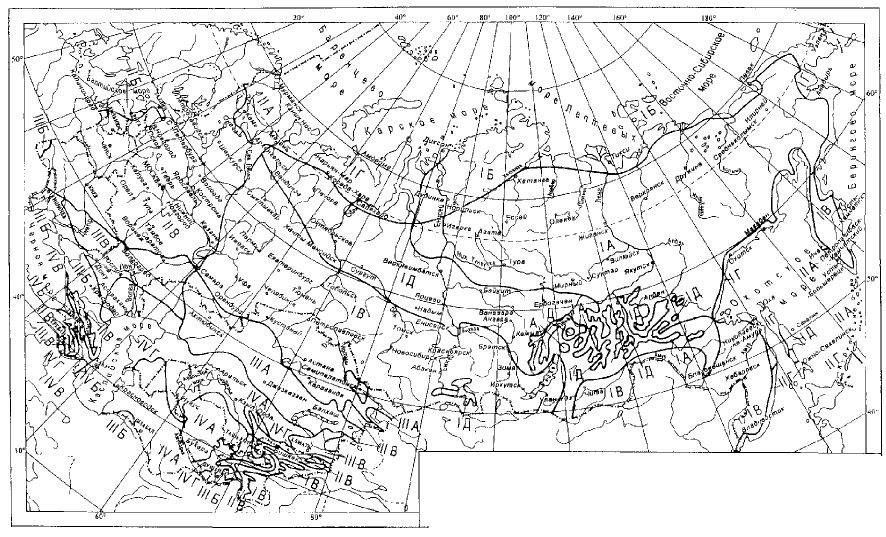
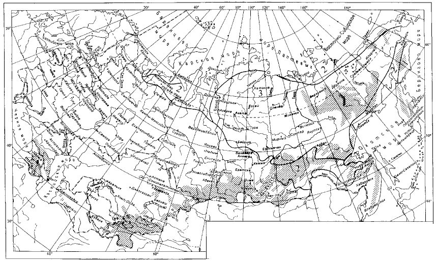
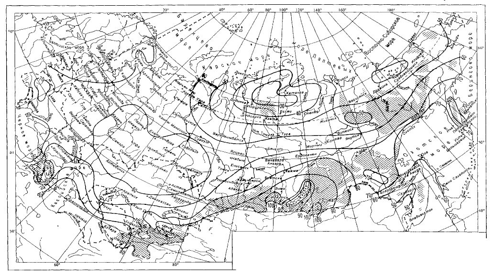
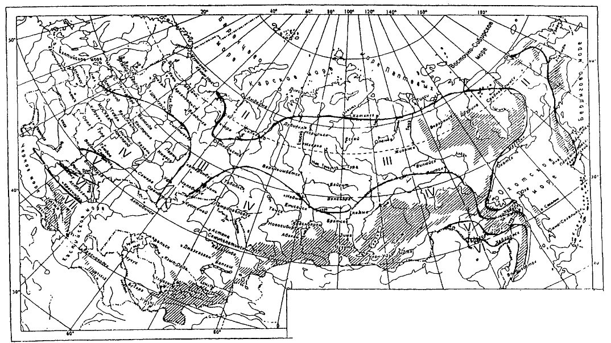
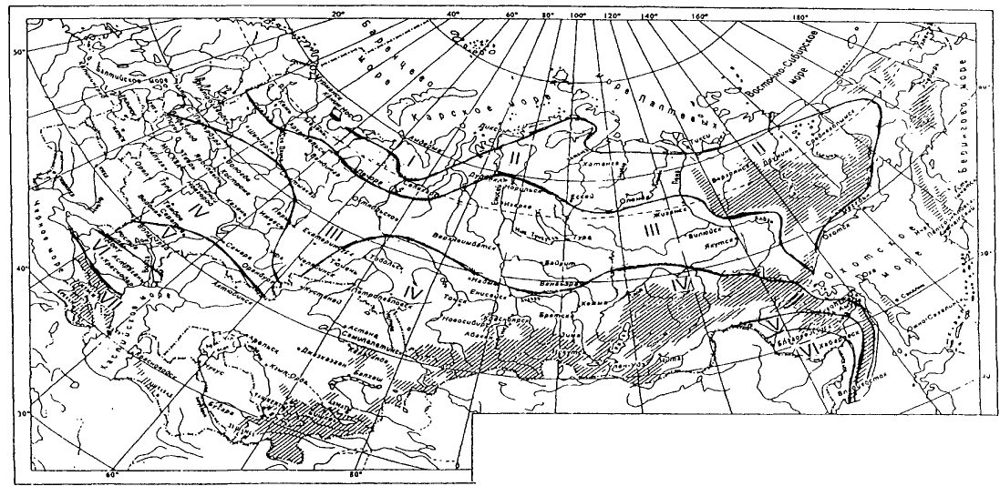

СП 131.13330.2020 «Строительная климатология»
О документе: разработчики, утверждение, регистрация, ключевые слова
Издание официальное
Москва 2020
1 ИСПОЛНИТЕЛИ - федеральное государственное бюджетное учреждение «Научноисследовательский институт строительной физики Российской академии архитектуры и строительных наук» (НИИСФ РААСН) при участии Федерального государственного бюджетного учреждения «Главная геофизическая обсерватория имени А.И. Воейкова» (ФГБУ «ГГО»)
2 ВНЕСЕН Техническим комитетом по стандартизации ТК 465 «Строительство»
3 ПОДГОТОВЛЕН к утверждению Департаментом градостроительной деятельности и архитектуры Министерства строительства и жилищно-коммунального хозяйства Российской Федерации (Минстрой России)
4 УТВЕРЖДЕН приказом Министерства строительства и жилищно-коммунального хозяйства Российской Федерации от 24 декабря 2020 г. № 859/пр и введен в действие с 25 июня 2021 г.
5 ЗАРЕГИСТРИРОВАН Федеральным агентством по техническому регулированию и метрологии (Росстандарт). Пересмотр СП 131.13330.2018 «СНиП 23-01-99* Строительная климатология»
В случае пересмотра (замены) или отмены настоящего свода правил соответствующее уведомление будет опубликовано в установленном порядке. Соответствующая информация, уведомление и тексты размещаются также в информационной системе общего пользования - на официальном сайте разработчика (Минстрой России) в сети Интернет
© Минстрой России, 2020
Настоящий нормативный документ не может быть полностью или частично воспроизведен, тиражирован и распространен в качестве официального издания на территории Российской Федерации без разрешения Минстроя России
СП 131.13330.2020
Введение
Настоящий свод правил разработан в целях обеспечения требований федеральных законов от 30 декабря 2009 г. № 384-ФЗ «Технический регламент о безопасности зданий и сооружений», от 23 ноября 2009 г. № 261-ФЗ «Об энергосбережении и о повышении энергетической эффективности и о внесении изменений в отдельные законодательные акты Российской Федерации».
Пересмотр свода правил выполнен авторским коллективом: федерального государственного бюджетного учреждения «Научно-исследовательский институт строительной физики Российской академии архитектуры и строительных наук» (НИИСФ РААСН) (руководитель темы - д-р техн. наук В.К. Савин, д-р техн. наук Н.П. Умнякова , канд. техн. наук А.С. Стронгин , канд. техн. наук Н.Г. Волкова, В.А. Воронцов, К.А. Кузнецов ), Федерального государственного бюджетного учреждения «Главная геофизическая обсерватория имени А.И. Воейкова» (ФГБУ «ГГО») (д-р геогр. наук Н.В. Кобышева , канд. геогр. наук М.В. Клюева, Д.В. Фасолько ).
1Область применения
Настоящий свод правил устанавливает климатические параметры, которые применяют при проектировании зданий и сооружений, систем отопления, вентиляции, кондиционирования, водоснабжения, при планировке и застройке городских и сельских поселений территории Российской Федерации.
2Основные положения
\_\_\_\_\_\_\_\_\_\_\_\_\_\_\_\_\_\_\_\_\_\_\_\_\_\_\_\_\_\_\_\_\_\_\_\_\_\_\_\_\_\_\_\_\_\_\_\_\_\_\_\_\_\_\_\_\_\_\_\_\_\_\_\_\_\_\_\_\_\_\_\_\_\_\_\_\_
Building climatology
Дата введения - 2021-06-25
3Климатические параметры холодного периода года
Таблица 3.1
| Температура воздуха наиболее Температура | Температура воздуха наиболее Температура | Температура воздуха наиболее Температура | Температура воздуха наиболее Температура | Темпе- ратура воздуха, °С, обеспечен- ностью | Абсо- мини- темпе- ратура воздуха, | Средняя суточная амплитуда | Продолжительность, сут, и средняя температура воздуха, °С, периода со суточной температурой воздуха | Продолжительность, сут, и средняя температура воздуха, °С, периода со суточной температурой воздуха | Продолжительность, сут, и средняя температура воздуха, °С, периода со суточной температурой воздуха | Продолжительность, сут, и средняя температура воздуха, °С, периода со суточной температурой воздуха | Продолжительность, сут, и средняя температура воздуха, °С, периода со суточной температурой воздуха | средней °С средняя темпе- ратура | Средняя месячная относи- тельная влажность воздуха наиболее холодного | Средняя месячная относи- тельная | Коли- чество | Преобла- | Макси- мальная из | Средняя скорость ветра, м/с, за | |
|---|---|---|---|---|---|---|---|---|---|---|---|---|---|---|---|---|---|---|---|
| холодных | холодных | °С, наиболее холодной пятидневки, °С, | °С, наиболее холодной пятидневки, °С, | лютная | темпе- ратуры воздуха | ≤ 0 °С | ≤ 0 °С | ≤ 8 °С | ≤ 8 °С | ≤ 10 | ≤ 10 | дающее | |||||||
| Республика, край, автономный область, пункт | округ, суток, обеспечен- | округ, суток, обеспечен- | ностью обеспечен- ностью | ностью обеспечен- ностью | мальная | наиболее | продол- житель- | средняя темпе- ратура | продол- житель- ность | средняя темпе- ратура | продол- житель- | влажность воздуха в 15 ч | осадков за ноябрь | направ- ление ветра за | средних скоростей ветра по | период со средней | |||
| 0,98 | 0,92 | 0,98 | 0,92 | 0,94 | °С | холодного месяца, °С | ность | ность | месяца,% | наиболее холодного | - март, мм | декабрь февраль | - румбам за январь, | суточной темпе- ратурой воздуха | |||||
| м/с | |||||||||||||||||||
| месяца,% | |||||||||||||||||||
| ≤ 8°С | |||||||||||||||||||
| 1 | 2 | 3 | 4 | 5 | 6 | 7 | 8 | 9 | 10 | 11 | 12 | 13 | 14 | 15 | 16 | 17 | 18 | 19 | 20 |
| Республика Адыгея (Адыгея) Майкоп Республика Алтай | -22 | -19 | -18 | -16 | -6 | -34 | 8,4 | 34 | -0,2 | 147 | 2,5 | 167 | 3,2 | 77 | 68 | 293 | Ю | 3,6 | 3,3 |
| Катанда Кош-Агач | -43 | -40 | -42 | -38 | -27 | -48 | 12,1 | 171 | -13,9 | 233 | -9,0 | 255 | -7,5 | 80 | 76 | 67 | С | 1,8 | 0,7 |
| -47 | -44 | -45 | -42 | -32 | -55 | 11,5 | 190 | -17,6 | 256 | -12,0 | 273 | -10,7 | 81 | 76 | 15 | В | 3,3 | 1,5 | |
| Онгудай | -41 | -38 | -39 | -36 | -26 | -46 | 10,5 | 164 | -12,8 | 228 | -8,0 | 247 | -6,7 | 78 | 72 | 42 | СЗ | 2,1 | 0,5 |
| Яйлю | -31 | -28 | -26 | -24 | -13 | -39 | 9,0 | 148 | -5,8 | 224 | -2,4 | 246 | -1,4 | 66 | 62 | 132 | В | 3,7 | 2,1 |
| Алтайский край | |||||||||||||||||||
| Алейск | -41 | -38 | -38 | -35 | -24 | -47 | 9,4 | 160 | -11,0 | 209 | -7,4 | 225 | -6,3 | 77 | 74 | 131 | ЮЗ | 5,9 | 3,4 |
| Барнаул | -41 | -40 | -39 | -36 | -23 | -52 | 10,0 | 163 | -11,1 | 214 | -7,5 | 231 | -6,2 | 77 | 71 | 125 | ЮЗ | 3,9 | 3,4 |
| Бийск | -44 | -42 | -41 | -37 | -23 | -51 | 12,0 | 163 | -11,3 | 213 | -7,6 | 230 | -6,4 | 78 | 72 | 186 | ЮЗ | 4,9 | 2,3 |
| Змеиногорск | -44 | -41 | -42 | -37 | -23 | -49 | 12,2 | 159 | -10,2 | 211 | -6,7 | 229 | -5,4 | 74 | 66 | 263 | Ю | 5,2 | 3,2 |
| Родино | -44 | -41 | -40 | -37 | -23 | -49 | 9,8 | 162 | -11,4 | 207 | -8,0 | 223 | -6,7 | 78 | 75 | 98 | Ю | 5,9 | 4,5 |
| Рубцовск | -43 | -41 | -40 | -37 | -22 | -49 | 10,2 | 160 | -11,4 | 207 | -7,8 | 222 | -6,6 | 76 | 74 | 96 | Ю | 7,1 | 5,3 |
| Славгород | -44 | -41 | -40 | -37 | -24 | -48 | 9,5 | 162 | -12,3 | 206 | -8,8 | 222 | -7,5 | 80 | 76 | 93 | Ю | 4,9 | 4,1 |
| Тогул | -42 | -39 | -38 | -35 | -24 | -50 | 9,1 | 164 | -10,4 | 218 | -6,7 | 235 | -5,6 | 76 | 72 | 160 | Ю | 4,4 | 3,1 |
| Температура воздуха Температура воздуха наиболее | Температура воздуха Температура воздуха наиболее | Температура воздуха Температура воздуха наиболее | Температура воздуха Температура воздуха наиболее | Темпе- ратура воздуха, °С, | Абсо- лютная мини- | Средняя | Продолжительность, сут, и средняя температура воздуха, °С, периода со средней суточной температурой воздуха | Продолжительность, сут, и средняя температура воздуха, °С, периода со средней суточной температурой воздуха | Продолжительность, сут, и средняя температура воздуха, °С, периода со средней суточной температурой воздуха | Продолжительность, сут, и средняя температура воздуха, °С, периода со средней суточной температурой воздуха | Продолжительность, сут, и средняя температура воздуха, °С, периода со средней суточной температурой воздуха | Средняя месячная относи- тельная | Средняя месячная относи- тельная | Макси- мальная из | Средняя скорость ветра, | ||||
|---|---|---|---|---|---|---|---|---|---|---|---|---|---|---|---|---|---|---|---|
| наиболее | наиболее | холодной | холодной | суточная | ≤ 0 | °С ≤ | °С ≤ | ≤ | ≤ | 10 °С | Коли- | Преобла- | м/с, за | ||||||
| Республика, край, автономный округ, область, пункт | холодных суток, °С, | холодных суток, °С, | обеспечен- ностью пятидневки, °С, обеспечен- | обеспечен- ностью пятидневки, °С, обеспечен- | обеспечен- ностью | мальная темпе- ратура | амплитуда темпе- ратуры воздуха | продол- | средняя | средняя | 8 °С | влажность воздуха | влажность воздуха в | чество осадков за | дающее направ- ление | средних | период со средней | ||
| 0,92 | 0,98 | ностью 0,92 | 0,94 | воздуха, °С | наиболее холодного месяца, °С | житель- ность | темпе- ратура | продол- житель- ность | средняя темпе- ратура | продол- житель- ность | средняя темпе- ратура | наиболее холодного месяца,% | 15 ч наиболее холодного | ноябрь - март, мм | ветра за декабрь - февраль | скоростей ветра по румбам за январь, м/с | суточной темпе- ратурой воздуха ≤ 8°С | ||
| 0,98 | месяца,% | ||||||||||||||||||
| 1 | 2 | 3 | 4 | 5 | 6 | 7 | 8 | 9 | 10 | 11 | 12 | 13 | 14 | 15 | 16 | 17 | 18 | 19 | 20 |
| Амурская область | |||||||||||||||||||
| Архара | -40 | -38 | -38 | -36 | -29 | -50 | 12,5 | 168 | -17,0 | 212 | -12,6 | 227 | -11,2 | 77 | 71 | 62 | СЗ | 2,5 | 2,2 |
| Белогорск | -40 | -39 | -38 | -36 | -30 | -46 | 9,3 | 171 | -16,3 | 215 | -12,1 | 230 | -10,7 | 77 | 72 | 42 | СЗ | 2,7 | 2,2 |
| Благовещенск | -37 | -35 | -34 | -33 | -29 | -45 | 10,4 | 165 | -14,7 | 210 | -10,6 | 224 | -9,4 | 72 | 63 | 47 | СЗ | 2,6 | 2,1 |
| Бомнак | -46 | -44 | -43 | -42 | -34 | -52 | 9,4 | 190 | -19,6 | 240 | -14,6 | 255 | -13,2 | 76 | 71 | 51 | СВ | 2,2 | 1,2 |
| Братолюбовка | -41 | -39 | -39 | -37 | -30 | -49 | 11,7 | 174 | -17,3 | 221 | -12,7 | 236 | -11,3 | 76 | 72 | 41 | З | 2,0 | 2,1 |
| Бысса | -44 | -42 | -41 | -40 | -34 | -51 | 13,6 | 181 | -19,3 | 232 | -14,1 | 248 | -12,6 | 75 | 71 | 60 | СВ | 2,1 | 1,0 |
| Ерофей Павлович | -43 | -40 | -38 | -37 | -36 | -50 | 13,0 | 194 | -18,1 | 247 | -13,3 | 262 | -12,0 | 77 | 69 | 36 | С | 2,3 | 1,3 |
| Завитинск | -38 | -36 | -35 | -34 | -30 | -46 | 10,1 | 178 | -17,4 | 225 | -12,9 | 241 | -11,4 | 76 | 70 | 57 | СЗ | 2,1 | 1,9 |
| Зея | -46 | -44 | -43 | -42 | -35 | -52 | 14,7 | 190 | -19,5 | 239 | -14,6 | 255 | -13,1 | 69 | 63 | 35 | С | 3,5 | - |
| Норск | -45 | -43 | -44 | -41 | -35 | -55 | 13,9 | 179 | -19,5 | 227 | -14,5 | 243 | -13,0 | 72 | 67 | 51 | СВ | 2,1 | 1,0 |
| Поярково | -40 | -38 | -37 | -35 | -30 | -46 | 11,8 | 167 | -16,4 | 212 | -12,0 | 227 | -10,6 | 75 | 70 | 49 | З | 2,5 | 2,0 |
| Свободный | -42 | -40 | -39 | -37 | -30 | -50 | 11,7 | 176 | -17,1 | 222 | -12,6 | 237 | -11,3 | 70 | 63 | 50 | З, СЗ | 2,9 | 2,6 |
| Сковородино | -44 | -42 | -42 | -39 | -34 | -52 | 14,5 | 193 | -18,6 | 244 | -13,8 | 260 | -12,4 | 73 | 65 | 32 | СВ | 2,3 | 2,2 |
| Тында | -45 | -43 | -42 | -40 | -33 | -51 | 10,4 | 199 | -19,1 | 250 | -14,4 | 265 | -13,1 | 74 | 70 | 52 | З | 3,0 | 2,0 |
| Усть-Нюкжа | -47 | -45 | -44 | -43 | -35 | -51 | 7,8 | 200 | -19,9 | 252 | -15,0 | 266 | -13,7 | 77 | 74 | 35 | С | 1,8 | 0,6 |
| Черняево | -45 | -43 | -42 | -40 | -34 | -51 | 13,5 | 180 | -17,7 | 229 | -13,0 | 244 | -11,7 | 72 | 64 | 32 | З | 3,7 | 1,9 |
| Шимановск | -41 | -40 | -39 | -37 | -30 | -49 | 12,9 | 179 | -17,0 | 228 | -12,4 | 243 | -11,1 | 72 | 65 | 42 | СЗ | 3,1 | 2,1 |
| Экимчан | -53 | 263 | В | ||||||||||||||||
| Архангельская | -45 | -44 | -43 | -42 | -35 | 10,7 | 195 | -19,4 | 247 | -14,4 | -13,0 | 74 | 67 | 67 | 1,6 | 1,3 | |||
| область Архангельск | -40 | -38 | -37 | -34 | -20 | -45 | 8,3 | 175 | -8,1 | 248 | -4,5 | 270 | -3,4 | 85 | 84 | 188 | ЮВ | 3,6 | 3,1 |
| Емецк | -38 | -36 | -35 | -32 | -20 | -48 | 6,9 | 175 | -8,5 | 244 | -4,9 | 265 | -3,8 | 84 | 84 | 159 | Ю | 4,8 | 3,7 |
| Температура воздуха Температура воздуха наиболее | Температура воздуха Температура воздуха наиболее | Температура воздуха Температура воздуха наиболее | Температура воздуха Температура воздуха наиболее | Темпе- ратура воздуха, °С, | Абсо- лютная | Средняя | Продолжительность, сут, и средняя температура воздуха, °С, периода со суточной температурой воздуха | Продолжительность, сут, и средняя температура воздуха, °С, периода со суточной температурой воздуха | Продолжительность, сут, и средняя температура воздуха, °С, периода со суточной температурой воздуха | Продолжительность, сут, и средняя температура воздуха, °С, периода со суточной температурой воздуха | Продолжительность, сут, и средняя температура воздуха, °С, периода со суточной температурой воздуха | Средняя месячная относи- тельная воздуха наиболее | Средняя месячная относи- | Макси- мальная | Средняя скорость ветра, | ||||
|---|---|---|---|---|---|---|---|---|---|---|---|---|---|---|---|---|---|---|---|
| наиболее | наиболее | мини- | суточная | ≤ 0 | °С ≤ | °С ≤ | 8 °С | ≤ | ≤ | Коли- чество | Преобла- | м/с, за | |||||||
| Республика, край, автономный округ, область, пункт | холодных суток, °С, | холодных суток, °С, | обеспечен- ностью холодной пятидневки, °С, обеспечен- ностью | обеспечен- ностью холодной пятидневки, °С, обеспечен- ностью | обеспечен- ностью | мальная темпе- ратура | амплитуда темпе- ратуры воздуха наиболее | продол- | средняя | средняя | 10 °С | влажность | тельная влажность воздуха в | осадков за | дающее направ- ление | из средних | период со средней | ||
| 0,98 | 0,92 | 0,98 | 0,92 | 0,94 | воздуха, °С | холодного месяца, | житель- ность | темпе- ратура | продол- житель- ность | средняя темпе- ратура | продол- житель- ность | средняя темпе- ратура | холодного месяца,% | 15 ч наиболее холодного - | ноябрь март, | ветра за декабрь - февраль | скоростей ветра по румбам за январь, м/с | суточной темпе- ратурой воздуха ≤ 8°С | |
| °С | месяца,% | мм | |||||||||||||||||
| 1 | 2 | 3 | 4 | 5 | 6 | 7 | 8 | 9 | 10 | 11 | 12 | 13 | 14 | 15 | 16 | 17 | 18 | 19 | 20 |
| Каргополь | -37 | -34 | -32 | -29 | -18 | -44 | 8,3 | 167 | -7,7 | 235 | -4,3 | 255 | -3,2 | 86 | 85 | 205 | Ю | 3,6 | 3,0 |
| Койнас | -48 | -47 | -44 | -41 | -24 | -52 | 9,7 | 189 | -10,0 | 260 | -6,2 | 280 | -5,1 | 83 | 83 | 195 | Ю | 2,2 | 2,1 |
| Котлас | -43 | -40 | -39 | -35 | -20 | -47 | 8,3 | 166 | -8,7 | 235 | -5,0 | 255 | -3,9 | 84 | 83 | 176 | Ю | 4,2 | 3,5 |
| Мезень | -42 | -40 | -39 | -36 | -21 | -49 | 8,2 | 191 | -8,8 | 265 | -5,2 | 288 | -4,0 | 84 | 84 | 162 | Ю | 4,5 | 4,1 |
| Онега | -38 | -35 | -34 | -31 | -18 | -43 | 7,6 | 170 | -7,3 | 242 | -3,9 | 263 | -2,9 | 85 | 84 | 200 | ЮВ | 4,0 | 2,8 |
| Шенкурск | -42 | -39 | -38 | -35 | -20 | -51 | 8,2 | 167 | -8,3 | 235 | -4,7 | 255 | -3,6 | 83 | 83 | 169 | Ю | 3,9 | 3,3 |
| Астраханская область | |||||||||||||||||||
| Астрахань | -26 | -24 | -22 | -20 | -9 | -34 | 7,7 | 102 | -3,5 | 165 | -0,7 | 180 | 0,2 | 83 | 78 | 76 | В | 3,8 | 3,2 |
| Верхний Баскунчак | -30 | -27 | -26 | -23 | -12 | -37 | 7,3 | 120 | -5,3 | 175 | -2,4 | 188 | -1,6 | 83 | 74 | 112 | В | 3,9 | 3,5 |
| Республика Башкортостан | |||||||||||||||||||
| Белорецк | -37 | -35 | -34 | -31 | -20 | -45 | 8,8 | 168 | -10,1 | 228 | -6,3 | 245 | -5,3 | 79 | 73 | 126 | ЮЗ | 5,1 | 2,9 |
| Дуван | -43 | -39 | -36 | -33 | -19 | -50 | 8,5 | 165 | -9,6 | 223 | -6,1 | 239 | -5,1 | 79 | 78 | 131 | Ю | 3,6 | 2,8 |
| Мелеуз | -42 | -38 | -38 | -33 | -21 | -45 | 9,8 | 155 | -9,8 | 206 | -6,3 | 219 | -5,4 | 77 | 75 | 170 | Ю | 4,6 | 2,9 |
| Уфа | -41 | -39 | -37 | -33 | -20 | -49 | 10,0 | 154 | -9,5 | 209 | -5,9 | 223 | -5,0 | 78 | 76 | 213 | Ю | 3,9 | 2,9 |
| Янаул | -43 | -40 | -38 | -34 | -21 | -51 | 9,5 | 163 | -9,6 | 218 | -6,1 | 233 | -5,1 | 81 | 78 | 143 | Ю | 6,0 | 3,9 |
| Белгородская область | |||||||||||||||||||
| Белгород | -28 | -26 | -25 | -24 | -12 | -35 | 6,2 | 127 | -4,6 | 187 | -1,9 | 203 | -1,0 | 86 | 82 | 211 | ЮЗ | 4,7 | 4,3 |
| Брянская область Брянск | -30 | -27 | -25 | -23 | -12 | -42 | 6,4 | 132 | -5,0 | 199 | -2,0 | 217 | -1,1 | 85 | 81 | 220 | Ю | 3,5 | 2,9 |
| Температура воздуха Температура воздуха наиболее | Температура воздуха Температура воздуха наиболее | Температура воздуха Температура воздуха наиболее | Температура воздуха Температура воздуха наиболее | Темпе- ратура воздуха, °С, | Абсо- лютная мини- | Средняя | Продолжительность, сут, и средняя температура воздуха, °С, периода со средней суточной температурой воздуха | Продолжительность, сут, и средняя температура воздуха, °С, периода со средней суточной температурой воздуха | Продолжительность, сут, и средняя температура воздуха, °С, периода со средней суточной температурой воздуха | Продолжительность, сут, и средняя температура воздуха, °С, периода со средней суточной температурой воздуха | Продолжительность, сут, и средняя температура воздуха, °С, периода со средней суточной температурой воздуха | Средняя месячная относи- тельная влажность воздуха | Средняя месячная относи- тельная | Макси- мальная из | Средняя скорость ветра, м/с, за | ||||
|---|---|---|---|---|---|---|---|---|---|---|---|---|---|---|---|---|---|---|---|
| наиболее | наиболее | холодной | холодной | суточная | ≤ 0 °С | ≤ 0 °С | ≤ | ≤ | ≤ 10 °С | ≤ 10 °С | Коли- чество | Преобла- | |||||||
| Республика, край, автономный округ, область, пункт | холодных суток, °С, | холодных суток, °С, | обеспечен- ностью пятидневки, °С, обеспечен- ностью | обеспечен- ностью пятидневки, °С, обеспечен- ностью | обеспечен- ностью | мальная темпе- ратура | амплитуда темпе- ратуры воздуха наиболее | продол- | средняя продол- | 8 | °С средняя | продол- | средняя | влажность воздуха в | осадков за | дающее направ- ление | средних скоростей | период со средней | |
| 0,98 | 0,92 | 0,98 | 0,92 | 0,94 | воздуха, °С | холодного месяца, °С | житель- ность | темпе- ратура | житель- ность | темпе- ратура | житель- ность | темпе- ратура | наиболее холодного месяца,% | 15 ч наиболее холодного | ноябрь - март, мм | ветра за декабрь - февраль за | ветра по румбам январь, м/с | суточной темпе- ратурой воздуха ≤ 8°С | |
| месяца,% | |||||||||||||||||||
| 1 | 2 | 3 | 4 | 5 | 6 | 7 | 8 | 9 | 10 | 11 | 12 | 13 | 14 | 15 | 16 | 17 | 18 | 19 | 20 |
| Республика Бурятия | |||||||||||||||||||
| Бабушкин | -33 | -31 | -31 | -29 | -19 | -39 | 9,4 | 175 | -9,6 | 250 | -5,5 | 272 | -4,3 | 77 | 73 | 95 | З | 5,7 | 3,7 |
| Багдарин | -45 | -44 | -44 | -42 | -34 | -52 | 15,3 | 205 | -18,2 | 262 | -13,3 | 276 | -12,2 | 75 | 67 | 16 | С | 2,2 | 1,2 |
| Баргузин | -44 | -43 | -42 | -41 | -32 | -52 | 10,2 | 183 | -16,6 | 240 | -11,7 | 255 | -10,5 | 78 | 75 | 97 | З | 3,2 | 1,6 |
| Кяхта | -35 | -34 | -33 | -31 | -23 | -40 | 9,6 | 171 | -13,1 | 230 | -8,7 | 245 | -7,6 | 75 | 67 | Ю | 2,3 | 1,5 | |
| Монды | -37 | -35 | -33 | -32 | -25 | -48 | 16,0 | 189 | -12,7 | 259 | -8,1 | 277 | -7,0 | 69 | 54 | 24 11 | З | 3,0 | 2,2 |
| Нижнеангарск | -37 | -35 | -35 | -33 | -25 | -47 | 7,7 | 194 | -13,8 | 255 | -9,5 | 271 | -8,4 | 75 | 69 | 73 | С | 2,2 | 1,7 |
| Сосново-Озерское | -41 | -39 | -37 | -36 | -28 | -49 | 11,4 | 197 | -15,0 | 258 | -10,5 | 271 | -9,6 | 77 | 74 | 19 | З | 5,0 | 3,5 |
| Уакит | -43 | -41 | -41 | -40 | -32 | -49 | 10,0 | 216 | -17,7 | 270 | -13,3 | 285 | -12,1 | 77 | 73 | 16 | СЗ | 4,4 | 1,8 |
| Улан-Удэ | -38 | -37 | -36 | -35 | -27 | -51 | 9,9 | 175 | -14,6 | 231 | -10,1 | 245 | -9,0 | 76 | 70 | 31 | З | 2,1 | 1,9 |
| Хоринск | -43 | -41 | -40 | -38 | -30 | -50 | 13,0 | 184 | -15,7 | 239 | -11,1 | 253 | -10,0 | 76 | 72 | 13 | З | 4,8 | 2,3 |
| Владимирская | |||||||||||||||||||
| Владимир | -35 | -33 | -32 | -27 | -15 | -48 | 6,6 | 146 | -6,5 | 209 | -3,3 | 226 | -2,4 | 85 | 82 | 205 | Ю | 4,1 | 3,4 |
| Муром | -35 | -33 | -31 | -28 | -15 | -45 | 7,9 | 146 | -6,7 | 206 | -3,6 | 223 | -2,6 | 83 | 78 | Ю | 3,6 | 3,4 | |
| Волгоградская область | 197 | ||||||||||||||||||
| Волгоград | -28 | -26 | -24 | -22 | -12 | -35 | 6,2 | 122 | -5,0 | 176 | -2,3 | 190 | -1,4 | 85 | 81 | В, | З | 5,5 | 3,6 |
| Камышин | -30 | -28 | -26 | -24 | -12 | -37 | 6,3 | 134 | -6,3 | 186 | -3,4 | 199 | -2,6 | 82 | 79 | 177 157 | СЗ | 5,5 | 4,9 |
| Котельниково | -29 | -26 | -25 | -23 | -11 | -38 | 5,8 | 117 | -4,5 | 176 | -1,7 | 191 | -0,8 | 86 | 81 | 137 | В | 4,1 | 3,5 |
| Новоаннинский | -31 | -29 | -27 | -25 | -12 | -41 | 6,4 | 130 | -5,7 | 186 | -2,7 | 200 | -1,9 | 83 | 78 | 199 | Ю | 4,3 | 3,7 |
| Эльтон | -28 | -26 | -24 | -36 | -3,0 | 191 | -2,2 | 82 | 97 | В | 4,8 | ||||||||
| Вологодская область | -30 | -13 | 7,5 | 125 | -6,0 | 178 | 78 | 5,8 |
| Температура воздуха наиболее Температура | Температура воздуха наиболее Температура | Температура воздуха наиболее Температура | Температура воздуха наиболее Температура | Темпе- ратура воздуха, °С, обеспечен- | Абсо- лютная мини- | Средняя | Продолжительность, сут, и средняя температура воздуха, °С, периода со суточной температурой воздуха | Продолжительность, сут, и средняя температура воздуха, °С, периода со суточной температурой воздуха | Продолжительность, сут, и средняя температура воздуха, °С, периода со суточной температурой воздуха | Продолжительность, сут, и средняя температура воздуха, °С, периода со суточной температурой воздуха | Продолжительность, сут, и средняя температура воздуха, °С, периода со суточной температурой воздуха | Средняя месячная относи- тельная влажность воздуха наиболее средняя | Средняя месячная относи- тельная | Макси- мальная | Средняя скорость ветра, м/с, за | ||||
|---|---|---|---|---|---|---|---|---|---|---|---|---|---|---|---|---|---|---|---|
| воздуха наиболее холодной | воздуха наиболее холодной | суточная | ≤ 0 °С | ≤ 0 °С | ≤ | ≤ | 8 °С ≤ | 8 °С ≤ | Коли- чество | Преобла- | |||||||||
| Республика, край, автономный округ, область, пункт | холодных суток, обеспечен- | холодных суток, обеспечен- | °С, ностью пятидневки, °С, обеспечен- ностью | °С, ностью пятидневки, °С, обеспечен- ностью | ностью | мальная темпе- ратура | амплитуда темпе- ратуры воздуха наиболее | продол- житель- | средняя | продол- средняя | продол- средняя | продол- | 10 °С | влажность воздуха в | осадков за | дающее направ- ление | из средних скоростей | период со средней | |
| 0,98 | 0,92 | 0,98 | 0,92 | 0,94 | воздуха, °С | холодного месяца, °С | ность | темпе- ратура | житель- ность | темпе- ратура | житель- ность | темпе- ратура | холодного месяца,% | 15 ч наиболее холодного месяца,% - | ноябрь март, мм | ветра за декабрь - февраль | ветра по румбам за январь, м/с | суточной темпе- ратурой воздуха ≤ 8°С | |
| 1 | 2 | 3 | 4 | 5 | 6 | 7 | 8 | 9 | 10 | 11 | 12 | 13 | 14 | 15 | 16 | 17 | 18 | 19 | 20 |
| Бабаево | -38 | -35 | -34 | -30 | -16 | -48 | 8,0 | 155 | -6,7 | 226 | -3,3 | 245 | -2,4 | 85 | 84 | 196 | Ю | 3,1 | 2,5 |
| Вологда | -40 | -36 | -35 | -32 | -16 | -47 | 8,0 | 158 | -7,4 | 226 | -4,0 | 244 | -3,0 | 85 | 83 | 170 | Ю | 3,9 | 3,3 |
| Вытегра | -40 | -37 | -35 | -32 | -17 | -49 | 8,2 | 156 | -6,8 | 228 | -3,4 | 248 | -2,4 | 84 | 83 | 221 | ЮВ | 3,5 | 2,9 |
| Никольск | -42 | -39 | -38 | -34 | -19 | -49 | 8,1 | 163 | -8,3 | 230 | -4,7 | 248 | -3,7 | 84 | 83 | 201 | Ю | 2,8 | 2,3 |
| Тотьма | -40 | -37 | -36 | -33 | -18 | -46 | 7,4 | 163 | -7,9 | 230 | -4,4 | 249 | -3,4 | 85 | 84 | 203 | Ю | 3,1 | 3,1 |
| Воронежская область Воронеж | -30 | -28 | -26 | -24 | -12 | -37 | 6,6 | 130 | -5,3 | 190 | -2,4 | 205 | -1,5 | 83 | 78 | 206 | З | 4,0 | 3,2 |
| Республика Дагестан Дербент | -13 | -11 | -9 | -7 | 0 | -19 | 5,0 | 0 | - | 136 | 4,0 | 158 | 4,7 | 83 | 80 | 184 | СЗ | 3,2 | 2,1 |
| Махачкала | -20 | -17 | -15 | -13 | -2 | -27 | 5,9 | 0 | - | 145 | 2,8 | 165 | 3,6 | 83 | 79 | 151 | СЗ, З | 5,2 | 3,9 |
| Терекли-Мектеб | -24 | -22 | -20 | -17 | -5 | -35 | 6,5 | 69 | -1,4 | 155 | 1,4 | 172 | 2,2 | 88 | 81 | 109 В | 3,7 | 2,8 | |
| автономная область Биробиджан | -34 | -33 | -32 | -31 | -26 | -43 | 15,3 | 161 | -14,5 | 210 | -10,1 | 225 | -8,9 | 75 | 67 | 81 | З | 2,6 | 1,6 |
| Екатерино-Никольское | -33 | -31 | -30 | -29 | -22 | -40 | 10,2 | 159 | -13,1 | 205 | -9,2 | 220 | -8,0 | 70 | 60 | 53 | СЗ | 4,5 | 2,2 |
| Облучье | -40 | -39 | -37 | -36 | -29 | -46 | 13,1 | 173 | -16,7 | 221 | -12,1 | 237 | -10,7 | 73 | 67 | 82 | С | 1,9 | 1,5 |
| Забайкальский край | Забайкальский край | Забайкальский край | Забайкальский край | Забайкальский край | Забайкальский край | Забайкальский край | Забайкальский край | Забайкальский край | Забайкальский край | Забайкальский край | Забайкальский край | Забайкальский край | Забайкальский край | Забайкальский край | Забайкальский край | Забайкальский край | Забайкальский край | Забайкальский край | Забайкальский край |
| Агинское | -40 | -37 | -36 | -34 | -27 | -48 | 14,0 | 181 | -14,9 | 237 | -10,4 | 251 | -9,3 | 72 | 65 | 21 | З | 3,7 | 2,9 |
| Акша | -38 | -36 | -35 | -34 | -27 | -50 | 14,8 | 179 | -14,4 | 235 | -9,9 | 251 | -8,7 | 75 | 68 | 16 | Ю | 4,5 | 2,5 |
| Александровский | -40 | -39 | -39 | -37 | -30 | -48 | 14,9 | 190 | -17,1 | 247 | -12,2 | 264 | -10,8 | 77 | 70 | 25 | Ю | ||
| Завод | -8,0 | 79 | 73 | 2,4 | 2,1 | ||||||||||||||
| Борзя | -42 | -41 | -40 | -38 | -31 | -50 | 14,3 | 159 | -13,1 | 205 | -9,2 | 220 | 19 | СВ | 2,4 | 2,8 |
| Температура воздуха Температура | Температура воздуха Температура | Температура воздуха Температура | Температура воздуха Температура | Темпе- ратура воздуха, | Абсо- лютная | Средняя | Продолжительность, температура воздуха, суточной | Продолжительность, температура воздуха, суточной | Продолжительность, температура воздуха, суточной | Продолжительность, температура воздуха, суточной | Продолжительность, температура воздуха, суточной | Продолжительность, температура воздуха, суточной | Средняя месячная относи- тельная влажность воздуха наиболее холодного | Средняя месячная относи- | Макси- мальная из | Средняя скорость ветра, | |||
|---|---|---|---|---|---|---|---|---|---|---|---|---|---|---|---|---|---|---|---|
| наиболее | наиболее | воздуха наиболее холодной | воздуха наиболее холодной | °С, | мини- | суточная | ≤ 0 °С | ≤ 0 °С | температурой ≤ 8 | температурой ≤ 8 | воздуха °С ≤ 10 | воздуха °С ≤ 10 | Коли- чество | Преобла- | м/с, за | ||||
| Республика, край, автономный округ, область, пункт | холодных суток, обеспечен- | холодных суток, обеспечен- | °С, ностью пятидневки, °С, обеспечен- ностью | °С, ностью пятидневки, °С, обеспечен- ностью | обеспечен- ностью | мальная темпе- ратура | амплитуда темпе- ратуры воздуха наиболее | продол- житель- | средняя темпе- | продол- | средняя | продол- | °С | средняя | тельная влажность воздуха в | осадков за | дающее направ- ление | средних скоростей | период со средней |
| 0,98 | 0,92 | 0,98 | 0,92 | 0,94 | воздуха, °С | холодного месяца, °С | ность | ратура | житель- ность | темпе- ратура | житель- ность | темпе- ратура | месяца,% | 15 ч наиболее холодного месяца,% | ноябрь - март, мм | ветра за декабрь - февраль | ветра по румбам за январь, м/с | суточной темпе- ратурой воздуха | |
| ≤ 8°С | |||||||||||||||||||
| 1 | 2 | 3 | 4 | 5 | 6 | 7 | 8 | 9 | 10 | 11 | 12 | 13 | 14 | 15 | 16 | 17 | 18 | 19 | 20 |
| Дарасун Калакан Красный Чикой | -38 -50 -41 | -36 -48 | -35 -49 | -34 -37 -37 | -27 -39 -30 | -48 -56 -48 | 14,5 14,5 | 185 205 | -14,1 -21,5 -16,0 | 244 258 | -9,7 -16,2 | 260 273 | -8,5 -14,8 -9,7 | 73 78 | 64 68 | 27 24 | СЗ З | 3,1 2,5 2,4 | 1,8 0,7 1,2 |
| -43 -45 | -40 -42 | -38 -41 | -40 | -33 | -53 | 12,7 14,3 | 181 205 | -21,5 | 240 | -11,0 | 257 | 78 | 74 70 | 25 28 | З СЗ | 3,5 | 1,5 1,7 | ||
| Могоча | -44 | 258 | -16,2 | 273 | -14,8 | 77 | 24 | 3,0 | |||||||||||
| Нерчинск | -44 | -42 | -34 | -54 | 13,0 | 181 | -19,2 | 231 | -14,1 | 246 | -12,7 | 79 | 74 | 4,0 | |||||
| Нерчинский Завод | -41 | -40 | -40 | -38 | -30 | -53 | 8,9 | 181 | -17,5 | 233 | -12,6 | 249 | -11,3 | 79 | 75 | 30 | СЗ | 2,4 | 1,1 |
| Средний Калар | -50 | -48 | -48 | -46 | -40 | -56 | 14,1 | 212 | -22,0 | 266 | -16,7 | 281 | -15,4 | 80 | 75 | 18 | СВ | 3,3 | 0,6 |
| Тунгокочен | -47 | -45 | -45 | -43 | -36 | -54 | 17,0 | 201 | -19,3 | 259 | -14,0 | 275 | -12,7 | 78 | 71 | 25 | ЮЗ | 2,8 | 1,3 |
| Тупик | -47 | -45 | -44 | -43 | -36 | -56 | 14,7 | 202 | -20,2 | 256 | -15,0 | 271 | -13,7 | 76 | 71 | 46 | ЮЗ | 2,1 | 1,7 |
| Чара | -49 | -47 | -47 | -45 | -38 | -56 | 12,1 | 211 | -20,6 | 262 | -15,8 | 276 | -14,5 | 78 | 76 | 18 | ЮЗ | 1,6 | 1,3 |
| Чита | -41 | -39 | -39 | -37 | -30 | -47 | 13,3 | 182 | -16,0 | 238 | -11,2 | 252 | -10,1 | 76 | 69 | 19 | В | 1,5 | 2,0 |
| Ивановская область | |||||||||||||||||||
| Иваново | -36 | -33 | -32 | -29 | -16 | -45 | 8,1 | 150 | -6,9 | 214 | -3,6 | 233 | -2,6 | 85 | 82 | 206 | Ю | 4,3 | 3,7 |
| Кинешма | -36 | -33 | -32 | -29 | -16 | -45 | 7,1 | 150 | -6,9 | 214 | -3,6 | 232 | -2,7 | 84 | 82 | 214 | Ю | 3,4 | 2,8 |
| Республика Ингушетия | |||||||||||||||||||
| Магас 1) Иркутская | -20 | -18 | -17 | -14 | -6 | -23 | 8,5 | 78 | -1,5 | 167 | 1,3 | 192 | 2,3 | 81 | 74 | 140 | СВ,Ю | 1,5 | 1,2 |
| область Алыгджер | -40 | -38 | -36 | -34 | -22 | -47 | 11,6 | 179 | -10,5 | 256 | -6,1 | 276 | -5,0 | 62 | 56 | 30 | Ю | 4,7 | 2,5 |
| Байкальск | -32 | -31 | -29 | -27 | -20 | -39 | 9,4 | 175 | -9,8 | 247 | -5,7 | 268 | -4,6 | 77 | 69 | 131 | ЮЗ | 1,4 | 1,4 |
| Бодайбо | -51 | -49 | -49 | -47 | -37 | -55 | 7,3 | 200 | -18,9 | 254 | -14,0 | 268 | -12,8 | 78 | 77 | 105 | CB | 2,3 | 1,2 |
| Температура воздуха Температура | Температура воздуха Температура | Температура воздуха Температура | Температура воздуха Температура | Темпе- ратура воздуха, °С, обеспечен- | Абсо- лютная | Средняя | Продолжительность, сут, и средняя температура воздуха, °С, периода со средней суточной температурой воздуха | Продолжительность, сут, и средняя температура воздуха, °С, периода со средней суточной температурой воздуха | Продолжительность, сут, и средняя температура воздуха, °С, периода со средней суточной температурой воздуха | Продолжительность, сут, и средняя температура воздуха, °С, периода со средней суточной температурой воздуха | Продолжительность, сут, и средняя температура воздуха, °С, периода со средней суточной температурой воздуха | Средняя месячная относи- тельная влажность воздуха наиболее | Средняя месячная относи- тельная влажность воздуха в | Коли- | Макси- мальная из | Средняя скорость ветра, м/с, за | |||
|---|---|---|---|---|---|---|---|---|---|---|---|---|---|---|---|---|---|---|---|
| наиболее | наиболее | воздуха наиболее холодной | воздуха наиболее холодной | мини- | суточная | ≤ | ≤ | ≤ | ≤ | 8 °С | 8 °С | чество | Преобла- дающее | ||||||
| Республика, край, автономный округ, область, пункт | холодных суток, °С, обеспечен- ностью | холодных суток, °С, обеспечен- ностью | пятидневки, °С, обеспечен- ностью | пятидневки, °С, обеспечен- ностью | ностью | мальная темпе- ратура | амплитуда темпе- ратуры воздуха | продол- | 0 °С средняя | ≤ | 10 °С | осадков | направ- | средних | период со средней | ||||
| 0,98 | 0,92 | 0,98 | 0,92 | 0,94 | воздуха, °С | наиболее холодного месяца, | °С житель- ность | темпе- ратура | продол- житель- ность | средняя темпе- ратура | продол- житель- ность | темпе- ратура | холодного месяца,% средняя | 15 ч наиболее холодного месяца,% | за ноябрь - март, мм | ление ветра за декабрь - февраль | скоростей ветра по румбам за январь, м/с | суточной темпе- ратурой воздуха | |
| ≤ 8°С | |||||||||||||||||||
| 1 | 2 | 3 | 4 | 5 | 6 | 7 | 8 | 9 | 10 | 11 | 12 | 13 | 14 | 15 | 16 | 17 | 18 | 19 | 20 |
| Братск | -43 | -41 | -40 | -39 | -26 | -46 | 8,1 | 183 | -12,8 | 248 | -8,4 | 263 | -7,4 | 79 | 75 | 82 | З | 2,5 | 2,2 |
| Верхне-Марково | -52 | -51 | -50 | -48 | -37 | -55 | 11,1 | 195 | -12,0 | 267 | -7,7 | 285 | -6,6 | 77 | 75 | 85 | ЮЗ,З | 3,7 | 1,6 |
| Верхняя Гутара | -41 | -39 | -37 | -35 | -26 | -47 | 16,3 | 194 | -17,8 | 252 | -12,8 | 266 | -11,6 | 68 | 65 | 32 | Ю | 2,1 | 0,9 |
| Ербогачен | -57 | -55 | -55 | -52 | -39 | -61 | 11,4 | 211 | -19,6 | 262 | -15,0 | 275 | -13,9 | 75 | 75 | 86 | Ю | 2,1 | 1,5 |
| Ершово | -47 | -44 | -44 | -41 | -30 | -52 | 9,1 | 188 | -13,7 | 248 | -9,4 | 262 | -8,4 | 79 | 76 | 101 | З,ЮЗ | 2,8 | 1,6 |
| Жигалово | -49 | -48 | -46 | -44 | -33 | -54 | 10,6 | 211 | -19,6 | 262 | -15,0 | 275 | -13,9 | 81 | 77 | 62 | З | 2,4 | 1,1 |
| Зима | -44 | -42 | -40 | -38 | -27 | -51 | 10,8 | 178 | -13,9 | 237 | -9,4 | 253 | -8,2 | 81 | 77 | 69 | СЗ | 2,6 | 1,5 |
| Ика | -56 | -53 | -53 | -50 | -38 | -60 | 13,7 | 209 | -18,3 | 263 | -13,7 | 276 | -12,6 | 74 | 71 | 48 | Ю | 2,7 | 1,5 |
| Иркутск | -38 | -37 | -35 | -33 | -23 | -50 | 9,4 | 170 | -11,9 | 233 | -7,6 | 249 | -6,5 | 79 | 76 | 69 | В | 2,9 | 2,1 |
| Киренск | -54 | -52 | -51 | -49 | -36 | -58 | 11,6 | 196 | -17,3 | 251 | -12,6 | 265 | -11,5 | 76 | 74 | 97 | ЮЗ | 3,6 | 1,8 |
| Мама | -49 | -47 | -46 | -44 | -34 | -56 | 7,5 | 196 | -17,7 | 252 | -12,9 | 266 | -11,8 | 77 | 75 | 155 | ЮВ | 2,7 | 2,3 |
| Наканно | -59 | -57 | -56 | -54 | -43 | -61 | 10,5 | 217 | -21,4 | 266 | -16,7 | 278 | -15,6 | 78 | 77 | 72 | Ю | 2,6 | 1,4 |
| Непа | -55 | -53 | -52 | -49 | -37 | -58 | 11,2 | 204 | -17,7 | 259 | -13,1 | 272 | -12,0 | 79 | 77 | 88 | Ю | 2,5 | 1,5 |
| Орлинга Перевоз | -50 -51 | -48 | -47 | -45 | -33 | -55 | 10,8 | 195 | -16,5 | 253 | -11,8 | 267 | -10,7 | 78 | 76 | 96 | ЮВ | 2,6 | 1,1 |
| Преображенка | -56 | -48 -53 | -48 -53 | -45 -50 | -34 | -56 | 9,8 | 202 207 | -17,2 | 258 | -12,6 | 272 | -11,5 | 73 | 69 | 35 | З | 3,1 2,5 | 1,7 2,1 |
| -38 | -59 | 12,2 | -18,5 | 259 | -14,0 | 273 | -12,8 | 75 | 74 | Ю | |||||||||
| Тайшет | -45 | -43 | -41 | -39 | -26 | -50 | 10,1 | 175 | -12,3 | 239 | -7,9 | 254 | -6,9 | 78 | 75 | 82 107 | З | 3,4 | 2,4 |
| Тулун | -43 | -41 | -39 | -37 | -25 | -50 | 10,1 | 181 | -12,7 | 242 | -8,5 | 257 | -7,5 | 79 | 75 | 63 | Ю | 2,5 | 1,7 |
| Усть-Ордынский | -44 | -42 | -40 | -38 | -28 | -50 | 11,1 | 182 | -15,1 | 240 | -10,4 | 255 | -9,3 | 79 | 76 | 32 | С | 2,7 | 2,6 |
| Чечуйск | -55 | -53 | -52 | -49 | -37 | -60 | 10,1 | 198 | -17,1 | 254 | -12,4 | 267 | -11,4 | 77 | 75 | 116 | ЮЗ | 4,7 | 2,9 |
| Кабардино- Балкарская |
| Температура воздуха Температура | Температура воздуха Температура | Температура воздуха Температура | Температура воздуха Температура | Темпе- ратура воздуха, °С, | Абсо- лютная мини- | Средняя | температура | Продолжительность, сут, и средняя воздуха, °С, периода со средней суточной температурой воздуха | Продолжительность, сут, и средняя воздуха, °С, периода со средней суточной температурой воздуха | Продолжительность, сут, и средняя воздуха, °С, периода со средней суточной температурой воздуха | Продолжительность, сут, и средняя воздуха, °С, периода со средней суточной температурой воздуха | Продолжительность, сут, и средняя воздуха, °С, периода со средней суточной температурой воздуха | Средняя месячная относи- тельная влажность воздуха наиболее | Средняя месячная относи- тельная | Макси- мальная из | Средняя скорость ветра, | |||
|---|---|---|---|---|---|---|---|---|---|---|---|---|---|---|---|---|---|---|---|
| наиболее | наиболее | воздуха наиболее холодной | воздуха наиболее холодной | суточная | ≤ 0 | °С | °С | ≤ 8 °С | ≤ 8 °С | 10 °С | Коли- чество | Преобла- | м/с, за | ||||||
| Республика, край, автономный округ, область, пункт | холодных суток, ностью | холодных суток, ностью | °С, обеспечен- пятидневки, °С, обеспечен- | °С, обеспечен- пятидневки, °С, обеспечен- | обеспечен- ностью | мальная темпе- ратура | амплитуда темпе- ратуры воздуха наиболее | продол- | средняя | средняя | ≤ | влажность воздуха в | осадков за | дающее направ- | средних | период со средней | |||
| 0,92 | 0,98 | ностью 0,92 | 0,94 | воздуха, °С | холодного месяца, °С | житель- ность | темпе- ратура | продол- житель- ность | средняя темпе- ратура | продол- житель- ность | средняя темпе- ратура | холодного месяца,% | 15 ч наиболее холодного | ноябрь - март, мм | ление ветра декабрь февраль | за - скоростей ветра по румбам за январь, м/с | суточной темпе- ратурой воздуха ≤ 8°С | ||
| 0,98 | месяца,% | ||||||||||||||||||
| 1 | 2 | 3 | 4 | 5 | 6 | 7 | 8 | 9 | 10 | 11 | 12 | 13 | 14 | 15 | 16 | 17 | 18 | 19 | 20 |
| Республика Нальчик Калининградская | -24 | -21 | -20 | -17 | -8 | -31 | 7,0 | 87 | -2,1 | 164 | 0,7 | 181 | 1,4 | 85 | 79 | 141 | В | 2,1 | 1,6 |
| область Калининград Республика | -24 | -21 | -21 | -18 | -6 | -33 | 5,4 | 82 | -1,7 | 188 | 1,3 | 211 | 2,2 | 86 | 82 | 315 З | 3,5 | 2,8 | |
| Калмыкия Элиста | -28 | -25 | -24 | -21 | -9 | -34 | 6,1 | 107 | -3,6 | 171 | -0,8 | 186 | 0,0 | 88 | 84 | 127 | В | 8,2 | 6,1 |
| Калужская область Калуга Камчатский край | -33 | -30 | -28 | -25 | -13 | -46 | 7,4 | 139 | -5,8 | 208 | -2,5 | 226 | -1,6 | 85 | 80 | 215 | З | 3,9 | 3,5 |
| Апука | -34 | -32 | -31 | -28 | -20 | -40 | 6,7 | 211 | -9,3 | 285 | -5,8 | 315 | -4,4 | 72 | 70 | СВ | 7,8 | 6,1 | |
| Большерецк | -31 | -29 | -29 | -27 | -17 | -39 | 9.4 | 180 | -7,5 | 271 | -3,5 | 302 | -2,2 | 80 | 77 | 179 265 | СВ | 5,5 | 4,6 |
| Ича | -29 | -28 | -27 | -26 | -17 | -36 | 7,5 | 185 | -8,0 | 276 | -4,0 | 307 | -2,7 | 78 | 77 | 203 | СВ | 4,4 | 4,8 |
| Ключи | -37 | -36 | -34 | -33 | -22 | -49 | 10,6 | 185 | -10,3 | 251 | -6,5 | 270 | -5,4 | 80 | 79 | З | 3,9 | 3,5 | |
| Козыревск | -39 | -38 | -36 | -35 | -27 | -48 | 12,5 | 183 | -11,6 | 251 | -7,3 | 269 | -6,2 | 82 | 79 | 311 180 | С | 5,9 | 2,4 |
| Корф | -35 | -32 | -31 | -29 | -22 | -41 | 6,9 | 209 | -10,4 | 271 | -7,1 | 294 | -5,8 | 71 | 70 | 151 | С | 6,0 | 4,9 |
| Кроноки | -25 | -23 | -22 | -20 | -14 | -29 | 7,2 | 179 | -5,5 | 278 | -2,1 | 308 | -1,0 | 70 | 65 | 422 | С | 3,8 | 3,0 |
| Лопатка, мыс | -18 | -15 | -16 | -13 | -7 | -21 | 3,3 | 167 | -3,4 | 294 | -0,2 | 365 | 1,7 | 85 | 82 | 348 | СЗ | 11,5 | 9,6 |
| Мильково | -41 | -39 | -38 | -36 | -26 | -51 | 13,4 | 186 | -12,5 | 251 | -8,2 | 269 | -7,0 | 82 | 79 | 229 | З | 3,2 | 1,8 |
| Начики | -32 | 197 | 79 | 72 | |||||||||||||||
| о. Беринга | -37 | -36 | -34 | -28 | -51 | 15,2 | -11,7 | 274 | -7,2 | 296 | -6,0 | 80 | 79 | 410 | СЗ | 3,6 | 2,0 | ||
| Оссора | -16 | -13 | -12 | -11 | -6 | -24 -41 | 3,9 | 154 205 | -2,4 -10,0 | 281 | 0,4 | 316 | 1,4 | СВ С | 9,1 | 7,3 | |||
| -35 | -34 | -32 | -31 | -23 | 10,1 | 272 | -6,5 | 294 | -5,4 | 77 | 75 | 307 257 | 6,1 | 3,5 |
| Температура воздуха наиболее холодных | Температура воздуха | Темпе- ратура воздуха, | Абсо- | Средняя | Продолжительность, температура воздуха, суточной температурой | Продолжительность, температура воздуха, суточной температурой | Продолжительность, температура воздуха, суточной температурой | Продолжительность, температура воздуха, суточной температурой | Продолжительность, температура воздуха, суточной температурой | Продолжительность, температура воздуха, суточной температурой | Средняя месячная относи- тельная воздуха наиболее | Средняя месячная относи- тельная | Макси- мальная | Средняя скорость ветра, м/с, за | |||||
|---|---|---|---|---|---|---|---|---|---|---|---|---|---|---|---|---|---|---|---|
| наиболее холодной | наиболее холодной | °С, обеспечен- | лютная мини- | суточная | ≤ 0 °С | ≤ 0 °С | ≤ 8 | ≤ 8 | воздуха ≤ 10 °С | воздуха ≤ 10 °С | Коли- чество | Преобла- | |||||||
| Республика, край, автономный округ, область, пункт | суток, обеспечен- | суток, обеспечен- | °С, ностью пятидневки, °С, обеспечен- ностью | °С, ностью пятидневки, °С, обеспечен- ностью | ностью | мальная темпе- ратура | амплитуда темпе- ратуры воздуха наиболее | продол- житель- | средняя темпе- | продол- | °С средняя | продол- | средняя | влажность | влажность воздуха в 15 ч | осадков за | дающее направ- ление | из средних скоростей | период со средней |
| 0,98 | 0,92 | 0,98 | 0,92 | 0,94 | воздуха, °С | холодного месяца, °С | ность | ратура | житель- ность | темпе- ратура | житель- ность | темпе- ратура | холодного месяца,% | наиболее холодного | ноябрь - март, мм | ветра за декабрь - февраль | ветра по румбам за январь, м/с | суточной темпе- ≤ 8°С | |
| месяца,% | ратурой воздуха | ||||||||||||||||||
| 1 | 2 | 3 | 4 | 5 | 6 | 7 | 8 | 9 | 10 | 11 | 12 | 13 | 14 | 15 | 16 | 17 | 18 | 19 | 20 |
| Петропавловск- Камчатский | -22 | -20 | -19 | -18 | -10 | -32 | 5,3 | 160 | -4,7 | 251 | -1,5 | 276 | -0,6 | 68 | 65 | 611 | С | 5,0 | 4,6 |
| Семлячики | -20 | -18 | -17 | -15 | -9 | -25 | 4,9 | 167 | -4,4 | 259 | -1,4 | 288 | -0,4 | 64 | 62 | 562 | СЗ | 7,9 | 5,6 |
| Соболево | -35 | -33 | -32 | -30 | -20 | -45 | 12,8 | 184 | -9,0 | 268 | -4,8 | 296 | -3,5 | 80 | 75 | 249 | СВ | 3,3 | 3,0 |
| Усть-Воямполка | -39 | -38 | -35 | -34 | -25 | -45 | 9,5 | 202 | -11,3 | 286 | -6,7 | 319 | -5,1 | 84 | 83 | 121 | ЮВ | 4,0 | 4,4 |
| Усть-Камчатск | -34 | -32 | -29 | -28 | -15 | -42 | 9,4 | 191 | -7,9 | 270 | -4,4 | 296 | -3,2 | 77 | 74 | 366 | С | 5,2 | 4,3 |
| Усть-Хайрюзово | -35 | -34 | -32 | -30 | -20 | -42 | 9,1 | 190 | -9,2 | 271 | -5,1 | 298 | -3,9 | 82 | 79 | 150 | ЮВ | 5,4 | 4,2 |
| Карачаево- Черкесская | |||||||||||||||||||
| Республика | |||||||||||||||||||
| Черкесск | -23 | -20 | -19 | -16 | -8 | -29 | 8,6 | 87 | -2,2 | 167 | 0,6 | 185 | 1,4 | 81 | 71 | 131 | В | 3,8 | 2,1 |
| Республика Карелия | |||||||||||||||||||
| Калевала | -41 | -38 | -37 | -33 | -19 | -45 | 9,4 | 181 | -7,9 | 254 | -4,4 | 275 | -3,4 | 86 | 86 | 172 | З | 3,0 | 2,5 |
| Кемь | -35 | -33 | -31 | -28 | -16 | -40 | 7,5 | 174 | -6,7 | 255 | -3,3 | 276 | -2,4 | 86 | 85 | 136 | З | 4,6 | 4,3 |
| Олонец | -37 | -34 | -33 | -29 | -16 | -54 | 9,3 | 153 | -6,4 | 230 | -3,0 | 255 | -2,6 | 85 | 85 | 264 | Ю | 4,6 | 3,4 |
| Паданы | -36 | -34 | -33 | -30 | -17 | -46 | 7,7 | 169 | -6,9 | 244 | -3,6 | 264 | -2,6 | 86 | 85 | 160 | З | 3,9 | 3,6 |
| Петрозаводск | -35 | -32 | -31 | -28 | -15 | -43 | 6,8 | 160 | -6,3 | 234 | -3,1 | 254 | -2,1 | 87 | 85 | 183 | З | 3,9 | 3,2 |
| Реболы | -40 | -37 | -37 | -34 | -18 | -42 | 8,4 | 174 | -7,4 | 246 | -4,1 | 265 | -3,2 | 87 | 86 | 201 | ЮЗ, З | 3,1 | 2,4 |
| Сортавала | -36 | -32 | -32 | -28 | -15 | -43 | 7,8 | 150 | -5,8 | 231 | -2,4 | 251 | -1,5 | 86 | 85 | 236 | Ю | 3,7 | 2,6 |
| Кемеровская область | |||||||||||||||||||
| Кемерово | -45 | -43 | -42 | -39 | -25 | -50 | 10,2 | 171 | -12,0 | 228 | -7,9 | 245 | -6,7 | 77 | 72 | 140 | Ю | 3,4 | 2,8 |
| Киселевск | -42 | -39 | -39 | -35 | -22 | -50 | 8,7 | 163 | -10,6 | 223 | -6,6 | 240 | -5,5 | 77 74 | 110 | ЮЗ | 4,5 | 2,9 |
| Температура воздуха Температура воздуха наиболее | Температура воздуха Температура воздуха наиболее | Температура воздуха Температура воздуха наиболее | Температура воздуха Температура воздуха наиболее | Темпе- ратура воздуха, °С, | Абсо- лютная | Средняя | Продолжительность, сут, и средняя температура воздуха, °С, периода со средней суточной температурой воздуха | Продолжительность, сут, и средняя температура воздуха, °С, периода со средней суточной температурой воздуха | Продолжительность, сут, и средняя температура воздуха, °С, периода со средней суточной температурой воздуха | Продолжительность, сут, и средняя температура воздуха, °С, периода со средней суточной температурой воздуха | Продолжительность, сут, и средняя температура воздуха, °С, периода со средней суточной температурой воздуха | Средняя месячная относи- тельная влажность воздуха | Средняя месячная относи- | Макси- мальная из | Средняя скорость ветра, | ||||
|---|---|---|---|---|---|---|---|---|---|---|---|---|---|---|---|---|---|---|---|
| наиболее | наиболее | холодной | холодной | мини- | суточная | ≤ 0 °С | ≤ 0 °С | ≤ 8 | ≤ 8 | °С ≤ 10 | °С ≤ 10 | Коли- чество | Преобла- | м/с, за | |||||
| Республика, край, автономный округ, область, пункт | холодных суток, °С, | холодных суток, °С, | обеспечен- ностью пятидневки, °С, обеспечен- ностью | обеспечен- ностью пятидневки, °С, обеспечен- ностью | обеспечен- ностью | мальная темпе- ратура | амплитуда темпе- ратуры воздуха | продол- | средняя продол- | средняя | продол- | °С средняя | тельная влажность воздуха | в осадков за | дающее направ- ление | средних скоростей | период со средней | ||
| 0,98 | 0,92 | 0,98 | 0,92 | 0,94 | воздуха, °С | наиболее холодного месяца, °С | житель- ность | темпе- ратура | житель- ность | темпе- ратура | житель- ность | темпе- ратура | наиболее холодного месяца,% | 15 ч наиболее холодного месяца,% | ноябрь - март, мм | ветра за декабрь - февраль | ветра по румбам за январь, м/с | суточной темпе- ратурой воздуха ≤ 8°С | |
| 1 | 2 | 3 | 4 | 5 | 6 | 7 | 8 | 9 | 10 | 11 | 12 | 13 | 14 | 15 | 16 | 17 | 18 | 19 | 20 |
| Кондома | -43 | -40 | -39 | -36 | -25 | -52 | 13,8 | 169 | -11,5 | 232 | -7,3 | 250 | -6,1 | 81 | 75 | 295 | Ю | 2,9 | 0,9 |
| Мариинск | -46 | -43 | -43 | -39 | -24 | -55 | 9,8 | 171 | -11,4 | 232 | -7,3 | 250 | -6,1 | 77 | 74 | 114 | ЮЗ | 5,0 | 3,4 |
| Тайга | -44 | -42 | -42 | -39 | -25 | -53 | 9,7 | 179 | -11,9 | 242 | -7,7 | 258 | -6,7 | 79 | 76 | 177 | ЮЗ | 5,0 | 3,0 |
| Тисуль | -45 | -43 | -42 | -39 | -24 | -51 | 10,6 | 170 | -11,1 | 233 | -6,9 | 250 | -5,8 | 72 | 68 | 87 | ЮЗ | 6,5 | 3,6 |
| Топки | -44 | -40 | -39 | -37 | -23 | -51 | 8,5 | 173 | -11,4 | 231 | -7,5 | 248 | -6,4 | 78 | 75 | 160 Ю | 4,6 | 3,2 | |
| Усть-Кабырза | -44 | -41 | -42 | -37 | -26 | -48 | 13,2 | 170 | -12,7 | 234 | -8,1 | 251 | -6,9 | 80 | 77 | 206 | З | 2,3 | 0,8 |
| Кировская область | |||||||||||||||||||
| Кильмезь | -39 | -36 | -34 | -31 | -18 | -52 | 8,0 | 158 | -8,5 | 217 | -5,1 | 232 | -4,2 | 83 | 81 | 158 | Ю | 5,1 | 4,0 |
| Киров | -39 | -36 | -35 | -32 | -18 | -45 | 7,0 | 161 | -8,4 | 223 | -5,0 | 240 | -4,0 | 84 | 83 | 219 | Ю | 3,4 | 3,0 |
| Нагорское | -42 | -38 | -36 | -33 | -19 | -47 | 6,9 | 169 | -9,0 | 232 | -5,4 | 250 | -4,4 | 86 | 85 | 221 | Ю | 3,7 | 3,4 |
| Республика Коми | |||||||||||||||||||
| Вендинга | -47 | -44 | -42 | -39 | -24 | -52 | 8,5 | 183 | -9,9 | 254 | -6,0 | 274 | -4,9 | 82 | 82 | 164 | Ю | 3,0 | 2,4 |
| Воркута | -48 | -45 | -44 | -41 | -28 | -52 | 8,9 | 234 | -13,2 | 298 | -9,5 | 316 | -8,4 | 80 | 80 | 184 | Ю | 8,2 | 5,5 |
| Объячево | -43 | -40 | -38 | -34 | -21 | -47 | 7,8 | 168 | -8,9 | 234 | -5,2 | 253 | -4,2 | 83 | 82 | 193 | Ю | 3,7 | 3,1 |
| Петрунь | -51 | -48 | -47 | -44 | -29 | -53 | 9,7 | 220 | -12,4 | 284 | -8,6 | 303 | -7,5 | 80 | 80 | 167 | ЮЗ | 5,1 | 3,8 |
| Печора | -51 | -48 | -47 | -43 | -28 | -55 | 9,0 | 203 | -11,5 | 266 | -7,8 | 287 | -6,6 | 80 | 80 | 198 | ЮВ | 4,5 | 3,4 |
| Сыктывкар | -44 | -40 | -39 | -35 | -21 | -47 | 7,9 | 173 | -9,4 | 242 | -5,6 | 261 | -4,5 | 83 | 82 | 187 | Ю | 3,3 | 2,8 |
| Троицко-Печорское | -48 | -45 | -42 | -39 | -25 | -51 | 8,7 | 187 | -10,9 | 256 | -6,9 | 276 | -5,7 | 81 | 81 | Ю | 3,1 | 2,6 | |
| Усть-Уса | -47 | -45 | -44 | -41 | -27 | -53 | 8,3 | 211 | -11,4 | 277 | -7,7 | 297 | -6,5 | 83 | 83 | 209 166 | Ю | 4,5 | 3,9 |
| Усть-Цильма | -47 | -44 | -43 | -40 | -25 | -52 | 8,2 | 199 | -10,5 | 268 | -6,7 | 289 | -5,6 | 82 | 82 | 173 | В | 4,7 | 3,8 |
| Усть-Щугор | -53 | -50 | -49 | -45 | -29 | -58 | 9,1 | 201 | -11,9 | 266 | -8,0 | 285 | -6,9 | 80 | 80 | 217 | Ю | 4,1 | 2,9 |
| Ухта | -45 | -42 | -41 | -38 | -49 | -10,4 | 257 | -6,6 | -5,4 | 81 | 81 | 167 | Ю | 4,0 | |||||
| Костромская область | -22 | 6,7 | 189 | 278 | 3,5 |
| Температура воздуха Температура | Температура воздуха Температура | Температура воздуха Температура | Температура воздуха Температура | Темпе- ратура воздуха, °С, обеспечен- | Абсо- лютная мини- | Средняя | Продолжительность, температура воздуха, суточной | Продолжительность, температура воздуха, суточной | Продолжительность, температура воздуха, суточной | Продолжительность, температура воздуха, суточной | Продолжительность, температура воздуха, суточной | Продолжительность, температура воздуха, суточной | средней Средняя месячная относи- тельная влажность воздуха наиболее холодного месяца,% средняя | Средняя месячная относи- тельная влажность | Макси- мальная из | Средняя скорость ветра, м/с, за | |||
|---|---|---|---|---|---|---|---|---|---|---|---|---|---|---|---|---|---|---|---|
| наиболее | наиболее | воздуха наиболее | воздуха наиболее | суточная | ≤ | ≤ | температурой воздуха 8 °С | температурой воздуха 8 °С | Коли- чество | Преобла- дающее | |||||||||
| Республика, край, автономный округ, область, пункт | холодных суток, | холодных суток, | °С, обеспечен- ностью холодной пятидневки, °С, обеспечен- ностью | °С, обеспечен- ностью холодной пятидневки, °С, обеспечен- ностью | ностью | мальная темпе- ратура | амплитуда темпе- ратуры воздуха | ≤ 0 продол- | °С средняя | ≤ | 10 °С | осадков | направ- | средних | период со средней | ||||
| 0,98 | 0,92 | 0,98 | 0,92 | 0,94 | воздуха, °С | наиболее холодного месяца, °С | житель- ность | темпе- ратура | продол- житель- ность | средняя темпе- ратура | продол- житель- ность | темпе- ратура | воздуха в 15 ч наиболее холодного месяца,% | за ноябрь - март, мм | ление ветра за декабрь - февраль | скоростей ветра по румбам за январь, м/с | суточной темпе- ратурой воздуха ≤ 8°С | ||
| 1 | 2 | 3 | 4 | 5 | 6 | 7 | 8 | 9 | 10 | 11 | 12 | 13 | 14 | 15 | 16 | 17 | 18 | 19 | 20 |
| Кострома | -36 | -33 | -32 | -29 | -16 | -46 | 6,9 | 151 | -6,9 | 216 | -3,6 | 233 | -2,7 | 86 | 84 | 194 | Ю | 4,4 | 3,7 |
| Чухлома | -40 | -36 | -35 | -32 | -18 | -46 | 7,7 | 158 | -7,7 | 224 | -4,2 | 242 | -3,2 | 86 | 84 | 197 | Ю | 3,6 | 2,9 |
| Шарья | -41 | -37 | -36 | -32 | -17 | -46 | 8,7 | 158 | -7,9 | 224 | -4,4 | 241 | -3,4 | 85 | 83 | 203 | Ю | 3,4 | 3,0 |
| Краснодарский край | |||||||||||||||||||
| Красная Поляна | -12 | -10 | -9 | -7 | -2 | -23 | 7,3 | 0 | - | 153 | 3,1 | 175 | 3,8 | 83 | 72 | 987 | С | 1,5 | 1,4 |
| Краснодар | -23 | -20 | -18 | -15 | -3 | -36 | 7,1 | 31 | 0,0 | 146 | 2,7 | 165 | 3,4 | 81 | 72 | 309 | В | 3,2 | 2,6 |
| Приморско-Ахтарск | -21 | -19 | -17 | -15 | -4 | -30 | 6,0 | 63 | -1,1 | 155 | 1,7 | 172 | 2,4 | 83 | 78 | 242 | В | 4,4 | 3,5 |
| Сочи | -6 | -4 | -5 | -3 | 3 | -13 | 6,2 | 0 | - | 93 | 6,6 | 128 | 7,2 | 72 | 68 | 804 | В | 4,6 | 2,2 |
| Тихорецк | -24 | -22 | -20 | -17 | -6 | -32 | 6,9 | 72 | -1,5 | 157 | 1,3 | 173 | 2,0 | 83 | 77 | 242 | В | 4,5 | 3,4 |
| Красноярский край | |||||||||||||||||||
| Агата | -56 | -55 | -54 | -53 | -43 | -59 | 9,6 | 233 | -21,7 | 291 | -16,6 | 306 | -15,3 | 75 | 74 | 125 | Ю | 2,9 | 1,6 |
| Ачинск | -43 | -40 | -40 | -36 | -22 | -60 | 7,7 | 172 | -10,6 | 234 | -6,7 | 250 | -5,7 | 74 | 71 | 102 | ЮЗ | 4,7 | 4,0 |
| Байкит | -55 | -53 | -52 | -50 | -38 | -57 | 8,6 | 212 | -18,4 | 267 | -13,8 | 280 | -12,7 | 76 | 75 | 150 | Ю | 2,1 | 1,2 |
| Боготол | -44 | -41 | -41 | -37 | -23 | -53 | 8,5 | 177 | -11,1 | 238 | -7,2 | 256 | -6,1 | 74 | 72 | 142 | ЮЗ | 3,7 | 3,1 |
| Богучаны | -50 | -47 | -47 | -45 | -32 | -54 | 9,8 | 185 | -15,2 | 246 | -10,4 | 260 | -9,4 | 77 | 75 | 85 | З | 3,1 | 1,9 |
| Ванавара | -56 | -55 | -53 | -51 | -39 | -61 | 12,4 | 207 | -18,4 | 261 | -13,8 | 274 | -12,7 | 77 | 75 | 107 | ЮЗ | 2,1 | 1,5 |
| Вельмо | -56 | -53 | -50 | -48 | -37 | -59 | 11,6 | 205 | -17,3 | 264 | -12,5 | 279 | -11,4 | 76 | 76 | 176 | З | 4,0 | 1,5 |
| Верхнеимбатск | -54 | -51 | -50 | -47 | -28 | -57 | 8,2 | 212 | -15,4 | 265 | -11,5 | 278 | -10,5 | 77 | 77 | 191 ЮВ | 3,1 | 2,6 | |
| Волочанка | -55 | -53 | -52 | -50 | -40 | -59 | 8,2 | 252 | -20,7 | 300 | -16,7 | 316 | -15,4 | 77 | 77 | 98 | В | 6,7 | 3,8 |
| Диксон | -44 | -43 | -42 | -40 | -48 | 6,8 | 264 | -17,0 | 366 | -11,2 | 365 | -11,1 | 82 | 146 | Ю | 9,0 | 6,5 | ||
| -32 | 82 | ||||||||||||||||||
| Дудинка Енисейск | -52 -49 | -50 -47 | -47 -47 | -47 -44 | -38 -29 | -57 -59 | 8,0 10,2 | 247 183 | -18,8 -13,7 | 296 246 | -15,0 -9,1 | 311 261 | -13,9 -8,1 | 73 78 | 73 76 | 203 141 | Ю ЮВ | 6,7 3,1 | 5,0 2,5 |
| Температура воздуха Температура воздуха наиболее | Температура воздуха Температура воздуха наиболее | Температура воздуха Температура воздуха наиболее | Температура воздуха Температура воздуха наиболее | Темпе- ратура воздуха, °С, обеспечен- | Абсо- лютная мини- | Средняя суточная | Продолжительность, температура воздуха, суточной температурой | Продолжительность, температура воздуха, суточной температурой | Продолжительность, температура воздуха, суточной температурой | Продолжительность, температура воздуха, суточной температурой | Продолжительность, температура воздуха, суточной температурой | Продолжительность, температура воздуха, суточной температурой | Средняя месячная относи- тельная влажность воздуха наиболее | Средняя месячная относи- тельная влажность | Макси- мальная из | Средняя скорость ветра, м/с, за | |||
|---|---|---|---|---|---|---|---|---|---|---|---|---|---|---|---|---|---|---|---|
| наиболее | наиболее | холодной | холодной | ≤ | ≤ | воздуха °С | воздуха °С | Коли- чество | Преобла- | ||||||||||
| Республика, край, автономный округ, область, пункт | холодных суток, °С, обеспечен- | холодных суток, °С, обеспечен- | ностью пятидневки, °С, обеспечен- ностью | ностью пятидневки, °С, обеспечен- ностью | ностью | мальная темпе- ратура | амплитуда темпе- ратуры воздуха | ≤ 0 °С продол- средняя | ≤ 0 °С продол- средняя | 8 продол- | 8 продол- | ≤ 10 | °С | воздуха в | осадков за | дающее направ- ление | средних скоростей | период со средней | |
| 0,98 | 0,92 | 0,98 | 0,92 | 0,94 | воздуха, °С | наиболее холодного месяца, °С | житель- ность | темпе- ратура | житель- ность | средняя темпе- ратура | житель- ность | продол- средняя темпе- ратура | холодного месяца,% | 15 ч наиболее холодного месяца,% | ноябрь - март, мм | ветра за декабрь - февраль | ветра по румбам за январь, м/с | суточной темпе- ратурой воздуха ≤ 8°С | |
| 1 | 2 | 3 | 4 | 5 | 6 | 7 | 8 | 9 | 10 | 11 | 12 | 13 | 14 | 15 | 16 | 17 | 18 | 19 | 20 |
| Игарка | -54 | -52 | -50 | -49 | -37 | -57 | 8,4 | 233 | -18,2 | 282 | -14,3 | 296 | -13,2 | 75 | 74 | 169 | Ю | 5,2 | 3,6 |
| Канск | -44 | -42 | -42 | -40 | -28 | -51 | 10,4 | 176 | -13,3 | 238 | -8,8 | 254 | -7,6 | 77 | 75 | 62 | З | 4,5 | 3,1 |
| Красноярск | -41 | -39 | -39 | -37 | -23 | -53 | 8,4 | 169 | -10,7 | 234 | -6,6 | 251 | -5,5 | 72 | 69 | 112 | ЮЗ | 4,1 | 2,5 |
| Минусинск | -44 | -41 | -41 | -40 | -25 | -52 | 13,0 | 162 | -12,2 | 223 | -7,7 | 240 | -6,5 | 77 | 69 | 47 | ЮЗ | 4,0 | 1,5 |
| Тура | -56 | -55 | -54 | -53 | -43 | -59 | 8,3 | 219 | -21,9 | 270 | -17,0 | 283 | -15,8 | 76 | 76 | 82 | З | 2,0 | 1,6 |
| Туруханск | -53 | -52 | -50 | -48 | -35 | -61 | 8,5 | 224 | -16,8 | 274 | -13,0 | 288 | -11,9 | 74 | 73 | 177 | Ю | 5,1 | 3,4 |
| Хатанга | -56 | -53 | -52 | -50 | -40 | -59 | 7,3 | 254 | -21,9 | 303 | -17,7 | 318 | -16,4 | 76 | 76 | 77 | ЮЗ | 5,4 | 4,1 |
| Челюскин, мыс | -45 | -44 | -42 | -41 | -34 | -49 | 6,2 | 294 | -18,5 | 366 | -14,7 | 365 | -14,6 | 82 | 82 | ЮЗ | 8,3 | 6,0 | |
| Ярцево | -51 | -49 | -48 | -46 | -32 | -56 | 9,1 | 199 | -14,7 | 255 | -10,6 | 270 | -9,5 | 78 | 78 | 69 198 | ЮВ | 4,1 | 3,3 |
| Республика Крым | -22 | -20 | -18 | -16 | -7 | -27 | 5,6 | 104 | -2,2 | 209 | 0,9 | 235 | 1,8 | 83 | 69 | 638 | СЗ | - | - |
| Ай-Петри Керчь | -17 | -15 | -14 | -12 | -3 | -23 | 5,9 | 37 | 0,0 | 154 | 2,6 | 174 | 3,4 | 86 | 80 | 183 | СВ | 6,3 | 5,1 |
| Клепинино | -22 | -19 | -17 | -14 | -5 | -33 | 6,7 | 45 | -0,7 | 152 | 2,4 | 175 | 3,3 | 86 | 74 | 178 | В | - | - |
| Севастополь Симферополь | -14 -20 | -12 | -9 | -7 -13 | 1 -3 | -22 -30 | 6,4 | 0 32 | - 0,0 | 132 154 | 4,9 2,6 | 160 177 | 5,6 | 80 84 | 67 76 | 204 209 | СВ | - 6,2 | - 4,9 |
| -18 | -15 | 6,1 | 3,4 | СВ | |||||||||||||||
| Феодосия | -17 -9 | -15 -7 | -14 -5 | -12 -4 | -2 2 | -25 -12 | 5,8 5,6 | 0 0 | - - | 142 127 | 3,5 5,3 | 164 154 | 4,2 5,9 | 81 76 | 76 52 | 187 342 | СЗ З | 3,7 2,8 | 3,6 1,9 |
| Ялта Курганская область | |||||||||||||||||||
| Курган | -42 | -40 | -39 | -36 | -22 | -48 | 8,8 | 161 | -11,2 | 212 | -7,5 | 228 | -6,3 | 77 | 75 | 93 | Ю | 5,4 | 4,0 |
| Курская область Курск Ленинградская область | -29 | -27 | -25 | -23 | -12 | -35 | 6,2 | 132 | -5,1 | 194 | -2,2 | 210 | -1,3 | 85 | 81 | 224 | З | 4,0 | 3,4 |
| Температура воздуха наиболее холодных | Температура воздуха | Темпе- ратура | Абсо- | Средняя | Продолжительность, температура воздуха, суточной | Продолжительность, температура воздуха, суточной | Продолжительность, температура воздуха, суточной | Продолжительность, температура воздуха, суточной | Продолжительность, температура воздуха, суточной | Продолжительность, температура воздуха, суточной | Средняя месячная относи- тельная воздуха наиболее | Средняя месячная относи- | Макси- мальная из | Средняя скорость ветра, | |||||
|---|---|---|---|---|---|---|---|---|---|---|---|---|---|---|---|---|---|---|---|
| наиболее холодной | наиболее холодной | воздуха, °С, | лютная мини- | суточная | 0 °С | 0 °С | ≤ | ≤ | температурой воздуха 8 °С ≤ | температурой воздуха 8 °С ≤ | Коли- чество | Преобла- | м/с, за | ||||||
| Республика, край, автономный округ, область, пункт | суток, °С, обеспечен- ностью | суток, °С, обеспечен- ностью | пятидневки, °С, обеспечен- ностью | пятидневки, °С, обеспечен- ностью | обеспечен- ностью | мальная темпе- ратура | амплитуда темпе- ратуры воздуха наиболее | ≤ продол- | средняя | средняя | 10 °С | влажность | тельная влажность воздуха в | осадков за | дающее направ- ление | средних | период со средней | ||
| 0,98 | 0,92 | 0,98 | 0,92 | 0,94 | воздуха, °С | холодного месяца, °С | житель- ность | темпе- ратура | продол- житель- ность | темпе- ратура | продол- житель- ность | средняя темпе- ратура | холодного месяца,% | 15 ч наиболее холодного | ноябрь - март, | ветра за декабрь - февраль | скоростей ветра по румбам за январь, м/с | суточной темпе- ≤ 8°С | |
| месяца,% | мм | ратурой воздуха | |||||||||||||||||
| 1 | 2 | 3 | 4 | 5 | 6 | 7 | 8 | 9 | 10 | 11 | 12 | 13 | 14 | 15 | 16 | 17 | 18 | 19 | 20 |
| Выборг | -32 | -29 | -29 | -26 | -13 | -38 | 7,2 | 143 | -5,1 | 221 | -1,9 | 239 | -1,1 | 86 | 85 | 264 | Ю | 6,0 | 3,7 |
| Новая Ладога | -34 | -31 | -30 | -27 | -14 | -44 | 5,9 | 142 | -5,4 | 217 | -2,2 | 237 | -1,2 | 86 | 84 | 344 | Ю | 3,7 | 3,3 |
| Санкт- Петербург | -31 | -28 | -27 | -24 | -11 | -36 | 5,8 | 130 | -4,4 | 211 | -1,2 | 230 | -0,4 | 86 | 84 | 322 | ЮЗ, З | 3,2 | 2,4 |
| Тихвин | -38 | -35 | -33 | -29 | -15 | -51 | 8,4 | 148 | -5,9 | 223 | -2,6 | 241 | -1,7 | 86 | 84 | 380 | Ю | 3,2 | 2,6 |
| Липецкая область Липецк | -32 | -30 | -28 | -25 | -14 | -38 | 6,9 | 138 | -6,1 | 196 | -3,1 | 212 | -2,2 | 86 | 83 | 179 | З | 5,2 | 4,5 |
| Магаданская область | |||||||||||||||||||
| Брохово | -39 | -37 | -37 | -35 | -26 | -46 | 7,7 | 215 | -13,0 | 279 | -9,1 | 300 | -7,8 | 79 | 77 | 223 | СЗ | 6,9 | 5,2 |
| Магадан | -32 | -30 | -30 | -28 | -21 | -35 | 7,2 | 210 | -11,1 | 278 | -7,4 | 302 | -6,1 | 62 | 60 | 128 | СВ | 4,7 | 3,9 |
| Омсукчан | -53 | -52 | -49 | -48 | -42 | -56 | 8,6 | 231 | -22,7 | 279 | -18,0 | 297 | -16,4 | 73 | 73 | 86 | СВ | 4,6 | 2,2 |
| Палатка | -40 | -38 | -38 | -35 | -29 | -49 | 9,9 | 218 | -14,8 | 272 | -11,0 | 290 | -9,8 | 69 | 64 | 90 | В | 3,9 | 2,5 |
| Среднекан | -54 | -52 | -51 | -50 | -42 | -56 | 6,0 | 223 | -24,3 | 264 | -19,8 | 278 | -18,4 | 78 | 77 | 146 | ЮЗ | 1,5 | 1,6 |
| Сусуман | -58 | -56 | -55 | -54 | -45 | -61 | 7,8 | 231 | -25,2 | 276 | -20,4 | 292 | -18,7 | 75 | 73 | СВ | 3,2 | 1,6 | |
| Республика Марий Эл | 47 | ||||||||||||||||||
| Йошкар-Ола | -39 | -36 | -35 | -31 | -17 | -47 | 8,0 | 155 | -8,1 | 214 | -4,8 | 231 | -3,8 | 84 | 82 | 176 | Ю | 4,6 | 4,0 |
| Республика Мордовия Саранск | -35 | -32 | -30 | -28 | -15 | -44 | 7,0 | 149 | -7,3 | 206 | -4,2 | 220 | -3,3 | 83 | 81 | 164 | Ю | 6,7 | 5,2 |
| Московская область Дмитров | -35 | -31 | -29 | -26 | -14 | -43 | 6,4 | 143 | -6,0 | 210 | -2,8 | 228 | -1,8 | 83 | 79 | 198 | Ю | 4,7 | 3,0 |
| Кашира | -34 | -30 | -29 | -26 | -14 | -44 | 6,3 | 143 | -6,1 | 206 | -3,0 | 223 | -2,1 | 84 | 81 | 195 | Ю | 3,9 | 3,6 |
| Температура воздуха наиболее холодных | Температура воздуха наиболее холодной пятидневки, °С, | Темпе- ратура воздуха, °С, | Абсо- лютная | Средняя суточная | Продолжительность, температура воздуха, °С, суточной температурой | Продолжительность, температура воздуха, °С, суточной температурой | Продолжительность, температура воздуха, °С, суточной температурой | Продолжительность, температура воздуха, °С, суточной температурой | Продолжительность, температура воздуха, °С, суточной температурой | средней Средняя месячная относи- тельная влажность воздуха наиболее холодного месяца,% | Средняя месячная относи- тельная влажность воздуха в 15 ч наиболее холодного | Коли- чество осадков | Преобла- | Макси- мальная из | Средняя скорость ветра, | |||
|---|---|---|---|---|---|---|---|---|---|---|---|---|---|---|---|---|---|---|
| мини- | ≤ 0 °С | ≤ 0 °С | ≤ 8 °С | ≤ 8 °С | воздуха ≤ 10 | дающее | м/с, за | |||||||||||
| Республика, край, автономный округ, область, пункт | суток, °С, обеспечен- | суток, °С, обеспечен- | ностью обеспечен- | ностью обеспечен- | обеспечен- ностью | мальная темпе- ратура воздуха, | амплитуда темпе- ратуры воздуха наиболее | продол- житель- | средняя темпе- | продол- | средняя темпе- | продол- житель- | средняя темпе- | за ноябрь | направ- ление ветра за | средних скоростей ветра по | период со средней | |
| 0,98 | 0,92 | ностью 0,98 | 0,92 | 0,94 | °С | холодного месяца, °С | ность | ратура | житель- ность | ратура | ность | ратура | месяца,% | - март, мм | декабрь - февраль | румбам за январь, м/с суточной | темпе- ратурой воздуха ≤ 8°С | |
| 1 | 2 | 3 | 4 | 5 | 6 | 7 | 8 | 9 | 10 | 11 | 12 | 13 14 | 15 | 16 | 17 | 18 | 19 | 20 |
| Можайск | -34 | -30 | -28 | -26 | -13 | -44 | 7,0 | 141 | -5,8 | 210 | -2,6 | 228 | -1,6 84 | 80 | 202 | Ю | 3,9 | 3,1 |
| Москва | -34 | -29 | -29 | -26 | -13 | -43 | 6,0 | 135 | -5,3 | 204 | -2,2 | 222 | -1,3 84 | 80 | 235 | З | 2,0 | 1,8 |
| Наро-Фоминск | -34 | -30 | -28 | -26 | -13 | -42 | 7,1 | 142 | -5,8 | 210 | -2,6 | 228 | -1,7 84 | 80 | 210 | Ю | 3,6 | 3,0 |
| Новомосковский АО | -34 | -30 | -28 | -26 | -14 | -44 | 6,6 | 144 | -5,8 | 209 | -2,7 | 226 -1,8 | 84 | 79 | 187 | Ю | 3,2 | 2,5 |
| Троицкий АО | -34 | -31 | -29 | -26 | -14 | -42 | 6,7 | 140 | -6,0 | 211 | -2,6 | 229 -1,7 | 84 | 81 | 209 | Ю | 3,9 | 3,2 |
| Черусти | -35 | -32 | -29 | -27 | -15 | -45 | 7,6 | 144 | -6,4 | 208 | -3,2 | 227 | -2,2 84 | 80 | 198 | Ю | 3,1 | 2,6 |
| Мурманская область | ||||||||||||||||||
| Вайда-Губа Кандалакша Ковдор Краснощелье Ловозеро Мончегорск | -21 -37 -39 | -19 -35 -36 | -18 -33 -35 | -16 -30 | -9 -19 -19 | -27 -44 | 5,5 8,8 8,3 | 176 187 | -3,6 -8,0 | 285 | -0,7 | 319 285 | 0,4 -3,5 -4,1 | 84 85 | 191 | ЮЗ С | 9,2 3,6 | 6,7 2,6 |
| 264 | -4,5 | 84 85 | 166 | |||||||||||||||
| -32 | -44 | 195 | -8,1 | 271 | -4,7 | 293 | -3,6 | 84 | 177 | З | 2,5 | 2,1 | ||||||
| -42 | -40 | -37 | -34 | -20 | -49 | 10,2 | 201 | -8,7 | 278 | -5,1 | 300 | 84 86 | 86 | 160 | З | 3,4 | 2,6 | |
| -42 | -39 | -37 | -34 | -18 | -47 | 11,0 | 199 | -8,9 | 279 | -5,1 | 301 | -4,1 85 | 85 | 130 | З | 5,2 | 2,9 | |
| -41 | -38 | -35 | -32 | -17 | -44 | 9,1 | 191 | -8,0 | 269 | -4,5 | 290 | 84 | 84 | 142 | Ю | 6,5 | 4,0 | |
| Мурманск | -36 | -33 | -31 | -28 | -16 | -39 | 6,5 | 187 | -6,7 | 273 | -3,3 | 299 | -3,5 -2,2 84 | 84 | 149 | Ю | 5,4 | 4,9 |
| Ниванкюль | -43 | -40 | -38 | -34 | -17 | -48 | 8,6 | 190 | -8,1 | 272 | -4,4 | 294 | -3,4 84 | 84 | 169 | ЮЗ | 3,1 | 2,0 |
| Пялица | -32 | -29 | -29 | -26 | -16 | -38 | 7,3 | 190 | -7,0 | 289 | -3,2 | 324 | -1,9 86 | 85 | 142 | З | 8,2 | 5,4 |
| о. Сосновец | -30 | -27 | -27 | -24 | -14 | -35 | 5,7 | 197 | -6,0 | 304 | -2,4 | 365 | -0,4 87 | 87 | 98 | ЮЗ | 9,2 | 6,4 |
| Териберка | -26 | -24 | -23 | -21 | -12 | -32 | 6,0 | 186 | -5,1 | 280 | -2,1 | 310 | -1,0 80 | 80 | 144 | Ю | 10,9 | 8,4 |
| Умба | -37 | -34 | -32 | -29 | -17 | -40 | 7,1 | 184 | -7,1 | 261 | -3,8 | 284 | 87 | 87 | 176 | С | 4,7 | 3,8 |
| Ненецкий автономный | -2,8 | |||||||||||||||||
| округ Варандей | -43 | -40 | -39 | -36 | -25 | -44 | 8,6 | 234 | -11,6 | 313 | -7,6 | 343 | -6,1 85 | 85 | 139 | ЮЗ | 9,3 | 6,5 |
| Температура воздуха Температура | Температура воздуха Температура | Температура воздуха Температура | Температура воздуха Температура | Темпе- ратура воздуха, °С, | Абсо- лютная | Средняя | Продолжительность, сут, и средняя температура воздуха, °С, периода со суточной температурой воздуха | Продолжительность, сут, и средняя температура воздуха, °С, периода со суточной температурой воздуха | Продолжительность, сут, и средняя температура воздуха, °С, периода со суточной температурой воздуха | Продолжительность, сут, и средняя температура воздуха, °С, периода со суточной температурой воздуха | Продолжительность, сут, и средняя температура воздуха, °С, периода со суточной температурой воздуха | Средняя месячная относи- тельная влажность воздуха наиболее | Средняя месячная относи- тельная | Макси- мальная | Средняя скорость ветра, | ||||
|---|---|---|---|---|---|---|---|---|---|---|---|---|---|---|---|---|---|---|---|
| наиболее | наиболее | воздуха наиболее холодной | воздуха наиболее холодной | мини- | суточная | ≤ 0 | °С ≤ 8 | °С ≤ 8 | 10 °С | Коли- | Преобла- | м/с, за | |||||||
| Республика, край, автономный округ, область, пункт | холодных суток, | холодных суток, | °С, обеспечен- ностью пятидневки, °С, обеспечен- ностью | °С, обеспечен- ностью пятидневки, °С, обеспечен- ностью | обеспечен- ностью | мальная темпе- ратура | амплитуда темпе- ратуры воздуха наиболее | продол- | средняя | средняя | °С | ≤ | влажность воздуха в | чество осадков за | дающее направ- ление | из средних | период со средней | ||
| 0,98 | 0,92 | 0,98 | 0,92 | 0,94 | воздуха, °С | холодного месяца, | житель- ность | темпе- ратура | продол- житель- ность | средняя темпе- ратура | продол- житель- ность | средняя темпе- ратура | холодного месяца,% | 15 ч наиболее холодного | ноябрь - март, | мм ветра декабрь февраль | за - скоростей ветра по румбам за январь, м/с | суточной темпе- ратурой воздуха ≤ 8°С | |
| °С | месяца,% | ||||||||||||||||||
| 1 | 2 | 3 | 4 | 5 | 6 | 7 | 8 | 9 | 10 | 11 | 12 | 13 | 14 | 15 | 16 | 17 | 18 | 19 | 20 |
| Индига | -41 | -38 | -38 | -35 | -21 | -43 | 8,2 | 213 | -9,4 | 297 | -5,5 | 328 | -4,1 | 84 | 84 | 132 | ЮЗ | 10,0 | 6,6 |
| Канин Нос | -29 | -26 | -26 | -24 | -14 | -33 | 5,7 | 206 | -5,7 | 316 | -2,2 | 365 | -0,7 | 88 | 88 | 175 | Ю | 10,3 | 7,8 |
| Коткино | -50 | -47 | -45 | -41 | -25 | -51 | 10,4 | 212 | -10,9 | 282 | -7,1 | 303 | -6,0 | 82 | 82 | 151 | Ю | 4,3 | 3,4 |
| Нарьян-Мар | -46 | -44 | -42 | -39 | -26 | -48 | 9,3 | 217 | -11,0 | 287 | -7,3 | 308 | -6,2 | 82 | 82 | 148 | Ю | 4,9 | 4,0 |
| Ходовариха | -39 | -37 | -35 | -32 | -23 | -41 | 8,0 | 231 | -10,3 | 320 | -6,2 | 362 | -4,4 | 86 | 86 | 166 | Ю | 8,6 | 6,4 |
| Хоседа-Хард | -50 | -48 | -45 | -42 | -28 | -57 | 9,8 | 226 | -13,0 | 291 | -9,1 | 310 | -8,0 | 82 | 81 | 144 | Ю | 6,7 | 4,2 |
| Нижегородская область | |||||||||||||||||||
| Арзамас | -37 | -34 | -33 | -29 | -16 | -45 | 7,9 | 150 | -7,2 | 208 | -4,1 | 225 | -3,1 | 83 | 81 | 157 | Ю | 4,7 | 3,6 |
| Выкса | -35 | -32 | -31 | -28 | -15 | -45 | 7,6 | 143 | -6,6 | 205 | -3,4 | 221 | -2,5 | 83 | 80 | 173 | Ю | 4,5 | 3,5 |
| Нижний Новгород | -35 | -32 | -30 | -27 | -15 | -41 | 6,2 | 147 | -6,8 | 209 | -3,6 | 225 | -2,7 | 83 | 80 | 225 | Ю | 4,4 | 2,6 |
| Новгородская область | |||||||||||||||||||
| Боровичи | -37 | -33 | -32 | -29 | -14 | -54 | 7,3 | 140 | -5,6 | 215 | -2,3 | 231 | -1,5 | 85 | 82 | 194 | Ю | 2,6 | 2,0 |
| Великий Новгород | -35 | -32 | -30 | -27 | -13 | -45 | 7,0 | 138 | -5,0 | 213 | -1,9 | 231 | -1,0 | 85 | 83 | 186 | Ю | 5,0 | 4,1 |
| Новосибирская | |||||||||||||||||||
| область Барабинск | -44 | -41 | -41 | -38 | -25 | -48 | 8,7 | 171 | -12,5 | 224 | -8,5 | 241 | -7,3 | 79 | 76 | 106 | Ю | 4,2 | 3,8 |
| Болотное | -43 | -41 | -41 | -38 | -23 | -51 | 8,5 | 172 | -11,6 | 230 | -7,6 | 246 | -6,5 | 78 | 72 | 142 | ЮЗ | 3,8 | 2,7 |
| Карасук | -44 | -41 | -41 | -37 | -24 | -47 | 9,4 | 165 | -12,5 | 212 | -8,7 | 228 | -7,5 | 78 | 76 | 77 | Ю | 5,5 | 4,1 |
| Кочки | -44 | -42 | -41 | -38 | -25 | -50 | 10,1 | 170 | -12,5 | 222 | -8,5 | 238 | -7,3 | 79 | 77 | 97 | ЮЗ | 5,1 | 4,1 |
| Купино | -44 | -41 | -42 | -38 | -24 | -47 | 9,1 | 166 | -12,5 | 216 | -8,6 | 233 | -7,3 | 78 | 76 | 72 | ЮЗ | 5,8 | 4,5 |
| Температура воздуха Температура воздуха наиболее | Температура воздуха Температура воздуха наиболее | Температура воздуха Температура воздуха наиболее | Температура воздуха Температура воздуха наиболее | Темпе- ратура воздуха, | Абсо- лютная мини- | Средняя суточная | Продолжительность, сут, и средняя температура воздуха, °С, периода со суточной температурой воздуха | Продолжительность, сут, и средняя температура воздуха, °С, периода со суточной температурой воздуха | Продолжительность, сут, и средняя температура воздуха, °С, периода со суточной температурой воздуха | Продолжительность, сут, и средняя температура воздуха, °С, периода со суточной температурой воздуха | Продолжительность, сут, и средняя температура воздуха, °С, периода со суточной температурой воздуха | Средняя месячная относи- тельная воздуха | Средняя месячная относи- | Макси- мальная из | Средняя скорость ветра, | ||||
|---|---|---|---|---|---|---|---|---|---|---|---|---|---|---|---|---|---|---|---|
| наиболее | наиболее | холодной | холодной | °С, | ≤ 0 °С | ≤ 0 °С | ≤ 8 | ≤ 8 | °С ≤ 10 | °С ≤ 10 | Коли- чество | Преобла- | м/с, за | ||||||
| Республика, край, автономный округ, область, пункт | холодных суток, °С, | холодных суток, °С, | обеспечен- ностью пятидневки, °С, обеспечен- ностью | обеспечен- ностью пятидневки, °С, обеспечен- ностью | обеспечен- ностью | мальная темпе- ратура | амплитуда темпе- ратуры воздуха наиболее | продол- | средняя | продол- | средняя | продол- | °С средняя | влажность | тельная влажность воздуха в | осадков за | дающее направ- ление | средних скоростей | период со средней |
| 0,98 | 0,92 | 0,98 | 0,92 | 0,94 | воздуха, °С | холодного месяца, °С | житель- ность | темпе- ратура | житель- ность | темпе- ратура | житель- ность | темпе- ратура | наиболее холодного месяца,% | 15 ч наиболее холодного | ноябрь - март, мм | ветра за декабрь - февраль | ветра по румбам за январь, м/с | суточной темпе- ратурой воздуха ≤ 8°С | |
| месяца,% | |||||||||||||||||||
| 1 | 2 | 3 | 4 | 5 | 6 | 7 | 8 | 9 | 10 | 11 | 12 | 13 | 14 | 15 | 16 | 17 | 18 | 19 | 20 |
| Кыштовка | -46 | -44 | -42 | -39 | -25 | -52 | 10,0 | 173 | -12,6 | 230 | -8,4 | 249 | -7,1 | 77 | 74 | 109 | Ю | 3,9 | 3,4 |
| Новосибирск | -44 | -41 | -40 | -37 | -24 | -50 | 9,6 | 168 | -11,9 | 222 | -7,9 | 240 | -6,7 | 77 | 73 | 120 | Ю | 4,2 | 3,6 |
| Татарск | -43 | -41 | -40 | -37 | -24 | -50 | 8,9 | 167 | -12,3 | 220 | -8,3 | 238 | -7,0 | 79 | 76 | 98 | ЮЗ | 3,7 | 3,2 |
| Чулым | -44 | -42 | -41 | -38 | -25 | -52 | 9,3 | 170 | -12,4 | 226 | -8,2 | 242 | -7,1 | 77 | 74 | 91 | ЮЗ | 4,9 | 4,0 |
| Омская область | |||||||||||||||||||
| Исиль-Куль | -43 | -40 | -39 | -36 | -24 | -46 | 9,2 | 166 | -12,1 | 216 | -8,3 | 233 | -7,0 | 79 | 76 | 86 | ЮЗ | 3,9 | 3,6 |
| Омск | -42 | -40 | -39 | -36 | -23 | -49 | 8,9 | 165 | -11,9 | 216 | -8,1 | 233 | -6,8 | 77 | 75 | 113 | ЮЗ | 2,7 | 2,7 |
| Тара | -45 | -43 | -41 | -38 | -25 | -50 | 9,9 | 171 | -12,3 | 229 | -8,1 | 247 | -6,9 | 75 | 72 | 108 | Ю | 2,9 | 2,8 |
| Черлак | -43 | -40 | -40 | -36 | -23 | -44 | 8,5 | 165 | -12,2 | 213 | -8,5 | 229 | -7,3 | 80 | 78 | 105 | ЮЗ | 3,3 | 2,9 |
| Оренбургская область | |||||||||||||||||||
| Кувандык | -36 | -35 | -33 | -31 | -19 | -44 | 9,7 | 155 | -9,9 | 205 | -6,5 | 219 | -5,5 | 78 | 74 | 203 | В | 4,7 | 3,0 |
| Оренбург | -36 | -33 | -32 | -29 | -18 | -43 | 8,5 | 149 | -9,1 | 195 | -6,0 | 207 | -5,2 | 79 | 76 | 138 | В | 5,6 | 4,1 |
| Сорочинск | -36 | -33 | -32 | -30 | -18 | -43 | 8,2 | 150 | -8,9 | 198 | -5,8 | 211 | -4,9 | 81 | 78 | 132 | ЮВ | 4,5 | 3,2 |
| Орловская область Орел | -31 | -28 | -28 | -25 | -13 | -35 | 6,6 | 132 | -5,5 | 198 | -2,4 | 216 | -1,4 | 83 | 79 | 207 | Ю | 4,5 | 4,0 |
| Пензенская область | |||||||||||||||||||
| Земетчино | -35 | -32 | -31 | -28 | -15 | -43 | 8,0 | 144 | -6,8 | 201 | -3,7 | 215 | -2,9 | 85 | 82 | Ю | 4,5 | 3,4 | |
| Пенза | -34 | -31 | -29 | -27 | -15 | -43 | 7,5 | 144 | -7,1 | 201 | -3,9 | 215 | -3,1 | 84 | 80 | 192 196 | ЮЗ | 4,5 | 3,4 |
| Пермский край | |||||||||||||||||||
| Бисер | -53 | 7,5 | 183 | -10,6 | 81 | 81 | 275 | ЮЗ | |||||||||||
| Ножовка | -44 | -40 | -38 | -35 | -22 | 249 | -6,7 | 268 | -5,6 | 3,8 | 2,8 | ||||||||
| -43 | -39 | -37 | -34 | -19 | -50 | 7,9 | 159 | -9,1 | 219 | -5,5 | 235 | -4,5 | 77 | 74 | 168 | З | 3,5 | 2,6 | |
| Пермь | -43 | -39 | -38 | -35 | -19 | -47 | 7,8 | 162 | -9,2 | 225 | -5,4 | 241 | -4,5 | 78 | 77 | 195 | Ю | 3,4 | 2,8 |
| Температура воздуха Температура воздуха наиболее | Температура воздуха Температура воздуха наиболее | Температура воздуха Температура воздуха наиболее | Температура воздуха Температура воздуха наиболее | Темпе- ратура воздуха, °С, | Абсо- лютная | Средняя | Продолжительность, сут, и средняя температура воздуха, °С, периода со средней суточной температурой воздуха | Продолжительность, сут, и средняя температура воздуха, °С, периода со средней суточной температурой воздуха | Продолжительность, сут, и средняя температура воздуха, °С, периода со средней суточной температурой воздуха | Продолжительность, сут, и средняя температура воздуха, °С, периода со средней суточной температурой воздуха | Продолжительность, сут, и средняя температура воздуха, °С, периода со средней суточной температурой воздуха | Средняя месячная относи- тельная влажность воздуха наиболее холодного | Средняя месячная относи- тельная | Макси- мальная | Средняя скорость ветра, | ||||
|---|---|---|---|---|---|---|---|---|---|---|---|---|---|---|---|---|---|---|---|
| наиболее | наиболее | мини- | суточная | ≤ 0 °С | ≤ 0 °С | ≤ | ≤ | 8 °С ≤ | 8 °С ≤ | Коли- чество | Преобла- | м/с, за | |||||||
| Республика, край, автономный округ, область, пункт | холодных суток, °С, | холодных суток, °С, | обеспечен- ностью холодной пятидневки, °С, обеспечен- ностью | обеспечен- ностью холодной пятидневки, °С, обеспечен- ностью | обеспечен- ностью | мальная темпе- ратура | амплитуда темпе- ратуры воздуха наиболее | продол- житель- | средняя | средняя | продол- | 10 °С средняя | влажность воздуха в 15 ч | осадков за | дающее направ- ление | из средних | период со средней | ||
| 0,98 | 0,92 | 0,98 | 0,92 | 0,94 | воздуха, °С | холодного месяца, °С | ность | темпе- ратура | продол- житель- ность | темпе- ратура | житель- ность | темпе- ратура | месяца,% | наиболее холодного месяца,% | ноябрь - март, мм | ветра за декабрь - февраль | скоростей ветра по румбам за январь, м/с | суточной темпе- ратурой воздуха | |
| ≤ 8°С | |||||||||||||||||||
| 1 | 2 | 3 | 4 | 5 | 6 | 7 | 8 | 9 | 10 | 11 | 12 | 13 | 14 | 15 | 16 | 17 | 18 | 19 | 20 |
| Чердынь Приморский край | -46 | -42 | -40 | -37 | -22 | -52 | 7,2 | 176 | -10,1 | 242 | -6,3 | 259 | -5,3 | 84 | 83 | 274 | Ю | 4,0 | 3,3 |
| Агзу | -31 | -30 | -28 | -28 | -24 | -43 | 15,5 | 163 | -12,7 | 227 | -7,9 | 246 | -6,6 | 68 | 55 | 116 | С | 2,3 | 1,3 |
| Анучино | -34 | -32 | -30 | -29 | -23 | -44 | 16,2 | 148 | -12,5 | 199 | -8,2 | 215 | -6,9 | 73 | 59 | 113 | ЮЗ | 2,4 | 2,1 |
| Астраханка | -29 | -28 | -27 | -25 | -19 | -40 | 11,2 | 145 | -10,6 | 198 | -6,7 | 213 | -5,6 | 70 | 65 | 53 | ЮЗ | 3,4 | 3,2 |
| Богополь | -24 | -23 | -21 | -20 | -15 | -30 | 8,9 | 140 | -8,3 | 207 | -4,2 | 229 | -3,0 | 49 | 43 | 100 | З | 6,1 | 4,1 |
| Владивосток | -26 | -24 | -24 | -22 | -15 | -31 | 7,3 | 135 | -8,2 | 199 | -4,2 | 220 | -3,0 | 58 | 52 | 103 | С | 7,1 | 6,6 |
| Дальнереченск | -32 | -30 | -30 | -28 | -22 | -42 | 10,1 | 152 | -12,7 | 200 | -8,6 | 215 | -7,4 | 73 | 61 | 91 З | 2,9 | 2,9 | |
| Кировский | -35 | -34 | -32 | -30 | -23 | -44 | 11,6 | 149 | -12,7 | 196 | -8,6 | 211 | -7,4 | 73 | 63 | 96 | З | 2,4 | 1,8 |
| Красный Яр | -36 | -35 | -34 | -32 | -28 | -47 | 17,6 | 163 | -14,6 | 214 | -10,2 | 230 | -8,8 | 74 | 64 | 141 | ЮЗ | 2,4 | 1,2 |
| Маргаритово | -26 | -25 | -22 | -21 | -14 | -36 | 14,7 | 143 | -8,5 | 210 | -4,4 | 234 | -3,0 | 58 | 52 | 147 | СЗ | 2,9 | 1,9 |
| Мельничное | -35 | -33 | -33 | -31 | -27 | -49 | 16,1 | 167 | -14,0 | 222 | -9,5 | 239 | -8,2 | 74 | 59 | 97 | З | 4,1 | 2,2 |
| Партизанск | -26 | -24 | -23 | -21 | -15 | -30 | 9,5 | 137 | -8,3 | 194 | -4,6 | 213 | -3,4 | 53 | 47 | 124 | С | 5,4 | 4,2 |
| Посьет | -23 | -21 | -20 | -18 | -12 | -27 | 8,3 | 125 | -6,4 | 188 | -2,8 | 208 | -1,7 | 51 | 46 | 74 | З | 6,6 | 4,4 |
| Преображение | -21 | -19 | -18 | -16 | -11 | -27 | 9,2 | 124 | -5,3 | 203 | -1,6 | 228 | -0,4 | 44 | 42 | С | 3,8 | 3,1 | |
| Рудная Пристань | -23 | -22 | -20 | -19 | -14 | -31 | 9,9 | 137 | -7,3 | 216 | -3,1 | 241 | -1,8 | 46 | 41 | 131 125 | З | 4,6 | 3,4 |
| Сосуново | -25 | -24 | -22 | -21 | -16 | -33 | 10,0 | 153 | -8,4 | 237 | -3,9 | 260 | -2,8 | 55 | 51 | 116 | З | 5,8 | 5,3 |
| Чугуевка | -34 | -33 | -32 | -30 | -25 | -47 | 16,6 | 154 | -13,4 | 207 | -8,8 | 223 | -7,5 | 78 | 65 | 121 | СЗ | 2,2 | 1,4 |
| Псковская область | -33 | -30 | -29 | -4,7 | 206 | -1,5 | 80 | 189 | Ю | 4,1 | 3,1 | ||||||||
| Великие Луки | -25 | -12 | -46 | 7,7 | 130 | 226 | -0,6 | 84 | Ю | 2,9 | |||||||||
| Псков | -32 | -29 | -28 | -25 | -12 | -41 | 6,7 | 128 | -4,4 | 208 | -1,2 | 228 | -0,3 | 86 | 84 | 212 | 3,5 |
| Температура воздуха Температура воздуха наиболее | Температура воздуха Температура воздуха наиболее | Температура воздуха Температура воздуха наиболее | Температура воздуха Температура воздуха наиболее | Темпе- ратура воздуха, °С, | Абсо- лютная мини- | Средняя суточная | Продолжительность, температура воздуха, суточной температурой | Продолжительность, температура воздуха, суточной температурой | Продолжительность, температура воздуха, суточной температурой | Продолжительность, температура воздуха, суточной температурой | Продолжительность, температура воздуха, суточной температурой | Продолжительность, температура воздуха, суточной температурой | Средняя месячная относи- тельная влажность воздуха наиболее воздуха | Средняя месячная относи- тельная влажность | Макси- мальная | Средняя скорость ветра, м/с, за | |||
|---|---|---|---|---|---|---|---|---|---|---|---|---|---|---|---|---|---|---|---|
| наиболее | наиболее | ≤ | ≤ | воздуха 8 °С | воздуха 8 °С | Коли- чество | Преобла- дающее | ||||||||||||
| Республика, край, автономный округ, область, пункт | холодных суток, °С, обеспечен- | холодных суток, °С, обеспечен- | ностью холодной пятидневки, °С, обеспечен- ностью | ностью холодной пятидневки, °С, обеспечен- ностью | обеспечен- ностью | мальная темпе- ратура | амплитуда темпе- ратуры воздуха наиболее | ≤ 0 °С продол- средняя | ≤ 0 °С продол- средняя | продол- | продол- | ≤ 10 | °С | осадков за | направ- | из средних | период со средней | ||
| 0,98 | 0,92 | 0,98 | 0,92 | 0,94 | воздуха, °С | холодного месяца, °С | житель- ность | темпе- ратура | житель- ность | средняя темпе- ратура | житель- ность | продол- средняя темпе- ратура | холодного месяца,% | 15 ч наиболее холодного месяца,% | в ноябрь - март, мм | ление ветра за декабрь - февраль | скоростей ветра по румбам за январь, м/с | суточной темпе- ратурой воздуха ≤ 8°С | |
| 1 | 2 | 3 | 4 | 5 | 6 | 7 | 8 | 9 | 10 | 11 | 12 | 13 | 14 | 15 | 16 | 17 | 18 | 19 | 20 |
| Гигант | -26 | -23 | -22 | -19 | -8 | -34 | 6,4 | 92 | -2,6 | 165 | 0,2 | 180 | 0,9 | 85 | 80 | 198 | В | 5,2 | 4,0 |
| Миллерово | -29 | -26 | -24 | -22 | -11 | -36 | 7,0 | 119 | -4,5 | 180 | -1,6 | 196 | -0,8 | 84 | 79 | 200 | В | 6,5 | 4,4 |
| Ростов-на-Дону | -25 | -23 | -21 | -18 | -8 | -33 | 6,1 | 96 | -2,7 | 167 | 0,0 | 183 | 0,8 | 85 | 80 | 257 | В | 5,5 | 4,2 |
| Таганрог | -24 | -21 | -19 | -17 | -7 | -32 | 5,6 | 94 | -2,5 | 165 | 0,2 | 181 | 0,9 | 85 | 81 | 244 | В | 4,6 | 3,6 |
| Рязанская область Рязань | -32 | -30 | -28 | -25 | -14 | -41 | 6,8 | 142 | -6,1 | 203 | -3,0 | 219 | -2,2 | 84 | 81 | 189 | Ю | 3,6 | 3,2 |
| Самара | -34 | -31 | -29 | -27 | -16 | -43 | 6,7 | 144 | -7,8 | 196 | -4,7 | 210 | -3,8 | 83 | 80 | 226 | В | 3,5 | 2,9 |
| Саратовская область | |||||||||||||||||||
| Александров Гай | -32 | -30 | -29 | -26 | -15 | -40 | 8,1 | 136 | -7,2 | 186 | -4,2 | 198 | -3,4 | 84 | 82 | 133 В | 4,8 | 3,8 | |
| Балашов | -31 | -29 | -27 | -25 | -14 | -38 | 7,3 | 138 | -6,4 | 193 | -3,4 | 208 | -2,5 | 85 | 81 | 204 | Ю | 4,6 | 3,9 |
| Саратов | -31 | -28 | -26 | -24 | -13 | -37 | 6,4 | 139 | -5,8 | 189 | -3,2 | 201 | -2,5 | 83 | 80 | 195 | СЗ | 4,3 | 3,1 |
| Республика Саха (Якутия) | |||||||||||||||||||
| Алдан | -46 | -44 | -43 | -41 | -33 | -51 | 8,4 | 214 | -17,7 | 263 | -13,6 | 275 | -12,6 | 77 | 75 | ЮЗ | 2,3 | 1,9 | |
| Амга | -58 | -56 | -55 | -54 | -46 | -63 | 7,4 | 212 | -27,0 | 254 | -21,8 | 267 | -20,3 | 74 | 74 | 150 49 | ЮЗ | 2,1 | 1,4 |
| Батамай | -59 | -56 | -55 | -53 | -46 | -63 | 7,7 | 218 | -26,7 | 262 | -21,5 | 275 | -20,1 | 71 | 71 | 54 | СВ | 2,9 | 2,1 |
| Бердигястях | -58 | -56 | -56 | -54 | -45 | -61 | 9,6 | 217 | -24,7 | 263 | -19,6 | 276 | -18,3 | 69 | 69 | 52 | З | 1,7 | 1,0 |
| 261 | -18,6 | 274 | -17,3 | 76 | 75 | 58 | З | 0,7 | |||||||||||
| Буяга | -56 | -54 | -54 | -52 | -44 | -61 | 11,3 | 212 | -23,9 | -24,7 | 2,6 | ||||||||
| Верхоянск | -62 | -59 | -60 -54 | -58 -52 | -50 -42 | -68 | 6,1 | 229 | -30,2 | 272 | 284 | -23,3 | 74 | 73 | 35 | ЮЗ | 1,4 | 1,1 | |
| Вилюйск | -57 | -55 | -61 | 7,1 | 213 | -23,4 | 259 | -18,5 | 270 | -17,4 | 74 | 73 | 61 | З | 1,8 | 1,8 | |||
| Витим | -55 | -53 | -52 | -50 | -38 | -61 | 10,3 | 202 | -18,3 | 255 | -13,6 | 268 | -12,5 | 77 | 76 | 139 | Ю | 3,7 | 2,3 |
| Джалинда | -63 | -60 | -59 | -56 | -46 | -64 | 8,3 | 245 | -24,5 | 292 | -19,9 | 306 | -18,6 | 73 | 73 | 50 | Ю | 2,5 | 2,0 |
| Температура воздуха Температура | Температура воздуха Температура | Температура воздуха Температура | Температура воздуха Температура | Темпе- ратура воздуха, °С, обеспечен- | Абсо- лютная | Средняя | Продолжительность, температура воздуха, суточной температурой | Продолжительность, температура воздуха, суточной температурой | Продолжительность, температура воздуха, суточной температурой | Продолжительность, температура воздуха, суточной температурой | Продолжительность, температура воздуха, суточной температурой | Продолжительность, температура воздуха, суточной температурой | Средняя месячная относи- тельная влажность воздуха наиболее | Средняя месячная относи- тельная | Макси- мальная из | Средняя скорость ветра, м/с, за | |||
|---|---|---|---|---|---|---|---|---|---|---|---|---|---|---|---|---|---|---|---|
| наиболее | наиболее | воздуха наиболее | воздуха наиболее | мини- | суточная | ≤ | ≤ | воздуха 8 °С | воздуха 8 °С | Коли- чество | Преобла- | ||||||||
| Республика, край, автономный округ, область, пункт | холодных суток, | холодных суток, | °С, обеспечен- ностью холодной пятидневки, °С, обеспечен- ностью | °С, обеспечен- ностью холодной пятидневки, °С, обеспечен- ностью | ностью | мальная темпе- ратура | амплитуда темпе- ратуры воздуха | ≤ продол- | 0 °С средняя | ≤ | 10 °С | влажность воздуха в | осадков за | дающее направ- | средних | период со | |||
| 0,98 | 0,92 | 0,98 | 0,92 | 0,94 | воздуха, °С | наиболее холодного месяца, °С | житель- ность | темпе- ратура | продол- житель- ность | средняя темпе- ратура | продол- житель- ность | средняя темпе- ратура | холодного месяца,% | 15 ч наиболее холодного | ноябрь - март, | ление ветра за декабрь - февраль | скоростей ветра по румбам за январь, | средней суточной темпе- ратурой воздуха | |
| месяца,% | мм | м/с | ≤ 8°С | ||||||||||||||||
| 1 | 2 | 3 | 4 | 5 | 6 | 7 | 8 | 9 | 10 | 11 | 12 | 13 | 14 | 15 | 16 | 17 | 18 | 19 | 20 |
| Джарджан | -59 | -57 | -57 | -54 | -43 | -60 | 6,4 | 235 | -24,4 | 282 | -19,6 | 295 | -18,4 | 72 | 71 | 70 | Ю | 5,0 | 3,0 |
| Джикимда | -54 | -52 | -52 | -51 | -41 | -59 | 10,5 | 205 | -21,6 | 256 | -16,5 | 269 | -15,3 | 77 | 77 | 79 | З | 1,7 | 0,8 |
| Жиганск | -58 | -55 | -54 | -52 | -43 | -60 | 6,0 | 229 | -24,5 | 274 | -19,8 | 287 | -18,5 | 75 | 74 | 69 | Ю | 4,1 | 3,3 |
| Зырянка | -54 | -53 | -51 | -50 | -42 | -59 | 6,3 | 225 | -24,5 | 266 | -20,0 | 280 | -18,6 | 77 | 77 | 82 | С | 3,0 | 1,9 |
| Исить | -54 | -52 | -52 | -50 | -41 | -54 | 6,6 | 207 | -22,7 | 256 | -17,5 | 268 | -16,3 | 77 | 75 | 60 | З | 4,5 | 2,1 |
| Иэма | -61 | -59 | -58 | -57 | -50 | -62 | 7,9 | 236 | -29,4 | 286 | -23,5 | 303 | -21,7 | 74 | 73 | 37 | С | 1,8 | 1,3 |
| Крест-Хальджай | -58 | -57 | -56 | -54 | -48 | -62 | 6,5 | 211 | -28,0 | 253 | -22,7 | 266 | -21,1 | 71 | 71 | 41 | З | 1,3 | 0,8 |
| Кюсюр | -58 | -55 | -55 | -52 | -44 | -62 | 7,9 | 244 | -24,3 | 294 | -19,4 | 309 | -18,1 | 74 | 74 | ЮЗ | 4,4 | 3,1 | |
| Ленск | -54 | -52 | -52 | -50 | -37 | -57 | 8,6 | 207 | -18,7 | 257 | -14,3 | 270 | -13,1 | 74 | 73 | 91 99 | ЮЗ | 4,2 | 2,6 |
| Мирный | -53 | -50 | -50 | -48 | -37 | -55 | 6,8 | 216 | -19,7 | 263 | -15,5 | 276 | -14,3 | 77 | 77 | 69 | З | 3,8 | 3,1 |
| Нагорный | -47 | -45 | -43 | -40 | -33 | -57 | 9,7 | 219 | -19,0 | 269 | -14,7 | 283 | -13,5 | 74 | 73 | 48 | С | 4,2 | 2,3 |
| Нера | -61 | -59 | -59 | -58 | -51 | -62 | 5,0 | 224 | -30,1 | 265 | -24,8 | 278 | -23,2 | 73 | 73 | 37 | ЮЗ | 2,1 | 1,8 |
| Нюрба | -58 | -56 | -55 | -53 | -42 | -62 | 8,7 | 214 | -22,9 | 261 | -18,0 | 274 | -16,7 | 75 | 75 | 60 | ЮЗ | 2,6 | 2,1 0,9 |
| Оймякон | -63 | -61 | -60 | -59 | -52 | -68 | 7,1 | 231 | -30,9 | 276 | -25,2 | 292 | -23,3 | 75 | 74 | 40 | З | 1,5 | |
| Олекминск | -54 | -52 | -51 | -49 | -38 | -60 | 7,9 | 204 | -20,3 | 254 | -15,5 | 267 | -14,3 | 79 | 78 | 78 | З | 3,0 | 2,3 |
| Оленек | -59 | -58 | -57 | -55 | -44 | -63 | 7,0 | 240 | -23,1 | 286 | -18,7 | 298 | -17,6 | 78 | 78 | 67 | В | 2,6 | 2,4 |
| Охотский Перевоз | -58 | -56 | -55 | -54 | -47 | -60 | 7,2 | 212 | -27,7 | 256 | -22,2 | 269 | -20,7 | 74 | 74 | 49 | Ю | 1,6 | 1,0 |
| Сангар | -53 | -52 | -51 | -50 | -42 | -61 | 5,4 | 217 | -24,7 | 259 | -20,0 | 271 | -18,7 | 70 | 70 | 62 | В | 4,4 | 3,1 |
| Саскылах | -57 | -56 | -55 | -53 | -42 | -60 | 7,3 | 256 | -23,6 | 307 | -19,0 | 325 | -17,4 | 73 | 73 | 51 | ЮВ | 3,4 | 3,5 |
| -52 | -52 | -50 | 231 | -24,2 | 277 | -19,4 | 77 | ЮЗ | 2,0 | ||||||||||
| Среднеколымск | -54 | -41 | -58 | 6,5 | -21,4 | 293 | -17,9 | 77 | 73 | 72 | 1,6 | ||||||||
| Сунтар | -57 -62 | -55 -61 | -54 -60 | -52 | -41 | -60 -64 | 9,6 8,4 | 208 235 | -26,3 | 256 284 | -16,7 -21,1 | 269 297 | -15,4 -19,8 | 77 72 | 72 | 67 56 | Ю Ю | 2,3 2,7 | 2,0 |
| Сухана | -58 | -48 | 1,4 |
| Температура воздуха Температура воздуха наиболее | Температура воздуха Температура воздуха наиболее | Температура воздуха Температура воздуха наиболее | Температура воздуха Температура воздуха наиболее | Темпе- ратура воздуха, °С, | Абсо- лютная мини- | Средняя суточная | Продолжительность, температура воздуха, суточной температурой | Продолжительность, температура воздуха, суточной температурой | Продолжительность, температура воздуха, суточной температурой | Продолжительность, температура воздуха, суточной температурой | Продолжительность, температура воздуха, суточной температурой | Продолжительность, температура воздуха, суточной температурой | Средняя месячная относи- тельная влажность воздуха | Средняя месячная относи- тельная | Макси- мальная из | Средняя скорость ветра, м/с, за | |||
|---|---|---|---|---|---|---|---|---|---|---|---|---|---|---|---|---|---|---|---|
| наиболее | наиболее | холодной | холодной | ≤ 8 | ≤ 8 | воздуха °С | воздуха °С | Коли- чество | Преобла- | ||||||||||
| Республика, край, автономный округ, область, пункт | холодных суток, °С, обеспечен- ностью | холодных суток, °С, обеспечен- ностью | пятидневки, °С, обеспечен- ностью | пятидневки, °С, обеспечен- ностью | обеспечен- ностью | мальная темпе- ратура | амплитуда темпе- ратуры воздуха | ≤ 0 °С продол- | средняя | продол- | продол- | ≤ 10 | °С | влажность воздуха | осадков за | дающее направ- | средних | период со средней | |
| 0,92 | 0,98 | 0,92 | 0,94 | воздуха, °С | наиболее холодного месяца, °С | житель- ность | темпе- ратура | житель- ность | средняя темпе- ратура | житель- ность | продол- средняя темпе- ратура | наиболее холодного месяца,% | 15 ч наиболее холодного месяца,% | в ноябрь - март, мм | ление ветра за декабрь - февраль | скоростей ветра по румбам за январь, м/с | суточной темпе- ратурой воздуха ≤ 8°С | ||
| 0,98 | |||||||||||||||||||
| 1 | 2 | 3 | 4 | 5 | 6 | 7 | 8 | 9 | 10 | 11 | 12 | 13 | 14 | 15 | 16 | 17 | 18 | 19 | 20 |
| Токо | -54 | -53 | -52 | -51 | -44 | -61 | 13,7 | 221 | -24,2 | 271 | -19,0 | 288 | -17,3 | 78 | 76 | 59 | З | 2,5 | 0,6 |
| Томмот | -54 | -53 | -52 | -50 | -42 | -60 | 10,4 | 209 | -22,5 | 259 | -17,3 | 272 | -16,1 | 75 | 74 | 88 | СЗ | 2,0 | 0,9 |
| Томпо | -57 | -56 | -55 | -54 | -48 | -60 | 6,5 | 226 | -28,3 | 268 | -23,2 | 283 | -21,5 | 76 | 75 | 33 | С | 2,6 | 2,1 |
| Туой-Хая | -58 | -55 | -54 | -52 | -38 | -59 | 10,4 | 214 | -21,6 | 266 | -16,6 | 279 | -15,4 | 76 | 75 | 72 | ЮЗ | 3,0 | 1,9 |
| Тяня | -55 | -53 | -52 | -50 | -40 | -57 | 11,6 | 208 | -21,2 | 261 | -16,0 | 275 | -14,8 | 77 | 75 | СЗ | 2,3 | 0,5 | |
| Усть-Мая | -55 | -54 | -53 | -52 | -45 | -60 | 6,9 | 206 | -26,0 | 251 | -20,5 | 264 | -19,1 | 76 | 73 | 87 59 | С | 1,6 | 1,3 |
| Усть-Миль | -54 | -53 | -51 | -51 | -43 | -59 | 9,0 | 207 | -24,8 | 254 | -19,5 | 268 | -18,0 | 76 | 76 | 76 | ЮЗ | 1,5 | 0,9 |
| Усть-Мома | -61 | -59 | -58 | -56 | -48 | -62 | 7,4 | 227 | -28,6 | 268 | -23,6 | 282 | -21,9 | 75 | 75 | 38 | СЗ | 2,5 | 0,9 |
| Чульман | -48 | -46 | -45 | -43 | -35 | -61 | 7,0 | 217 | -19,5 | 266 | -15,2 | 278 | -14,1 | 79 | 80 | 83 | СЗ | 3,4 | 2,4 |
| Чурапча | -58 | -57 | -56 | -54 | -47 | -64 | 7,3 | 213 | -27,3 | 255 | -22,1 | 267 | -20,7 | 72 | 72 | 41 | В | 1,9 | 1,3 |
| Шелагонцы | -60 | -59 | -58 | -57 | -47 | -65 | 10,3 | 233 | -25,7 | 282 | -20,5 | 295 | -19,2 | 75 | 76 | 52 | В, З | 1,7 | 1,0 |
| Эйк | -57 | -55 | -54 | -52 | -42 | -59 | 7,5 | 233 | -23,6 | 281 | -18,8 | 294 | -17,6 | 76 | 76 | 47 | Ю | 2,7 | 2,3 |
| Якутск | -56 | -55 | -54 | -52 | -43 | -64 | 6,1 | 209 | -25,6 | 252 | -20,6 | 264 | -19,2 | 76 | 72 | 48 | С | 1,7 | 1,5 |
| Сахалинская область | |||||||||||||||||||
| Александровск- | -31 | -29 | -28 | -26 | -20 | -41 | 8,7 | 169 | -10,6 | 237 | -6,3 | 256 | -5,2 | 77 | 72 | 214 | ЮВ | 6,8 | 4,6 |
| Сахалинский Долинск | -29 | -27 | -24 | -23 | -17 | -41 | 13,0 | 153 | -8,7 | 228 | -4,5 | 249 | -3,3 | 79 | 65 | 379 | Ю | 3,4 | 2,8 |
| Корсаков | -22 | -21 | -20 | -19 | -13 | -33 | 8,7 | 144 | -6,8 | 228 | -2,8 | 250 | -1,7 | 76 | 65 | 228 | С | 4,1 | 3,7 |
| Курильск | -21 | -17 | -19 | -15 | -8 | -27 | 6,4 | 125 | -3,8 | 224 | -0,3 | 252 | 0,8 | 81 | 78 | 487 | СЗ | 9,2 | 6,1 |
| Макаров | -26 | -25 | -24 | -23 | -17 | -32 | 9,6 | 159 | -8,8 | 239 | -4,5 | 260 | -3,4 | 68 | 61 | 240 | З, СЗ | 3,1 | 2,8 |
| Невельск | -20 | -18 | -18 | -16 | -10 | -25 | 4,9 | 139 | -5,4 | 218 | -1,9 | 241 | -0,9 | 72 | 71 | 327 | С | 7,1 | 5,7 |
| Ноглики | -34 | -32 | -31 | -30 | -22 | -48 | 9,3 | 182 | -11,5 | 253 | -7,1 | 273 | -6,0 | 74 | 67 | 220 | З | 4,1 | 4,1 |
| Оха | -35 | -32 | -31 | -29 | -22 | -43 | 8,2 | 192 | -11,5 | 256 | -7,7 | 272 | -6,7 | 83 | 78 | 254 | З | 6,3 | 4,9 |
| Температура воздуха наиболее | Температура воздуха | Темпе- ратура воздуха, | Абсо- | Средняя | Продолжительность, температура воздуха, суточной температурой | Продолжительность, температура воздуха, суточной температурой | Продолжительность, температура воздуха, суточной температурой | Продолжительность, температура воздуха, суточной температурой | Продолжительность, температура воздуха, суточной температурой | Продолжительность, температура воздуха, суточной температурой | Средняя месячная относи- тельная влажность воздуха наиболее средняя | Средняя месячная относи- | Макси- мальная | Средняя скорость ветра, м/с, за | |||||
|---|---|---|---|---|---|---|---|---|---|---|---|---|---|---|---|---|---|---|---|
| наиболее | наиболее | °С, обеспечен- ностью | лютная мини- | суточная темпе- | °С | °С | ≤ | ≤ | воздуха 8 °С | воздуха 8 °С | тельная | Коли- чество | Преобла- | ||||||
| Республика, край, автономный округ, область, пункт | холодных суток, °С, обеспечен- | холодных суток, °С, обеспечен- | ностью холодной пятидневки, °С, обеспечен- ностью | ностью холодной пятидневки, °С, обеспечен- ностью | мальная темпе- ратура | амплитуда ратуры воздуха наиболее | ≤ 0 продол- житель- | средняя | продол- | продол- | ≤ продол- | 10 °С | влажность | за | осадков дающее направ- ление | из средних скоростей | период со средней | ||
| 0,98 | 0,92 | 0,98 | 0,92 | 0,94 | воздуха, °С | холодного месяца, | ность | темпе- ратура | житель- ность | средняя темпе- ратура | житель- ность | темпе- ратура | холодного месяца,% | воздуха в 15 ч наиболее холодного месяца,% | ноябрь - март, мм | ветра за декабрь - февраль | ветра по румбам за январь, м/с | суточной темпе- ≤ 8°С | |
| °С | ратурой воздуха | ||||||||||||||||||
| 1 | 2 | 3 | 4 | 5 | 6 | 7 | 8 | 9 | 10 | 11 | 12 | 13 | 14 | 15 | 16 | 17 | 18 | 19 | 20 |
| Погиби | -34 | -33 | -32 | -30 | -23 | -44 | 8,5 | 190 | -12,4 | 249 | -8,6 | 265 | -7,5 | 81 | 79 | 153 | С | 6,2 | 4,6 |
| Поронайск | -30 | -28 | -27 | -26 | -20 | -40 | 10,6 | 167 | -10,3 | 246 | -5,7 | 268 | -4,5 | 69 | 64 | 187 | С | 3,8 | 3,4 |
| Холмск | -20 | -19 | -18 | -17 | -13 | -25 | 5,9 | 139 | -5,9 | 217 | -2,3 | 239 | -1,2 | 75 | 73 | 290 | С | 5,9 | 4,6 |
| Южно-Курильск | -16 | -14 | -14 | -12 | -7 | -20 | 5,4 | 120 | -3,5 | 225 | 0,0 | 253 | 1,0 | 71 | 68 | 354 | СЗ | 6,7 | 5,3 |
| Южно-Сахалинск Свердловская | -25 | -24 | -23 | -21 | -17 | -36 | 11,7 | 154 | -8,3 | 227 | -4,3 | 249 | -3,1 | 80 | 70 | 291 | С | 3,3 | 2,8 |
| область Верхотурье | -44 | -41 | -40 | -36 | -23 | -52 | 10,0 | 166 | -10,7 | 233 | -6,5 | 252 | -5,3 | 76 | 73 | 127 | ЮЗ | 3,0 | 2,4 |
| Екатеринбург | -41 | -37 | -35 -42 | -32 | -18 | -47 | 7,0 | 159 | -9,2 | 220 | -5,5 | 237 | -4,5 | 76 | 73 | 121 | ЮЗ | 4,0 | 3,1 |
| Ивдель | -46 | -44 -39 | -38 | -39 -33 | -26 | -49 | 10,6 | 176 | -12,1 | 245 | -7,5 | 264 | -6,3 | 76 | 75 | 121 | С | 2,8 | 1,7 |
| Каменск-Уральский | -43 | -20 | -46 | 8,9 | 160 | -10,2 | 219 | -6,3 | 237 | -5,2 | 78 | 73 | 121 | Ю | 2,3 | 3,2 | |||
| Туринск | -44 | -41 | -40 | -36 | -22 | -48 | 8,8 | 166 | -10,9 | 227 | -6,9 | 245 | -5,7 | 79 | 76 | 133 | З | 4,3 | 3,2 |
| Шамары | -46 | -42 | -39 | -36 | -22 | -51 | 9,0 | 166 | -10,1 | 229 | -6,2 | 246 | -5,1 | 82 | 80 | 243 | ЮЗ | 3,1 | 3,2 |
| Республика Северная | |||||||||||||||||||
| Осетия - Алания Владикавказ | -19 | -17 | -16 | -14 | -5 | -28 | 9,0 | 87 | -1,5 | 167 | 1,0 | 186 | 1,8 | 78 | 69 | 187 | Ю | 1,9 | 1,4 |
| Смоленская область Вязьма | -32 | -30 | -28 | -25 | -14 | -41 | 7,3 | 142 | -5,7 | 212 | -2,4 | 230 | -1,5 | 85 | 82 | 194 | Ю | 4,5 | 3,6 |
| Смоленск | -30 | -28 | -26 | -23 | -12 | -40 | 6,4 | 136 | -5,1 | 207 | -2,0 | 226 | -1,1 | 86 | 83 | 242 | З | 4,1 | 3,3 |
| Ставропольский край Арзгир | -27 | -24 | -23 | -20 | -8 | -37 | 6,6 | 88 | -2,5 | 162 | 0,3 | 178 | 1,1 | 85 | 80 | 111 | В | 4,3 | 3,1 |
| Температура воздуха Температура воздуха наиболее | Температура воздуха Температура воздуха наиболее | Температура воздуха Температура воздуха наиболее | Температура воздуха Температура воздуха наиболее | Темпе- ратура воздуха, °С, обеспечен- | Абсо- лютная мини- | Средняя суточная | Продолжительность, температура воздуха, суточной температурой | Продолжительность, температура воздуха, суточной температурой | Продолжительность, температура воздуха, суточной температурой | Продолжительность, температура воздуха, суточной температурой | Продолжительность, температура воздуха, суточной температурой | Продолжительность, температура воздуха, суточной температурой | Средняя месячная относи- тельная влажность воздуха наиболее холодного воздуха | Средняя месячная относи- тельная влажность | Макси- мальная | Средняя скорость ветра, м/с, за | |||
|---|---|---|---|---|---|---|---|---|---|---|---|---|---|---|---|---|---|---|---|
| наиболее | наиболее | холодной | холодной | воздуха 8 °С | воздуха 8 °С | Коли- чество | Преобла- дающее | ||||||||||||
| Республика, край, автономный округ, область, пункт | холодных суток, °С, обеспечен- | холодных суток, °С, обеспечен- | ностью пятидневки, °С, обеспечен- ностью | ностью пятидневки, °С, обеспечен- ностью | ностью | мальная темпе- ратура | амплитуда темпе- ратуры воздуха наиболее | ≤ 0 °С продол- средняя | ≤ 0 °С продол- средняя | ≤ продол- | ≤ продол- | ≤ 10 продол- | °С средняя | осадков за | направ- | из средних скоростей | период со средней | ||
| 0,98 | 0,92 | 0,98 | 0,92 | 0,94 | воздуха, °С | холодного месяца, °С | житель- ность | темпе- ратура | житель- ность | средняя темпе- ратура | житель- ность | темпе- ратура | месяца,% | 15 ч наиболее холодного месяца,% | ноябрь - март, мм | ление ветра за декабрь - февраль | ветра по румбам за январь, м/с | суточной темпе- ратурой воздуха ≤ 8°С | |
| 1 | 2 | 3 | 4 | 5 | 6 | 7 | 8 | 9 | 10 | 11 | 12 | 13 | 14 | 15 | 16 | 17 | 18 | 19 | 20 |
| Кисловодск | -19 | -17 | -16 | -14 | -7 | -29 | 9,9 | 92 | -1,8 | 180 | 0,9 | 202 | 1,8 | 70 | 59 | 114 | Ю | 3,4 | 1,5 |
| Минеральные Воды | -24 | -22 | -21 | -18 | -6 | -33 | 7,6 | 92 | -2,5 | 165 | 0,3 | 184 | 1,2 | 85 | 75 | 122 | В | 4,5 | 3,6 |
| Невинномысск | -24 | -21 | -20 | -17 | -7 | -36 | 8,0 | 89 | -2,3 | 165 | 0,5 | 182 | 1,3 | 83 | 74 | 148 | В | 4,3 | 2,7 |
| Ставрополь | -26 | -22 | -21 | -18 | -6 | -31 | 6,6 | 89 | -2,1 | 168 | 0,6 | 185 | 1,3 | 83 | 77 | 169 | З | 7,1 | 4,7 |
| Тамбовская область | -32 | -30 | -28 | -25 | -14 | -39 | 7,2 | 139 | -6,2 | 197 | -3,2 | 211 | -2,4 | 84 | 80 | 189 | Ю | 4,3 | 3,7 |
| Тамбов Республика | |||||||||||||||||||
| Татарстан (Татарстан) | |||||||||||||||||||
| Бугульма | -37 | -34 | -32 | -29 | -17 | -47 | 7,1 | 160 | -8,7 | 213 | -5,6 | 227 | -4,7 | 83 | 81 | 147 | Ю | 6,5 | 4,7 |
| Елабуга | -38 | -35 | -34 | -31 | -18 | -47 | 7,7 | 152 | -8,5 | 209 | -5,1 | 224 | -4,2 | 82 | 79 | 185 | ЮЗ | 4,1 | 2,7 |
| Казань | -36 | -33 | -32 | -29 | -17 | -47 | 6,8 | 151 | -7,9 | 207 | -4,7 | 222 | -3,8 | 83 | 80 | 193 | Ю | 3,9 | 3,1 |
| Тверская область | |||||||||||||||||||
| Бежецк | -37 | -34 | -33 | -30 | -16 | -52 | 7,8 | 150 | -6,7 | 219 | -3,3 | 235 | -2,5 | 85 | 82 | 165 | Ю | 4,4 | 3,4 |
| Старица | -34 | -31 | -29 | -27 | -14 | -47 | 7,5 | 142 | -5,9 | 214 | -2,5 | 232 | -1,6 | 83 | 80 | 196 | Ю | 3,8 | 3,3 |
| Тверь | -34 | -31 | -29 | -27 | -14 | -50 | 7,1 | 141 | -5,9 | 212 | -2,6 | 230 | -1,7 | 85 | 82 | 203 | Ю | 3,8 | 3,0 |
| Томская область | |||||||||||||||||||
| Александровское | -49 | -47 | -45 | -42 | -29 | -53 | 9,1 | 194 | -13,4 | 253 | -9,3 | 268 | -8,3 | 79 | 78 | 120 | ЮЗ | 3,5 | 3,3 |
| Колпашево | -47 | -45 | -44 | -42 | -27 | -51 | 8,9 | 183 | -12,9 | 244 | -8,7 | 260 | -7,6 | 79 | 76 | 133 | Ю | 3,1 | 2,7 |
| Средний Васюган | -47 | -46 | -44 | -39 | -27 | -51 | 8,9 | 184 | -12,7 | 245 | -8,5 | 262 | -7,4 | 80 | 77 | 143 | Ю | 3,2 | 2,6 |
| Томск | -44 | -43 | -42 | -39 | -24 | -55 | 8,8 | 174 | -11,8 | 233 | -7,8 | 251 | -6,6 | 78 | 74 | 180 | Ю | 2,4 | 2,1 |
| Усть-Озерное | -49 | -47 | -46 | -43 | -29 | -52 | 9,4 | 188 | -13,4 | 250 | -9,1 | 265 | -8,1 | 78 | 76 | 157 | Ю | 2,7 | 2,1 |
| Тульская область |
| Температура воздуха Температура | Температура воздуха Температура | Температура воздуха Температура | Температура воздуха Температура | Темпе- ратура воздуха, °С, | Абсо- лютная мини- | Средняя | Продолжительность, сут, и средняя температура воздуха, °С, периода со суточной температурой воздуха | Продолжительность, сут, и средняя температура воздуха, °С, периода со суточной температурой воздуха | Продолжительность, сут, и средняя температура воздуха, °С, периода со суточной температурой воздуха | Продолжительность, сут, и средняя температура воздуха, °С, периода со суточной температурой воздуха | Продолжительность, сут, и средняя температура воздуха, °С, периода со суточной температурой воздуха | Средняя месячная относи- тельная влажность воздуха наиболее холодного | Средняя месячная относи- тельная | Макси- мальная | Средняя скорость ветра, м/с, за | ||||
|---|---|---|---|---|---|---|---|---|---|---|---|---|---|---|---|---|---|---|---|
| наиболее | наиболее | воздуха наиболее | воздуха наиболее | суточная | ≤ 0 | °С ≤ 8 | °С ≤ 8 | °С | ≤ | ≤ | Коли- | Преобла- | |||||||
| Республика, край, автономный округ, область, пункт | холодных суток, | холодных суток, | °С, обеспечен- ностью холодной пятидневки, °С, обеспечен- ностью | °С, обеспечен- ностью холодной пятидневки, °С, обеспечен- ностью | обеспечен- ностью | мальная темпе- ратура | амплитуда темпе- ратуры воздуха наиболее | продол- | средняя | средняя | 10 °С | влажность воздуха | чество осадков за | дающее направ- ление | из средних | период со средней | |||
| 0,98 | 0,92 | 0,98 | 0,92 | 0,94 | воздуха, °С | холодного месяца, | житель- ность | темпе- ратура | продол- житель- ность | средняя темпе- ратура | продол- житель- ность | средняя темпе- ратура | месяца,% | 15 ч наиболее холодного | ноябрь - март, | мм ветра за декабрь февраль | - скоростей ветра по румбам за январь, м/с | суточной темпе- ратурой воздуха ≤ 8°С | |
| °С | месяца,% | ||||||||||||||||||
| 1 | 2 | 3 | 4 | 5 | 6 | 7 | 8 | 9 | 10 | 11 | 12 | 13 | 14 | 15 | 16 | 17 | 18 | 19 | 20 |
| Тула | -31 | -29 | -27 | -24 | -13 | -42 | 7,0 | 139 | -5,6 | 202 | -2,6 | 219 | -1,7 | 84 | 80 | 195 | Ю | 3,6 | 3,0 |
| Республика Тыва Кызыл | -49 | -48 | -48 | -47 | -37 | -54 | 10,9 | 170 | -19,3 | 216 | -14,2 | 233 | -12,5 | 73 | 69 | 58 | В | 1,7 | 1,4 |
| Тюменская область | |||||||||||||||||||
| Демьянское | -46 | -44 | -43 | -40 | -26 | -51 | 9,1 | 180 | -12,1 | 241 | -8,0 | 259 | -6,8 | 79 | 78 | 145 | Ю | 2,8 | 2,5 |
| Тобольск | -47 | -44 | -43 | -39 | -25 | -52 | 9,1 | 171 | -12,1 | 232 | -7,8 | 250 | -6,6 | 81 | 80 | 117 | ЮВ | 4,1 | 3,1 |
| Тюмень | -44 | -41 | -40 | -35 | -22 | -50 | 9,2 | 164 | -10,8 | 223 | -6,8 | 241 | -5,6 | 78 | 74 | 114 | Ю | 2,9 | 2,7 |
| Удмуртская Республика | |||||||||||||||||||
| Глазов | -43 | -40 | -37 | -34 | -20 | -50 | 8,9 | 166 | -9,3 | 227 | -5,7 | 243 | -4,8 | 82 | 81 | 166 | З | 5,1 | 3,7 |
| Ижевск | -39 | -36 | -34 | -31 | -18 | -48 | 7,8 | 162 | -8,9 | 219 | -5,6 | 234 | -4,6 | 83 | 80 | 160 | Ю | 5,1 | 3,7 |
| Сарапул | -39 | -36 | -34 | -31 | -18 | -48 | 7,8 | 159 | -8,9 | 215 | -5,5 | 230 | -4,6 | 82 | 80 | 194 | Ю | 3,7 | 3,0 |
| Ульяновская область | |||||||||||||||||||
| Сурское | -39 | -36 | -36 | -31 | -18 | -46 | 9,3 | 147 | -7,6 | 205 | -4,3 | 220 | -3,4 | 81 | 80 | 140 | ЮЗ | 3,3 | 2,5 |
| Ульяновск | -37 | -36 | -36 | -33 | -17 | -44 | 7,3 | 150 | -7,7 | 205 | -4,5 | 218 | -3,7 | 84 | 83 | 138 | Ю | 5,6 | 4,4 |
| Хабаровский край | |||||||||||||||||||
| Аян | -33 | -31 | -30 | -28 | -24 | -37 | 7,2 | 202 | -11,6 | 271 | -7,6 | 292 | -6,4 | 50 | 47 | 129 | СЗ | 3,0 | 2,8 |
| Байдуков | -33 | -32 | -32 | -30 | -24 | -39 | 7,4 | 196 | -12,7 | 248 | -9,2 | 262 | -8,3 | 80 | 79 | 166 | З | 7,6 | 5,7 |
| Бикин | -33 | -32 | -31 | -30 | -24 | -46 | 12,8 | 154 | -13,5 | 202 | -9,3 | 217 | -8,0 | 76 | 66 | 86 | В | 2,1 | 1,8 |
| Вяземский | -29 | -23 | 156 | -9,1 | ЮЗ | ||||||||||||||
| -33 | -32 | -30 | -45 | 10,1 | -13,1 | 203 | 218 | -7,8 | 73 | 67 | 94 | 2,9 | 2,4 | ||||||
| Гвасюги | -36 -34 | -35 | -34 | -33 | -29 | -48 | 16,5 | 170 | -15,3 | 222 | -10,7 | 237 | -9,5 | 74 | 66 | 141 | Ю | 2,2 | 0,9 |
| Джаорэ | -33 | -31 | -30 | -24 | -41 | 9,2 | 191 | -12,3 | 248 | -8,6 | 262 | -7,7 | 71 | 66 | 153 | СЗ | 5,9 | 3,2 |
| Температура воздуха Температура воздуха наиболее | Температура воздуха Температура воздуха наиболее | Температура воздуха Температура воздуха наиболее | Температура воздуха Температура воздуха наиболее | Темпе- ратура воздуха, °С, | Абсо- лютная мини- | Средняя | Продолжительность, сут, и средняя температура воздуха, °С, периода со средней суточной температурой воздуха | Продолжительность, сут, и средняя температура воздуха, °С, периода со средней суточной температурой воздуха | Продолжительность, сут, и средняя температура воздуха, °С, периода со средней суточной температурой воздуха | Продолжительность, сут, и средняя температура воздуха, °С, периода со средней суточной температурой воздуха | Продолжительность, сут, и средняя температура воздуха, °С, периода со средней суточной температурой воздуха | Средняя месячная относи- тельная влажность воздуха наиболее | Средняя месячная относи- тельная | Макси- мальная из | Средняя скорость ветра, м/с, за | ||||
|---|---|---|---|---|---|---|---|---|---|---|---|---|---|---|---|---|---|---|---|
| наиболее | наиболее | холодной | холодной | суточная | ≤ 0 °С | ≤ 0 °С | ≤ 8 | ≤ 8 | °С ≤ 10 | °С ≤ 10 | Коли- | Преобла- | |||||||
| Республика, край, автономный округ, область, пункт | холодных суток, °С, обеспечен- | холодных суток, °С, обеспечен- | ностью пятидневки, °С, обеспечен- ностью | ностью пятидневки, °С, обеспечен- ностью | обеспечен- ностью | мальная темпе- ратура | амплитуда темпе- ратуры воздуха наиболее | продол- | средняя | продол- | продол- | °С | влажность воздуха в | чество осадков за | дающее направ- ление | средних скоростей | период со средней | ||
| 0,98 | 0,92 | 0,98 | 0,92 | 0,94 | воздуха, °С | холодного месяца, °С | житель- ность | темпе- ратура | житель- ность | средняя темпе- ратура | житель- ность | продол- средняя темпе- ратура | холодного месяца,% | 15 ч наиболее холодного месяца,% | ноябрь - март, мм | ветра за декабрь - февраль | ветра по румбам за январь, м/с | суточной темпе- ратурой воздуха ≤ 8°С | |
| 1 | 2 | 3 | 4 | 5 | 6 | 7 | 8 | 9 | 10 | 11 | 12 | 13 | 14 | 15 | 16 | 17 | 18 | 19 | 20 |
| Им. Полины Осипенко | -43 | -41 | -42 | -40 | -32 | -52 | 13,1 | 179 | -17,2 | 233 | -12,2 | 249 | -10,9 | 77 | 69 | 69 | С | 3,2 | 1,6 |
| Комсомольск-на- Амуре | -40 | -38 | -38 | -36 | -28 | -45 | 10,6 | 169 | -16,0 | 217 | -11,5 | 232 | -10,2 | 78 | 76 | 84 | Ю | 4,0 | 2,5 |
| Нижнетамбовское | -40 | -39 | -38 | -36 | -30 | -49 | 13,6 | 174 | -16,3 | 224 | -11,7 | 240 | -10,3 | 76 | 72 | ЮЗ | 3,8 | 2,7 | |
| Николаевск-на-Амуре | -38 | -36 | -35 | -33 | -26 | -47 | 8,3 | 188 | -14,2 | 245 | -10,0 | 260 | -8,9 | 76 | 71 | 115 | З | 3,9 | 3,5 |
| Охотск | -35 | -34 | -33 | -32 | -25 | -40 | 6,0 | 208 | -13,8 | 273 | -9,5 | 293 | -8,3 | 60 | 58 | 221 83 | С | 4,0 | 3,8 |
| Советская Гавань | -28 | -27 | -26 | -25 | -19 | -40 | 10,4 | 162 | -10,4 | 235 | -5,9 | 255 | -4,7 | 65 | 55 | 182 | З, СЗ | 4,2 | 3,0 |
| Софийский Прииск | -46 | -45 | -44 | -42 | -37 | -51 | 14,9 | 206 | -19,7 | 262 | -14,6 | 278 | -13,3 | 74 | 65 | 65 | В | 1,7 | 1,6 |
| Троицкое | -36 | -35 | -34 | -32 | -24 | -43 | 8,3 | 163 | -14,3 | 211 | -10,1 | 226 | -8,8 | 78 | 73 | 111 | Ю | 3,9 | 3,0 |
| Хабаровск | -33 | -32 | -31 | -29 | -23 | -43 | 7,7 | 158 | -13,5 | 204 | -9,5 | 219 | -8,2 | 72 | 65 | 89 | ЮЗ | 3,8 | 3,0 |
| Чумикан | -35 | -34 | -33 | -32 | -24 | -39 | 5,0 | 194 | -13,7 | 262 | -9,2 | 282 | -7,9 | 67 | 64 | 148 | 3,0 | 6,5 | 6,3 |
| Республика Хакасия | |||||||||||||||||||
| Абакан | -41 | -39 | -40 | -37 | -25 | -47 | 11,6 | 163 | -12,4 | 224 | -7,9 | 239 | -6,8 | 79 | 73 | 36 | ЮЗ, С | 4,8 | 2,3 |
| Шира | -41 | -38 | -39 | -36 | -24 | -46 | 10,5 | 169 | -11,5 | 234 | -7,2 | 251 | -6,1 | 72 | 69 | 30 | З | 4,3 | 2,4 |
| Ханты-Мансийский автономный округ - | |||||||||||||||||||
| Югра | |||||||||||||||||||
| Березово | -47 | -46 | -44 | -42 | -29 | -53 | 8,9 | 207 | -13,6 | 266 | -9,7 | 283 | -8,5 | 78 | 78 | 140 | Ю | 3,8 | 3,7 |
| Кондинское | -46 | -44 | -43 | -39 | -25 | -49 | 9,1 | 180 | -12,2 | 239 | -8,1 | 255 | -7,1 | 81 | 80 | 99 | Ю | 4,1 | 3,4 |
| Леуши | -45 | -43 | -41 | -37 | -24 | -48 | 8,2 | 175 | -11,4 | 238 | -7,3 | 254 | -6,3 | 77 | 77 | 122 | Ю | 2,7 | 2,8 |
| Октябрьское | -47 | -45 | -43 | -41 | -27 | -54 | 8,0 | 198 | -12,8 | 258 | -8,8 | 275 | -7,7 | 80 | 79 | 173 | ЮВ | 2,2 | 1,9 |
| Сосьва | -51 | -49 | -47 | -44 | -31 | -55 | 10,4 | 198 | -13,8 | 261 | -9,4 | 278 | -8,3 | 78 | 77 | 127 | З | 2,0 | 1,6 |
| Сургут | -49 | -46 | -45 | -42 | -27 | -55 | 8,0 | 197 | -13,2 | 254 | -9,3 | 270 | -8,2 | 79 | 78 | 123 | ЮЗ | 4,5 | 4,3 |
| Температура воздуха Температура | Температура воздуха Температура | Температура воздуха Температура | Температура воздуха Температура | Темпе- ратура воздуха, | Абсо- лютная | Средняя | Продолжительность, сут, и средняя температура воздуха, °С, периода со средней суточной температурой воздуха | Продолжительность, сут, и средняя температура воздуха, °С, периода со средней суточной температурой воздуха | Продолжительность, сут, и средняя температура воздуха, °С, периода со средней суточной температурой воздуха | Продолжительность, сут, и средняя температура воздуха, °С, периода со средней суточной температурой воздуха | Продолжительность, сут, и средняя температура воздуха, °С, периода со средней суточной температурой воздуха | Средняя месячная относи- тельная воздуха наиболее | Средняя месячная относи- тельная | Макси- мальная | Средняя скорость ветра, | ||||
|---|---|---|---|---|---|---|---|---|---|---|---|---|---|---|---|---|---|---|---|
| наиболее | наиболее | воздуха наиболее холодной | воздуха наиболее холодной | °С, | мини- | суточная | ≤ 0 | °С ≤ | °С ≤ | °С | ≤ | ≤ | Коли- | Преобла- | м/с, за | ||||
| Республика, край, автономный округ, область, пункт | холодных суток, °С, обеспечен- ностью | холодных суток, °С, обеспечен- ностью | пятидневки, °С, обеспечен- ностью | пятидневки, °С, обеспечен- ностью | обеспечен- ностью | мальная темпе- ратура | амплитуда темпе- ратуры воздуха | продол- | 8 | 8 | 10 °С | влажность | влажность воздуха в | чество осадков за ноябрь | дающее направ- ление | из средних | период со средней | ||
| 0,98 | 0,92 | 0,98 | 0,92 | 0,94 | воздуха, °С | наиболее холодного месяца, °С | житель- ность | средняя темпе- ратура | продол- житель- ность | средняя темпе- ратура | продол- житель- ность | средняя темпе- ратура | холодного месяца,% | 15 ч наиболее холодного | - март, | ветра за декабрь - февраль | скоростей ветра по румбам за январь, м/с | суточной темпе- ратурой воздуха | |
| месяца,% | мм | ≤ 8°С | |||||||||||||||||
| 1 | 2 | 3 | 4 | 5 | 6 | 7 | 8 | 9 | 10 | 11 | 12 | 13 | 14 | 15 | 16 | 17 | 18 | 19 | 20 |
| Угут | -49 | -46 | -45 | -42 | -28 | -55 | 9,4 | 190 | -12,9 | 251 | -8,8 | 266 | -7,8 | 79 | 77 | 171 | Ю | 2,9 | 2,4 |
| Ханты-Мансийск | -47 | -45 | -44 | -41 | -27 | -49 | 8,3 | 189 | -12,6 | 249 | -8,6 | 265 | -7,5 | 79 | 78 | 151 | З | 2,7 | 2,7 |
| Челябинская область | |||||||||||||||||||
| Верхнеуральск | -43 | -40 | -38 | -35 | -24 | -48 | 12,3 | 166 | -11,5 | 221 | -7,6 | 237 | -6,5 | 77 | 73 | 87 | Ю | 3,6 | 2,3 |
| Нязепетровск | -45 | -40 | -38 | -34 | -21 | -52 | 9,6 | 165 | -10,0 | 227 | -6,2 | 245 | -5,0 | 81 | 76 | 161 | ЮЗ | 3,4 | 2,2 |
| Челябинск | -40 | -37 | -36 | -32 | -20 | -48 | 10,1 | 158 | -10,3 | 212 | -6,6 | 229 | -5,5 | 78 | 72 | 107 | Ю | 3,7 | 2,3 |
| Чеченская Республика | |||||||||||||||||||
| Грозный | -23 | -20 | -19 | -17 | -6 | -32 | 7,3 | 80 | -2,0 | 160 | 0,9 | 178 | 1,7 | 87 | 79 | 130 | З | 3,4 | 1,9 |
| Чувашская | |||||||||||||||||||
| Республика - Чувашия | |||||||||||||||||||
| Порецкое | -36 | -33 | -32 | -29 | -16 | -45 | 7,6 | 151 | -7,6 | 207 | -4,4 | 222 | -3,5 | 84 | 82 | 142 | Ю | 5,6 | 4,5 |
| Чебоксары | -36 | -33 | -32 | -29 | -16 | -44 | 6,9 | 155 | -7,7 | 211 | -4,6 | 226 | -3,7 | 84 | 82 | 160 | Ю | 6,1 | 5,0 |
| Чукотский автономный округ | |||||||||||||||||||
| Анадырь | -42 | -41 | -40 | -39 | -31 | -45 | 7,0 | 234 | -15,3 | 297 | -11,1 | 321 | -9,6 | 80 | 80 | 182 | СЗ | 6,3 | 6,6 |
| Березово | -52 | -51 | -51 | -50 | -37 | -53 | 11,6 | 239 | -18,4 | 288 | -14,5 | 309 | -12,9 | 77 | 76 | 113 | З | 7,1 | 2,2 |
| Марково | -51 | -49 | -49 | -47 | -37 | -60 | 10,4 | 232 | -18,4 | 275 | -14,9 | 291 | -13,6 | 73 | 150 | С | 3,4 | ||
| Омолон | -56 | 8,4 | 230 | -24,8 | 74 | 73 | 71 | СЗ | 2,2 | ||||||||||
| -55 | -53 | -50 | -47 | -45 | -61 | 276 | -19,9 | 292 | -18,3 | 73 | В | 3,1 | 1,3 | ||||||
| Островное | -53 | -52 | -50 | -42 | -58 | 7,5 | 232 | -23,1 | 278 | -18,6 | 296 | -16,9 | 75 | 75 | 70 | 3,1 | 1,9 | ||
| Усть-Олой | -54 | -53 | -52 | -51 | -43 | -60 | 7,7 | 231 | -24,4 | 279 | -19,4 | 295 | -17,9 | 73 | 73 | 71 | ЮЗ | 1,7 | 1,3 |
| Республика, край, автономный округ, область, пункт | Температура воздуха суток, Температура воздуха наиболее | °С, | Температура воздуха суток, Температура воздуха наиболее | Температура воздуха суток, Температура воздуха наиболее | Темпе- ратура воздуха, °С, обеспечен- ностью | Абсо- лютная мини- мальная темпе- ратура °С | Средняя суточная амплитуда темпе- ратуры воздуха | Продолжительность, сут, и средняя температура воздуха, °С, периода со средней суточной температурой воздуха | Продолжительность, сут, и средняя температура воздуха, °С, периода со средней суточной температурой воздуха | Продолжительность, сут, и средняя температура воздуха, °С, периода со средней суточной температурой воздуха | Продолжительность, сут, и средняя температура воздуха, °С, периода со средней суточной температурой воздуха | Продолжительность, сут, и средняя температура воздуха, °С, периода со средней суточной температурой воздуха | Средняя месячная относи- тельная воздуха наиболее средняя | влажность холодного месяца,% | Средняя месячная относи- тельная влажность воздуха в 15 ч | Коли- чество осадков за ноябрь март, ветра декабрь | Преобла- дающее направ- ление за | Макси- мальная из средних скоростей ветра по | Средняя скорость ветра, м/с, за период со средней |
|---|---|---|---|---|---|---|---|---|---|---|---|---|---|---|---|---|---|---|---|
| наиболее холодных | наиболее холодных | холодной пятидневки, °С, обеспечен- | холодной пятидневки, °С, обеспечен- | Темпе- ратура воздуха, °С, обеспечен- ностью | Абсо- лютная мини- мальная темпе- ратура °С | Средняя суточная амплитуда темпе- ратуры воздуха | ≤ 0 | °С | ≤ 8 | °С | ≤ 10 °С | влажность холодного месяца,% | Средняя месячная относи- тельная влажность воздуха в 15 ч | Коли- чество осадков за ноябрь март, ветра декабрь | Преобла- дающее направ- ление за | Макси- мальная из средних скоростей ветра по | Средняя скорость ветра, м/с, за период со средней | ||
| обеспечен- ностью | 0,92 | ностью 0,98 | 0,92 | Темпе- ратура воздуха, °С, обеспечен- ностью | Абсо- лютная мини- мальная темпе- ратура °С | Средняя суточная амплитуда темпе- ратуры воздуха | ≤ 0 | продол- житель- средняя темпе- ратура | продол- житель- ность | средняя темпе- ратура | продол- житель- ность | темпе- ратура | влажность холодного месяца,% | Средняя месячная относи- тельная влажность воздуха в 15 ч | - | Преобла- дающее направ- ление за | Макси- мальная из средних скоростей ветра по | суточной | |
| 0,98 | 0,94 | воздуха, | наиболее холодного месяца, °С | ность | наиболее холодного месяца,% | мм | - февраль | румбам за январь, м/с | темпе- ратурой воздуха ≤ 8°С | ||||||||||
| 1 | 2 | 3 | 4 | 5 | 6 | 7 | 8 | 9 | 10 | 11 | 12 | 13 | 14 | 15 | 16 | 17 | 18 | 19 | 20 |
| Эньмувеем Ямало-Ненецкий автономный округ | -53 | -51 | -51 | -48 | -37 | -56 | 10,3 | 238 | -18,7 | 283 | -15,0 | 302 | -13,5 | 71 | 69 | 90 | СЗ | 4,7 | 1,9 |
| Марресаля | -46 | -45 | -42 | -40 | -31 | -50 | 7,9 | 248 | -14,2 | 355 | -8,4 | 365 | -7,8 | 82 | 81 | 100 | ЮЗ | 7,7 | 6,2 |
| Надым | -52 | -49 | -47 | -45 | -32 | -58 | 9,0 | 224 | -15,0 | 277 | -11,3 | 293 | -10,2 | 77 | 77 | 132 | Ю | 4,5 | 3,7 |
| Салехард | -49 | -47 | -44 | -43 | -32 | -54 | 9,0 | 227 | -15,2 | 284 | -11,3 | 300 | -10,2 | 80 | 80 | 115 | ЮВ | 3,0 | 3,1 |
| Тарко-Сале | -53 | -50 | -49 | -47 | -34 | -55 | 8,8 | 226 | -15,8 | 275 | -12,2 | 289 | -11,2 | 77 | 76 | 150 | Ю | 3,6 | 3,1 |
| Уренгой | -54 | -52 | -50 | -48 | -36 | -56 | 9,4 | 232 | -16,9 | 283 | -13,1 | 298 | -12,0 | 75 | 75 | 136 | Ю | 4,1 | 3,8 |
| Ярославская область Ярославль | -36 | -33 | -32 | -29 | -15 | -46 | 7,3 | 150 | -6,8 | 215 | -3,5 | 233 | -2,5 | 85 | 82 | 184 | Ю | 4,7 | 3,8 |
4Климатические параметры теплого периода года
Таблица 4.1
| Республика, край, область, АО, пункт | Барометрическое давление, гПа | Температура воздуха, °С, обеспе- ченностью 0,95 | Температура воздуха, °С, обеспе- ченностью 0,98 | Средняя максимальная температура воздуха наиболее теплого месяца, °С | Абсолютная максимальная температура воздуха, °С | Средняя суточная амплитуда температуры воздуха наиболее теплого месяца, °С | Средняя месячная относительная влажность воздуха наиболее теплого месяца,% | Средняя месячная относительная влажность воздуха в 15 ч наиболее теплого месяца,% | Количество осадков за апрель- октябрь, мм | Суточный максимум осадков, мм | Преобладающее направление ветра за июнь- август | Минимальная из средних скоростей ветра по румбам за июль, м/с |
|---|---|---|---|---|---|---|---|---|---|---|---|---|
| 1 | 2 | 3 | 4 | 5 | 6 | 7 | 8 | 9 | 10 | 11 | 12 | 13 |
| РОССИЙСКАЯ ФЕДЕРАЦИЯ | РОССИЙСКАЯ ФЕДЕРАЦИЯ | РОССИЙСКАЯ ФЕДЕРАЦИЯ | РОССИЙСКАЯ ФЕДЕРАЦИЯ | РОССИЙСКАЯ ФЕДЕРАЦИЯ | РОССИЙСКАЯ ФЕДЕРАЦИЯ | РОССИЙСКАЯ ФЕДЕРАЦИЯ | РОССИЙСКАЯ ФЕДЕРАЦИЯ | РОССИЙСКАЯ ФЕДЕРАЦИЯ | РОССИЙСКАЯ ФЕДЕРАЦИЯ | РОССИЙСКАЯ ФЕДЕРАЦИЯ | РОССИЙСКАЯ ФЕДЕРАЦИЯ | РОССИЙСКАЯ ФЕДЕРАЦИЯ |
| Республика Адыгея (Адыгея) Майкоп | 990 | 27 | 31 | 30,1 | 41 | 12,8 | 66 | 48 | 517 | 103 | Ю | 2,6 |
| Катанда | 911 | 22 | 26 | 24,8 | 37 | 16,1 | 72 | 51 | 361 | 41 | Ю | 0,0 |
| Кош-Агач | 823 | 19 | 22 | 21,6 | 33 | 13,5 | 59 | 40 | 106 | 54 | З | 0,0 |
| Онгудай | 923 | 23 | 27 | 25,6 | 38 | 15,0 | 69 | 49 | 339 | 52 | СЗ | 0,0 |
| Яйлю | 964 | 21 | 25 | 24,8 | 37 | 12,8 | 77 | 67 | 763 | 101 | СЗ | 0,0 |
| Алтайский край | ||||||||||||
| Алейск | 999 | 25 | 29 | 27,7 | 42 | 13,0 | 66 | 49 | 293 | 85 | ЮЗ | 0,0 |
| Барнаул | 999 | 24 | 28 | 26,6 | 38 | 12,6 | 67 | 49 | 297 | 66 | З | 0,0 |
| Бийск | 993 | 25 | 28 | 26,9 | 40 | 13,5 | 70 | 51 | 367 | 60 | З | 0,0 |
| Змеиногорск | 978 | 25 | 28 | 26,4 | 40 | 14,0 | 67 | 48 | 428 | 113 | Ю | 2,4 |
| Родино | 1001 | 26 | 29 | 28,2 | 42 | 13,9 | 59 | 42 | 237 | 57 | СВ | 2,9 |
| Рубцовск | 994 | 26 | 29 | 28,3 | 41 | 13,9 | 63 | 44 | 242 | 61 | С | 3,6 |
| Славгород | 1004 | 26 | 30 | 28,2 | 40 | 13,1 | 58 | 42 | 223 | 70 | С | 3,4 |
| Тогул | 987 | 24 | 27 | 26,0 | 38 | 12,4 | 70 | 54 | 386 | 67 | С | 2,6 |
| Республика, край, область, АО, пункт | Барометрическое давление, гПа | Температура воздуха, °С, обеспе- ченностью 0,95 | Температура воздуха, °С, обеспе- ченностью 0,98 | Средняя максимальная температура воздуха наиболее теплого месяца, °С | Абсолютная максимальная температура воздуха, °С | Средняя суточная амплитуда температуры воздуха наиболее теплого месяца, °С | Средняя месячная относительная влажность воздуха наиболее теплого месяца,% | Средняя месячная относительная влажность воздуха в 15 ч наиболее теплого месяца,% | Количество осадков за апрель- октябрь, мм | Суточный максимум осадков, мм | Преобладающее направление ветра за июнь- август | Минимальная из средних скоростей ветра по румбам за июль, м/с |
|---|---|---|---|---|---|---|---|---|---|---|---|---|
| 1 | 2 | 3 | 4 | 5 | 6 | 7 | 8 | 9 | 10 | 11 | 12 | 13 |
| Амурская область | ||||||||||||
| Архара | 997 | 24 | 27 | 26,7 | 37 | 10,6 | 77 | 62 | 574 | 104 | В | 0,0 |
| Белогорск | 991 | 25 | 28 | 26,9 | 42 | 10,6 | 74 | 59 | 490 | 105 | Ю | 2,5 |
| Благовещенск | 997 | 25 | 28 | 27,5 | 39 | 10,5 | 75 | 58 | 513 | 122 | Ю | 0,0 |
| Бомнак | 970 | 22 | 26 | 24,9 | 36 | 12,3 | 73 | 57 | 522 | 101 | В | 0,0 |
| Братолюбовка | 985 | 24 | 27 | 26,2 | 37 | 11,6 | 78 | 63 | 497 | 195 | ЮВ | 0,0 |
| Бысса | 978 | 24 | 27 | 26,3 | 36 | 13,7 | 78 | 60 | 562 | 113 | В | 0,0 |
| Ерофей Павлович | 951 | 23 | 26 | 25,1 | 37 | 13,3 | 73 | 55 | 422 | 111 | С | 0,0 |
| Завитинск | 984 | 24 | 27 | 25,5 | 37 | 10,5 | 77 | 63 | 536 | 127 | ЮВ | 0,0 |
| Зея | 980 | 23 | 27 | 25,5 | 36 | 14,3 | 78 | 60 | 495 | 75 | C | 0,0 |
| Норск | 988 | 24 | 27 | 26,2 | 35 | 12,3 | 78 | 59 | 499 | 135 | Ю | 0,0 |
| Поярково | 999 | 25 | 28 | 27,0 | 39 | 11,1 | 78 | 63 | 472 | 100 | В | 0,0 |
| Свободный | 989 | 24 | 28 | 26,6 | 42 | 12,0 | 76 | 60 | 523 | 92 | Ю | 0,0 |
| Сковородино | 966 | 23 | 26 | 23,9 | 36 | 14,7 | 77 | 56 | 419 | 107 | СВ | 0,0 |
| Тында | 951 | 22 | 26 | 24,7 | 36 | 13,9 | 74 | 56 | 527 | 93 | З | 0,0 |
| Усть-Нюкжа | 963 | 22 | 26 | 25,3 | 37 | 13,8 | 73 | 53 | 420 | 128 | В | 0,0 |
| Черняево | 988 | 24 | 28 | 26,4 | 38 | 12,3 | 76 | 57 | 398 | 112 | СВ, З | 0,0 |
| Шимоновск | 979 | 24 | 28 | 25,1 | 39 | 12,6 | 75 | 59 | 460 | 91 | С | 0,0 |
| Экимчан | 948 | 22 | 26 | 24,6 | 35 | 13,3 | 77 | 54 | 629 | 97 | В | 0,0 |
| Архангельская область | ||||||||||||
| Архангельск | 1011 | 20 | 24 | 22,1 | 34 | 10,8 | 73 | 60 | 382 | 63 | С | 2,9 |
| Емецк | 1010 | 21 | 25 | 21,8 | 35 | 9,2 | 72 | 58 | 376 | 71 | С | 2,7 |
| Каргополь | 998 | 20 | 24 | 23,0 | 35 | 11,0 | 75 | 59 | 442 | 69 | С | 2,6 |
| Республика, край, область, АО, пункт | Барометрическое давление, гПа | Температура воздуха, °С, обеспе- ченностью 0,95 | Температура воздуха, °С, обеспе- ченностью 0,98 | Средняя максимальная температура воздуха наиболее теплого месяца, °С | Абсолютная максимальная температура воздуха, °С | Средняя суточная амплитуда температуры воздуха наиболее теплого месяца, °С | Средняя месячная относительная влажность воздуха наиболее теплого месяца,% | Средняя месячная относительная влажность воздуха в 15 ч наиболее теплого месяца,% | Количество осадков за апрель- октябрь, мм | Суточный максимум осадков, мм | Преобладающее направление ветра за июнь- август | Минимальная из средних скоростей ветра по румбам за июль, м/с |
|---|---|---|---|---|---|---|---|---|---|---|---|---|
| 1 | 2 | 3 | 4 | 5 | 6 | 7 | 8 | 9 | 10 | 11 | 12 | 13 |
| Койнас | 1004 | 20 | 25 | 22,9 | 36 | 12,3 | 70 | 55 | 399 | 80 | З, СЗ | 2,9 |
| Котлас | 1006 | 22 | 25 | 23,8 | 35 | 12,0 | 75 | 58 | 387 | 82 | С,Ю | 2,9 |
| Мезень | 1009 | 19 | 23 | 20,7 | 35 | 10,6 | 75 | 63 | 374 | 127 | С | 3,6 |
| Онега | 1011 | 20 | 24 | 22,3 | 36 | 9,9 | 72 | 60 | 396 | 72 | С | 2,7 |
| Шенкурск | 1007 | 22 | 25 | 23,9 | 36 | 11,1 | 69 | 53 | 394 | 76 | Ю | 2,9 |
| Астраханская область | ||||||||||||
| Астрахань | 1021 | 30 | 33 | 32,4 | 41 | 12,7 | 56 | 36 | 145 | 73 | В | 3,2 |
| Верхний Баскунчак | 1014 | 30 | 34 | 32,6 | 45 | 13,5 | 46 | 31 | 161 | 76 | З | 3,6 |
| Республика Башкортостан | ||||||||||||
| Белорецк | 950 | 22 | 26 | 23,9 | 38 | 12,7 | 70 | 52 | 357 | 75 | З | 0,0 |
| Дуван | 976 | 23 | 26 | 24,5 | 38 | 12,1 | 69 | 55 | 380 | 72 | С | 0,0 |
| Мелеуз | 997 | 26 | 30 | 27,6 | 41 | 13,7 | 64 | 46 | 278 | 78 | С | 0,0 |
| Уфа | 1005 | 25 | 28 | 26,3 | 38 | 12,8 | 68 | 52 | 356 | 58 | С | 0,0 |
| Янаул | 1004 | 24 | 28 | 25,8 | 39 | 13,3 | 71 | 53 | 346 | 65 | З | 0,0 |
| Белгородская область | ||||||||||||
| Белгород | 991 | 24 | 28 | 27,0 | 39 | 11,4 | 67 | 51 | 356 | 83 | С | 3,5 |
| Брянская область | ||||||||||||
| Брянск | 990 | 23 | 26 | 24,3 | 38 | 10,1 | 72 | 57 | 438 | 119 | З | 0,0 |
| Республика Бурятия | ||||||||||||
| Бабушкин | 963 | 18 | 20 | 19,9 | 34 | 8,4 | 81 | 75 | 441 | 197 | З | 0,0 |
| Багдарин | 904 | 21 | 24 | 23,6 | 35 | 15,4 | 70 | 49 | 371 | 72 | С, СЗ | 0,0 |
| Республика, край, область, АО, пункт | Барометрическое давление, гПа | Температура воздуха, °С, обеспе- ченностью 0,95 | Температура воздуха, °С, обеспе- ченностью 0,98 | Средняя максимальная температура воздуха наиболее теплого месяца, °С | Абсолютная максимальная температура воздуха, °С | Средняя суточная амплитуда температуры воздуха наиболее теплого месяца, °С | Средняя месячная относительная влажность воздуха наиболее теплого месяца,% | Средняя месячная относительная влажность воздуха в 15 ч наиболее теплого месяца,% | Количество осадков за апрель- октябрь, мм | Суточный максимум осадков, мм | Преобладающее направление ветра за июнь- август | Минимальная из средних скоростей ветра по румбам за июль, м/с |
|---|---|---|---|---|---|---|---|---|---|---|---|---|
| 1 | 2 | 3 | 4 | 5 | 6 | 7 | 8 | 9 | 10 | 11 | 12 | 13 |
| Баргузин | 959 | 23 | 26 | 25,5 | 38 | 13,2 | 67 | 53 | 263 | 78 | З | 0,0 |
| Кяхта | 924 | 23 | 27 | 25,7 | 40 | 12,4 | 63 | 50 | 318 | 88 | С | 0,0 |
| Монды | 868 | 20 | 23 | 22,2 | 34 | 14,4 | 72 | 52 | 320 | 105 | В | 0,0 |
| Нижнеангарск | 962 | 19 | 23 | 22,0 | 35 | 9,6 | 73 | 62 | 285 | 85 | Ю | 0,0 |
| Сосново-Озерское | 905 | 20 | 24 | 23,2 | 37 | 12,8 | 70 | 55 | 289 | 59 | З | 0,0 |
| Уакит | 888 | 19 | 22 | 21,5 | 32 | 13,3 | 70 | 55 | 372 | 98 | СЗ | 0,0 |
| Улан-Удэ | 957 | 24 | 28 | 26,7 | 40 | 12,9 | 62 | 46 | 223 | 92 | СЗ | 0,0 |
| Хоринск | 938 | 24 | 28 | 26,5 | 40 | 14,7 | 63 | 45 | 243 | 71 | З | 0,0 |
| Владимирская область | ||||||||||||
| Владимир | 995 | 21 | 25 | 24,8 | 37 | 10,7 | 73 | 58 | 403 | 109 | С | 0,0 |
| Муром | 1002 | 23 | 27 | 25,9 | 39 | 12,2 | 61 | 43 | 402 | 78 | С | 3,3 |
| Волгоградская область | ||||||||||||
| Волгоград | 1004 | 29 | 32 | 30,5 | 43 | 11,2 | 50 | 36 | 224 | 82 | В | 2,5 |
| Камышин | 1003 | 26 | 32 | 29,8 | 42 | 11,5 | 55 | 41 | 231 | 86 | З | 4,1 |
| Котельниково | 1012 | 28 | 32 | 30,7 | 42 | 12,2 | 53 | 35 | 234 | 87 | В | 2,8 |
| Новоаннинский | 1006 | 28 | 32 | 29,3 | 43 | 13,4 | 61 | 43 | 294 | 92 | С | 3,0 |
| Эльтон | 1017 | 30 | 33 | 32,5 | 45 | 13,7 | 46 | 33 | 172 | 99 | В | 3,8 |
| Вологодская область | ||||||||||||
| Бабаево | 997 | 22 | 25 | 23,7 | 37 | 11,8 | 74 | 56 | 427 | 78 | З | 0,0 |
| Вологда | 999 | 21 | 25 | 23,7 | 39 | 11,7 | 76 | 59 | 390 | 74 | З | 3,3 |
| Вытегра | 1007 | 21 | 25 | 23,2 | 36 | 10,9 | 74 | 59 | 458 | 95 | З | 0,0 |
| Никольск | 997 | 22 | 26 | 24,2 | 37 | 12,0 | 76 | 59 | 426 | 58 | С | 0,0 |
| Тотьма | 998 | 21 | 25 | 23,5 | 37 | 11,3 | 75 | 58 | 415 | 79 | С | 2,8 |
| Республика, край, область, АО, пункт | Барометрическое давление, гПа | Температура воздуха, °С, обеспе- ченностью 0,95 | Температура воздуха, °С, обеспе- ченностью 0,98 | Средняя максимальная температура воздуха наиболее теплого месяца, °С | Абсолютная максимальная температура воздуха, °С | Средняя суточная амплитуда температуры воздуха наиболее теплого месяца, °С | Средняя месячная относительная влажность воздуха наиболее теплого месяца,% | Средняя месячная относительная влажность воздуха в 15 ч наиболее теплого месяца,% | Количество осадков за апрель- октябрь, мм | Суточный максимум осадков, мм | Преобладающее направление ветра за июнь- август | Минимальная из средних скоростей ветра по румбам за июль, м/с |
|---|---|---|---|---|---|---|---|---|---|---|---|---|
| 1 | 2 | 3 | 4 | 5 | 6 | 7 | 8 | 9 | 10 | 11 | 12 | 13 |
| Воронежская область Воронеж | 999 | 25 | 29 | 27,0 | 41 | 11,7 | 68 | 50 | 374 | 114 | З | 0,0 |
| Дербент | 1019 | 28 | 30 | 29,5 | 39 | 7,5 | 69 | 65 | 217 | 113 | СЗ | 0,0 |
| Махачкала | 1018 | 27 | 29 | 29,4 | 39 | 8,0 | 69 | 62 | 211 | 124 | В | 3,6 |
| Терекли-Мектеб | 1015 | 31 | 35 | 32,9 | 43 | 13,8 | 61 | 40 | 192 | 84 | В | 2,5 |
| Еврейская автономная область Биробиджан | 1003 | 25 | 28 | 27,1 | 38 | 11,1 | 81 | 69 | 683 | 142 | В | 0,0 |
| Екатерино-Никольское | 1005 | 25 | 28 | 27,5 | 40 | 10,7 | 81 | 64 | 566 | 163 | СВ | 0,0 |
| Облучье | 982 | 24 | 27 | 26,2 | 38 | 12,1 | 78 | 64 | 656 | 143 | С | 0,0 |
| Агинское | 934 | 23 | 27 | 25,6 | 40 | 13,8 | 70 | 51 | 326 | 90 | 3 | 2,8 |
| Акша | 930 | 23 | 27 | 25,5 | 40 | 13,9 | 71 | 53 | 347 | 108 | С | 0,0 |
| Александровский Завод | 919 | 22 | 25 | 24,0 | 39 | 14,5 | 77 | 59 | 358 | 87 | Ю | 0,0 |
| Борзя | 935 | 24 | 27 | 25,8 | 41 | 12,9 | 69 | 52 | 275 | 73 | В | 0,0 |
| Дарасун | 921 | 23 | 27 | 25,1 | 40 | 15,0 | 74 | 54 | 357 | 71 | СЗ | 0,0 |
| Калакан | 942 | 22 | 26 | 25,2 | 37 | 16,8 | 75 | 50 | 396 | 80 | З | 0,0 |
| Красный Чикой | 927 | 22 | 26 | 25,2 | 39 | 14,0 | 72 | 53 | 308 | 96 | СЗ | 0,0 |
| Могоча | 940 | 22 | 25 | 24,3 | 38 | 14,4 | 75 | 54 | 411 | 99 | СЗ | 0,0 |
| Нерчинск | 957 | 24 | 28 | 27,1 | 42 | 13,8 | 71 | 50 | 302 | 66 | З | 0,0 |
| Нерчинский Завод | 940 | 23 | 26 | 25,2 | 40 | 12,7 | 74 | 55 | 403 | 111 | СЗ | 0,0 |
| Республика, край, область, АО, пункт | Барометрическое давление, гПа | Температура воздуха, °С, обеспе- ченностью 0,95 | Температура воздуха, °С, обеспе- ченностью 0,98 | Средняя максимальная температура воздуха наиболее теплого месяца, °С | Абсолютная максимальная температура воздуха, °С | Средняя суточная амплитуда температуры воздуха наиболее теплого месяца, °С | Средняя месячная относительная влажность воздуха наиболее теплого месяца,% | Средняя месячная относительная влажность воздуха в 15 ч наиболее теплого месяца,% | Количество осадков за апрель- октябрь, мм | Суточный максимум осадков, мм | Преобладающее направление ветра за июнь- август | Минимальная из средних скоростей ветра по румбам за июль, м/с |
|---|---|---|---|---|---|---|---|---|---|---|---|---|
| 1 | 2 | 3 | 4 | 5 | 6 | 7 | 8 | 9 | 10 | 11 | 12 | 13 |
| Средний Калар | 926 | 21 | 25 | 23,9 | 36 | 16,3 | 74 | 51 | 383 | 64 | З | 0,0 |
| Тунгокочен | 919 | 21 | 25 | 23,8 | 37 | 15,3 | 76 | 54 | 382 | 81 | СВ | 0,0 |
| Тупик | 937 | 22 | 26 | 24,6 | 37 | 15,9 | 77 | 57 | 476 | 90 | С | 0,0 |
| Чара | 931 | 21 | 25 | 23,4 | 35 | 13,9 | 72 | 51 | 342 | 58 | СВ | 0,0 |
| Чита | 936 | 23 | 27 | 26,0 | 41 | 14,3 | 67 | 47 | 323 | 104 | В | 0,0 |
| Ивановская область | ||||||||||||
| Иваново | 1000 | 21 | 25 | 25,2 | 38 | 12,2 | 73 | 56 | 423 | 422 | З, СЗ | 0,0 |
| Кинешма | 1000 | 21 | 26 | 24,9 | 37 | 11,0 | 72 | 55 | 450 | 423 | З | 0,0 |
| Республика Ингушетия Магас 2) Иркутская область | 939 | 25 | 29 | 28,2 | 38 | 11,0 | 72 | 58 | 610 | 104 | СВ,Ю | 0,0 |
| Алыгджер | 911 | 20 | 24 | 22,9 | 38 | 14,2 | 77 | 55 | 530 | 65 | С | 0,0 |
| Байкальск | 962 | 19 | 23 | 21,4 | 33 | 8,7 | 81 | 71 | 652 | 192 | ЮЗ | 0,0 |
| Бодайбо | 984 | 22 | 27 | 26,1 | 40 | 14,3 | 71 | 51 | 345 | 62 | ЮЗ | 0,0 |
| Братск | 968 | 21 | 24 | 23,7 | 35 | 10,6 | 73 | 61 | 280 | 102 | З | 2,3 |
| Верхне-Марково | 985 | 23 | 27 | 25,8 | 39 | 14,2 | 73 | 54 | 290 | 102 | ЮЗ | 0,0 |
| Верхняя Гутара | 903 | 20 | 24 | 22,3 | 36 | 15,0 | 78 | 57 | 508 | 69 | С | 0,0 |
| Ербогачен | 980 | 22 | 26 | 24,8 | 36 | 14,8 | 66 | 49 | 260 | 71 | С | 0,0 |
| Ершово | 972 | 22 | 26 | 24,4 | 35 | 11,9 | 68 | 53 | 291 | 72 | З | 0,0 |
| Жигалово | 968 | 23 | 27 | 25,8 | 37 | 14,7 | 74 | 55 | 288 | 69 | З | 0,0 |
| Республика, край, область, АО, пункт | Барометрическое давление, гПа | Температура воздуха, °С, обеспе- ченностью 0,95 | Температура воздуха, °С, обеспе- ченностью 0,98 | Средняя максимальная температура воздуха наиболее теплого месяца, °С | Абсолютная максимальная температура воздуха, °С | Средняя суточная амплитуда температуры воздуха наиболее теплого месяца, °С | Средняя месячная относительная влажность воздуха наиболее теплого месяца,% | Средняя месячная относительная влажность воздуха в 15 ч наиболее теплого месяца,% | Количество осадков за апрель- октябрь, мм | Суточный максимум осадков, мм | Преобладающее направление ветра за июнь- август | Минимальная из средних скоростей ветра по румбам за июль, м/с |
|---|---|---|---|---|---|---|---|---|---|---|---|---|
| 1 | 2 | 3 | 4 | 5 | 6 | 7 | 8 | 9 | 10 | 11 | 12 | 13 |
| Зима | 964 | 23 | 27 | 25,2 | 37 | 13,0 | 70 | 52 | 302 | 75 | СЗ | 0,0 |
| Ика | 974 | 22 | 26 | 24,4 | 36 | 15,8 | 72 | 52 | 244 | 70 | З | 0,0 |
| Иркутск | 963 | 22 | 26 | 25,0 | 37 | 12,5 | 73 | 57 | 401 | 114 | З | 1,7 |
| Киренск | 987 | 22 | 27 | 25,3 | 37 | 13,4 | 73 | 54 | 293 | 67 | С | 0,0 |
| Мама | 991 | 22 | 27 | 26,0 | 38 | 14,0 | 74 | 53 | 385 | 54 | СЗ,ЮВ | 0,0 |
| Наканно | 985 | 21 | 26 | 24,3 | 36 | 15,1 | 67 | 48 | 273 | 50 | Ю, С | 0,0 |
| Непа | 977 | 22 | 26 | 24,7 | 39 | 14,4 | 71 | 51 | 279 | 93 | З | 0,0 |
| Орлинга | 978 | 22 | 26 | 24,8 | 38 | 14,6 | 75 | 56 | 334 | 68 | С | 0,0 |
| Перевоз | 976 | 22 | 27 | 25,0 | 38 | 15,3 | 72 | 51 | 317 | 78 | СЗ | 0,0 |
| Преображенка | 980 | 22 | 26 | 24,4 | 36 | 14,5 | 69 | 50 | 274 | 68 | С | 0,0 |
| Тайшет | 982 | 23 | 26 | 24,9 | 36 | 12,6 | 72 | 58 | 347 | 88 | З | 0,0 |
| Тулун | 956 | 22 | 26 | 24,3 | 37 | 12,8 | 70 | 54 | 355 | 101 | З | 0,0 |
| Усть-Ордынский | 956 | 23 | 27 | 25,5 | 37 | 13,9 | 71 | 53 | 275 | 102 | З | 0,0 |
| Чечуйск | 988 | 23 | 27 | 25,3 | 36 | 13,8 | 76 | 56 | 329 | 72 | ЮЗ | 0,0 |
| Кабардино-Балкарская Республика | ||||||||||||
| Нальчик | 966 | 25 | 29 | 28,7 | 39 | 11,3 | 68 | 54 | 502 | 74 | ЮЗ | 2,2 |
| Калининградская область | ||||||||||||
| Калининград | 1013 | 22 | 25 | 23,5 | 37 | 10,0 | 76 | 60 | 500 | 118 | З | 2,4 |
| Республика Калмыкия Элиста | 998 | 30 | 33 | 32,1 | 43 | 13,1 | 50 | 35 | 240 | 71 | 0,0 | 5,7 |
| Республика, край, область, АО, пункт | Барометрическое давление, гПа | Температура воздуха, °С, обеспе- ченностью 0,95 | Температура воздуха, °С, обеспе- ченностью 0,98 | Средняя максимальная температура воздуха наиболее теплого месяца, °С | Абсолютная максимальная температура воздуха, °С | Средняя суточная амплитуда температуры воздуха наиболее теплого месяца, °С | Средняя месячная относительная влажность воздуха наиболее теплого месяца,% | Средняя месячная относительная влажность воздуха в 15 ч наиболее теплого месяца,% | Количество осадков за апрель- октябрь, мм | Суточный максимум осадков, мм | Преобладающее направление ветра за июнь- август | Минимальная из средних скоростей ветра по румбам за июль, м/с |
|---|---|---|---|---|---|---|---|---|---|---|---|---|
| 1 | 2 | 3 | 4 | 5 | 6 | 7 | 8 | 9 | 10 | 11 | 12 | 13 |
| Калужская область Калуга | ||||||||||||
| 992 | 22 | 26 | 24,2 | 38 | 11,5 | 75 | 58 | 427 | 79 | З | 0,0 | |
| Камчатский край | ||||||||||||
| Апука | 1008 | 12 | 14 | 13,9 | 25 | 5,2 | 86 | 82 | 247 | 62 | СВ | 2,9 |
| Большерецк | 1004 | 14 | 16 | 15,9 | 29 | 6,5 | 90 | 80 | 571 | 97 | СЗ | 3,9 |
| Ича | 1007 | 13 | 15 | 14,2 | 30 | 4,7 | 92 | 88 | 391 | 135 | Ю | 4,5 |
| Ключи | 1005 | 19 | 22 | 19,0 | 31 | 8,4 | 76 | 63 | 278 | 78 | В | 2,6 |
| Козыревск | 1004 | 20 | 24 | 22,6 | 34 | 12,2 | 75 | 57 | 223 | 60 | С | 0,0 |
| Корф | 1009 | 14 | 16 | 15,8 | 30 | 5,9 | 81 | 72 | 236 | 103 | Ю | 3,4 |
| Кроноки | 1006 | 13 | 16 | 15,4 | 30 | 7,6 | 90 | 85 | 450 | - | С | 0,0 |
| Лопатка, мыс | 1002 | 10 | 11 | 11,1 | 20 | 3,1 | 96 | 94 | 371 | 78 | СЗ | 7,6 |
| Мильково | 988 | 20 | 23 | 21,3 | 32 | 10,9 | 74 | 57 | 286 | 51 | ЮЗ | 0,0 |
| Начики | 969 | 16 | 20 | 19,0 | 30 | 11,2 | 82 | 65 | 376 | 140 | ЮВ | 0,0 |
| о. Беринга | 1005 | 12 | 13 | 12,7 | 22 | 3,1 | 92 | 89 | 286 | 74 | Ю | 6,3 |
| Оссора | 1009 | 15 | 17 | 16,5 | 30 | 7,2 | 82 | 74 | 352 | 71 | Ю | 3,4 |
| Петропавловск- | 16 | 18 | 82 | 73 | ||||||||
| Камчатский | 999 | 17,4 | 30 | 6,6 | 475 | 207 | ЮВ | 0,0 | ||||
| Семлячики | 1005 | 14 | 17 | 16,0 | 34 | 5,8 | 86 | 82 | 573 | 161 | Ю | 0,0 |
| Соболево | 1005 | 15 | 17 | 16,6 | 29 | 7,5 | 91 | 79 | 419 | 92 | Ю | 2,4 |
| Усть-Воямполка | 1008 | 13 | 15 | 13,4 | 29 | 6,8 | 89 | 84 | 276 | 86 | С | 3,1 |
| Усть-Камчатск | 1005 | 12 | 15 | 16,2 | 30 | 7,1 | 86 | 78 | 272 | 71 | Ю | 4,5 |
| Усть-Хайрюзово | 1007 | 14 | 17 | 16,2 | 29 | 6,8 | 87 | 79 | 318 | 81 | С | 4,2 |
| Республика, край, область, АО, пункт | Барометрическое давление, гПа | Температура воздуха, °С, обеспе- ченностью 0,95 | Температура воздуха, °С, обеспе- ченностью 0,98 | Средняя максимальная температура воздуха наиболее теплого месяца, °С | Абсолютная максимальная температура воздуха, °С | Средняя суточная амплитуда температуры воздуха наиболее теплого месяца, °С | Средняя месячная относительная влажность воздуха наиболее теплого месяца,% | Средняя месячная относительная влажность воздуха в 15 ч наиболее теплого месяца,% | Количество осадков за апрель- октябрь, мм | Суточный максимум осадков, мм | Преобладающее направление ветра за июнь- август | Минимальная из средних скоростей ветра по румбам за июль, м/с |
|---|---|---|---|---|---|---|---|---|---|---|---|---|
| 1 | 2 | 3 | 4 | 5 | 6 | 7 | 8 | 9 | 10 | 11 | 12 | 13 |
| Карачаево-Черкесская Республика | ||||||||||||
| Черкесск | 952 | 25 | 29 | 28,1 | 39 | 12,4 | 69 | 50 | 460 | 99 | В | 0,0 |
| Республика Карелия Калевала | ||||||||||||
| 997 | 19 | 22 | 21,0 | 33 | 10,7 | 73 | 59 | 387 | 48 | С | 2,4 | |
| Кемь | 1010 | 17 | 21 | 18,8 | 33 | 7,3 | 78 | 70 | 355 | 76 | З | 3,6 |
| Олонец | 1012 | 20 | 24 | 22,8 | 36 | 11,8 | 73 | 58 | 447 | 113 | З | 3,3 |
| Паданы | 996 | 19 | 22 | 20,7 | 32 | 7,9 | 74 | 65 | 386 | 80 | В | 3,4 |
| Петрозаводск | 999 | 20 | 23 | 21,6 | 34 | 9,1 | 75 | 61 | 408 | 68 | З, В | 3,5 |
| Реболы | 990 | 19 | 23 | 21,0 | 36 | 8,4 | 74 | 63 | 412 | 78 | З | 2,4 |
| Сортавала | 1011 | 20 | 23 | 22,0 | 35 | 9,7 | 75 | 59 | 403 | 66 | Ю | 0,0 |
| Кемеровская область | ||||||||||||
| Кемерово | 1001 | 23 | 27 | 25,9 | 37 | 13,1 | 71 | 52 | 347 | 80 | Ю | 0,0 |
| Киселевск | 984 | 24 | 27 | 26,0 | 38 | 12,2 | 67 | 52 | 317 | 49 | ЮЗ | 0,0 |
| Кондома | 978 | 23 | 27 | 25,5 | 38 | 14,3 | 78 | 58 | 595 | 77 | ЮВ | 0,0 |
| Мариинск | 1002 | 23 | 27 | 25,5 | 37 | 13,0 | 72 | 55 | 349 | 97 | З | 0,0 |
| Тайга | 988 | 22 | 25 | 24,3 | 36 | 12,7 | 73 | 55 | 425 | 82 | З | 0,0 |
| Тисуль | 993 | 23 | 26 | 25,0 | 37 | 13,2 | 74 | 55 | 386 | 84 | З | 0,0 |
| Топки | 985 | 23 | 26 | 25,0 | 37 | 11,8 | 70 | 55 | 363 | 87 | Ю | 2,0 |
| Усть-Кабырза | 971 | 23 | 27 | 25,9 | 38 | 14,3 | 76 | 56 | 604 | 92 | З | 0,0 |
| Кировская область | ||||||||||||
| Кильмезь | 997 | 23 | 27 | 25,5 | 39 | 11,5 | 71 | 55 | 390 | 83 | З | 3,1 |
| Республика, край, область, АО, пункт | Барометрическое давление, гПа | Температура воздуха, °С, обеспе- ченностью 0,95 | Температура воздуха, °С, обеспе- ченностью 0,98 | Средняя максимальная температура воздуха наиболее теплого месяца, °С | Абсолютная максимальная температура воздуха, °С | Средняя суточная амплитуда температуры воздуха наиболее теплого месяца, °С | Средняя месячная относительная влажность воздуха наиболее теплого месяца,% | Средняя месячная относительная влажность воздуха в 15 ч наиболее теплого месяца,% | Количество осадков за апрель- октябрь, мм | Суточный максимум осадков, мм | Преобладающее направление ветра за июнь- август | Минимальная из средних скоростей ветра по румбам за июль, м/с |
|---|---|---|---|---|---|---|---|---|---|---|---|---|
| 1 | 2 | 3 | 4 | 5 | 6 | 7 | 8 | 9 | 10 | 11 | 12 | 13 |
| Киров | 995 | 21 | 25 | 24,4 | 37 | 10,3 | 70 | 55 | 439 | 96 | З | 2,5 |
| Нагорское | 989 | 20 | 24 | 23,8 | 37 | 10,5 | 73 | 58 | 433 | 62 | З | 3,1 |
| Республика Коми | ||||||||||||
| Вендинга | 1003 | 21 | 25 | 22,0 | 37 | 11,3 | 71 | 54 | 395 | 72 | С | 0,0 |
| Воркута | 990 | 17 | 21 | 18,9 | 34 | 10,8 | 73 | 60 | 340 | 37 | С | 4,7 |
| Объячево | 995 | 21 | 24 | 22,9 | 38 | 11,6 | 73 | 57 | 429 | 64 | С | 2,4 |
| Петрунь | 1005 | 18 | 23 | 20,7 | 36 | 11,6 | 73 | 58 | 372 | 48 | С | 3,5 |
| Печора | 1006 | 20 | 25 | 22,0 | 35 | 10,9 | 69 | 55 | 401 | 54 | С | 3,7 |
| Сыктывкар | 999 | 21 | 25 | 23,5 | 35 | 11,3 | 72 | 57 | 404 | 74 | С | 2,9 |
| Троицко-Печорское | 997 | 21 | 25 | 23,0 | 35 | 12,2 | 73 | 57 | 439 | 78 | С | 2,7 |
| Усть-Уса | 1003 | 18 | 23 | 20,5 | 34 | 10,0 | 72 | 59 | 354 | 64 | С | 4,3 |
| Усть-Цильма | 1003 | 19 | 23 | 21,1 | 34 | 10,0 | 72 | 59 | 389 | 66 | С | 3,7 |
| Усть-Щугор | 1004 | 21 | 24 | 21,0 | 36 | 10,0 | 71 | 56 | 430 | 75 | С | 0,0 |
| Ухта | 995 | 20 | 25 | 21,4 | 35 | 9,6 | 70 | 55 | 388 | 74 | С | 0,0 |
| Костромская область | ||||||||||||
| Кострома | 999 | 22 | 26 | 24,3 | 37 | 10,5 | 74 | 58 | 422 | 80 | С | 2,5 |
| Чухлома | 994 | 21 | 25 | 24,1 | 36 | 11,1 | 75 | 59 | 430 | 93 | Ю | 0,0 |
| Шарья | 999 | 22 | 26 | 24,6 | 36 | 12,6 | 75 | 56 | 444 | 113 | С | 2,9 |
| Краснодарский край | ||||||||||||
| Красная Поляна | 950 | 25 | 28 | 27,4 | 40 | 11,8 | 77 | 64 | 981 | 188 | С | 0,0 |
| Краснодар | 1013 | 28 | 32 | 31,3 | 42 | 12,0 | 63 | 45 | 409 | 107 | В | 0,0 |
| Приморско-Ахтарск | 1016 | 28 | 32 | 30,0 | 43 | 9,2 | 65 | 53 | 342 | 123 | В | 2,8 |
| Сочи | 1010 | 26 | 29 | 28,2 | 39 | 7,8 | 79 | 69 | 848 | 245 | В | 0,0 |
| Республика, край, область, АО, пункт | Барометрическое давление, гПа | Температура воздуха, °С, обеспе- ченностью 0,95 | Температура воздуха, °С, обеспе- ченностью 0,98 | Средняя максимальная температура воздуха наиболее теплого месяца, °С | Абсолютная максимальная температура воздуха, °С | Средняя суточная амплитуда температуры воздуха наиболее теплого месяца, °С | Средняя месячная относительная влажность воздуха наиболее теплого месяца,% | Средняя месячная относительная влажность воздуха в 15 ч наиболее теплого месяца,% | Количество осадков за апрель- октябрь, мм | Суточный максимум осадков, мм | Преобладающее направление ветра за июнь- август | Минимальная из средних скоростей ветра по румбам за июль, м/с |
|---|---|---|---|---|---|---|---|---|---|---|---|---|
| 1 | 2 | 3 | 4 | 5 | 6 | 7 | 8 | 9 | 10 | 11 | 12 | 13 |
| Тихорецк | 1007 | 26 | 28 | 31,0 | 42 | 12,7 | 60 | 44 | 385 | 92 | В | 0,0 |
| Красноярский край | ||||||||||||
| Агата | 980 | 17 | 21 | 19,9 | 3,5 | 13,6 | 68 | 54 | 331 | 48 | З | 0,0 |
| Ачинск | 987 | 23 | 26 | 24,7 | 37 | 11,0 | 68 | 52 | 344 | 99 | ЮЗ | 2,7 |
| Байкит | 985 | 21 | 25 | 24,5 | 39 | 13,9 | 68 | 49 | 362 | 60 | С | 0,0 |
| Боготол | 983 | 22 | 25 | 24,3 | 34 | 12,2 | 71 | 55 | 374 | 107 | З | 0,0 |
| Богучаны | 1002 | 23 | 27 | 26,1 | 38 | 13,3 | 66 | 48 | 263 | 63 | З | 0,0 |
| Ванавара | 985 | 22 | 27 | 25,3 | 36 | 15,5 | 66 | 47 | 301 | 64 | СВ | 0,0 |
| Вельмо | 1002 | 21 | 26 | 24,9 | 36 | 15,0 | 73 | 54 | 426 | 54 | З | 0,0 |
| Верхнеимбатск | 1009 | 21 | 25 | 23,5 | 35 | 11,0 | 68 | 55 | 410 | 90 | СЗ | 2,2 |
| Волочанка | 1008 | 16 | 20 | 18,1 | 36 | 9,3 | 73 | 62 | 246 | 46 | В | 4,5 |
| Диксон | 1006 | 7 | 11 | 8,3 | 27 | 5,0 | 89 | 86 | 224 | 47 | С, СВ | 6,0 |
| Дудинка | 1011 | 16 | 21 | 18,5 | 32 | 9,3 | 72 | 61 | 317 | 48 | С | 4,0 |
| Енисейск | 1008 | 22 | 26 | 25,3 | 35 | 12,9 | 71 | 54 | 341 | 74 | З | 0,0 |
| Игарка | 1010 | 18 | 23 | 21,2 | 34 | 10,4 | 70 | 57 | 346 | 100 | С | 3,9 |
| Канск | 994 | 23 | 27 | 25,6 | 38 | 12,9 | 71 | 54 | 276 | 113 | З | 0,0 |
| Красноярск | 985 | 23 | 26 | 25,1 | 38 | 11,8 | 69 | 54 | 374 | 97 | ЮЗ | 0,0 |
| Минусинск | 990 | 25 | 28 | 27,3 | 39 | 14,2 | 67 | 46 | 310 | 103 | З | 0,0 |
| Тура | 994 | 21 | 25 | 24,2 | 39 | 14,0 | 64 | 49 | 284 | 93 | З | 0,0 |
| Туруханск | 1009 | 20 | 24 | 22,3 | 36 | 10,8 | 68 | 55 | 400 | 62 | С,Ю | 2,7 |
| Хатанга | 1010 | 15 | 20 | 17,6 | 37 | 8,8 | 70 | 62 | 191 | 58 | СВ | 4,0 |
| Челюскин, мыс | 1011 | 2 | 5 | 3,1 | 24 | 4,3 | 32 | 91 | 149 | 33 | З | 5,0 |
| Республика, край, область, АО, пункт | Барометрическое давление, гПа | Температура воздуха, °С, обеспе- ченностью 0,95 | Температура воздуха, °С, обеспе- ченностью 0,98 | Средняя максимальная температура воздуха наиболее теплого месяца, °С | Абсолютная максимальная температура воздуха, °С | Средняя суточная амплитуда температуры воздуха наиболее теплого месяца, °С | Средняя месячная относительная влажность воздуха наиболее теплого месяца,% | Средняя месячная относительная влажность воздуха в 15 ч наиболее теплого месяца,% | Количество осадков за апрель- октябрь, мм | Суточный максимум осадков, мм | Преобладающее направление ветра за июнь- август | Минимальная из средних скоростей ветра по румбам за июль, м/с |
|---|---|---|---|---|---|---|---|---|---|---|---|---|
| 1 | 2 | 3 | 4 | 5 | 6 | 7 | 8 | 9 | 10 | 11 | 12 | 13 |
| Ярцево | 1009 | 22 | 26 | 24,8 | 36 | 12,0 | 70 | 55 | 412 | 137 | ЮВ | 0,0 |
| Ай-Петри | 800 | 19 | 23 | 20,9 | 32 | 7,2 | 67 | 53 | 464 | 215 | СЗ | - |
| Керчь | 1010 | 29 | 33 | 28,9 | 38 | 9,7 | 67 | 55 | 269 | 146 | С | 4,4 |
| Клепинино | 1010 | 27 | 30 | 28,8 | 41 | 13,3 | 63 | 47 | 271 | 114 | СЗ, СВ | - |
| Севастополь | 1010 | 28 | 31 | 27,7 | 38 | 8,1 | 69 | 64 | 222 | 118 | В | - |
| Симферополь | 996 | 26 | 30 | 29,5 | 40 | 12,7 | 63 | 44 | 309 | 119 | В | 3,9 |
| Феодосия | 1016 | 27 | 31 | 29,5 | 39 | 9,1 | 63 | 53 | 279 | 132 | З | 2,7 |
| Ялта | 1014 | 27 | 31 | 29,4 | 39 | 8,3 | 61 | 49 | 275 | 95 | З | 1,2 |
| Курганская область Курган | 1008 | 25 | 28 | 26,3 | 41 | 12,4 | 66 | 50 | 289 | 87 | С | 0,0 |
| Курская область Курск Ленинградская область | 987 | 24 | 27 | 25,4 | 39 | 10,4 | 69 | 54 | 410 | 144 | З | 2,8 |
| Выборг | 1011 | 21 | 24 | 22,4 | 35 | 8,2 | 73 | 61 | 436 | 76 | ЮЗ | 4,9 |
| Новая Ладога | 1012 | 21 | 24 | 21,6 | 36 | 7,5 | 75 | 64 | 431 | 69 | Ю | 2,6 |
| Санкт-Петербург | 1013 | 22 | 25 | 23,2 | 37 | 8,2 | 71 | 59 | 438 | 76 | З | 2,3 |
| Тихвин | 1007 | 22 | 25 | 23,7 | 38 | 11,8 | 76 | 58 | 485 | 78 | З | 0,0 |
| Липецк | 995 | 24 | 28 | 26,3 | 41 | 12,1 | 68 | 51 | 355 | 103 | З | 3,4 |
| Магаданская область Брохово | 1010 | 14 | 17 | 16,0 | 32 | 6,4 | 80 | 75 | 336 | 59 | ЮЗ | 3,6 |
| Магадан | 996 | 14 | 16 | 15,4 | 26 | 5,6 | 83 | 76 | 435 | 108 | З | 3,1 |
| Республика, край, область, АО, пункт | Барометрическое давление, гПа | Температура воздуха, °С, обеспе- ченностью 0,95 | Температура воздуха, °С, обеспе- ченностью 0,98 | Средняя максимальная температура воздуха наиболее теплого месяца, °С | Абсолютная максимальная температура воздуха, °С | Средняя суточная амплитуда температуры воздуха наиболее теплого месяца, °С | Средняя месячная относительная влажность воздуха наиболее теплого месяца,% | Средняя месячная относительная влажность воздуха в 15 ч наиболее теплого месяца,% | Количество осадков за апрель- октябрь, мм | Суточный максимум осадков, мм | Преобладающее направление ветра за июнь- август | Минимальная из средних скоростей ветра по румбам за июль, м/с |
|---|---|---|---|---|---|---|---|---|---|---|---|---|
| 1 | 2 | 3 | 4 | 5 | 6 | 7 | 8 | 9 | 10 | 11 | 12 | 13 |
| Омсукчан | 949 | 17 | 22 | 20,5 | 34 | 13,1 | 67 | 51 | 228 | 39 | ЮЗ | 2,6 |
| Палатка | 968 | 18 | 22 | 20,6 | 33 | 13,8 | 76 | 59 | 341 | 60 | З | 0,0 |
| Среднекан | 981 | 21 | 26 | 23,8 | 36 | 14,2 | 65 | 49 | 312 | 48 | С | 0,0 |
| Сусуман | 934 | 19 | 23 | 21,9 | 35 | 15,1 | 67 | 50 | 239 | 52 | СВ | 0,0 |
| Республика Марий Эл | ||||||||||||
| Йошкар-Ола | 1001 | 23 | 26 | 25,5 | 39 | 12,2 | 73 | 55 | 382 | 66 | З | 2,8 |
| Саранск | 992 | 23 | 27 | 25,9 | 39 | 11,8 | 70 | 53 | 333 | 56 | С | 3,3 |
| Московская область | ||||||||||||
| Дмитров | 993 | 21 | 25 | 24,0 | 38 | 10,3 | 64 | 50 | 450 | 81 | В | 2,2 |
| Кашира | 989 | 21 | 25 | 23,8 | 39 | 10,0 | 71 | 57 | 414 | 59 | З | 2,5 |
| Можайск | 993 | 23 | 26 | 24,0 | 38 | 11,1 | 76 | 59 | 455 | 66 | Ю | 0,0 |
| Москва | 997 | 23 | 26 | 24,5 | 38 | 10,1 | 72 | 57 | 470 | 88 | З | 0,0 |
| Наро-Фоминск | 993 | 24 | 27 | 24,1 | 39 | 11,4 | 75 | 58 | 445 | 80 | З | 0,0 |
| Новомосковский АО | 995 | 24 | 27 | 24,6 | 38 | 11,8 | 75 | 56 | 443 | 63 | Ю | 0,0 |
| Троицкий АО | 993 | 23 | 26 | 23,9 | 39 | 11,3 | 75 | 59 | 441 | 80 | З | 0,0 |
| Черусти | 1000 | 24 | 27 | 25,1 | 39 | 12,3 | 75 | 58 | 401 | 88 | З | 0,0 |
| Мурманская область | ||||||||||||
| Вайда-Губа | 1008 | 13 | 17 | 14,5 | 32 | 6,2 | 83 | 78 | 321 | 52 | В | 5,3 |
| Кандалакша | 1008 | 17 | 21 | 17,8 | 32 | 8,3 | 74 | 62 | 344 | 51 | С | 3,0 |
| Ковдор | 981 | 17 | 21 | 19,0 | 32 | 10,0 | 72 | 60 | 422 | 57 | С | 0,0 |
| Краснощелье | 991 | 17 | 21 | 18,9 | 34 | 10,4 | 73 | 59 | 366 | 56 | В | 2,2 |
| Республика, край, область, АО, пункт | Барометрическое давление, гПа | Температура воздуха, °С, обеспе- ченностью 0,95 | Температура воздуха, °С, обеспе- ченностью 0,98 | Средняя максимальная температура воздуха наиболее теплого месяца, °С | Абсолютная максимальная температура воздуха, °С | Средняя суточная амплитуда температуры воздуха наиболее теплого месяца, °С | Средняя месячная относительная влажность воздуха наиболее теплого месяца,% | Средняя месячная относительная влажность воздуха в 15 ч наиболее теплого месяца,% | Количество осадков за апрель- октябрь, мм | Суточный максимум осадков, мм | Преобладающее направление ветра за июнь- август | Минимальная из средних скоростей ветра по румбам за июль, м/с |
|---|---|---|---|---|---|---|---|---|---|---|---|---|
| 1 | 2 | 3 | 4 | 5 | 6 | 7 | 8 | 9 | 10 | 11 | 12 | 13 |
| Ловозеро | 990 | 17 | 21 | 18,3 | 34 | 9,9 | 75 | 62 | 353 | 61 | C | 3,1 |
| Мончегорск | 995 | 17 | 22 | 18,7 | 32 | 8,1 | 71 | 61 | 345 | 85 | Ю | 4,2 |
| Мурманск | 1004 | 16 | 21 | 17,8 | 33 | 8,3 | 74 | 63 | 344 | 58 | С | 4,0 |
| Ниванкюль | 1000 | 17 | 22 | 18,4 | 32 | 9,3 | 72 | 65 | 389 | 72 | СВ | 2,4 |
| Пялица | 1010 | 13 | 18 | 14,7 | 29 | 7,4 | 82 | 78 | 318 | 70 | В | 4,1 |
| о. Сосновец | 1009 | 11 | 14 | 12,3 | 27 | 4,9 | 89 | 86 | 263 | 59 | СВ | 6,0 |
| Териберка | 1006 | 15 | 19 | 16,0 | 35 | 7,0 | 79 | 74 | 329 | 81 | С, В, СЗ | 5,0 |
| Умба | 1006 | 17 | 20 | 18,8 | 32 | 7,6 | 75 | 64 | 345 | 67 | С | 3,6 |
| Ненецкий автономный | ||||||||||||
| Варандей | 1011 | 13 | 16 | 13,9 | 32 | 6,6 | 86 | 82 | 265 | 46 | З | 4,5 |
| Индига | 1011 | 14 | 18 | 15,5 | 32 | 7,7 | 84 | 78 | 285 | 78 | С | 4,3 |
| Канин Нос | 1005 | 12 | 15 | 12,5 | 31 | 5,4 | 87 | 84 | 255 | 85 | Ю | 4,6 |
| Коткино | 1010 | 18 | 22 | 19,9 | 35 | 11,4 | 75 | 61 | 354 | 71 | З | 2,9 |
| Нарьян-Мар | 1010 | 17 | 22 | 19,0 | 34 | 9,7 | 75 | 62 | 329 | 82 | С | 2,6 |
| Ходовариха | 1010 | 11 | 15 | 12,5 | 32 | 5,5 | 87 | 83 | 240 | 60 | С | 4,9 |
| Хоседа-Хард | 1001 | 17 | 22 | 19,5 | 34 | 11,4 | 75 | 62 | 320 | 51 | С | 3,1 |
| Нижегородская область | ||||||||||||
| Арзамас | 998 | 22 | 26 | 25,7 | 40 | 12,0 | 72 | 54 | 355 | 72 | З | 0,0 |
| Выкса | 1001 | 22 | 27 | 25,7 | 39 | 11,3 | 71 | 53 | 393 | 92 | Ю | 0,0 |
| Нижний Новгород | 996 | 23 | 27 | 24,9 | 38 | 9,9 | 72 | 54 | 424 | 72 | Ю | 0,0 |
| Новгородская область Боровичи | 1003 | 20 | 25 | 23,7 | 39 | 10,9 | 76 | 59 | 456 | 74 | З | 0,0 |
| Республика, край, область, АО, пункт | Барометрическое давление, гПа | Температура воздуха, °С, обеспе- ченностью 0,95 | Температура воздуха, °С, обеспе- ченностью 0,98 | Средняя максимальная температура воздуха наиболее теплого месяца, °С | Абсолютная максимальная температура воздуха, °С | Средняя суточная амплитуда температуры воздуха наиболее теплого месяца, °С | Средняя месячная относительная влажность воздуха наиболее теплого месяца,% | Средняя месячная относительная влажность воздуха в 15 ч наиболее теплого месяца,% | Количество осадков за апрель- октябрь, мм | Суточный максимум осадков, мм | Преобладающее направление ветра за июнь- август | Минимальная из средних скоростей ветра по румбам за июль, м/с |
|---|---|---|---|---|---|---|---|---|---|---|---|---|
| 1 | 2 | 3 | 4 | 5 | 6 | 7 | 8 | 9 | 10 | 11 | 12 | 13 |
| Великий Новгород | 1011 | 20 | 25 | 23,5 | 36 | 10,1 | 75 | 59 | 388 | 74 | С | 3,3 |
| Новосибирская область | ||||||||||||
| Барабинск | 1004 | 24 | 27 | 25,9 | 38 | 12,4 | 69 | 50 | 280 | 75 | З | 3,4 |
| Болотное | 995 | 23 | 27 | 25,4 | 36 | 12,1 | 69 | 52 | 347 | 101 | З | 0,0 |
| Карасук | 1005 | 25 | 29 | 27,4 | 40 | 12,5 | 62 | 45 | 239 | 118 | С | 3,0 |
| Кочки | 999 | 24 | 28 | 26,4 | 39 | 13,4 | 62 | 45 | 280 | 83 | С | 3,2 |
| Купино | 1004 | 25 | 28 | 27,0 | 40 | 13,2 | 65 | 47 | 247 | 93 | С | 3,0 |
| Кыштовка | 1004 | 23 | 27 | 25,3 | 39 | 13,1 | 72 | 54 | 312 | 76 | С, З | 0,0 |
| Новосибирск | 1003 | 24 | 27 | 25,8 | 37 | 12,1 | 69 | 51 | 317 | 95 | Ю | 2,7 |
| Татарск | 1004 | 24 | 28 | 26,6 | 40 | 12,9 | 66 | 47 | 280 | 83 | С | 2,7 |
| Чулым | 1002 | 23 | 27 | 25,6 | 40 | 12,5 | 70 | 52 | 289 | 59 | С | 3,1 |
| Омская область | ||||||||||||
| Исиль-Куль | 1003 | 24 | 28 | 25,9 | 40 | 12,3 | 65 | 48 | 267 | 104 | С | 3,2 |
| Омск | 1003 | 24 | 27 | 25,8 | 40 | 11,8 | 64 | 49 | 293 | 80 | С | 0,0 |
| Тара | 1008 | 23 | 27 | 24,8 | 38 | 11,8 | 69 | 52 | 332 | 79 | С | 2,6 |
| Черлак | 1005 | 25 | 29 | 26,5 | 41 | 11,7 | 63 | 48 | 257 | 70 | С | 2,5 |
| Оренбургская область | ||||||||||||
| Кувандык | 990 | 27 | 32 | 28,8 | 42 | 16,5 | 62 | 42 | 284 | 63 | З | 0,0 |
| Оренбург | 1001 | 28 | 32 | 29,8 | 42 | 14,0 | 56 | 39 | 225 | 62 | С, В | 3,4 |
| Сорочинск | 1000 | 27 | 31 | 29,0 | 41 | 13,3 | 60 | 43 | 248 | 57 | З | 2,1 |
| Орловская область | ||||||||||||
| Орел | 991 | 25 | 28 | 25,2 | 40 | 11,1 | 73 | 56 | 413 | 77 | Ю | 2,9 |
| Республика, край, область, АО, пункт | Барометрическое давление, гПа | Температура воздуха, °С, обеспе- ченностью 0,95 | Температура воздуха, °С, обеспе- ченностью 0,98 | Средняя максимальная температура воздуха наиболее теплого месяца, °С | Абсолютная максимальная температура воздуха, °С | Средняя суточная амплитуда температуры воздуха наиболее теплого месяца, °С | Средняя месячная относительная влажность воздуха наиболее теплого месяца,% | Средняя месячная относительная влажность воздуха в 15 ч наиболее теплого месяца,% | Количество осадков за апрель- октябрь, мм | Суточный максимум осадков, мм | Преобладающее направление ветра за июнь- август | Минимальная из средних скоростей ветра по румбам за июль, м/с |
|---|---|---|---|---|---|---|---|---|---|---|---|---|
| 1 | 2 | 3 | 4 | 5 | 6 | 7 | 8 | 9 | 10 | 11 | 12 | 13 |
| Пензенская область | ||||||||||||
| Земетчино | 999 | 25 | 29 | 26,7 | 41 | 12,8 | 70 | 51 | 349 | 126 | З | 0,0 |
| Пенза | 994 | 25 | 29 | 26,8 | 40 | 12,1 | 68 | 51 | 356 | 103 | З | 2,1 |
| Пермский край | ||||||||||||
| Бисер | 959 | 20 | 24 | 21,7 | 35 | 10,9 | 72 | 60 | 572 | 132 | З | 0,0 |
| Ножовка | 1000 | 23 | 27 | 25,0 | 37 | 10,8 | 69 | 54 | 380 | 70 | З | 0,0 |
| Пермь | 995 | 23 | 26 | 24,4 | 37 | 11,3 | 68 | 54 | 441 | 72 | С | 0,0 |
| Чердынь | 989 | 21 | 25 | 23,1 | 36 | 10,0 | 68 | 56 | 483 | 75 | З | 2,4 |
| Приморский край | ||||||||||||
| Агзу | 993 | 23 | 27 | 25,5 | 40 | 13,0 | 81 | 66 | 499 | 112 | Ю | 0,0 |
| Анучино | 992 | 25 | 29 | 27,9 | 39 | 11,7 | 78 | 63 | 584 | 146 | ЮЗ | 0,0 |
| Астраханка | 1005 | 24 | 27 | 26,4 | 37 | 9,3 | 82 | 71 | 501 | 109 | Ю | 3,3 |
| Богополь | 1006 | 23 | 27 | 24,7 | 40 | 10,1 | 82 | 71 | 561 | 145 | В | 0,0 |
| Владивосток | 993 | 21 | 23 | 23,4 | 34 | 5,8 | 85 | 78 | 715 | 244 | Ю | 6,1 |
| Дальнереченск | 1002 | 25 | 27 | 27,0 | 37 | 10,0 | 78 | 64 | 561 | 113 | ЮЗ | 2,5 |
| Кировский | 1002 | 25 | 28 | 27,3 | 38 | 10,7 | 78 | 64 | 603 | 117 | Ю | 0,0 |
| Красный Яр | 998 | 25 | 28 | 27,7 | 38 | 12,8 | 82 | 66 | 723 | 141 | СВ | 0,0 |
| Маргаритово | 1010 | 23 | 27 | 24,2 | 40 | 10,1 | 87 | 79 | 677 | 167 | ЮВ | 0,0 |
| Мельничное | 974 | 24 | 28 | 26,3 | 37 | 12,6 | 80 | 59 | 590 | 153 | В | 0,0 |
| Партизанск | 990 | 23 | 26 | 26,0 | 37 | 9,6 | 82 | 71 | 685 | 191 | Ю | 0,0 |
| Посьет | 1011 | 23 | 25 | 25,0 | 36 | 6,6 | 85 | 75 | 656 | 258 | В | 2,8 |
| Преображение | 1009 | 21 | 23 | 22,5 | 34 | 6,7 | 83 | 80 | 637 | 189 | В | 1,9 |
| Рудная Пристань | 1009 | 20 | 23 | 22,6 | 38 | 7,4 | 85 | 78 | 660 | 217 | В | 0,0 |
| Республика, край, область, АО, пункт | Барометрическое давление, гПа | Температура воздуха, °С, обеспе- ченностью 0,95 | Температура воздуха, °С, обеспе- ченностью 0,98 | Средняя максимальная температура воздуха наиболее теплого месяца, °С | Абсолютная максимальная температура воздуха, °С | Средняя суточная амплитуда температуры воздуха наиболее теплого месяца, °С | Средняя месячная относительная влажность воздуха наиболее теплого месяца,% | Средняя месячная относительная влажность воздуха в 15 ч наиболее теплого месяца,% | Количество осадков за апрель- октябрь, мм | Суточный максимум осадков, мм | Преобладающее направление ветра за июнь- август | Минимальная из средних скоростей ветра по румбам за июль, м/с |
|---|---|---|---|---|---|---|---|---|---|---|---|---|
| 1 | 2 | 3 | 4 | 5 | 6 | 7 | 8 | 9 | 10 | 11 | 12 | 13 |
| Сосуново | 1009 | 18 | 21 | 20,4 | 35 | 7,0 | 88 | 84 | 616 | 257 | С | 3,0 |
| Чугуевка | 983 | 25 | 29 | 27,8 | 39 | 12,7 | 80 | 63 | 583 | 103 | Ю | 0,0 |
| Псковская область | ||||||||||||
| Великие Луки | 1002 | 22 | 26 | 23,8 | 38 | 11,5 | 77 | 59 | 434 | 106 | З | 0,0 |
| Псков | 1008 | 22 | 26 | 23,8 | 36 | 10,9 | 74 | 57 | 453 | 103 | З | 0,0 |
| Ростовская область | ||||||||||||
| Гигант | 1005 | 29 | 32 | 31,3 | 42 | 13,0 | 55 | 38 | 323 | 105 | В | 2,6 |
| Миллерово | 997 | 27 | 30 | 29,6 | 42 | 13,6 | 60 | 43 | 306 | 108 | СВ | 0,0 |
| Ростов-на-Дону | 1006 | 27 | 31 | 29,1 | 40 | 11,9 | 59 | 43 | 334 | 100 | В | 0,0 |
| Таганрог | 1011 | 27 | 30 | 29,7 | 41 | 9,6 | 62 | 51 | 326 | 140 | С | 2,3 |
| Рязанская область | ||||||||||||
| Рязань | 996 | 25 | 28 | 25,5 | 40 | 11,2 | 72 | 54 | 389 | 91 | С | 0,0 |
| Самарская область | ||||||||||||
| Самара | 998 | 25 | 29 | 27,5 | 40 | 10,7 | 63 | 48 | 326 | 60 | З | 2,3 |
| Саратовская область | ||||||||||||
| Александров Гай | 1012 | 29 | 33 | 31,8 | 44 | 14,2 | 50 | 34 | 190 | 94 | С | 2,8 |
| Балашов | 996 | 25 | 29 | 27,9 | 42 | 12,3 | 65 | 48 | 324 | 96 | С | 2,4 |
| Саратов | 998 | 27 | 30 | 27,5 | 41 | 11,3 | 57 | 42 | 284 | 81 | СЗ | 2,2 |
| Республика Саха (Якутия) | ||||||||||||
| Алдан | 933 | 21 | 25 | 22,7 | 35 | 11,9 | 69 | 55 | 555 | 75 | Ю | 0,0 |
| Амга | 997 | 23 | 27 | 25,5 | 39 | 14,8 | 68 | 48 | 216 | 83 | ЮЗ | 0,0 |
| Республика, край, область, АО, пункт | Барометрическое давление, гПа | Температура воздуха, °С, обеспе- ченностью 0,95 | Температура воздуха, °С, обеспе- ченностью 0,98 | Средняя максимальная температура воздуха наиболее теплого месяца, °С | Абсолютная максимальная температура воздуха, °С | Средняя суточная амплитуда температуры воздуха наиболее теплого месяца, °С | Средняя месячная относительная влажность воздуха наиболее теплого месяца,% | Средняя месячная относительная влажность воздуха в 15 ч наиболее теплого месяца,% | Количество осадков за апрель- октябрь, мм | Суточный максимум осадков, мм | Преобладающее направление ветра за июнь- август | Минимальная из средних скоростей ветра по румбам за июль, м/с |
|---|---|---|---|---|---|---|---|---|---|---|---|---|
| 1 | 2 | 3 | 4 | 5 | 6 | 7 | 8 | 9 | 10 | 11 | 12 | 13 |
| Батамай | 1006 | 21 | 24 | 23,6 | 38 | 12,9 | 70 | 56 | 239 | 68 | З | 2,4 |
| Бердигястях | 986 | 22 | 26 | 24,2 | 37 | 15,5 | 62 | 44 | 214 | 56 | СЗ | 0,0 |
| Буяга | 981 | 22 | 27 | 25,1 | 38 | 15,9 | 72 | 50 | 277 | 58 | З | 0,0 |
| Верхоянск | 999 | 22 | 27 | 23,4 | 37 | 14,1 | 61 | 46 | 143 | 44 | С | 0,0 |
| Вилюйск | 1002 | 22 | 27 | 24,9 | 37 | 12,5 | 59 | 44 | 213 | 71 | С | 2,2 |
| Витим | 994 | 22 | 26 | 25,4 | 37 | 13,7 | 71 | 52 | 318 | 61 | С | 0,0 |
| Джалинда | 1007 | 18 | 23 | 19,7 | 35 | 10,9 | 66 | 54 | 216 | 48 | С | 0,0 |
| Джарджан | 1010 | 18 | 23 | 20,5 | 37 | 10,4 | 67 | 57 | 243 | 49 | С | 3,5 |
| Джикимда | 995 | 23 | 28 | 26,1 | 38 | 16,7 | 73 | 49 | 293 | 121 | СВ | 0,0 |
| Жиганск | 1004 | 19 | 24 | 21,7 | 35 | 10,5 | 64 | 53 | 253 | 111 | С | 3,1 |
| Зырянка | 1011 | 20 | 25 | 22,1 | 37 | 11,0 | 68 | 55 | 204 | 53 | С | 3,3 |
| Исить | 1001 | 21 | 25 | 24,6 | 37 | 12,8 | 72 | 57 | 253 | 86 | З | 0,0 |
| Иэма | 932 | 17 | 22 | 19,4 | 32 | 13,6 | 68 | 54 | 225 | 69 | Ю | 0,0 |
| Крест-Хальджай | 1001 | 23 | 27 | 25,5 | 38 | 13,2 | 62 | 49 | 238 | 54 | З | 0,0 |
| Кюсюр | 1011 | 16 | 21 | 18,0 | 34 | 9,6 | 68 | 59 | 273 | 55 | СВ | 3,8 |
| Ленск | 987 | 22 | 26 | 24,3 | 39 | 13,7 | 68 | 50 | 290 | 121 | ЮЗ, З | 0,0 |
| Мирный | 971 | 21 | 25 | 23,5 | 37 | 11,9 | 60 | 48 | 236 | 52 | З | 3,3 |
| Нагорный | 912 | 19 | 23 | 22,0 | 38 | 14,0 | 72 | 56 | 559 | 84 | С | 0,0 |
| Нера | 952 | 20 | 25 | 24,0 | 35 | 14,6 | 60 | 46 | 211 | 53 | В, СВ | 0,0 |
| Нюрба | 1000 | 22 | 26 | 24,3 | 37 | 14,1 | 67 | 48 | 222 | 88 | С, СВ | 0,0 |
| Оймякон | 925 | 19 | 24 | 22,6 | 35 | 16,6 | 64 | 44 | 179 | 39 | З | 0,0 |
| Олекминск | 989 | 22 | 26 | 24,9 | 38 | 13,1 | 68 | 50 | 252 | 80 | СВ | 2,4 |
| Оленек | 991 | 19 | 24 | 20,6 | 36 | 10,3 | 62 | 52 | 230 | 60 | В | 3,1 |
| Республика, край, область, АО, пункт | Барометрическое давление, гПа | Температура воздуха, °С, обеспе- ченностью 0,95 | Температура воздуха, °С, обеспе- ченностью 0,98 | Средняя максимальная температура воздуха наиболее теплого месяца, °С | Абсолютная максимальная температура воздуха, °С | Средняя суточная амплитуда температуры воздуха наиболее теплого месяца, °С | Средняя месячная относительная влажность воздуха наиболее теплого месяца,% | Средняя месячная относительная влажность воздуха в 15 ч наиболее теплого месяца,% | Количество осадков за апрель- октябрь, мм | Суточный максимум осадков, мм | Преобладающее направление ветра за июнь- август | Минимальная из средних скоростей ветра по румбам за июль, м/с |
|---|---|---|---|---|---|---|---|---|---|---|---|---|
| 1 | 2 | 3 | 4 | 5 | 6 | 7 | 8 | 9 | 10 | 11 | 12 | 13 |
| Охотский Перевоз | 998 | 22 | 26 | 25,1 | 36 | 14,4 | 71 | 53 | 278 | 67 | Ю | 0,0 |
| Сангар | 1003 | 21 | 25 | 23,5 | 36 | 10,3 | 64 | 52 | 256 | 59 | СЗ | 4,1 |
| Саскылах | 1012 | 15 | 20 | 17,1 | 36 | 10,0 | 69 | 61 | 147 | 34 | С | 3,4 |
| Среднеколымск | 1013 | 19 | 23 | 20,2 | 37 | 10,8 | 66 | 54 | 172 | 112 | СВ | 2,6 |
| Сунтар | 999 | 22 | 27 | 25,1 | 38 | 13,9 | 65 | 47 | 222 | 81 | С | 0,0 |
| Сухана | 1005 | 19 | 24 | 21,5 | 36 | 12,7 | 62 | 48 | 199 | 56 | С | 0,0 |
| Токо | 912 | 20 | 25 | 22,7 | 35 | 17,0 | 74 | 54 | 406 | 55 | Ю | 0,0 |
| Томмот | 981 | 22 | 27 | 25,3 | 38 | 15,9 | 73 | 51 | 372 | 64 | С,Ю | 0,0 |
| Томпо | 962 | 21 | 25 | 24,0 | 37 | 15,7 | 64 | 50 | 262 | 55 | С | 0,0 |
| Туой-Хая | 980 | 21 | 25 | 23,5 | 36 | 14,6 | 68 | 50 | 260 | 56 | С | 0,0 |
| Тяня | 992 | 23 | 28 | 25,6 | 39 | 17,2 | 75 | 52 | 308 | 69 | СЗ | 0,0 |
| Усть-Мая | 994 | 22 | 26 | 25,1 | 36 | 13,3 | 68 | 52 | 250 | 55 | Ю | 2,4 |
| Усть-Миль | 993 | 23 | 27 | 25,8 | 38 | 16,0 | 72 | 52 | 262 | 52 | В | 0,0 |
| Усть-Мома | 991 | 21 | 25 | 23,2 | 38 | 14,3 | 63 | 50 | 171 | 55 | СЗ | 0,0 |
| Чульман | 919 | 20 | 24 | 22,1 | 35 | 11,3 | 70 | 55 | 494 | 83 | Ю | 0,0 |
| Чурапча | 992 | 23 | 27 | 25,3 | 38 | 13,9 | 63 | 46 | 210 | 48 | З | 0,0 |
| Шелагонцы | 985 | 20 | 25 | 22,5 | 36 | 16,4 | 64 | 48 | 238 | 70 | С | 0,0 |
| Эйк | 976 | 19 | 23 | 21,2 | 36 | 11,2 | 65 | 52 | 214 | 53 | С | 0,0 |
| Якутск | 1003 | 23 | 27 | 25,5 | 38 | 13,2 | 60 | 44 | 189 | 78 | З, СЗ | 2,4 |
| Сахалинская область Александровск- Сахалинский | 1008 | 19 | 21 | 20,5 | 35 | 7,5 | 80 | 75 | 448 | 82 | ЮВ | 2,9 |
| Республика, край, область, АО, пункт | Барометрическое давление, гПа | Температура воздуха, °С, обеспе- ченностью 0,95 | Температура воздуха, °С, обеспе- ченностью 0,98 | Средняя максимальная температура воздуха наиболее теплого месяца, °С | Абсолютная максимальная температура воздуха, °С | Средняя суточная амплитуда температуры воздуха наиболее теплого месяца, °С | Средняя месячная относительная влажность воздуха наиболее теплого месяца,% | Средняя месячная относительная влажность воздуха в 15 ч наиболее теплого месяца,% | Количество осадков за апрель- октябрь, мм | Суточный максимум осадков, мм | Преобладающее направление ветра за июнь- август | Минимальная из средних скоростей ветра по румбам за июль, м/с |
|---|---|---|---|---|---|---|---|---|---|---|---|---|
| 1 | 2 | 3 | 4 | 5 | 6 | 7 | 8 | 9 | 10 | 11 | 12 | 13 |
| Долинск | 1010 | 21 | 24 | 22,4 | 35 | 9,4 | 84 | 71 | 644 | 222 | Ю | 3,3 |
| Корсаков | 1007 | 19 | 21 | 20,7 | 30 | 6,6 | 88 | 80 | 573 | 172 | Ю | 2,9 |
| Курильск | 1008 | 19 | 21 | 19,8 | 32 | 7,3 | 88 | 82 | 673 | 245 | В | 0,0 |
| Макаров | 1007 | 18 | 22 | 20,2 | 36 | 7,1 | 85 | 79 | 712 | 148 | Ю | 2,1 |
| Невельск | 999 | 19 | 21 | 20,5 | 31 | 5,3 | 86 | 83 | 546 | 135 | Ю | 0,0 |
| Ноглики | 1007 | 18 | 23 | 20,3 | 37 | 9,4 | 83 | 70 | 514 | 125 | ЮВ | 3,2 |
| Оха | 1006 | 19 | 23 | 20,7 | 38 | 9,9 | 81 | 70 | 476 | 87 | ЮВ | 0,0 |
| Погиби | 1011 | 17 | 19 | 18,6 | 27 | 5,6 | 88 | 83 | 410 | 87 | Ю | 5,5 |
| Поронайск | 1011 | 17 | 20 | 19,4 | 36 | 6,8 | 86 | 82 | 581 | 174 | Ю | 2,8 |
| Холмск | 1003 | 20 | 21 | 21,0 | 30 | 6,6 | 83 | 79 | 535 | 137 | Ю | 0,0 |
| Южно-Курильск | 1006 | 17 | 19 | 18,6 | 31 | 4,5 | 88 | 87 | 923 | 145 | Ю | 2,9 |
| Южно-Сахалинск | 1009 | 20 | 23 | 22,6 | 35 | 9,3 | 86 | 72 | 585 | 131 | Ю | 2,6 |
| Свердловская область | Свердловская область | Свердловская область | Свердловская область | Свердловская область | Свердловская область | Свердловская область | Свердловская область | Свердловская область | Свердловская область | Свердловская область | Свердловская область | Свердловская область |
| Верхотурье | 1000 | 22 | 26 | 24,2 | 36 | 12,3 | 70 | 55 | 428 | 81 | З | 0,0 |
| Екатеринбург | 982 | 23 | 26 | 24,7 | 38 | 10,5 | 65 | 52 | 396 | 94 | З | 2,4 |
| Ивдель | 1003 | 22 | 26 | 23,8 | 35 | 12,4 | 70 | 58 | 411 | 91 | С | 0,0 |
| Каменск-Уральский | 996 | 23 | 27 | 24,9 | 39 | 11,8 | 72 | 58 | 361 | 101 | С | 0,0 |
| Туринск | 1003 | 23 | 27 | 24,8 | 37 | 11,8 | 74 | 58 | 383 | 70 | З | 0,0 |
| Шамары | 986 | 23 | 26 | 24,4 | 37 | 12,4 | 72 | 54 | 465 | 66 | ЮЗ | 0,0 |
| Республика Северная | Республика Северная | Республика Северная | Республика Северная | Республика Северная | Республика Северная | Республика Северная | Республика Северная | Республика Северная | Республика Северная | Республика Северная | Республика Северная | Республика Северная |
| Владикавказ | 935 | 25 | 28 | 27,3 | 38 | 10,7 | 74 | 59 | 745 | 131 | Ю | 1,4 |
| Республика, край, область, АО, пункт | Барометрическое давление, гПа | Температура воздуха, °С, обеспе- ченностью 0,95 | Температура воздуха, °С, обеспе- ченностью 0,98 | Средняя максимальная температура воздуха наиболее теплого месяца, °С | Абсолютная максимальная температура воздуха, °С | Средняя суточная амплитуда температуры воздуха наиболее теплого месяца, °С | Средняя месячная относительная влажность воздуха наиболее теплого месяца,% | Средняя месячная относительная влажность воздуха в 15 ч наиболее теплого месяца,% | Количество осадков за апрель- октябрь, мм | Суточный максимум осадков, мм | Преобладающее направление ветра за июнь- август | Минимальная из средних скоростей ветра по румбам за июль, м/с |
|---|---|---|---|---|---|---|---|---|---|---|---|---|
| 1 | 2 | 3 | 4 | 5 | 6 | 7 | 8 | 9 | 10 | 11 | 12 | 13 |
| Вязьма | 985 | 19 | 24 | 23,3 | 38 | 10,9 | 77 | 60 | 462 | 69 | З | 0,0 |
| Смоленск | 987 | 22 | 25 | 23,3 | 37 | 10,4 | 77 | 61 | 478 | 88 | З | 2,3 |
| Ставропольский край | ||||||||||||
| Арзгир | 1004 | 29 | 33 | 32,9 | 43 | 14,2 | 54 | 36 | 277 | 76 | В | 0,0 |
| Кисловодск | 909 | 20 | 26 | 25,2 | 37 | 11,3 | 73 | 61 | 557 | 115 | Ю | 0,0 |
| Минеральные Воды | 978 | 29 | 32 | 30,5 | 41 | 14,1 | 65 | 44 | 387 | 124 | З | 2,2 |
| Невинномысск | 975 | 26 | 32 | 30,3 | 41 | 13,8 | 65 | 45 | 443 | 113 | В | 1,8 |
| Ставрополь | 962 | 27 | 30 | 29,1 | 40 | 11,7 | 59 | 45 | 394 | 102 | В | 2,7 |
| Тамбовская область | ||||||||||||
| Тамбов | 998 | 25 | 29 | 26,8 | 41 | 11,9 | 68 | 50 | 341 | 72 | С | 2,8 |
| Республика Татарстан (Татарстан) | ||||||||||||
| Бугульма | 978 | 22 | 26 | 25,4 | 39 | 11,5 | 68 | 54 | 376 | 108 | З | 0,0 |
| Елабуга | 1003 | 31 | 27 | 26,0 | 40 | 11,5 | 68 | 52 | 363 | 94 | З | 0,0 |
| Казань | 1000 | 24 | 27 | 26,0 | 39 | 10,3 | 68 | 53 | 363 | 75 | З | 0,0 |
| Тверская область | ||||||||||||
| Бежецк | 997 | 20 | 24 | 23,3 | 36 | 10,9 | 76 | 60 | 399 | 78 | З | 2,4 |
| Старица | 992 | 21 | 24 | 23,4 | 37 | 11,0 | 76 | 59 | 469 | 72 | Ю | 2,5 |
| Тверь | 997 | 21 | 25 | 24,2 | 39 | 11,1 | 73 | 56 | 447 | 77 | З | 0,0 |
| Томская область | ||||||||||||
| Александровское | 1009 | 22 | 25 | 24,1 | 35 | 11,1 | 71 | 57 | 382 | 87 | С | 3,2 |
| Колпашево | 1008 | 22 | 26 | 24,9 | 35 | 12,1 | 71 | 54 | 380 | 64 | Ю | 0,0 |
| Республика, край, область, АО, пункт | Барометрическое давление, гПа | Температура воздуха, °С, обеспе- ченностью 0,95 | Температура воздуха, °С, обеспе- ченностью 0,98 | Средняя максимальная температура воздуха наиболее теплого месяца, °С | Абсолютная максимальная температура воздуха, °С | Средняя суточная амплитуда температуры воздуха наиболее теплого месяца, °С | Средняя месячная относительная влажность воздуха наиболее теплого месяца,% | Средняя месячная относительная влажность воздуха в 15 ч наиболее теплого месяца,% | Количество осадков за апрель- октябрь, мм | Суточный максимум осадков, мм | Преобладающее направление ветра за июнь- август | Минимальная из средних скоростей ветра по румбам за июль, м/с |
|---|---|---|---|---|---|---|---|---|---|---|---|---|
| 1 | 2 | 3 | 4 | 5 | 6 | 7 | 8 | 9 | 10 | 11 | 12 | 13 |
| Средний Васюган | 1007 | 22 | 26 | 25,2 | 37 | 12,1 | 70 | 53 | 399 | 56 | С | 0,0 |
| Томск | 1001 | 23 | 26 | 25,2 | 36 | 11,7 | 73 | 55 | 379 | 81 | Ю | 0,0 |
| Усть-Озерное | 1003 | 22 | 26 | 25,1 | 36 | 12,4 | 69 | 51 | 376 | 96 | Ю | 0,0 |
| Тульская область Тула | 993 | 22 | 26 | 25,0 | 39 | 11,3 | 72 | 55 | 418 | 90 | З | 0,0 |
| Республика Тыва Кызыл | 947 | 25 | 29 | 27,7 | 41 | 14,0 | 55 | 46 | 179 | 51 | С | 2,0 |
| Демьянское | 1008,7 | 22 | 26 | 23,8 | 37 | 10,8 | 73 | 58 | 396 | 141 | С | 3,1 |
| Тобольск | 1010 | 23 | 26 | 24,3 | 40 | 10,6 | 71 | 55 | 363 | 102 | С | 0,0 |
| Тюмень | 1004 | 23 | 26 | 24,8 | 38 | 11,4 | 70 | 54 | 360 | 78 | З | 2,4 |
| Глазов | 994 | 22 | 26 | 24,7 | 38 | 12,3 | 74 | 57 | 405 | 63 | З | 0,0 |
| Ижевск | 995 | 23 | 28 | 25,4 | 37 | 11,9 | 71 | 54 | 361 | 80 | З | 0,0 |
| Сарапул | 993 | 23 | 27 | 25,8 | 38 | 11,4 | 70 | 55 | 329 | 73 | С | 2,6 |
| Ульяновская область Сурское | 1003 | 24 | 28 | 25,9 | 40 | 13,2 | 71 | 52 | 351 | 86 | З | 0,0 |
| Ульяновск | 999 | 24 | 28 | 26,7 | 39 | 12,2 | 68 | 51 | 334 | 62 | З | 4,0 |
| Хабаровский край Аян | 1010 | 14 | 18 | 16,5 | 33 | 6,4 | 88 | 79 | 790 | 235 | СВ | 3,2 |
| Байдуков | 1011 | 18 | 20 | 18,8 | 30 | 6,2 | 85 | 80 | 397 | 102 | Ю | 5,1 |
| Бикин | 1005 | 25 | 28 | 27,6 | 38 | 10,6 | 78 | 62 | 554 | 130 | ЮВ | 0,0 |
| Республика, край, область, АО, пункт | Барометрическое давление, гПа | Температура воздуха, °С, обеспе- ченностью 0,95 | Температура воздуха, °С, обеспе- ченностью 0,98 | Средняя максимальная температура воздуха наиболее теплого месяца, °С | Абсолютная максимальная температура воздуха, °С | Средняя суточная амплитуда температуры воздуха наиболее теплого месяца, °С | Средняя месячная относительная влажность воздуха наиболее теплого месяца,% | Средняя месячная относительная влажность воздуха в 15 ч наиболее теплого месяца,% | Количество осадков за апрель- октябрь, мм | Суточный максимум осадков, мм | Преобладающее направление ветра за июнь- август | Минимальная из средних скоростей ветра по румбам за июль, м/с |
|---|---|---|---|---|---|---|---|---|---|---|---|---|
| 1 | 2 | 3 | 4 | 5 | 6 | 7 | 8 | 9 | 10 | 11 | 12 | 13 |
| Вяземский | 1002 | 25 | 28 | 27,4 | 39 | 11,0 | 77 | 64 | 607 | 131 | ЮЗ | 0,0 |
| Гвасюги | 991 | 24 | 28 | 27,3 | 40 | 12,6 | 82 | 66 | 762 | 103 | Ю | 0,0 |
| Джаорэ | 1009 | 18 | 20 | 19,8 | 32 | 7,6 | 84 | 77 | 519 | 164 | Ю | 4,8 |
| Им. Полины Осипенко | 1003 | 23 | 27 | 25,9 | 37 | 13,3 | 76 | 56 | 415 | 102 | С | 0,0 |
| Комсомольск-на-Амуре | 1010 | 24 | 27 | 26,7 | 36 | 10,4 | 75 | 62 | 466 | 115 | С | 0,0 |
| Нижнетамбовское | 1010 | 23 | 27 | 25,9 | 40 | 11,5 | 78 | 64 | 473 | 104 | СВ | 0,0 |
| Николаевск-на-Амуре | 1004 | 20 | 23 | 22,1 | 35 | 10,3 | 80 | 66 | 449 | 82 | В | 2,6 |
| Охотск | 1010 | 15 | 17 | 16,9 | 32 | 6,5 | 87 | 81 | 436 | 157 | Ю | 2,9 |
| Советская Гавань | 1009 | 19 | 23 | 22,1 | 36 | 9,0 | 84 | 71 | 573 | 200 | СВ | 0,0 |
| Софийский Прииск | 905 | 20 | 23 | 22,8 | 32 | 13,8 | 77 | 58 | 673 | 89 | В | 0,0 |
| Троицкое | 1008 | 24 | 27 | 26,4 | 38 | 9,5 | 78 | 67 | 526 | 89 | СВ,Ю | 0,0 |
| Хабаровск | 1002 | 25 | 27 | 26,8 | 40 | 9,8 | 77 | 62 | 588 | 121 | ЮЗ | 0,0 |
| Чумикан | 1013 | 17 | 23 | 19,7 | 36 | 8,9 | 85 | 78 | 718 | 128 | СВ | 0,0 |
| Республика Хакасия | ||||||||||||
| Абакан | 989 | 24 | 28 | 27,0 | 39 | 13,4 | 65 | 46 | 276 | 76 | С | 0,0 |
| Шира | 964 | 22 | 26 | 25,0 | 38 | 13,0 | 66 | 51 | 268 | 147 | В, СЗ | 0,0 |
| Ханты-Мансийский автономный округ - Югра | ||||||||||||
| Березово | 1010 | 19 | 23 | 21,4 | 34 | 9,8 | 73 | 61 | 388 | 79 | С | 3,2 |
| Кондинское | 1010 | 22 | 26 | 24,3 | 36 | 10,1 | 69 | 53 | 347 | 103 | С | 3,1 |
| Леуши | 1006 | 22 | 26 | 23,8 | 36 | 10,1 | 67 | 56 | 372 | 62 | С | 2,2 |
| Республика, край, область, АО, пункт | Барометрическое давление, гПа | Температура воздуха, °С, обеспе- ченностью 0,95 | Температура воздуха, °С, обеспе- ченностью 0,98 | Средняя максимальная температура воздуха наиболее теплого месяца, °С | Абсолютная максимальная температура воздуха, °С | Средняя суточная амплитуда температуры воздуха наиболее теплого месяца, °С | Средняя месячная относительная влажность воздуха наиболее теплого месяца,% | Средняя месячная относительная влажность воздуха в 15 ч наиболее теплого месяца,% | Количество осадков за апрель- октябрь, мм | Суточный максимум осадков, мм | Преобладающее направление ветра за июнь- август | Минимальная из средних скоростей ветра по румбам за июль, м/с |
|---|---|---|---|---|---|---|---|---|---|---|---|---|
| 1 | 2 | 3 | 4 | 5 | 6 | 7 | 8 | 9 | 10 | 11 | 12 | 13 |
| Октябрьское | 1005 | 21 | 24 | 22,6 | 35 | 10,1 | 71 | 58 | 439 | 64 | С | 0,0 |
| Сосьва | 1010 | 20 | 25 | 23,0 | 35 | 12,0 | 69 | 55 | 354 | 94 | СВ | 0,0 |
| Сургут | 1005 | 21 | 26 | 22,9 | 35 | 9,1 | 70 | 59 | 386 | 68 | С | 4,5 |
| Угут | 1009 | 22 | 26 | 23,5 | 36 | 11,2 | 71 | 55 | 425 | 64 | С | 0,0 |
| Ханты-Мансийск | 1009 | 21 | 25 | 23,0 | 35 | 9,2 | 70 | 59 | 397 | 95 | С, З | 2,4 |
| Челябинская область | ||||||||||||
| Верхнеуральск | 969 | 24 | 27 | 24,7 | 39 | 14,6 | 69 | 51 | 288 | 76 | З | 0,0 |
| Нязепетровск | 978 | 23 | 26 | 24,4 | 37 | 12,9 | 72 | 54 | 415 | 137 | З | 0,0 |
| Челябинск | 988 | 24 | 27 | 25,3 | 40 | 10,8 | 68 | 52 | 348 | 94 | С | 0,0 |
| Чеченская Республика | ||||||||||||
| Грозный | 995 | 30 | 32 | 31,5 | 41 | 12,9 | 66 | 46 | 345 | 90 | В | 0,0 |
| Республика Чувашия - Чувашия | ||||||||||||
| Порецкое | 999 | 25 | 28 | 25,9 | 40 | 11,9 | 71 | 54 | 366 | 108 | С | 2,9 |
| Чебоксары | 996 | 23 | 27 | 25,4 | 40 | 10,4 | 68 | 54 | 380 | 93 | З | 3,9 |
| Чукотский автономный округ | ||||||||||||
| Анадырь | 1005 | 14 | 18 | 15,4 | 30 | 6,8 | 80 | 73 | 186 | 46 | ЮВ | 4,7 |
| Березово | 1010 | 16 | 20 | 18,3 | 31 | 12,9 | 75 | 62 | 240 | 53 | СЗ | 0,0 |
| Марково | 1010 | 18 | 22 | 20,7 | 33 | 12,3 | 72 | 59 | 249 | 44 | С | 0,0 |
| Омолон | 981 | 18 | 23 | 20,9 | 33 | 13,0 | 66 | 51 | 193 | 39 | ЮВ, СЗ | 0,0 |
| Островное | 1003 | 19 | 23 | 20,5 | 35 | 12,7 | 63 | 51 | 166 | 39 | СЗ | 0,0 |
| Усть-Олой | 999 | 18 | 23 | 20,8 | 34 | 14,1 | 66 | 49 | 189 | 47 | СВ | 0,0 |
| Республика, край, область, АО, пункт | Барометрическое давление, гПа | Температура воздуха, °С, обеспе- ченностью 0,95 | Температура воздуха, °С, обеспе- ченностью 0,98 | Средняя максимальная температура воздуха наиболее теплого месяца, °С | Абсолютная максимальная температура воздуха, °С | Средняя суточная амплитуда температуры воздуха наиболее теплого месяца, °С | Средняя месячная относительная влажность воздуха наиболее теплого месяца,% | Средняя месячная относительная влажность воздуха в 15 ч наиболее теплого месяца,% | Количество осадков за апрель- октябрь, мм | Суточный максимум осадков, мм | Преобладающее направление ветра за июнь- август | Минимальная из средних скоростей ветра по румбам за июль, м/с |
|---|---|---|---|---|---|---|---|---|---|---|---|---|
| 1 | 2 | 3 | 4 | 5 | 6 | 7 | 8 | 9 | 10 | 11 | 12 | 13 |
| Эньмувеем | 1004 | 17 | 21 | 19,8 | 33 | 12,8 | 68 | 53 | 202 | 44 | С,Ю | 0,0 |
| Ямало-Ненецкий автономный округ Марресаля | 1008 | 10 | 15 | 11,3 | 30 | 7,3 | 87 | 83 | 211 | 45 | С | 4,8 |
| Надым | 1011 | 19 | 24 | 20,4 | 35 | 10,2 | 70 | 57 | 375 | 68 | С | 4,0 |
| Салехард | 1010 | 17 | 21 | 19,5 | 33 | 9,8 | 72 | 61 | 334 | 73 | СВ | 4,2 |
| Тарко-Сале | 1010 | 20 | 24 | 21,8 | 36 | 10,0 | 69 | 55 | 371 | 86 | С | 3,4 |
| Уренгой | 1010 | 19 | 23 | 20,9 | 34 | 10,4 | 69 | 54 | 360 | 65 | С | 3,1 |
| Ярославская область | ||||||||||||
| Ярославль | 1001 | 22 | 26 | 24,6 | 37 | 11,3 | 74 | 58 | 409 | 51 | С | 0,0 |
5Средняя месячная и годовая температуры воздуха
Таблица 5.1
| Республика, край, автономный округ, область, пункт | I | II | III | IV | V | VI | VII | VIII | IX | X | XI | XII | Год |
|---|---|---|---|---|---|---|---|---|---|---|---|---|---|
| Республика Адыгея (Адыгея) | |||||||||||||
| Майкоп | -0,2 | 0,9 | 5,7 | 11,9 | 16,3 | 20,2 | 23,0 | 22,8 | 18,0 | 11,5 | 6,1 | 1,8 | 11,7 |
| Республика Алтай | |||||||||||||
| Катанда | -21,2 | -17,3 | -7,8 | 3,4 | 9,9 | 14,6 | 16,0 | 13,8 | 8,1 | 0,8 | -10,0 | -18,7 | -0,7 |
| Кош-Агач | -27,6 | -23,6 | -11,9 | 0,2 | 7,0 | 13,0 | 14,7 | 12,6 | 6,4 | -2,7 | -15,4 | -24,5 | -4,3 |
| Онгудай | -19,3 | -15,7 | -5,6 | 4,4 | 10,6 | 15,5 | 17,0 | 14,6 | 8,8 | 1,5 | -9,0 | -17,0 | 0,5 |
| Яйлю | -8,3 | -7,8 | -2,6 | 4,1 | 9,7 | 14,6 | 17,1 | 15,5 | 10,2 | 4,2 | -2,3 | -6,3 | 4,0 |
| Алтайский край | |||||||||||||
| Алейск | -16,1 | -14,6 | -6,9 | 4,8 | 13,0 | 18,6 | 20,5 | 17,7 | 11,4 | 3,9 | -5,8 | -12,9 | 2,8 |
| Барнаул | -16,4 | -14,5 | -6,8 | 4,1 | 12,2 | 18,1 | 19,8 | 17,0 | 11,0 | 3,3 | -6,5 | -13,5 | 2,3 |
| Бийск | -16,6 | -14,8 | -7,1 | 4,2 | 12,2 | 17,9 | 19,8 | 17,1 | 11,0 | 3,4 | -6,4 | -13,5 | 2,3 |
| Змеиногорск | -14,5 | -13,5 | -6,7 | 4,5 | 12,3 | 17,7 | 19,3 | 16,9 | 11,2 | 4,0 | -5,3 | -11,9 | 2,8 |
| Родино | -16,3 | -15,3 | -8,0 | 4,9 | 13,2 | 19,0 | 20,7 | 18,0 | 11,8 | 3,8 | -6,1 | -13,1 | 2,7 |
| Рубцовск | -16,4 | -15,0 | -7,5 | 5,0 | 13,2 | 19,0 | 20,6 | 18,1 | 11,9 | 4,1 | -5,8 | -13,2 | 2,8 |
| Славгород | -17,8 | -16,3 | -8,4 | 5,0 | 13,2 | 19,5 | 21,1 | 18,3 | 12,0 | 3,6 | -6,8 | -14,1 | 2,5 |
| Тогул | -15,2 | -13,7 | -6,5 | 3,5 | 11,6 | 17,2 | 19,3 | 16,6 | 10,6 | 3,3 | -6,2 | -12,6 | 2,3 |
| Амурская область | |||||||||||||
| Архара | -26,0 | -20,5 | -9,2 | 4,0 | 12,2 | 18,1 | 21,2 | 18,9 | 11,9 | 2,3 | -11,4 | -23,2 | -0,1 |
| Белогорск | -24,6 | -19,2 | -8,8 | 3,5 | 12,1 | 18,9 | 21,3 | 18,9 | 11,8 | 1,8 | -12,4 | -22,8 | 0,0 |
| Благовещенск | -22,1 | -17,2 | -7,0 | 4,4 | 12,7 | 19,1 | 21,8 | 19,5 | 12,6 | 3,0 | -10,2 | -20,2 | 1,4 |
| Бомнак | -30,0 | -23,8 | -12,2 | -0,3 | 8,7 | 15,6 | 18,2 | 15,7 | 8,6 | -2,4 | -19,0 | -29,3 | -4,2 |
| Братолюбовка | -26,2 | -20,6 | -10,2 | 2,8 | 11,2 | 17,7 | 20,3 | 18,0 | 11,0 | 1,1 | -13,3 | -24,3 | -1,0 |
| Бысса | -29,3 | -23,4 | -11,9 | 1,3 | 9,9 | 16,5 | 19,1 | 16,5 | 9,4 | -0,8 | -16,3 | -27,5 | -3,0 |
| Ерофей Павлович | -27,6 | -22,0 | -13,0 | -1,2 | 7,5 | 15,0 | 18,3 | 15,0 | 7,9 | -3,4 | -17,6 | -26,3 | -4,0 |
| Завитинск | -26,9 | -20,9 | -11,6 | 1,3 | 9,7 | 16,7 | 20,3 | 18,1 | 11,3 | 1,1 | -13,4 | -24,0 | -1,5 |
| Зея | -25.1 | -19.7 | -9.5 | 2.1 | 10.8 | 17.7 | 20.3 | 17.5 | 10.0 | -0.4 | -15.4 | -24.2 | -1,3 |
| Норск | -29,7 | -23,7 | -11,8 | 1,7 | 10,5 | 17,1 | 19,8 | 17,1 | 9,9 | -0,3 | -16,0 | -27,9 | -2,8 |
| Республика, край, автономный округ, область, пункт | I | II | III | IV | V | VI | VII | VIII | IX | X | XI | XII | Год |
|---|---|---|---|---|---|---|---|---|---|---|---|---|---|
| Поярково | -25,1 | -19,5 | -8,8 | 4,1 | 12,4 | 18,7 | 21,3 | 19,3 | 12,2 | 2,6 | -10,9 | -22,2 | 0,3 |
| Свободный | -25,7 | -20,3 | -10,0 | 2,6 | 11,2 | 17,8 | 20,4 | 17,9 | 10,7 | 0,5 | -14,0 | -24,1 | -1,1 |
| Сковородино | -27,5 | -23,1 | -13,1 | -0,5 | 8,6 | 15,3 | 18,0 | 14,9 | 7,4 | -3,5 | -18,6 | -27,0 | -4,1 |
| Тында | -28,9 | -23,7 | -13,8 | -1,6 | 7,7 | 15,0 | 17,6 | 14,5 | 6,6 | -4,9 | -20,1 | -28,3 | -5,0 |
| Усть-Нюкжа | -31,0 | -25,0 | -13,9 | -2,0 | 7,3 | 14,9 | 17,7 | 14,7 | 6,7 | -4,7 | -20,5 | -30,1 | -5,5 |
| Черняево | -26,4 | -21,5 | -10,9 | 1,7 | 10,4 | 17,3 | 19,9 | 17,2 | 9,8 | -0,6 | -15,6 | -24,9 | -2,0 |
| Шимановск | -25,4 | -20,5 | -10,4 | 1,8 | 10,5 | 17,4 | 19,9 | 17,3 | 10,0 | -0,2 | -14,6 | -24,1 | -1,5 |
| Экимчан | -30,6 | -24,2 | -13,3 | -1,4 | 7,5 | 14,4 | 17,3 | 14,9 | 7,7 | -2,9 | -18,1 | -29,4 | -4,8 |
| Архангельская область | |||||||||||||
| Архангельск | -13,3 | -11,7 | -5,7 | 0,3 | 6,9 | 12,8 | 16,2 | 13,4 | 8,2 | 1,9 | -4,5 | -9,4 | 1,3 |
| Емецк | -13,9 | -12,1 | -5,8 | 0,6 | 7,7 | 13,7 | 16,9 | 13,8 | 8,3 | 1,8 | -4,8 | -9,9 | 1,4 |
| Каргополь | -12,4 | -10,8 | -4,9 | 1,9 | 9,1 | 14,3 | 17,1 | 14,3 | 8,8 | 2,4 | -3,8 | -8,7 | 2,3 |
| Койнас | -16,9 | -14,6 | -7,2 | -0,9 | 5,7 | 12,4 | 16,2 | 12,6 | 7,1 | 0,2 | -7,1 | -12,7 | -0,4 |
| Котлас | -13,9 | -11,9 | -4,8 | 2,4 | 9,3 | 14,6 | 17,4 | 14,4 | 8,6 | 2,0 | -4,9 | -10,4 | 1,9 |
| Мезень | -14,6 | -13,0 | -7,1 | -1,9 | 4,4 | 10,7 | 14,7 | 12,2 | 7,3 | 0,8 | -5,9 | -10,5 | -0,2 |
| Онега | -12,0 | -10,6 | -5,0 | 0,9 | 7,5 | 13,4 | 16,8 | 14,1 | 8,9 | 2,7 | -3,4 | -8,2 | 2,1 |
| Шенкурск | -13,3 | -11,4 | -4,8 | 2,1 | 9,2 | 14,7 | 17,7 | 14,7 | 8,8 | 2,3 | -4,5 | -9,7 | 2,1 |
| Астраханская область | |||||||||||||
| Астрахань | -4,7 | -4,2 | 2,1 | 11,4 | 18,3 | 23,2 | 25,6 | 24,1 | 17,7 | 10,0 | 3,3 | -1,9 | 10,4 |
| Верхний Баскунчак | -7,4 | -6,9 | 0,2 | 10,6 | 18,0 | 22,8 | 25,4 | 23,9 | 17,0 | 8,5 | 1,1 | -4,4 | 9,1 |
| Республика Башкортостан | |||||||||||||
| Белорецк | -14,9 | -13,3 | -6,2 | 3,2 | 10,8 | 15,3 | 16,8 | 14,5 | 8,9 | 1,7 | -6,5 | -12,8 | 1,5 |
| Дуван | -14,3 | -13,0 | -5,8 | 3,5 | 11,2 | 15,9 | 17,7 | 15,3 | 9,7 | 2,2 | -5,7 | -11,7 | 2,1 |
| Мелеуз | -14,0 | -13,5 | -6,0 | 5,7 | 14,2 | 18,6 | 20,3 | 18,2 | 12,2 | 4,1 | -3,9 | -10,9 | 3,7 |
| Уфа | -13,7 | -12,6 | -5,3 | 5,4 | 13,4 | 17,7 | 19,5 | 17,2 | 11,4 | 3,9 | -3,9 | -10,9 | 3,5 |
| Янаул | -14,2 | -13,4 | -6,3 | 3,6 | 12,0 | 16,7 | 18,8 | 16,2 | 10,4 | 3,1 | -4,7 | -11,1 | 2,6 |
| Белгородская область | |||||||||||||
| Белгород | -6,5 | -5,8 | -0,6 | 8,5 | 15,2 | 18,4 | 20,3 | 19,4 | 13,5 | 7,0 | 0,3 | -4,3 | 7,1 |
| Брянская область | |||||||||||||
| Брянск | -7,3 | -6,4 | -1,1 | 7,2 | 13,9 | 17,0 | 18,6 | 17,4 | 11,9 | 5,6 | -0,3 | -4,7 | 6,0 |
| Республика, край, автономный округ, область, пункт | I | II | III | IV | V | VI | VII | VIII | IX | X | XI | XII | Год |
|---|---|---|---|---|---|---|---|---|---|---|---|---|---|
| Республика Бурятия | |||||||||||||
| Бабушкин | -15,3 | -15,7 | -8,6 | -0,2 | 6,1 | 11,2 | 15,1 | 14,7 | 9,2 | 2,7 | -4,3 | -9,1 | 0,5 |
| Багдарин | -28,6 | -23,7 | -14,1 | -2,7 | 6,1 | 13,1 | 15,8 | 12,9 | 5,4 | -4,9 | -18,2 | -26,9 | -5,5 |
| Баргузин | -27,4 | -22,3 | -10,5 | 0,6 | 8,6 | 15,8 | 18,7 | 16,2 | 8,7 | -0,5 | -12,0 | -22,2 | -2,2 |
| Кяхта | -20,5 | -16,3 | -6,8 | 2,8 | 10,4 | 16,7 | 19,0 | 16,5 | 9,5 | 1,0 | -9,4 | -17,7 | 0,4 |
| Монды | -19,6 | -16,9 | -9,6 | -0,2 | 6,9 | 12,4 | 14,5 | 12,3 | 6,1 | -1,3 | -10,9 | -16,9 | -1,9 |
| Нижнеангарск | -21,8 | -20,2 | -12,3 | -2,2 | 5,3 | 12,4 | 16,5 | 15,2 | 8,4 | -0,6 | -10,7 | -17,1 | -2,2 |
| Сосново-Озерское | -24,0 | -20,1 | -11,8 | -1,9 | 5,6 | 14,1 | 16,8 | 14,1 | 6,9 | -2,2 | -13,1 | -20,6 | -3,0 |
| Уакит | -28,2 | -23,8 | -15,2 | -4,8 | 4,2 | 11,9 | 14,9 | 12,1 | 4,5 | -5,9 | -18,2 | -26,4 | -6,2 |
| Улан-Удэ | -23,6 | -18,8 | -7,8 | 2,4 | 10,3 | 17,2 | 19,8 | 17,0 | 9,5 | 0,4 | -10,6 | -19,6 | -0,3 |
| Хоринск | -25,9 | -20,5 | -9,5 | 1,0 | 9,2 | 16,5 | 18,8 | 16,0 | 8,4 | -1,1 | -12,1 | -21,5 | -1,7 |
| Владимирская область | |||||||||||||
| Владимир | -9,6 | -8,5 | -2,6 | 5,7 | 12,9 | 16,6 | 18,7 | 16,8 | 10,9 | 4,4 | -2,2 | -7,0 | 4,7 |
| Муром | -9,8 | -9,1 | -3,0 | 6,2 | 13,3 | 17,0 | 19,1 | 17,1 | 11,2 | 4,6 | -2,1 | -7,1 | 4,8 |
| Волгоградская область | |||||||||||||
| Волгоград | -6,9 | -6,4 | -0,3 | 10,2 | 17,2 | 21,7 | 24,2 | 23,0 | 16,4 | 8,4 | 1,1 | -4,2 | 8,7 |
| Камышин | -8,7 | -8,3 | -2,4 | 8,7 | 16,4 | 20,9 | 23,2 | 21,6 | 15,4 | 7,2 | -0,2 | -5,9 | 7,3 |
| Котельниково | -6,2 | -5,9 | -0,1 | 9,8 | 16,9 | 21,5 | 24,2 | 22,9 | 16,4 | 8,6 | 1,9 | -3,2 | 8,9 |
| Новоаннинский | -7,9 | -7,6 | -1,5 | 9,0 | 16,1 | 19,9 | 21,9 | 20,7 | 14,5 | 7,0 | 0,2 | -5,1 | 7,3 |
| Эльтон | -8,2 | -7,9 | -0,9 | 10,2 | 17,8 | 22,7 | 25,2 | 23,7 | 16,7 | 8,1 | 0,6 | -5,2 | 8,6 |
| Вологодская область | |||||||||||||
| Бабаево | -10,4 | -9,3 | -3,6 | 3,3 | 10,5 | 14,9 | 17,3 | 15,0 | 9,4 | 3,4 | -2,5 | -7,2 | 3,4 |
| Вологда | -11,6 | -10,2 | -4,2 | 3,4 | 10,7 | 15,0 | 17,4 | 15,0 | 9,3 | 3,1 | -3,2 | -8,2 | 3,0 |
| Вытегра | -10,7 | -9,6 | -3,9 | 2,7 | 9,5 | 14,4 | 17,3 | 15,0 | 9,7 | 3,7 | -2,3 | -7,1 | 3,2 |
| Никольск | -13,1 | -11,2 | -4,5 | 3,1 | 10,2 | 15,0 | 17,5 | 14,8 | 9,0 | 2,3 | -4,3 | -9,7 | 2,4 |
| Тотьма | -12,6 | -10,7 | -4,2 | 2,9 | 10,1 | 14,7 | 17,4 | 14,6 | 8,9 | 2,5 | -4,0 | -9,2 | 2,5 |
| Воронежская область | |||||||||||||
| Воронеж | -7,4 | -7,0 | -1,3 | 8,4 | 15,3 | 18,5 | 20,4 | 19,2 | 13,3 | 6,6 | 0,0 | -4,8 | 6,8 |
| Республика Дагестан | |||||||||||||
| Дербент | 2,6 | 2,3 | 5,2 | 10,5 | 16,6 | 22,0 | 25,2 | 25,0 | 20,6 | 14,6 | 9,1 | 4,9 | 13,2 |
| Махачкала | 0,6 | 0,9 | 4,6 | 10,4 | 16,5 | 21,8 | 24,7 | 24,5 | 20,0 | 13,7 | 7,7 | 3,0 | 12,4 |
| Республика, край, автономный округ, область, пункт | I | II | III | IV | V | VI | VII | VIII | IX | X | XI | XII | Год |
|---|---|---|---|---|---|---|---|---|---|---|---|---|---|
| Терекли-Мектеб | -1,8 | -1,1 | 4,0 | 11,1 | 17,7 | 22,7 | 25,3 | 24,4 | 19,0 | 11,9 | 5,6 | 0,9 | 11,6 |
| Еврейская автономная область | |||||||||||||
| Биробиджан | -22,3 | -16,6 | -6,7 | 4,4 | 12,1 | 18,1 | 21,0 | 19,5 | 12,8 | 3,9 | -8,6 | -20,0 | 1,5 |
| Екатерино-Никольское | -19,7 | -15,2 | -5,9 | 4,9 | 12,7 | 18,2 | 21,5 | 19,8 | 13,3 | 4,3 | -7,7 | -17,7 | 2,4 |
| Облучье | -25,6 | -20,3 | -9,8 | 2,8 | 10,9 | 16,9 | 20,0 | 17,9 | 10,9 | 1,5 | -12,0 | -23,3 | -0,8 |
| Забайкальский край | |||||||||||||
| Агинское | -22,8 | -19,0 | -9,4 | 1,3 | 9,5 | 16,1 | 18,6 | 16,0 | 8,7 | -0,5 | -12,2 | -20,2 | -1,2 |
| Акша | -22,6 | -18,2 | -8,5 | 1,7 | 9,6 | 16,0 | 18,3 | 15,8 | 8,8 | -0,1 | -11,3 | -19,6 | -0,8 |
| Александровский Завод | -26,1 | -22,3 | -12,8 | -0,4 | 8,0 | 14,2 | 16,8 | 14,4 | 7,3 | -2,1 | -14,9 | -23,6 | -3,5 |
| Борзя | -26,5 | -21,9 | -10,7 | 1,5 | 10,1 | 16,9 | 19,3 | 16,8 | 9,4 | -0,4 | -13,4 | -23,4 | -1,9 |
| Дарасун | -21,9 | -18,2 | -9,5 | 0,7 | 8,6 | 15,0 | 17,3 | 14,7 | 7,6 | -1,0 | -11,7 | -19,3 | -1,5 |
| Калакан | -34,2 | -27,7 | -16,2 | -2,8 | 6,7 | 14,0 | 16,6 | 13,4 | 5,6 | -5,8 | -21,7 | -32,5 | -7,0 |
| Красный Чикой | -25,7 | -20,5 | -9,4 | 1,5 | 9,2 | 15,3 | 17,6 | 14,9 | 7,9 | -0,9 | -12,7 | -21,8 | -2,0 |
| Могоча | -28,3 | -23,3 | -13,2 | -1,0 1,8 | 7,7 10,4 | 14,5 17,3 | 17,1 19,9 | 14,1 | 6,7 9,3 | -3,8 -0,8 | -18,4 -15,6 | -27,4 -26,9 | -4,6 -2,8 |
| Нерчинск | -29,8 | -24,4 | -11,9 | 17,0 | |||||||||
| Нерчинский Завод | -26,9 | -21,9 | -10,8 | 1,5 | 10,0 | 16,1 | 18,6 | 15,9 | 8,9 | -0,6 | -14,5 | -24,7 | -2,4 |
| Средний Калар | -35,3 | -28,9 | -18,0 | -4,6 | 5,3 | 12,8 | 15,5 | 12,3 | 4,5 | -7,0 | -22,6 | -33,4 | -8,3 |
| Тунгокочен | -30,2 | -25,0 | -15,1 | -2,2 | 6,6 | 13,4 | 15,9 | 13,0 | 5,6 | -4,3 | -18,4 | -28,3 | -5,7 |
| Тупик | -31,4 | -26,0 | -15,5 | -2,7 | 6,9 | 14,0 | 16,5 | 13,6 | 6,0 | -4,7 | -20,0 | -29,9 | -6,1 |
| Чара | -32,7 | -28,0 | -17,1 | -3,9 | 5,4 | 13,5 | 16,4 | 13,4 | 5,3 | -6,1 | -20,8 | -30,7 | -7,1 |
| Чита | -25,5 | -20,0 | -9,4 | 1,3 | 9,5 | 16,4 | 18,7 | 15,9 | 8,5 | -0,8 | -13,0 | -22,5 | -1,7 |
| Ивановская область | |||||||||||||
| Иваново | -10,3 | -9,2 | -3,4 | 5,0 | 12,0 | 16,3 | 18,6 | 16,4 | 10,4 | 4,0 | -2,5 | -7,4 | 4,2 |
| Кинешма | -10,5 | -9,1 | -3,1 | 4,9 | 12,1 | 16,4 | 18,7 | 16,5 | 10,6 | 4,0 | -2,6 | -7,6 | 4,2 |
| Республика Ингушетия | |||||||||||||
| Магас 3) | -2,1 | -0,8 | 3,7 | 9,0 | 13,2 | 19,0 | 21,5 | 21,5 | 16,3 | 10,1 | 4,0 | -0,4 | 9,6 |
| Иркутская область | |||||||||||||
| Алыгджер | -16,2 | -13,7 | -7,2 | 0,8 | 7,2 | 12,6 | 14,9 | 12,5 | 6,5 | 0,5 | -7,7 | -13,9 | -0,3 |
| Республика, край, автономный округ, область, пункт | I | II | III | IV | V | VI | VII | VIII | IX | X | XI | XII | Год |
|---|---|---|---|---|---|---|---|---|---|---|---|---|---|
| Байкальск | -15,2 | -15,8 | -8,3 | 0,4 | 7,0 | 12,3 | 16,0 | 14,4 | 8,7 | 2,2 | -5,0 | -10,0 | 0,5 |
| Бодайбо | -30,1 | -25,7 | -14,0 | -2,0 | 6,7 | 14,7 | 18,2 | 15,0 | 6,7 8,3 | -3,4 | -17,6 | -27,8 | -4,9 |
| Братск | -20,3 | -17,5 | -8,9 | 0,0 | 7,0 | 14,4 | 18,1 | 15,3 | 0,4 | -9,1 | -17,0 | -0,8 | |
| Верхне-Марково | -27,3 | -24,0 | -13,6 | -1,4 | 7,4 | 15,2 | 18,0 | 14,7 | 6,8 | -2,3 | -16,0 | -25,1 | -4,0 |
| Верхняя Гутара | -19,1 | -16,2 | -9,3 | -1,0 | 5,7 | 11,9 | 14,2 | 11,6 | 5,3 | -1,8 | -10,1 | -16,6 | -2,1 |
| Ербогачен | -30,7 | -27,3 | -15,9 | -4,5 | 5,5 | 14,4 | 17,5 | 13,5 | 5,3 | -5,5 | -20,5 | -28,6 | -6,4 |
| Ершово | -22,0 | -18,2 | -9,1 | -0,1 | 7,7 | 15,5 | 18,3 | 15,3 | 7,7 | -1,0 | -11,0 | -19,2 | -1,3 |
| Жигалово | -30,7 | -27,3 | -15,9 | -4,5 | 5,5 | 14,4 | 17,5 | 13,5 | 5,3 | -5,5 | -20,5 | -28,6 | -6,4 |
| Зима | -21,6 | -18,0 | -8,5 | 1,8 | 9,6 | 16,0 | 18,4 | 15,5 | 8,4 | 0,1 | -10,4 | -18,7 | -0,6 |
| Ика | -29,1 | -25,5 | -15,0 | -3,8 | 5,6 | 13,9 | 16,5 | 13,0 | 5,1 | -4,5 | -18,1 | -26,7 | -5,7 |
| Иркутск | -18,4 | -15,4 | -6,7 | 2,5 | 9,8 | 15,8 | 18,2 | 15,7 | 9,1 | 1,5 | -7,9 | -15,7 | 0,7 |
| Киренск | -27,1 | -23,6 | -12,8 | -1,4 | 7,5 | 15,4 | 18,1 | 14,9 | 6,8 | -2,5 | -15,5 | -24,6 | -3,7 |
| Мама | -27,9 | -23,7 | -13,0 | -1,6 | 7,0 | 15,0 | 18,2 | 15,0 | 6,9 | -2,7 | -16,0 | -25,7 | -4,0 |
| Наканно | -34,4 | -29,9 | -17,3 | -5,6 | 4,6 | 14,0 | 17,0 | 13,0 | 4,8 | -6,8 | -23,6 | -32,0 | -8,0 |
| Непа | -27,9 | -24,0 | -13,4 | -2,7 | 6,4 | 14,5 | 17,4 | 13,7 | 5,7 | -4,0 | -17,4 | -25,9 | -4,8 |
| Орлинга | -26,7 | -22,4 | -12,0 | -1,1 | 7,3 | 14,8 | 17,3 | 14,2 | 6,6 | -2,2 | -14,1 | -23,7 | -3,5 |
| Перевоз | -26,3 | -23,1 | -13,9 | -2,6 | 6,4 | 14,3 | 17,1 | 13,7 | 5,8 | -3,9 | -16,8 | -24,4 | -4,5 |
| Преображенка | -28,7 | -25,8 | -15,3 | -3,9 | 6,0 | 14,4 | 17,3 | 13,6 | 5,6 | -4,4 | -18,2 | -26,5 | -5,5 |
| Тайшет | -18,9 | -15,8 | -7,3 | 1,8 | 9,3 | 16,2 | 18,4 | 15,4 | 8,4 | 0,5 | -9,1 | -16,4 | 0,2 |
| Тулун | -20,1 | -16,3 | -7,9 | 1,2 | 8,9 | 15,3 | 17,5 | 14,8 | 8,0 | -0,2 | -10,1 | -17,5 | -0,5 |
| Усть-Ордынский | -23,2 | -20,4 | -10,5 | 1,2 | 9,1 | 15,8 | 18,1 | 15,3 | 8,2 | -0,6 -2,4 | -11,8 | -19,9 | -1,6 |
| Чечуйск Кабардино-Балкарская Республика | -26,3 | -23,5 | -13,6 | -2,3 | 6,9 | 14,9 | 17,6 | 14,4 | 6,7 | -15,8 | -24,0 | -3,9 | |
| -2,8 | 15,3 | 19,6 | 22,3 | 4,1 | -0,6 | ||||||||
| Нальчик | -2,1 | 3,1 | 10,3 | 21,7 | 16,9 | 10,3 | 9,8 | ||||||
| Калининградская область | |||||||||||||
| Калининград | -2,3 | -1,5 | 1,9 | 7,0 | 12,4 | 15,7 | 17,9 | 17,4 | 13,1 | 8,3 | 3,6 | -0,1 | 7,8 |
| Элиста | -5,0 | -4,5 | 1,4 | 17,1 | 21,9 | 24,9 | 2,6 | ||||||
| 10,4 | 23,8 | 17,3 | 9,5 | -2,3 | 9,7 | ||||||||
| Калужская область | |||||||||||||
| Калуга | -8,3 | -7,8 | -2,2 | 6,0 | 12,9 | 16,2 | 18,1 | 16,5 | 10,8 | 5,0 | -1,1 | -5,8 | 5,0 |
| Камчатский край |
| Республика, край, автономный округ, область, пункт | I | II | III | IV | V | VI | VII | VIII | IX | X | XI | XII | Год |
|---|---|---|---|---|---|---|---|---|---|---|---|---|---|
| Апука | -12,7 | -12,7 | -11,0 | -6,0 | 1,3 | 6,8 | 10,4 | 10,8 | 7,2 | -0,5 | -7,5 | -11,8 | -2,1 |
| Большерецк | -11,4 | -10,7 | -7,1 | -1,9 | 2,9 | 7,5 | 11,3 | 11,8 | 8,9 | 4,0 | -3,2 | -8,7 | 0,3 |
| Ича | -12,1 | -12,1 | -8,3 | -2,7 | 2,3 | 6,7 | 10,7 | 11,7 | 8,9 | 3,7 | -3,5 | -9,1 | -0,3 |
| Ключи | -16,2 | -13,4 | -8,5 | -2,0 | 5,1 | 11,8 | 15,4 | 14,0 | 9,2 | 2,4 | -6,4 | -13,8 | -0,2 |
| Козыревск | -18,2 | -14,5 | -8,5 | -1,1 | 6,1 | 12,7 | 16,3 | 14,3 | 8,5 | 1,7 | -8,2 | -16,1 | -0,6 |
| Корф | -14,3 | -14,2 | -11,4 | -6,4 | 1,9 | 8,5 | 12,2 | 12,2 | 8,0 | -0,3 | -8,8 | -13,6 | -2,2 |
| Кроноки | -7,9 | -7,2 | -5,2 | -1,4 | 2,8 | 7,2 | 10,8 | 11,8 | 8,4 | 3,5 | -2,9 | -7,0 | 1,1 |
| Лопатка, мыс | -4,6 | -5,3 | -3,9 | -1,2 | 1,3 | 4,6 | 7,9 | 9,6 | 8,8 | 5,5 | 0,5 | -2,7 | 1,7 |
| Мильково | -19,0 | -15,9 | -10,1 | -1,6 | 6,0 | 12,6 | 15,9 | 14,1 | 8,5 | 1,1 | -9,4 | -17,2 | -1,3 |
| Начики | -18,4 | -15,8 | -10,8 | -3,4 | 2,6 | 8,7 | 12,7 | 12,2 | 7,4 | 1,1 | -8,4 | -16,3 | -2,4 |
| о. Беринга | -3,2 | -3,4 | -2,5 | -0,4 | 2,4 | 5,7 | 9,1 | 11,0 | 9,6 | 5,4 | 0,8 | -2,1 | 2,7 |
| Оссора | -14,4 | -14,0 | -11,3 | -6,0 | 1,2 | 8,0 | 12,4 | 12,5 | 8,3 | 1,3 | -6,7 | -12,7 | -1,8 |
| Петропавловск-Камчатский | -6,9 | -6,5 | -3,9 | 0,1 | 4,5 | 9,3 | 12,7 | 13,5 | 10,4 | 5,3 | -0,9 | -5,1 | 2,7 |
| Семячик | -6,2 | -5,9 | -4,3 | -0,7 | 3,4 | 8,0 | 11,6 | 12,9 | 10,2 | 5,2 | -1,1 | -4,9 | 2,3 |
| Соболево | -13,6 | -12,7 | -8,7 | -2,6 | 3,2 | 8,2 | 12,0 | 12,4 | 8,8 | 3,3 | -4,7 | -10,8 | -0,4 |
| Усть-Воямполка | -17,3 | -16,6 | -12,4 | -5,2 | 1,5 | 6,8 | 10,3 | 10,8 | 7,4 | 1,3 | -7,0 | -14,0 | -2,9 |
| Усть-Камчатск | -11,8 | -11,1 | -8,2 | -3,2 | 1,9 | 7,6 | 11,4 | 12,2 | 9,0 | 3,2 | -4,1 | -9,8 | -0,2 |
| Усть-Хайрюзово | -13,8 | -13,3 | -9,5 | -3,4 | 2,9 | 8,0 | 11,8 | 12,3 | 8,5 | 2,6 | -4,9 | -10,9 | -0,8 |
| Карачаево-Черкесская Республика | |||||||||||||
| Черкесск | -3,0 | -2,1 | 2,8 | 9,9 | 14,9 | 18,4 | 21,2 | 20,7 | 16,0 | 9,9 | 3,9 | -0,6 | 9,3 |
| Республика Карелия | |||||||||||||
| Калевала | -12,6 | -11,8 | -6,3 | -0,6 | 6,3 | 12,5 | 15,7 | 12,9 | 7,6 | 1,5 | -4,3 | -9,2 | 1,0 |
| Кемь | -10,7 | -10,1 | -5,3 | -0,4 | 5,2 | 10,9 | 14,5 | 13,2 | 8,8 | 2,7 | -2,9 | -7,3 | 1,5 |
| Олонец | -9,8 | -9,3 | -4,1 | 2,6 | 9,5 | 14,3 | 17,1 | 14,9 | 9,7 | 4,1 | -1,5 | -6,3 | 3,4 |
| Паданы | -11,1 | -10,4 | -5,1 | 0,4 | 6,9 | 12,8 | 16,2 | 14,2 | 9,1 | 3,0 | -2,7 | -7,5 | 2,2 |
| Петрозаводск | -10,2 | -9,2 | -3,8 | 1,9 | 8,7 | 13,7 | 16,7 | 14,6 | 9,4 | 3,4 | -2,2 | -6,7 | 3,0 |
| Реболы | -11,8 | -11,2 | -5,6 | 0,2 | 7,3 | 13,2 | 16,3 | 13,7 | 8,3 | 2,1 | -3,6 | -8,4 | 1,7 |
| Сортавала | -9,0 | -8,6 | -3,7 | 2,2 | 8,9 | 14,0 | 17,2 | 15,2 | 9,8 | 4,2 | -0,8 | -5,4 | 3,7 |
| Кемеровская область | |||||||||||||
| Кемерово | -18,1 | -15,9 | -7,7 | 2,2 | 10,4 | 16,7 | 19,0 | 15,9 | 9,6 | 2,0 | -7,8 | -15,1 | 0,9 |
| Республика, край, автономный округ, область, пункт | I | II | III | IV | V | VI | VII | VIII | IX | X | XI | XII | Год |
|---|---|---|---|---|---|---|---|---|---|---|---|---|---|
| Киселевск | -15,7 | -13,6 | -5,8 | 3,4 | 11,1 | 17,0 | 19,4 | 16,4 | 10,1 | 2,9 | -6,5 | -13,3 | 2,1 |
| Кондома | -17,6 | -14,7 | -6,6 | 2,3 | 10,0 | 15,5 | 17,8 | 15,1 | 8,9 | 2,0 | -7,7 | -15,0 | 0,8 |
| Мариинск | -17,1 | -15,2 | -6,9 | 2,1 | 9,9 | 16,2 | 18,7 | 15,5 | 9,1 | 1,7 | -7,8 | -14,5 | 1,0 |
| Тайга | -18,2 | -16,0 | -7,9 | 0,9 | 8,7 | 15,2 | 17,6 | 14,5 | 8,2 | 0,7 | -9,1 | -15,5 | -0,1 |
| Тисуль | -16,7 | -14,8 | -6,9 | 2,3 | 9,6 | 15,9 | 18,2 | 15,3 | 9,2 | 1,9 | -7,4 | -13,7 | 1,1 |
| Топки | -17,1 | -15,2 | -7,4 | 1,8 | 10,0 | 16,0 | 18,5 | 15,4 | 9,2 | 1,5 | -8,1 | -14,5 | 0,8 |
| Усть-Кабырза | -19,7 | -16,0 | -6,8 | 2,2 | 9,8 | 15,6 | 17,8 | 15,2 | 8,8 | 1,6 | -8,4 | -17,0 | 0,2 |
| Кировская область | |||||||||||||
| Кильмезь | -12,8 | -11,5 | -4,5 | 4,3 | 12,2 | 16,6 | 18,9 | 16,4 | 10,4 | 3,0 | -4,1 | -10,0 | 3,2 |
| Киров | -13,0 | -11,3 | -4,3 | 3,9 | 11,3 | 16,1 | 18,6 | 15,8 | 9,7 | 2,4 | -4,5 | -10,1 | 3,0 |
| Нагорское | -14,1 | -12,2 | -4,9 | 2,7 | 10,0 | 15,1 | 17,7 | 14,7 | 8,8 | 1,5 | -5,7 | -11,2 | 1,9 |
| Республика Коми | |||||||||||||
| Вендинга | -16,3 | -14,1 | -6,8 | 0,0 | 6,8 | 13,2 | 16,5 | 12,9 | 7,3 | 0,6 | -6,7 | -12,4 | 0,1 |
| Воркута | -20,4 | -20,0 | -14,2 | -9,4 | -2,1 | 7,3 | 13,0 | 9,5 | 4,4 | -4,2 | -12,8 | -16,7 | -5,5 |
| Объячево | -14,1 | -11,9 | -4,7 | 2,7 | 9,5 | 14,8 | 17,3 | 14,3 | 8,6 | 1,5 | -5,5 | -11,0 | 1,8 |
| Петрунь | -20,0 | -18,7 | -11,6 | -6,5 | 0,8 | 9,6 | 14,6 | 10,8 | 5,6 | -2,6 | -11,5 | -16,0 | -3,8 |
| Печора | -19,3 | -17,3 | -9,0 | -2,8 | 4,0 | 11,9 | 16,0 | 12,1 | 6,7 | -1,1 | -9,8 | -15,2 | -2,0 |
| Сыктывкар | -15,1 | -12,9 | -5,4 | 1,7 | 8,5 | 14,4 | 17,3 | 13,9 | 8,1 | 1,1 | -6,2 | -11,7 | 1,1 |
| Троицко-Печорское | -17,9 | -15,7 | -7,0 | -0,1 | 6,5 | 13,1 | 16,4 | 12,7 | 7,0 | -0,4 | -8,4 | -14,3 | -0,7 |
| Усть-Уса | -18,8 | -17,4 | -9,7 | -4,2 | 2,4 | 10,4 | 14,9 | 11,2 | 6,1 | -1,7 | -10,0 | -15,0 | -2,7 |
| Усть-Цильма | -17,5 | -15,6 | -8,1 | -2,3 | 4,2 | 11,3 | 15,4 | 11,9 | 6,6 | -0,7 | -8,5 | -13,5 | -1,4 |
| Усть-Щугор | -19,9 | -17,9 | -9,2 | -2,5 | 4,4 | 12,2 | 16,1 | 12,1 | 6,6 | -1,1 | -10,0 | -15,7 | -2,1 |
| Ухта | -17,2 | -14,9 | -7,0 | -0,4 | 6,2 | 12,8 | 16,3 | 12,6 | 7,0 | -0,4 | -8,2 | -13,6 | -0,6 |
| Костромская область | |||||||||||||
| Кострома | -10,5 | -9,3 | -3,3 | 4,7 | 12,0 | 16,0 | 18,4 | 16,2 | 10,3 | 3,8 | -2,6 | -7,6 | 4,0 |
| Чухлома | -12,0 | -10,3 | -3,9 | 3,6 | 10,9 | 15,2 | 17,7 | 15,2 | 9,5 | 3,1 | -3,6 | -8,9 | 3,0 |
| Шарья | -12,1 | -10,5 | -4,1 | 3,9 | 11,1 | 15,5 | 17,8 | 15,3 | 9,4 | 2,9 | -3,8 | -9,3 | 3,0 |
| Краснодарский край | |||||||||||||
| Красная Поляна | 0,8 | 1,9 | 4,9 | 10,1 | 14,3 | 17,5 | 20,3 | 20,2 | 16,1 | 11,3 | 6,4 | 2,3 | 10,5 |
| Краснодар | 0,0 | 1,1 | 5,6 | 12,3 | 17,6 | 21,4 | 24,1 | 23,7 | 18,6 | 12,0 | 6,4 | 2,3 | 12,1 |
| Приморско-Ахтарск | -1,4 | -0,6 | 4,2 | 11,6 | 17,6 | 21,9 | 24,6 | 23,9 | 18,4 | 11,5 | 5,4 | 1,1 | 11,5 |
| Республика, край, автономный округ, область, пункт | I | II | III | IV | V | VI | VII | VIII | IX | X | XI | XII | Год |
|---|---|---|---|---|---|---|---|---|---|---|---|---|---|
| Сочи | 6,1 | 6,4 | 8,4 | 12,3 | 16,4 | 20,3 | 23,2 | 23,6 | 20,0 | 15,6 | 11,4 | 8,0 | 14,3 |
| Тихорецк | -2,1 | -1,0 | 4,1 | 11,7 | 17,2 | 21,0 | 23,7 | 23,2 | 17,8 | 11,0 | 4,9 | 0,4 | 11,0 |
| Красноярский край | |||||||||||||
| Агата | -34,7 | -32,0 | -21,2 | -10,8 | -1,1 | 8,6 | 14,1 | 10,8 | 3,8 | -7,4 | -24,3 | -31,1 | -10,4 |
| Ачинск | -16,1 | -13,9 | -6,3 | 1,9 | 9,5 | 16,3 | 18,7 | 15,6 | 9,2 | 1,5 | -7,8 | -13,6 | 1,2 |
| Байкит | -30,5 | -25,7 | -13,4 | -3,6 | 4,4 | 13,6 | 17,1 | 12,9 | 5,3 | -4,8 | -19,4 | -28,0 | -6,0 |
| Боготол | -16,9 | -15,0 | -7,2 | 1,2 | 9,0 | 15,4 | 17,8 | 14,7 | 8,5 | 1,0 | -8,4 | -14,4 | 0,5 |
| Богучаны | -23,8 | -21,1 | -10,2 | 0,1 | 7,9 | 16,0 | 19,0 | 15,3 | 8,0 | -0,4 | -11,5 | -20,9 | -1,8 |
| Ванавара | -29,3 | -25,6 | -14,1 | -3,2 | 5,9 | 14,6 | 17,7 | 13,6 | 5,5 | -4,4 | -18,5 | -27,2 | -5,4 |
| Вельмо | -27,6 | -24,0 | -13,1 | -3,4 | 4,9 | 13,5 | 17,3 | 13,1 | 6,0 | -3,5 | -17,1 | -24,9 | -4,9 |
| Верхнеимбатск | -24,9 | -21,7 | -12,2 | -4,2 | 3,4 | 13,5 | 17,6 | 13,5 | 6,5 | -3,3 | -16,0 | -22,0 | -4,2 |
| Волочанка | -31,1 | -30,5 | -24,0 | -15,3 | -5,4 | 6,2 | 12,9 | 9,8 | 2,4 | -11,4 | -23,6 | -27,6 | -11,5 |
| Диксон | -25,3 | -25,3 | -22,2 | -16,8 | -8,0 | 0,4 | 4,8 | 5,0 | 1,7 | -7,6 | -17,6 | -22,1 | -11,1 |
| Дудинка | -28,1 | -27,3 | -21,6 | -14,9 | -5,4 | 6,1 | 13,7 | 10,8 | 3,9 | -8,3 | -20,5 | -24,7 | -9,7 |
| Енисейск | -21,4 | -18,7 | -9,1 | 0,3 | 7,9 | 15,8 | 18,7 | 14,9 | 8,0 | -0,1 | -10,8 | -18,2 | -1,1 |
| Игарка | -28,3 | -26,2 | -18,1 | -10,4 | -1,6 | 9,8 | 15,5 | 11,9 | 5,0 | -6,6 | -20,2 | -24,8 | -7,8 |
| Канск | -20,3 | -18,1 | -8,5 | 1,8 | 9,3 | 16,2 | 18,9 | 15,6 | 8,5 | 0,7 | -9,4 | -17,5 | -0,2 |
| Красноярск | -16,3 | -13,9 | -5,9 | 2,4 | 9,7 | 16,4 | 18,7 | 15,6 | 9,0 | 1,7 | -7,4 | -13,6 | 1,3 |
| Минусинск | -18,5 | -16,1 | -6,0 | 4,2 | 11,3 | 17,8 | 19,9 | 16,9 | 10,0 | 2,3 | -7,1 | -15,2 | 1,6 |
| Тура | -35,6 | -31,3 | -17,8 | -6,3 | 3,5 | 13,2 | 16,9 | 12,7 | 4,9 | -6,8 | -24,2 | -32,3 | -8,6 |
| Туруханск | -26,6 | -23,9 | -15,3 | -7,3 | 1,0 | 11,6 | 16,5 | 12,6 | 5,6 | -5,3 | -18,6 | -23,4 | -26,6 |
| Хатанга | -32,3 | -32,2 | -26,2 | -17,0 | -6,3 | 6,0 | 12,6 | 9,3 | 1,9 | -11,8 | -25,1 | -29,1 | -12,5 |
| Челюскин, мыс | -28,3 | -28,8 | -27,0 | -20,3 | -10,2 | -1,4 | 1,3 | 0,9 | -2,3 | -11,8 | -21,2 | -25,6 | -14,6 |
| Ярцево | -23,2 | -20,8 | -11,3 | -2,4 | 5,7 | 14,7 | 18,5 | 14,3 | 7,3 | -1,7 | -13,2 | -20,3 | -2,7 |
| Республика Крым | |||||||||||||
| Ай-Петри | -3,2 | -2,5 | 0,2 | 5,2 | 10,1 | 13,5 | 15,8 | 15,9 | 11,5 | 6,9 | 2,9 | -1,1 | 6,4 |
| Керчь | 0,1 | 0,5 | 3,9 | 10,0 | 15,8 | 20,5 | 23,5 | 23,1 | 18,0 | 12,0 | 6,7 | 2,7 | 11,4 |
| Клепинино | -0,7 | 0,4 | 5,1 | 10,3 | 16,9 | 21,5 | 24,4 | 24,1 | 18,0 | 11,7 | 6,3 | 1,9 | 10,2 |
| Севастополь | 3,5 | 4,1 | 6,0 | 10,9 | 15,8 | 19,9 | 22,4 | 22,1 | 18,2 | 12,9 | 8,9 | 5,4 | 12,4 |
| Симферополь | 0,0 | 0,7 | 4,2 | 10,3 | 15,4 | 19,6 | 22,3 | 21,9 | 17,0 | 11,2 | 6,4 | 2,3 | 11,0 |
| Республика, край, автономный округ, область, пункт | I | II | III | IV | V | VI | VII | VIII | IX | X | XI | XII | Год |
|---|---|---|---|---|---|---|---|---|---|---|---|---|---|
| Феодосия | 1,4 | 1,9 | 5,1 | 10,9 | 16,5 | 21,2 | 24,2 | 23,7 | 18,7 | 12,9 | 7,9 | 3,9 | 12,3 |
| Ялта | 4,2 | 4,3 | 6,4 | 10,9 | 16,1 | 20,7 | 24,0 | 24,0 | 19,4 | 14,1 | 9,4 | 6,1 | 13,3 |
| Курганская область | |||||||||||||
| Курган | -16,6 | -14,8 | -6,7 | 4,9 | 12,6 | 17,9 | 19,6 | 16,9 | 11,0 | 3,2 | -6,1 | -13,4 | 2,4 |
| Курская область | |||||||||||||
| Курск | -7,3 | -6,7 | -1,3 | 7,7 | 14,6 | 17,7 | 19,4 | 18,6 | 12,8 | 6,2 | -0,2 | -4,8 | 6,4 |
| Ленинградская область | |||||||||||||
| Выборг | -7,7 | -7,6 | -3,0 | 2,8 | 10,2 | 15,2 | 18,1 | 16,3 | 10,9 | 5,1 | 0,0 | -4,3 | 4,7 |
| Новая Ладога | -8,2 | -7,6 | -2,6 | 3,8 | 10,5 | 15,2 | 17,8 | 16,1 | 10,9 | 5,0 | -0,6 | -4,9 | 4,7 |
| Санкт-Петербург | -6,5 | -6,1 | -1,4 | 4,6 | 11,3 | 15,8 | 18,6 | 16,9 | 11,6 | 5,8 | 0,5 | -3,6 | 5,6 |
| Тихвин | -9,2 | -8,1 | -2,7 | 3,8 | 10,7 | 15,1 | 17,4 | 15,3 | 9,9 | 4,0 | -1,6 | -6,1 | 4,0 |
| Липецкая область | |||||||||||||
| Липецк | -8,6 | -8,2 | -2,5 | 7,3 | 14,6 | 17,8 | 19,7 | 18,4 | 12,6 | 5,7 | -0,9 | -5,8 | 5,8 |
| Магаданская область | |||||||||||||
| Брохово | -19,5 | -19,2 | -15,3 | -8,0 | 0,1 | 7,0 | 12,4 | 12,4 | 7,9 | -0,2 | -10,0 | -16,1 | -4,0 |
| Магадан | -16,4 | -15,5 | -11,3 | -4,8 | 1,7 | 7,6 | 11,6 | 12,0 | 7,4 | -1,2 | -10,2 | -14,8 | -2,8 |
| Омсукчан | -33,5 | -31,2 | -23,3 | -11,7 | 1,6 | 10,8 | 13,9 | 10,5 | 3,3 | -10,2 | -25,4 | -32,9 | -10,7 |
| Палатка | -21,4 | -19,9 | -15,0 | -6,7 | 3,1 | 10,4 | 13,5 | 11,7 | 5,4 | -5,0 | -15,3 | -20,5 | -5,0 |
| Среднекан | -35,9 | -32,6 | -23,5 | -10,0 | 4,3 | 13,8 | 16,3 | 12,3 | 4,5 | -10,0 | -27,0 | -35,2 | -10,2 |
| Сусуман | -37,3 | -33,4 | -24,5 | -11,6 | 2,9 | 11,8 | 14,4 | 10,6 | 2,5 | -13,3 | -29,4 | -37,3 | -12,0 |
| Республика Марий Эл | |||||||||||||
| Йошкар-Ола | -12,1 | -11,2 | -4,5 | 4,8 | 12,4 | 16,7 | 18,9 | 16,5 | 10,5 | 3,5 | -3,4 | -9,0 | -12,1 |
| Республика Мордовия | |||||||||||||
| Саранск | -10,4 | -10,0 | -4,1 | 5,8 | 13,7 | 17,3 | 19,4 | 17,7 | 11,7 | 4,5 | -2,4 | -7,8 | 4,8 |
| Московская область | |||||||||||||
| Дмитров | -8,9 | -7,9 | -2,1 | 5,7 | 12,6 | 16,2 | 18,3 | 16,4 | 10,7 | 4,5 | -1,7 | -6,2 | 4,8 |
| Кашира | -9,1 | -8,3 | -2,7 | 5,9 | 13,6 | 16,8 | 18,5 | 17,1 | 11,3 | 4,8 | -1,4 | -6,0 | 5,0 |
| Можайск | -8,5 | -7,9 | -2,2 | 5,8 | 12,5 | 16,1 | 18,0 | 16,3 | 10,7 | 4,8 | -1,3 | -5,8 | 4,9 |
| Москва | -7,8 | -6,9 | -1,3 | 6,5 | 13,3 | 17,0 | 19,1 | 17,1 | 11,3 | 5,2 | -0,8 | -5,2 | 5,6 |
| Наро-Фоминск | -8,6 | -7,8 | -2,2 | 5,7 | 12,7 | 16,1 | 18,0 | 16,3 | 10,7 | 4,7 | -1,4 | -5,9 | 4,9 |
| Республика, край, автономный округ, область, пункт | I | II | III | IV | V | VI | VII | VIII | IX | X | XI | XII | Год |
|---|---|---|---|---|---|---|---|---|---|---|---|---|---|
| Новомосковский АО | -9,1 | -8,0 | -2,7 | 5,5 | 12,7 | 16,0 | 18,5 | 16,3 | 10,8 | 4,6 | -1,1 | -5,4 | 4,9 |
| Троицкий АО | -8,8 | -8,0 | -2,2 | 5,7 | 12,6 | 16,1 | 18,0 | 16,2 | 10,5 | 4,7 | -1,3 | -6,0 | 4,8 |
| Черусти | -9,4 | -8,5 | -2,5 | 5,8 | 12,9 | 16,5 | 18,4 | 16,4 | 10,8 | 4,6 | -1,9 | -6,6 | 4,7 |
| Мурманская область | |||||||||||||
| Вайда-Губа | -5,2 | -5,7 | -3,7 | -0,9 | 3,2 | 7,3 | 10,9 | 10,3 | 7,3 | 2,6 | -1,4 | -3,4 | 1,8 |
| Кандалакша | -12,7 | -12,0 | -6,7 | -1,2 | 4,9 | 11,2 | 14,7 | 12,3 | 7,1 | 1,0 | -5,1 | -9,4 | 0,3 |
| Ковдор | -12,7 | -12,0 | -7,1 | -1,6 | 4,6 | 10,8 | 14,0 | 11,2 | 6,1 | -0,4 | -6,2 | -9,9 | -0,3 |
| Краснощелье | -13,8 | -13,3 | -8,5 | -3,1 | 3,2 | 9,8 | 13,6 | 10,9 | 6,1 | -0,2 | -6,5 | -10,2 | -1,0 |
| Ловозеро | -13,8 | -13,5 | -8,5 | -2,7 | 3,3 | 9,6 | 13,3 | 10,8 | 6,1 | -0,3 | -6,9 | -10,4 | -1,1 |
| Мончегорск | -12,4 | -12,0 | -7,2 | -1,7 | 4,2 | 10,4 | 14,2 | 11,9 | 7,1 | 0,8 | -5,6 | -9,5 | 0,0 |
| Мурманск | -10,6 | -10,1 | -5,6 | -1,0 | 4,1 | 9,3 | 13,0 | 11,2 | 7,1 | 1,1 | -4,6 | -8,0 | 0,5 |
| Ниванкюль | -12,7 | -12,1 | -6,8 | -1,3 | 4,3 | 10,2 | 13,7 | 11,4 | 6,6 | 0,6 | -5,7 | -9,8 | -0,1 |
| Пялица | -11,1 | -11,3 | -7,7 | -3,0 | 2,3 | 7,2 | 10,8 | 9,9 | 6,9 | 2,1 | -2,9 | -6,9 | -0,3 |
| о. Сосновец | -9,7 | -9,9 | -6,6 | -3,3 | 1,0 | 5,3 | 8,7 | 9,0 | 7,1 | 2,2 | -2,5 | -5,8 | -0,4 |
| Териберка | -7,7 | -7,9 | -5,1 | -1,5 | 3,0 | 7,7 | 11,6 | 10,8 | 7,4 | 1,9 | -2,9 | -5,5 | 1,0 |
| Умба | -11,3 | -11,1 | -6,2 | -1,1 | 4,7 | 10,9 | 14,6 | 12,5 | 7,8 | 1,7 | -4,0 | -7,9 | 0,8 |
| Ненецкий автономный округ | |||||||||||||
| Варандей | -18,1 | -18,4 | -13,9 | -9,6 | -2,9 | 3,8 | 9,7 | 9,0 | 5,4 | -1,7 | -9,3 | -13,6 | -5,0 |
| Индига | -15,3 | -14,5 | -10,2 | -6,0 | 0,0 | 6,1 | 10,7 | 9,7 | 6,5 | 0,4 | -6,2 | -10,6 | -2,4 |
| Канин Нос | -8,6 | -9,5 | -7,0 | -4,4 | -0,4 | 4,6 | 9,0 | 8,5 | 6,2 | 1,9 | -2,1 | -5,3 | -0,6 |
| Коткино | -18,0 | -16,6 | -10,4 | -5,1 | 1,7 | 9,3 | 13,7 | 10,7 | 6,1 | -1,1 | -8,8 | -13,2 | -2,6 |
| Нарьян-Мар | -17,9 | -16,9 | -11,1 | -6,3 | 0,5 | 8,3 | 13,4 | 10,6 | 6,0 | -1,3 | -9,1 | -13,3 | -3,1 |
| Ходовариха | -16,3 | -16,5 | -12,5 | -8,9 | -2,8 | 3,1 | 9,0 | 8,6 | 5,6 | -0,5 | -7,1 | -11,5 | -4,1 |
| Хоседа-Хард | -20,8 | -19,6 | -13,0 | -8,0 | -0,3 | 8,6 | 13,2 | 9,9 | 5,0 | -3,3 | -11,8 | -16,5 | -4,7 |
| Нижегородская область | |||||||||||||
| Арзамас | -10,4 | -9,9 | -4,1 | 5,7 | 13,2 | 17,0 | 19,1 | 17,2 | 11,1 | 4,3 | -2,4 | -7,6 | 4,4 |
| Выкса | -9,5 | -8,7 | -2,7 | 6,3 | 13,6 | 17,2 | 19,3 | 17,4 | 11,5 | 4,8 | -1,8 | -6,9 | 5,0 |
| Нижний Новгород | -10,1 | -9,0 | -2,8 | 5,8 | 13,1 | 17,0 | 19,2 | 17,1 | 11,1 | 4,2 | -2,4 | -7,5 | 4,6 |
| Новгородская область | |||||||||||||
| Боровичи | -8,8 | -7,7 | -1,9 | 4,8 | 12,1 | 15,7 | 18,0 | 16,1 | 10,6 | 4,5 | -0,8 | -5,2 | 4,8 |
| Республика, край, автономный округ, область, пункт | I | II | III | IV | V | VI | VII | VIII | IX | X | XI | XII | Год |
|---|---|---|---|---|---|---|---|---|---|---|---|---|---|
| Великий Новгород | -7,4 | -6,9 | -1,9 | 4,7 | 11,9 | 15,9 | 18,2 | 16,2 | 10,8 | 5,0 | -0,5 | -4,7 | 5,1 |
| Новосибирская область | |||||||||||||
| Барабинск | -18,5 | -16,8 | -8,7 | 2,6 | 11,0 | 17,1 | 19,1 | 15,9 | 9,8 | 2,0 | -8,1 | -15,3 | 0,8 |
| Болотное | -17,6 | -15,3 | -7,1 | 2,2 | 10,2 | 16,6 | 18,9 | 15,6 | 9,4 | 1,7 | -8,1 | -14,7 | 1,0 |
| Карасук | -18,0 | -16,9 | -8,8 | 4,1 | 12,8 | 18,9 | 20,5 | 17,6 | 11,3 | 3,2 | -7,1 | -14,6 | 1,9 |
| Кочки | -18,2 | -17,0 | -9,1 | 2,7 | 11,4 | 17,4 | 19,2 | 16,2 | 10,1 | 2,4 | -7,8 | -15,0 | 1,0 |
| Купино | -18,0 | -16,9 | -8,9 | 3,5 | 12,0 | 18,0 | 19,9 | 16,8 | 10,7 | 2,9 | -7,4 | -14,8 | 1,5 |
| Кыштовка | -19,2 | -17,2 | -8,4 | 2,0 | 10,2 | 16,1 | 18,4 | 15,0 | 9,0 | 1,7 | -8,3 | -15,8 | 0,3 |
| Новосибирск | -17,6 | -15,8 | -8,0 | 2,7 | 11,0 | 17,3 | 19,4 | 16,3 | 10,2 | 2,6 | -7,3 | -14,4 | 1,4 |
| Татарск | -18,2 | -16,4 | -8,0 | 3,5 | 11,5 | 17,5 | 19,4 | 16,3 | 10,2 | 2,4 | -7,6 | -14,9 | 1,3 |
| Чулым | -18,2 | -16,8 | -8,6 | 2,4 | 10,9 | 16,8 | 18,9 | 15,7 | 9,6 | 2,1 | -7,9 | -15,0 | 0,8 |
| Омская область | |||||||||||||
| Исиль-Куль | -17,4 | -16,2 | -8,3 | 3,7 | 12,1 | 17,8 | 19,3 | 16,4 | 10,5 | 2,8 | -7,4 | -14,3 | 1,6 |
| Омск | -17,6 | -15,8 | -7,6 | 4,1 | 12,1 | 17,9 | 19,4 | 16,5 | 10,6 | 2,8 | -7,2 | -14,3 | 1,7 |
| Тара | -18,7 | -16,7 | -7,7 | 2,6 | 10,3 | 16,7 | 18,6 | 15,3 | 9,3 | 1,7 | -8,2 | -15,5 | 0,6 |
| Черлак | -17,7 | -16,5 | -8,4 | 4,1 | 12,6 | 18,6 | 20,1 | 17,2 | 11,1 | 3,2 | -7,2 | -14,5 | 1,9 |
| Оренбургская область | |||||||||||||
| Кувандык | -14,3 | -13,5 | -6,2 | 5,8 | 14,0 | 18,6 | 20,5 | 18,6 | 12,2 | 4,0 | -4,0 | -11,1 | 3,7 |
| Оренбург | -13,0 | -12,4 | -5,3 | 7,3 | 15,6 | 20,3 | 22,3 | 20,5 | 14,1 | 5,4 | -2,9 | -9,7 | 5,2 |
| Сорочинск | -12,7 | -12,1 | -5,2 | 6,8 | 15,2 | 19,6 | 21,5 | 19,8 | 13,5 | 5,0 | -2,8 | -9,6 | 4,9 |
| Орловская область | |||||||||||||
| Орел | -7,9 | -7,3 | -1,6 | 7,1 | 14,0 | 17,3 | 19,1 | 17,9 | 12,1 | 5,9 | -0,1 | -5,2 | 6,0 |
| Пензенская область | |||||||||||||
| Земетчино | -9,5 | -9,3 | -3,6 | 6,7 | 14,4 | 17,9 | 19,8 | 18,1 | 12,2 | 5,1 | -1,5 | -6,8 | 5,3 |
| Пенза | -9,9 | -9,6 | -3,6 | 6,8 | 14,6 | 18,2 | 20,1 | 18,4 | 12,4 | 5,1 | -1,7 | -7,3 | 5,3 |
| Пермский край | |||||||||||||
| Бисер | -16,7 | -14,6 | -6,8 | 0,9 | 7,9 | 13,5 | 15,9 | 12,9 | 7,1 | -0,5 | -8,4 | -13,9 | -0,2 |
| Ножовка | -13,7 | -12,5 | -4,9 | 3,8 | 11,6 | 16,7 | 18,9 | 16,3 | 10,5 | 3,2 | -4,5 | -10,7 | 2,9 |
| Пермь | -13,9 | -12,2 | -4,5 | 3,7 | 10,8 | 15,9 | 18,2 | 15,4 | 9,7 | 2,3 | -5,3 | -11,2 | 2,4 |
| Чердынь | -16,1 | -13,8 | -5,7 | 1,6 | 8,6 | 14,7 | 17,5 | 14,0 | 8,1 | 0,5 | -7,3 | -13,1 | 0,8 |
| Приморский край |
| Республика, край, автономный округ, область, пункт | I | II | III | IV | V | VI | VII | VIII | IX | X | XI | XII | Год |
|---|---|---|---|---|---|---|---|---|---|---|---|---|---|
| Агзу | -19,4 | -15,1 | -6,4 | 2,5 | 8,8 | 14,1 | 17,8 | 17,7 | 11,5 | 3,5 | -7,4 | -17,4 | 0,8 |
| Анучино | -19,3 | -14,3 | -4,3 | 5,9 | 12,7 | 17,4 | 21,1 | 20,6 | 13,9 | 6,0 | -4,7 | -15,8 | 3,3 |
| Астраханка | -16,5 | -12,2 | -3,5 | 5,3 | 12,3 | 17,2 | 20,8 | 21,0 | 15,2 | 7,1 | -3,2 | -13,0 | 4,2 |
| Богополь | -12,5 | -9,1 | -2,4 | 4,5 | 9,6 | 13,6 | 17,7 | 19,4 | 14,2 | 7,2 | -1,9 | -10,2 | 4,2 |
| Владивосток | -12,6 | -9,1 | -2,0 | 4,9 | 9,7 | 13,4 | 17,8 | 19,8 | 15,8 | 8,8 | -0,9 | -9,4 | -12,6 |
| Дальнереченск | -19,2 | -14,7 | -5,2 | 5,6 | 12,9 | 17,9 | 21,3 | 20,4 | 14,0 | 5,6 | -5,7 | -16,2 | -19,2 |
| Кировский | -19,5 | -14,8 | -4,8 | 6,1 | 13,2 | 18,2 | 21,6 | 20,9 | 14,6 | 6,3 | -4,9 | -15,8 | 3,4 |
| Красный Яр | -22,6 | -17,8 | -7,4 | 3,7 | 11,3 | 16,9 | 20,6 | 19,2 | 12,3 | 3,4 | -8,2 | -19,6 | 1,0 |
| Маргаритово | -12,7 | -9,9 | -3,2 | 4,0 | 9,1 | 13,0 | 17,6 | 19,2 | 14,1 | 7,0 | -1,9 | -10,1 | 3,9 |
| Мельничное | -21,9 | -17,2 | -7,6 | 2,8 | 10,1 | 15,6 | 19,4 | 18,5 | 11,6 | 2,8 | -8,4 | -19,1 | 0,5 |
| Партизанск | -12,4 | -9,0 | -2,1 | 5,9 | 11,6 | 15,6 | 19,5 | 20,3 | 14,9 | 7,8 | -1,6 | -10,0 | 5,0 |
| Посьет | -9,6 | -6,5 | -0,4 | 6,1 | 11,0 | 14,8 | 19,2 | 21,2 | 16,9 | 9,8 | 0,7 | -7,0 | 6,4 |
| Преображение | -7,9 | -5,7 | -0,6 | 4,6 | 8,7 | 12,4 | 17,1 | 19,6 | 15,9 | 9,4 | 1,4 | -5,5 | 5,8 |
| Рудная Пристань | -10,9 | -8,1 | -1,9 | 3,7 | 8,0 | 11,6 | 16,3 | 18,7 | 14,7 | 7,6 | -1,2 | -8,8 | 4,1 |
| Сосуново | -12,4 | -10,2 | -4,3 | 1,7 | 5,9 | 9,9 | 14,4 | 16,9 | 13,2 | 6,3 | -2,8 | -10,6 | 2,3 |
| Чугуевка | -20,5 | -15,6 | -5,6 | 4,9 | 12,0 | 17,0 | 20,5 | 20,0 | 13,1 | 5,0 | -6,1 | -17,4 | 2,3 |
| Псковская область | |||||||||||||
| Великие Луки | -6,9 | -6,3 | -1,2 | 6,0 | 12,5 | 15,9 | 17,8 | 16,2 | 11,1 | 5,5 | 0,2 | -4,2 | 5,5 |
| Псков | -6,3 | -6,0 | -1,2 | 5,6 | 12,2 | 15,9 | 18,1 | 16,4 | 11,1 | 5,5 | 0,4 | -3,7 | 5,7 |
| Ростовская область | |||||||||||||
| Гигант | -3,6 | -2,9 | 2,7 | 11,1 | 16,9 | 21,2 | 24,1 | 23,4 | 17,4 | 10,1 | 3,6 | -0,9 | 10,4 |
| Миллерово | -6,3 | -5,6 | 0,1 | 9,4 | 16,0 | 19,9 | 21,9 | 21,2 | 15,1 | 7,8 | 1,3 | -3,6 | 8,1 |
| Ростов-на-Дону | -3,8 | -3,0 | 2,4 | 10,9 | 17,1 | 21,3 | 23,5 | 22,8 | 16,8 | 9,6 | 3,4 | -1,2 | 10,0 |
| Таганрог | -3,4 | -2,8 | 2,3 | 10,8 | 17,4 | 21,6 | 24,0 | 23,3 | 17,5 | 10,2 | 3,7 | -0,9 | 10,3 |
| Рязанская область | |||||||||||||
| Рязань | -8,8 | -8,2 | -2,6 | 6,5 | 13,8 | 17,2 | 19,1 | 17,5 | 11,7 | 5,0 | -1,4 | -6,1 | 5,3 |
| Самарская область | |||||||||||||
| Самара | -11,1 | -10,4 | -3,7 | 7,2 | 15,3 | 19,2 | 21,3 | 19,5 | 13,4 | 5,4 | -2,1 | -8,3 | 5,5 |
| Саратовская область | |||||||||||||
| Александров Гай | -10,0 | -9,9 | -2,8 | 9,2 | 17,0 | 21,8 | 24,1 | 22,4 | 15,5 | 6,8 | -0,7 | -6,8 | 7,2 |
| Республика, край, автономный округ, область, пункт | I | II | III | IV | V | VI | VII | VIII | IX | X | XI | XII | Год |
|---|---|---|---|---|---|---|---|---|---|---|---|---|---|
| Балашов | -8,9 | -8,5 | -2,8 | 7,8 | 15,3 | 19,0 | 20,9 | 19,7 | 13,5 | 6,0 | -0,9 | -6,2 | 6,2 |
| Саратов | -8,5 | -8,6 | -2,7 | 8,4 | 16,1 | 20,0 | 22,1 | 20,7 | 14,2 | 6,5 | -0,8 | -4,5 | 6,9 |
| Республика Саха (Якутия) | |||||||||||||
| Алдан | -26,8 | -24,3 | -15,3 | -4,4 | 5,2 | 13,7 | 16,5 | 13,3 | 4,9 | -6,5 | -18,9 | -25,4 | -5,6 |
| Амга | -41,1 | -37,0 | -22,8 | -5,6 | 7,4 | 15,5 | 18,3 | 14,3 | 5,5 | -8,8 | -29,0 | -39,6 | -10,2 |
| Батамай | -41,1 | -36,7 | -23,0 | -7,3 | 5,3 | 14,2 | 17,5 | 13,6 | 4,9 | -9,8 | -30,0 | -39,5 | -11,0 |
| Бердигястях | -38,5 | -33,5 | -20,9 | -6,3 | 5,9 | 14,3 | 17,1 | 12,9 | 4,1 | -8,7 | -27,3 | -36,9 | -9,8 |
| Буяга | -36,6 | -32,3 | -20,5 | -5,5 | 6,2 | 14,3 | 17,2 | 13,3 | 4,8 | -7,5 | -25,4 | -34,8 | -8,9 |
| Верхоянск | -45,7 | -42,6 | -29,4 | -11,8 | 3,7 | 13,4 | 16,1 | 11,6 | 2,5 | -14,3 | -35,2 | -43,2 | -14,6 |
| Вилюйск | -36,3 | -31,6 | -18,8 | -5,6 | 6,0 | 15,5 | 18,6 | 14,4 | 5,4 | -7,5 | -26,2 | -34,6 | -8,4 |
| Витим | -28,9 | -25,1 | -14,2 | -2,6 | 6,6 | 15,1 | 18,1 | 14,7 | 6,5 | -3,4 | -17,2 | -26,5 | -4,7 |
| Джалинда | -38,0 | -35,8 | -25,9 | -13,7 | -2,2 | 9,5 | 14,0 | 9,8 | 1,6 | -12,5 | -29,8 | -35,2 | -13,2 |
| Джарджан | -37,8 | -34,5 | -23,5 | -11,4 | 0,3 | 10,9 | 15,1 | 11,1 | 3,0 | -11,4 | -29,4 | -35,7 | -11,9 |
| Джикимда | -33,8 | -29,3 | -17,1 | -3,3 | 7,0 | 14,8 | 17,6 | 14,1 | 5,8 | -5,2 | -21,7 | -31,6 | -6,9 |
| Жиганск | -38,0 | -34,3 | -22,5 | -9,8 | 2,1 | 12,5 | 16,2 | 12,1 | 3,6 | -10,3 | -29,0 | -36,4 | -11,1 |
| Зырянка | -36,0 | -33,4 | -24,6 | -11,2 | 3,7 | 13,4 | 16,0 | 12,1 | 4,3 | -10,3 | -26,8 | -34,9 | -10,6 |
| Исить | -34,6 | -31,1 | -19,1 | -4,8 | 6,5 | 14,7 | 17,9 | 14,6 | 6,3 | -5,3 | -23,2 | -32,7 | -7,6 |
| Иэма | -44,3 | -41,8 | -30,7 | -14,7 | 0,6 | 9,7 | 13,7 | 10,5 | 2,1 | -14,3 | -34,7 | -42,0 | -15,5 |
| Крест-Хальджай | -43,4 | -38,0 | -21,8 | -5,3 | 7,3 | 15,8 | 18,8 | 14,6 | 5,7 | -9,0 | -30,7 | -41,9 | -10,7 |
| Кюсюр | -37,4 | -34,8 | -25,8 | -14,4 | -2,7 | 8,4 | 12,6 | 9,8 | 2,2 | -11,5 | -29,2 | -35,1 | -13,2 |
| Ленск | -29,1 | -25,4 | -14,6 | -3,3 | 6,4 | 14,8 | 17,7 | 14,0 | 5,8 | -4,8 | -19,3 | -27,5 | -5,4 |
| Мирный | -31,0 | -27,1 | -16,0 | -5,3 | 4,9 | 14,2 | 17,3 | 13,5 | 5,0 | -6,8 | -22,2 | -29,3 | -6,9 |
| Нагорный | -28,8 | -25,6 | -16,9 | -5,7 | 4,4 | 12,3 | 15,0 | 12,0 | 4,2 | -7,8 | -21,4 | -28,0 | -7,2 |
| Нера | -45,7 | -41,2 | -27,6 | -9,9 | 4,9 | 14,1 | 16,4 | 12,3 | 3,7 | -13,3 | -34,9 | -44,7 | -13,8 |
| Нюрба | -35,2 | -31,3 | -19,4 | -5,9 | 6,0 | 14,5 | 17,5 | 13,5 | 4,9 | -7,4 | -25,1 | -33,2 | -8,4 |
| Оймякон | -46,2 | -42,5 | -31,2 | -13,4 | 2,9 | 12,2 | 14,7 | 10,5 | 2,2 | -14,9 | -35,9 | -45,4 | -15,6 |
| Олекминск | -31,3 | -27,1 | -15,3 | -3,1 | 7,2 | 15,2 | 18,1 | 14,5 | 6,0 | -5,1 | -21,0 | -29,7 | -6,0 |
| Оленек | -36,7 | -33,5 | -22,3 | -11,0 | -0,8 | 10,4 | 15,0 | 11,0 | 2,4 | -11,2 | -28,2 | -33,7 | -11,5 |
| Охотский Перевоз | -42,5 | -38,1 | -23,5 | -6,1 | 6,8 | 15,1 | 17,9 | 13,9 | 5,4 | -8,7 | -29,6 | -40,6 | -10,8 |
| Сангар | -38,1 | -33,4 | -20,7 | -6,8 | 5,3 | 14,8 | 18,4 | 14,5 | 5,4 | -9,0 | -27,8 | -36,7 | -9,5 |
| Саскылах | -34,9 | -34,4 | -28,0 | -18,3 | -6,9 | 5,8 | 11,6 | 8,5 | 1,1 | -12,9 | -27,7 | -32,3 | -14,0 |
| Республика, край, автономный округ, область, пункт | I | II | III | IV | V | VI | VII | VIII | IX | X | XI | XII | Год |
|---|---|---|---|---|---|---|---|---|---|---|---|---|---|
| Среднеколымск | -35,7 | -33,7 | -25,7 | -13,3 | 1,3 | 11,5 | 14,5 | 10,8 | 3,5 | -10,4 | -26,2 | -34,1 | -11,5 |
| Сунтар | -32,6 | -29,0 | -17,4 | -4,5 | 6,6 | 15,3 | 18,1 | 14,3 | 5,7 | -5,9 | -22,9 | -30,9 | -6,9 |
| Сухана | -41,4 | -38,1 | -25,5 | -11,7 | 0,5 | 11,3 | 15,2 | 10,6 | 2,4 | -12,0 | -31,4 | -38,2 | -13,2 |
| Токо | -37,8 | -33,1 | -21,4 | -7,3 | 4,3 | 12,0 | 14,8 | 11,4 | 3,8 | -9,1 | -26,9 | -36,6 | -10,5 |
| Томмот | -34,8 | -30,3 | -18,6 | -4,2 | 6,5 | 14,5 | 17,2 | 13,6 | 5,3 | -6,6 | -23,5 | -32,8 | -7,8 |
| Томпо | -43,1 | -38,6 | -26,1 | -10,0 | 4,4 | 13,3 | 16,1 | 11,9 | 3,2 | -12,8 | -33,4 | -42,0 | -13,1 |
| Туой-Хая | -33,2 | -29,3 | -18,8 | -6,4 | 4,3 | 13,3 | 16,5 | 13,0 | 5,4 | -6,3 | -23,6 | -31,2 | -8,0 |
| Тяня | -32,8 | -28,4 | -17,2 | -3,8 | 6,2 | 14,2 | 17,1 | 13,3 | 5,0 | -6,1 | -21,9 | -31,0 | -7,1 |
| Усть-Мая | -40,0 | -34,7 | -19,7 | -3,7 | 7,7 | 15,6 | 18,4 | 14,7 | 6,2 | -7,3 | -27,4 | -38,6 | -9,1 |
| Усть-Миль | -38,0 | -33,1 | -19,9 | -4,0 | 7,3 | 15,0 | 17,8 | 14,1 | 5,7 | -7,2 | -26,2 | -36,6 | -8,8 |
| Усть-Мома | -42,8 | -39,1 | -27,5 | -11,6 | 4,2 | 13,6 | 15,8 | 11,6 | 3,2 | -13,6 | -32,8 | -41,4 | -13,4 |
| Чульман | -30,9 | -26,1 | -16,0 | -4,9 | 4,7 | 13,2 | 16,1 | 13,0 | 4,6 | -7,2 | -21,3 | -29,8 | -7,0 |
| Чурапча | -41,9 | -36,8 | -22,1 | -5,7 | 7,2 | 15,6 | 18,7 | 14,4 | 5,2 | -9,6 | -30,1 | -40,5 | -10,5 |
| Шелагонцы | -40,4 | -36,9 | -24,5 | -11,0 | 1,4 | 11,7 | 15,1 | 10,5 | 2,4 | -11,2 | -30,3 | -37,8 | -12,6 |
| Эйк | -36,7 | -33,5 | -22,8 | -10,7 | 1,3 | 11,2 | 15,7 | 11,4 | 2,7 | -10,8 | -27,4 | -34,2 | -11,1 |
| Якутск | -39,1 | -34,6 | -20,3 | -4,7 | 7,5 | 16,2 | 19,3 | 15,2 | 5,9 | -7,8 | -27,8 | -37,8 | -9,0 |
| Сахалинская область | |||||||||||||
| Александровск-Сахалинский | -16,7 | -14,8 | -8,0 | 0,1 | 6,0 | 11,2 | 15,3 | 16,4 | 12,3 | 4,9 | -4,4 | -12,3 | 0,8 |
| Долинск | -13,2 | -12,5 | -5,9 | 1,5 | 6,8 | 11,5 | 15,6 | 17,1 | 13,2 | 6,5 | -1,5 | -8,8 | 2,5 |
| Корсаков | -10,1 | -9,7 | -4,5 | 1,6 | 6,2 | 10,7 | 15,0 | 16,9 | 14,0 | 7,8 | 0,4 | -6,1 | 3,5 |
| Курильск | -4,5 | -5,9 | -3,4 | 1,6 | 6,0 | 9,6 | 13,5 | 15,9 | 13,7 | 9,3 | 3,7 | -1,3 | 4,8 |
| Макаров | -13,3 | -12,0 | -6,1 | 0,8 | 5,3 | 10,0 | 14,1 | 16,1 | 12,9 | 6,1 | -2,7 | -9,9 | 1,8 |
| Невельск | -7,9 | -7,4 | -3,1 | 2,6 | 7,3 | 11,5 | 15,8 | 17,6 | 14,7 | 8,4 | 0,8 | -4,9 | 4,6 |
| Ноглики | -17,7 | -15,8 | -9,4 | -1,6 | 3,7 | 9,5 | 13,3 | 14,6 | 10,9 | 3,3 | -7,0 | -14,9 | -0,9 |
| Оха | -18,3 | -17,5 | -11,6 | -3,2 | 2,6 | 9,9 | 13,8 | 14,6 | 10,4 | 2,8 | -6,4 | -13,8 | -1,4 |
| Погиби | -19,4 | -18,3 | -11,9 | -3,2 | 2,6 | 9,9 | 14,3 | 15,7 | 12,0 | 3,9 | -7,0 | -15,7 | -1,4 |
| Поронайск | -15,9 | -13,8 | -7,1 | 0,1 | 4,8 | 9,5 | 13,8 | 15,7 | 12,2 | 5,1 | -4,4 | -12,8 | 0,6 |
| Холмск | -8,5 | -8,1 | -3,4 | 2,7 | 7,5 | 11,9 | 16,1 | 17,8 | 14,7 | 8,3 | 0,5 | -5,4 | 4,5 |
| Южно-Курильск | -4,4 | -5,4 | -2,5 | 1,7 | 5,3 | 8,6 | 12,5 | 15,8 | 14,9 | 10,7 | 4,6 | -1,0 | 5,1 |
| Южно-Сахалинск | -12,6 | -11,8 | -5,7 | 1,7 | 7,1 | 11,6 | 15,7 | 17,1 | 13,1 | 6,3 | -1,6 | -8,6 | 2,7 |
| Республика, край, автономный округ, область, пункт | I | II | III | IV | V | VI | VII | VIII | IX | X | XI | XII | Год |
|---|---|---|---|---|---|---|---|---|---|---|---|---|---|
| Свердловская область | |||||||||||||
| Верхотурье | -16,4 | -14,2 | -5,1 | 3,1 | 9,7 | 15,4 | 17,7 | 14,6 | 8,8 | 1,5 | -7,3 | -13,4 | 1,2 |
| Екатеринбург | -13,8 | -11,7 | -4,1 | 4,5 | 11,4 | 16,6 | 18,6 | 15,8 | 10,0 | 2,5 | -5,5 | -11,2 | 2,8 |
| Ивдель | -19,2 | -16,2 | -6,3 | 1,5 | 8,2 | 14,5 | 17,3 | 13,8 | 7,8 | 0,3 | -9,2 | -15,8 | -0,3 |
| Каменск-Уральский | -15,1 | -13,4 | -5,3 | 4,5 | 11,6 | 16,8 | 18,6 | 15,7 | 10,0 | 2,8 | -5,9 | -12,4 | 2,3 |
| Туринск | -16,6 | -14,4 | -5,7 | 3,4 | 10,6 | 16,1 | 18,3 | 15,2 | 9,3 | 1,8 | -7,2 | -13,6 | 1,4 |
| Шамары | -15,4 | -13,6 | -5,3 | 3,1 | 10,4 | 15,7 | 17,7 | 14,7 | 9,1 | 1,8 | -6,2 | -12,6 | 1,6 |
| Республика Северная Осетия - Алания | |||||||||||||
| Владикавказ | -2,0 | -1,5 | 3,3 | 9,8 | 14,5 | 18,3 | 20,8 | 20,4 | 15,8 | 9,8 | 3,7 | -0,6 | 9,4 |
| Смоленская область | |||||||||||||
| Вязьма | -8,3 | -7,6 | -2,2 | 5,6 | 12,3 | 15,7 | 17,5 | 15,9 | 10,5 | 4,6 | -1,3 | -5,8 | 4,7 |
| Смоленск | -7,5 | -6,7 | -1,7 | 6,1 | 12,6 | 15,8 | 17,6 | 16,3 | 10,9 | 5,0 | -0,6 | -4,9 | 5,3 |
| Ставропольский край | |||||||||||||
| Арзгир | -3,3 | -2,8 | 2,9 | 11,1 | 17,5 | 22,3 | 25,2 | 24,2 | 18,3 | 10,7 | 4,2 | -0,5 | 10,8 |
| Кисловодск | -2,5 | -1,9 | 1,9 | 8,2 | 12,7 | 16,0 | 18,6 | 18,3 | 14,0 | 8,6 | 3,4 | -0,7 | 8,1 |
| Минеральные Воды | -3,3 | -2,6 | 2,8 | 10,3 | 15,6 | 19,7 | 22,7 | 22,1 | 16,9 | 10,0 | 3,8 | -1,1 | 9,8 |
| Невинномысск | -3,1 | -2,2 | 3,1 | 10,4 | 15,7 | 19,6 | 22,5 | 22,0 | 16,9 | 10,1 | 3,9 | -0,9 | 9,8 |
| Ставрополь | -2,9 | -2,3 | 2,3 | 9,9 | 15,3 | 19,3 | 22,3 | 21,7 | 16,4 | 9,8 | 3,8 | -0,5 | 9,6 |
| Тамбовская область | |||||||||||||
| Тамбов | -8,8 | -8,3 | -2,6 | 7,5 | 14,9 | 18,3 | 20,2 | 18,7 | 12,7 | 5,6 | -1,0 | -6,1 | 5,9 |
| Республика Татарстан (Татарстан) | |||||||||||||
| Бугульма | -12,8 | -11,8 | -5,5 | 4,5 | 12,9 | 16,9 | 18,8 | 16,9 | 11,1 | 3,2 | -4,3 | -10,1 | 3,3 |
| Елабуга | -12,5 | -11,5 | -4,2 | 5,3 | 13,4 | 17,9 | 20,0 | 17,6 | 11,6 | 4,0 | -3,3 | -9,7 | 4,0 |
| Казань | -11,6 | -10,7 | -4,2 | 5,4 | 13,6 | 17,8 | 20,0 | 17,9 | 11,8 | 4,3 | -2,9 | -8,6 | 4,4 |
| Тверская область | |||||||||||||
| Бежецк | -10,7 | -9,2 | -3,5 | 4,2 | 11,9 | 15,7 | 17,6 | 15,6 | 10,0 | 3,8 | -1,6 | -6,8 | 3,9 |
| Старица | -8,7 | -7,9 | -2,3 | 5,3 | 12,0 | 15,6 | 17,6 | 15,8 | 10,3 | 4,5 | -1,3 | -5,9 | 4,6 |
| Тверь | -8,8 | -8,0 | -2,1 | 5,5 | 12,4 | 16,2 | 18,4 | 16,4 | 10,6 | 4,6 | -1,4 | -6,0 | 4,8 |
| Томская область | |||||||||||||
| Александровское | -21,4 | -19,0 | -9,6 | -1,6 | 6,1 | 14,8 | 18,0 | 14,1 | 7,7 | -0,8 | -11,6 | -18,1 | -1,8 |
| Колпашево | -20,2 | -17,5 | -8,5 | 0,1 | 7,8 | 15,7 | 18,4 | 14,7 | 8,3 | 0,3 | -10,2 | -17,1 | -0,7 |
| Республика, край, автономный округ, область, пункт | I | II | III | IV | V | VI | VII | VIII | IX | X | XI | XII | Год |
|---|---|---|---|---|---|---|---|---|---|---|---|---|---|
| Средний Васюган | -20,1 | -17,4 | -8,0 | 0,2 | 7,7 | 15,6 | 18,4 | 14,5 | 8,3 | 0,1 | -10,5 | -17,0 | -0,7 |
| Томск | -18,1 | -15,7 | -7,3 | 1,7 | 9,6 | 16,2 | 18,7 | 15,4 | 9,1 | 1,4 | -8,5 | -15,2 | 0,6 |
| Усть-Озерное | -21,1 | -18,1 | -8,9 | -0,4 | 7,1 | 15,6 | 18,5 | 14,4 | 7,7 | -0,7 | -11,7 | -18,3 | -1,3 |
| Тульская область | |||||||||||||
| Тула | -8,0 | -7,5 | -2,1 | 6,6 | 13,8 | 17,1 | 19,0 | 17,4 | 11,6 | 5,4 | -1,0 | -5,6 | 5,6 |
| Республика Тыва | |||||||||||||
| Кызыл | -29,4 | -24,3 | -10,6 | 4,7 | 12,2 | 18,5 | 20,3 | 17,5 | 10,3 | 0,9 | -13,2 | -25,7 | -1,6 |
| Тюменская область | |||||||||||||
| Демьянское | -18,9 | -16,7 | -7,4 | 0,7 | 8,3 | 15,3 | 18,0 | 14,3 | 8,4 | 0,6 | -9,4 | -15,9 | -0,2 |
| Тобольск | -18,4 | -16,3 | -7,2 | 2,3 | 9,9 | 16,3 | 18,5 | 15,1 | 9,1 | 1,5 | -8,1 | -15,2 | 0,6 |
| Тюмень | -16,3 | -14,0 | -5,6 | 4,0 | 11,1 | 16,6 | 18,5 | 15,6 | 9,7 | 2,2 | -6,8 | -13,4 | 1,8 |
| Удмуртская Республика | |||||||||||||
| Глазов | -14,3 | -12,9 | -5,6 | 2,9 | 10,8 | 15,7 | 17,9 | 15,2 | 9,4 | 2,2 | -5,2 | -11,2 | 2,1 |
| Ижевск | -13,5 | -12,2 | -5,1 | 3,9 | 12,0 | 16,6 | 18,7 | 16,2 | 10,3 | 2,7 | -4,6 | -10,7 | 2,9 |
| Сарапул | -13,2 | -12,0 | -5,0 | 4,3 | 12,5 | 17,2 | 19,3 | 16,8 | 10,8 | 3,2 | -4,3 | -10,4 | 3,3 |
| Ульяновская область | |||||||||||||
| Сурское | -10,9 | -10,6 | -4,1 | 6,1 | 13,7 | 17,4 | 19,5 | 17,5 | 11,7 | 4,6 | -2,1 | -7,8 | 4,6 |
| Ульяновск | -10,6 | -10,8 | -4,5 | 5,9 | 13,9 | 18,1 | 20,0 | 18,0 | 12,2 | 4,6 | -2,6 | -8,1 | 4,7 |
| Хабаровский край | |||||||||||||
| Аян | -18,0 | -16,4 | -10,2 | -3,3 | 1,9 | 7,5 | 12,2 | 13,6 | 9,4 | 0,6 | -10,3 | -16,1 | -2,4 |
| Байдуков | -20,0 | -19,2 | -13,4 | -4,4 | 2,1 | 11,0 | 15,0 | 15,8 | 11,8 | 3,7 | -7,0 | -15,8 | -1,7 |
| Бикин | -20,6 | -15,9 | -5,7 | 5,4 | 12,8 | 18,2 | 21,6 | 20,3 | 13,7 | 5,3 | -6,3 | -17,5 | 2,6 |
| Вяземский | -19,8 | -15,5 | -6,1 | 5,0 | 12,7 | 18,2 | 21,5 | 20,0 | 13,6 | 5,2 | -6,6 | -17,0 | 2,6 |
| Гвасюги | -23,8 | -19,0 | -8,9 | 2,5 | 10,4 | 16,4 | 20,0 | 18,5 | 11,6 | 2,4 | -9,6 | -20,9 | 0,0 |
| Джаорэ | -19,4 | -17,6 | -11,0 | -2,6 | 3,3 | 11,5 | 15,6 | 16,1 | 11,5 | 2,8 | -8,0 | -16,5 | -1,2 |
| Им. Полины Осипенко | -26,7 | -21,4 | -10,8 | 0,5 | 8,4 | 15,1 | 18,2 | 17,0 | 10,7 | 1,2 | -13,0 | -24,4 | -2,1 |
| Комсомольск-на-Амуре | -24,9 | -19,7 | -9,1 | 2,5 | 10,8 | 17,4 | 20,8 | 19,1 | 12,5 | 3,2 | -10,1 | -21,5 | 0,1 |
| Нижнетамбовское | -25,1 | -21,0 | -10,8 | 1,1 | 9,6 | 16,1 | 19,5 | 18,0 | 11,7 | 2,7 | -10,3 | -21,9 | -0,9 |
| Николаевск-на-Амуре | -22,2 | -19,3 | -11,6 | -2,2 | 5,1 | 13,0 | 16,7 | 16,0 | 10,5 | 1,9 | -10,1 | -19,5 | -1,8 |
| Охотск | -20,8 | -18,7 | -12,6 | -4,4 | 2,0 | 7,7 | 12,5 | 13,5 | 8,6 | -1,7 | -13,7 | -19,3 | -3,9 |
| Республика, край, автономный округ, область, пункт | I | II | III | IV | V | VI | VII | VIII | IX | X | XI | XII | Год |
|---|---|---|---|---|---|---|---|---|---|---|---|---|---|
| Советская Гавань | -15,8 | -13,7 | -6,6 | 0,9 | 6,1 | 10,9 | 14,8 | 16,8 | 12,9 | 5,6 | -4,4 | -12,7 | 1,2 |
| Софийский Прииск | -31,0 | -25,8 | -15,7 | -3,8 | 5,5 | 12,4 | 15,6 | 13,0 | 6,0 | -4,6 | -19,5 | -29,8 | -6,5 |
| Троицкое | -21,8 | -17,6 | -8,1 | 3,3 | 11,6 | 17,8 | 21,0 | 19,5 | 13,2 | 4,4 | -7,8 | -18,7 | 1,4 |
| Хабаровск | -20,2 | -16,0 | -6,6 | 4,6 | 12,4 | 18,0 | 21,4 | 19,7 | 13,6 | 4,9 | -7,2 | -17,7 | 2,2 |
| Чумикан | -21,7 | -17,8 | -10,1 | -2,2 | 2,8 | 8,6 | 12,6 | 14,2 | 9,9 | 1,0 | -12,0 | -20,4 | -2,9 |
| Республика Хакасия | |||||||||||||
| Абакан | -18,7 | -16,3 | -6,0 | 4,0 | 11,3 | 17,8 | 19,9 | 16,8 | 10,0 | 2,0 | -7,5 | -15,4 | 1,5 |
| Шира | -17,0 | -15,4 | -7,0 | 2,4 | 9,6 | 15,9 | 18,1 | 15,2 | 9,0 | 1,6 | -7,6 | -14,5 | 0,9 |
| Ханты-Мансийский автономный округ - Югра | |||||||||||||
| Березово | -22,1 | -20,1 | -10,6 | -3,7 | 3,9 | 12,4 | 16,5 | 12,6 | 6,5 | -2,1 | -12,8 | -18,7 | -3,2 |
| Кондинское | -18,9 | -17,0 | -7,9 | 0,6 | 8,7 | 16,0 | 18,8 | 15,2 | 8,8 | 0,7 | -9,1 | -15,6 | 0,0 |
| Леуши | -17,8 | -15,5 | -6,2 | 1,7 | 9,0 | 15,7 | 18,3 | 14,8 | 8,8 | 0,8 | -8,5 | -14,8 | 0,5 |
| Октябрьское | -20,9 | -18,4 | -8,8 | -1,6 | 5,7 | 13,6 | 17,2 | 13,2 | 7,0 | -1,5 | -11,4 | -17,7 | -2,0 |
| Сосьва | -22,4 | -19,6 | -9,3 | -2,0 | 5,5 | 13,1 | 17,0 | 12,9 | 6,8 | -1,6 | -12,8 | -18,9 | -2,6 |
| Сургут | -21,1 | -19,0 | -9,7 | -2,2 | 5,5 | 14,3 | 18,1 | 14,2 | 7,8 | -0,9 | -11,6 | -17,8 | -1,9 |
| Угут | -20,6 | -18,1 | -8,6 | -0,8 | 6,5 | 14,8 | 17,9 | 14,1 | 7,9 | -0,5 | -11,1 | -17,6 | -1,4 |
| Ханты-Мансийск | -20,1 | -17,9 | -8,4 | -0,7 | 7,0 | 14,8 | 18,0 | 14,2 | 7,9 | -0,3 | -10,4 | -16,8 | -1,1 |
| Челябинская область | |||||||||||||
| Верхнеуральск | -16,7 | -15,8 | -8,2 | 3,7 | 11,6 | 16,3 | 17,8 | 15,6 | 9,8 | 2,2 | -6,2 | -13,8 | 1,4 |
| Нязепетровск | -15,1 | -13,4 | -5,6 | 3,5 | 10,6 | 15,6 | 17,4 | 14,7 | 9,2 | 2,0 | -6,0 | -12,5 | 1,7 |
| Челябинск | -15,0 | -13,5 | -5,8 | 4,7 | 12,4 | 17,6 | 19,2 | 16,7 | 11,0 | 3,5 | -5,3 | -12,2 | 2,8 |
| Чеченская Республика | |||||||||||||
| Грозный | -2,7 | -1,8 | 3,8 | 11,0 | 16,7 | 21,1 | 24,0 | 23,1 | 18,2 | 10,8 | 4,6 | -0,1 | 10,7 |
| Чувашская Республика - Чувашия | |||||||||||||
| Порецкое | -10,9 | -10,4 | -4,3 | 5,8 | 13,5 | 17,1 | 19,2 | 17,3 | 11,4 | 4,1 | -2,7 | -8,1 | 4,3 |
| Чебоксары | -11,4 | -10,4 | -4,3 | 4,8 | 13,0 | 17,1 | 19,4 | 17,2 | 11,2 | 3,9 | -3,2 | -8,7 | 4,0 |
| Чукотский АО | |||||||||||||
| Анадырь | -20,9 | -21,9 | -19,5 | -13,0 | -1,9 | 6,3 | 11,4 | 10,1 | 4,7 | -4,9 | -13,7 | -19,6 | -6,9 |
| Березово | -24,2 | -24,9 | -23,7 | -15,1 | -1,6 | 9,1 | 12,2 | 9,7 | 3,2 | -7,9 | -18,8 | -25,2 | -8,9 |
| Марково | -25,6 | -25,0 | -21,3 | -13,6 | 0,0 | 11,6 | 14,6 | 11,2 | 4,4 | -7,5 | -18,6 | -24,9 | -7,9 |
| Омолон | -36,8 | -34,4 | -25,8 | -13,3 | 2,2 | 12,1 | 14,4 | 10,5 | 3,2 | -10,5 | -26,6 | -35,5 | -11,7 |
| Республика, край, автономный округ, область, пункт | I | II | III | IV | V | VI | VII | VIII | IX | X | XI | XII | Год |
|---|---|---|---|---|---|---|---|---|---|---|---|---|---|
| Островное | -34,0 | -32,5 | -24,2 | -12,8 | 1,9 | 11,9 | 14,0 | 9,9 | 2,8 | -10,8 | -25,1 | -32,7 | -11,0 |
| Усть-Олой | -36,1 | -34,3 | -25,4 | -13,0 | 2,3 | 11,9 | 13,9 | 9,8 | 2,8 | -10,9 | -26,6 | -34,6 | -11,7 |
| Эньмувеем | -25,7 | -25,4 | -22,5 | -15,1 | -0,8 | 10,6 | 13,4 | 9,9 | 2,9 | -8,8 | -19,2 | -24,8 | -8,8 |
| Ямало-Ненецкий автономный округ | |||||||||||||
| Марресаля | -21,6 | -21,9 | -17,3 | -12,8 | -5,2 | 2,3 | 7,3 | 7,2 | 3,8 | -4,2 | -12,7 | -17,9 | -7,8 |
| Надым | -23,7 | -22,6 | -14,0 | -7,5 | 0,2 | 10,5 | 15,7 | 12,0 | 5,8 | -3,9 | -15,1 | -20,5 | -5,3 |
| Салехард | -24,1 | -23,1 | -15,1 | -8,6 | -0,8 | 9,2 | 14,6 | 11,2 | 5,4 | -3,8 | -14,9 | -20,3 | -5,9 |
| Тарко-Сале | -25,2 | -23,6 | -14,9 | -7,8 | 0,0 | 11,3 | 16,4 | 12,4 | 5,8 | -4,3 | -16,1 | -21,7 | -5,6 |
| Уренгой | -26,5 | -24,9 | -16,7 | -10,0 | -1,6 | 9,7 | 15,5 | 11,7 | 5,0 | -5,5 | -17,7 | -22,8 | -7,0 |
| Ярославская область | |||||||||||||
| Ярославль | -10,2 | -9,1 | -3,3 | 4,7 | 12,0 | 16,1 | 18,4 | 16,2 | 10,3 | 4,0 | -2,3 | -7,3 | 4,3 |
6Максимальная суточная амплитуда температуры воздуха в июле
Таблица 6.1
| Пункт | Максимальная амплитуда температуры воздуха | Пункт | Максимальная амплитуда температуры воздуха |
|---|---|---|---|
| 2 | 2 | ||
| 1 Александров Гай (Саратовская область) Анучино (Приморский край) Арзгир (Ставропольский край) Архара (Амурская область) Астрахань (Астраханская область) Белогорск (Амурская область) Бикин (Хабаровский край) Биробиджан (Еврейская автономная область) Благовещенск (Амурская область) Борзя (Забайкальский край) Верхний Баскунчак (Астраханская область) Волгоград (Волгоградская область) Вяземский (Хабаровский край) Гигант (Ростовская область) Грозный (Чеченская республика) Дальнереченск (Приморский край) Дербент (Республика Дагестан) Екатерино-Никольское (Хабаровский край) Камышин (Волгоградская область) Керчь (Республика Крым) | 23 23 26 23 21 19 20 27 23 27 21 18 21 20 24 20 16 30 19 22 | 1 Миллерово (Ростовская область) Минеральные Воды (Ставропольский край) Нальчик (Кабардино-Балкарская Республика) Невинномысск (Ставропольский край) Новоаннинский (Волгоградская область) Оренбург (Оренбургская область) Поярково (Амурская область) Приморско-Ахтарск (Краснодарский край) Ростов-на-Дону (Ростовская область) Рубцовск (Алтайский край) Саратов (Саратовская область) Севастополь (Республика Крым) Симферополь (Республика Крым) Славгород (Алтайский край) Сорочинск (Оренбургская область) Сочи (Краснодарский край) Ставрополь (Ставропольский край) Таганрог (Ростовская область) Терекли-Мектеб Тихорецк | 21 25 19 23 22 21 21 17 20 25 20 17 21 22 22 18 18 16 24 19 |
| Пункт | Максимальная амплитуда температуры воздуха | Пункт | Максимальная амплитуда температуры воздуха |
|---|---|---|---|
| 1 | 2 | 1 | 2 |
| Клепинино (Республика Крым) | 22 | Феодосия (Республика Крым) | 16 |
| Котельниково (Волгоградская область) | 24 | Хабаровск (Хабаровский край) | 20 |
| Краснодар (Краснодарский край) | 22 | Черкесск (Карачаево-Черкесская республика) | 22 |
| Магас (Республика Ингушетия) | 20 | Элиста (Республика Калмыкия) | 21 |
| Майкоп (Республика Адыгея) | 21 | Эльтон (Волгоградская область) | 21 |
Примечание -Максимальная амплитуда температуры воздуха - разность между максимальным и минимальным значениями температуры воздуха в течение суток за многолетний период. Приведены данные для пунктов со средней суточной температурой воздуха в июле ≥ 21 °С.
7Среднее месячное и годовое парциальное давление водяного пара
Таблица 7.1
| Республика, край, область, АО, пункт | I | II | III | IV | V | VI | VII | VII | IX | X | XI | XII | Год |
|---|---|---|---|---|---|---|---|---|---|---|---|---|---|
| Республика Адыгея (Адыгея) | |||||||||||||
| Майкоп | 4,9 | 5,0 | 6,3 | 9,1 | 12,8 | 15,9 | 17,7 | 17,2 | 13,8 | 10,2 | 7,5 | 5,7 | 10,5 |
| Республика Алтай | |||||||||||||
| Катанда | 1,1 | 1,4 | 2,6 | 4,6 | 6,9 | 10,7 | 12,8 | 11,2 | 7,5 | 4,8 | 2,6 | 1,4 | 5,7 |
| Кош-Агач | 0,6 | 0,9 | 1,9 | 3,3 | 5,0 | 7,7 | 9,4 | 8,1 | 5,3 | 3,2 | 1,6 | 0,8 | 4,0 |
| Онгудай | 1,2 | 1,5 | 2,8 | 4,6 | 7,0 | 10,9 | 13,1 | 11,4 | 7,6 | 4,8 | 2,5 | 1,5 | 5,8 |
| Яйлю | 2,3 | 2,3 | 3,3 | 5,2 | 7,9 | 12,2 | 14,8 | 13,4 | 9,1 | 5,7 | 3,6 | 2,7 | 6,9 |
| Алтайский край | |||||||||||||
| Алейск | 1,7 | 1,9 | 3,2 | 5,6 | 8,2 | 12,8 | 15,9 | 13,5 | 8,9 | 5,9 | 3,5 | 2,1 | 6,9 |
| Барнаул | 1,7 | 1,8 | 3,0 | 5,3 | 7,6 | 12,7 | 15,7 | 13,3 | 8,9 | 5,7 | 3,4 | 2,1 | 6,8 |
| Бийск | 1,7 | 1,8 | 3,1 | 5,6 | 8,1 | 13,2 | 16,1 | 13,7 | 9,2 | 5,9 | 3,5 | 2,1 | 7,0 |
| Змеиногорск | 1,8 | 1,9 | 3,1 | 5,5 | 8,0 | 12,4 | 14,9 | 12,7 | 8,5 | 5,7 | 3,4 | 2,2 | 6,7 |
| Родино | 1,7 | 1,8 | 3,1 | 5,5 | 7,4 | 11,5 | 14,6 | 12,2 | 8,2 | 5,7 | 3,5 | 2,2 | 6,5 |
| Рубцовск | 1,7 | 1,9 | 3,2 | 5,7 | 8,3 | 12,7 | 15,6 | 13,1 | 8,9 | 5,9 | 3,5 | 2,2 | 6,9 |
| Славгород | 1,6 | 1,7 | 3,1 | 5,7 | 7,5 | 11,7 | 14,8 | 12,5 | 8,4 | 5,8 | 3,5 | 2,1 | 6,5 |
| Тогул | 1,8 | 1,9 | 3,0 | 5,0 | 7,7 | 12,7 | 15,6 | 13,6 | 9,0 | 5,7 | 3,4 | 2,1 | 6,8 |
| Амурская область | |||||||||||||
| Архара | 0,7 | 1,0 | 2,3 | 4,6 | 8,2 | 14,7 | 19,4 | 17,6 | 10,7 | 4,8 | 2,1 | 0,9 | 7,2 |
| Белогорск | 0,7 | 1,1 | 2,2 | 4,4 | 7,5 | 13,9 | 18,8 | 16,5 | 9,8 | 4,5 | 1,9 | 0,8 | 6,8 |
| Благовещенск | 0,8 | 1,2 | 2,3 | 4,3 | 7,8 | 14,5 | 19,4 | 17,3 | 10,3 | 4,6 | 2,1 | 1,0 | 7,1 |
| Бомнак | 0,5 | 0,7 | 1,6 | 3,4 | 6,3 | 11,8 | 15,4 | 13,9 | 8,3 | 3,6 | 1,2 | 0,5 | 5,6 |
| Братолюбовка | 0,6 | 0,9 | 2,0 | 4,2 | 7,4 | 13,7 | 18,5 | 16,3 | 9,6 | 4,4 | 1,8 | 0,8 | 6,7 |
| Бысса | 0,5 | 0,8 | 1,7 | 3,9 | 7,0 | 12,8 | 17,1 | 15,1 | 9,2 | 4,2 | 1,6 | 0,6 | 6,2 |
| Ерофей Павлович | 0,6 | 0,9 | 1,7 | 3,4 | 5,9 | 11,6 | 15,1 | 12,9 | 7,3 | 3,4 | 1,4 | 0,7 | 5,4 |
| Завитинск | 0,7 | 1,0 | 2,1 | 4,4 | 7,6 | 14,0 | 18,8 | 16,8 | 10,0 | 4,6 | 1,9 | 0,9 | 6,9 |
| Зея | 0,7 | 1,0 | 2,0 | 3,8 | 6,8 | 13,1 | 17,2 | 15,2 | 9,0 | 4,0 | 1,6 | 0,8 | 6,3 |
| Республика, край, область, АО, пункт | I | II | III | IV | V | VI | VII | VII | IX | X | XI | XII | Год |
|---|---|---|---|---|---|---|---|---|---|---|---|---|---|
| Норск | 0,5 | 0,7 | 1,7 | 3,9 | 7,4 | 13,5 | 17,7 | 15,6 | 9,2 | 4,1 | 1,6 | 0,6 | 6,4 |
| Поярково | 0,7 | 1,0 | 2,3 | 4,5 | 7,8 | 14,6 | 19,6 | 17,4 | 10,3 | 4,8 | 2,1 | 0,9 | 7,2 |
| Свободный | 0,6 | 0,9 | 1,9 | 4,0 | 7,0 | 13,4 | 18,1 | 15,8 | 9,2 | 4,0 | 1,6 | 0,7 | 6,4 |
| Сковородино | 0,5 | 0,8 | 1,6 | 3,4 | 6,1 | 11,8 | 15,8 | 13,4 | 7,7 | 3,4 | 1,3 | 0,6 | 5,5 |
| Тында | 0,5 | 0,7 | 1,5 | 3,2 | 5,7 | 11,0 | 14,7 | 12,5 | 7,1 | 3,1 | 1,1 | 0,5 | 5,1 |
| Усть-Нюкжа | 0,4 | 0,7 | 1,5 | 3,1 | 5,7 | 11,0 | 14,6 | 12,8 | 7,3 | 3,2 | 1,1 | 0,5 | 5,1 |
| Черняево | 0,6 | 0,9 | 1,9 | 4,0 | 7,3 | 13,3 | 17,6 | 15,3 | 9,0 | 4,0 | 1,5 | 0,7 | 6,3 |
| Шимановск | 0,7 | 0,9 | 1,9 | 3,9 | 7,0 | 13,2 | 17,6 | 15,3 | 9,0 | 4,0 | 1,6 | 0,7 | 6,3 |
| Экимчан | 0,5 | 0,8 | 1,7 | 3,6 | 6,4 | 11,5 | 15,1 | 13,9 | 8,6 | 4,2 | 1,5 | 0,5 | 5,7 |
| Архангельская область | |||||||||||||
| Архангельск | 2,4 | 2,6 | 3,5 | 4,6 | 6,8 | 10,2 | 13,6 | 12,5 | 9,4 | 6,4 | 4,3 | 3,2 | 6,6 |
| Емецк | 2,3 | 2,5 | 3,4 | 4,7 | 7,2 | 10,6 | 13,8 | 12,6 | 9,4 | 6,4 | 4,2 | 3,0 | 6,7 |
| Каргополь | 2,6 | 2,7 | 3,6 | 5,1 | 7,6 | 11,2 | 14,4 | 13,2 | 9,9 | 6,7 | 4,5 | 3,3 | 7,1 |
| Койнас | 2,0 | 2,2 | 3,2 | 4,3 | 6,1 | 9,5 | 12,7 | 11,5 | 8,8 | 5,8 | 3,7 | 2,6 | 6,0 |
| Котлас | 2,3 | 2,5 | 3,6 | 5,2 | 7,8 | 11,7 | 14,8 | 13,2 | 9,6 | 6,3 | 4,2 | 2,9 | 7,0 |
| Мезень | 2,2 | 2,3 | 3,2 | 4,3 | 6,1 | 9,2 | 12,6 | 11,6 | 8,9 | 6,0 | 3,9 | 2,9 | 6,1 |
| Онега | 2,6 | 2,7 | 3,6 | 4,9 | 7,1 | 10,4 | 13,7 | 12,6 | 9,6 | 6,6 | 4,5 | 3,3 | 6,8 |
| Шенкурск | 2,4 | 2,6 | 3,5 | 4,9 | 7,1 | 10,6 | 13,8 | 12,7 | 9,4 | 6,4 | 4,3 | 3,0 | 6,7 |
| Астраханская область | |||||||||||||
| Астрахань | 4,0 | 4,0 | 5,3 | 8,1 | 11,7 | 15,3 | 17,4 | 16,4 | 12,8 | 9,1 | 6,6 | 4,9 | 9,6 |
| Верхний Баскунчак | 3,4 | 3,4 | 4,8 | 7,3 | 9,7 | 12,3 | 13,7 | 12,6 | 10,2 | 7,5 | 5,7 | 4,1 | 7,9 |
| Республика Башкортостан | |||||||||||||
| Белорецк | 1,9 | 1,9 | 2,9 | 5,1 | 7,4 | 11,3 | 13,6 | 12,0 | 8,4 | 5,4 | 3,3 | 2,2 | 6,3 |
| Дуван | 2,0 | 2,1 | 3,2 | 5,4 | 7,8 | 12,0 | 14,6 | 13,0 | 9,2 | 5,9 | 3,7 | 2,4 | 6,8 |
| Мелеуз | 2,1 | 2,1 | 3,4 | 6,2 | 8,7 | 12,9 | 15,3 | 13,1 | 9,4 | 6,3 | 4,1 | 2,6 | 7,2 |
| Уфа | 2,2 | 2,2 | 3,5 | 6,1 | 8,8 | 13,2 | 15,6 | 14,0 | 10,0 | 6,5 | 4,2 | 2,7 | 7,4 |
| Янаул | 2,2 | 2,2 | 3,4 | 5,9 | 8,5 | 12,9 | 15,3 | 13,5 | 9,8 | 6,4 | 4,1 | 2,7 | 7,2 |
| Белгородская область | |||||||||||||
| Белгород | 3,6 | 3,7 | 4,8 | 7,1 | 10,1 | 13,8 | 15,4 | 14,0 | 10,8 | 8,0 | 5,7 | 4,3 | 8,5 |
| Брянская область |
| Республика, край, область, АО, пункт | I | II | III | IV | V | VI | VII | VII | IX | X | XI | XII | Год |
|---|---|---|---|---|---|---|---|---|---|---|---|---|---|
| Брянск | 3,4 | 3,5 | 4,5 | 7,0 | 10,2 | 13,3 | 15,3 | 14,0 | 10,8 | 7,7 | 5,6 | 4,2 | 8,3 |
| Республика Бурятия | |||||||||||||
| Бабушкин | 1,6 | 1,5 | 2,5 | 4,2 | 6,2 | 10,1 | 13,9 | 13,5 | 9,0 | 5,2 | 3,1 | 2,2 | 6,1 |
| Багдарин | 0,5 | 0,7 | 1,4 | 2,8 | 4,7 | 8,9 | 12,2 | 10,6 | 5,9 | 2,9 | 1,3 | 0,6 | 4,4 |
| Баргузин | 0,7 | 0,9 | 2,0 | 3,7 | 5,8 | 10,6 | 14,3 | 13,1 | 8,1 | 4,3 | 2,2 | 1,1 | 5,6 |
| Кяхта | 1,0 | 1,3 | 2,4 | 3,7 | 6,0 | 10,3 | 13,7 | 12,4 | 7,8 | 4,2 | 2,2 | 1,2 | 5,5 |
| Монды | 1,0 | 1,1 | 1,7 | 2,9 | 4,7 | 8,7 | 11,7 | 10,3 | 6,1 | 3,5 | 1,9 | 1,2 | 4,6 |
| Нижнеангарск | 0,9 | 1,0 | 1,8 | 3,3 | 5,4 | 9,7 | 13,6 | 12,6 | 7,6 | 3,9 | 2,0 | 1,3 | 5,3 |
| Сосново-Озерское | 0,8 | 1,0 | 1,8 | 3,2 | 5,1 | 9,7 | 13,1 | 11,8 | 6,9 | 3,7 | 1,9 | 1,1 | 5,0 |
| Уакит | 0,5 | 0,7 | 1,3 | 2,4 | 4,3 | 8,5 | 11,7 | 10,1 | 5,7 | 2,8 | 1,2 | 0,6 | 4,2 |
| Улан-Удэ | 0,8 | 1,1 | 2,3 | 3,7 | 5,8 | 10,2 | 14,0 | 12,8 | 7,9 | 4,3 | 2,2 | 1,2 | 5,5 |
| Хоринск | 0,7 | 1,1 | 1,9 | 3,3 | 5,5 | 10,0 | 13,6 | 12,2 | 7,2 | 3,9 | 2,0 | 1,0 | 5,2 |
| Владимирская область | |||||||||||||
| Владимир | 2,9 | 2,9 | 3,9 | 6,2 | 9,4 | 12,9 | 15,4 | 14,3 | 10,5 | 7,1 | 4,8 | 3,5 | 7,8 |
| Муром | 2,9 | 2,9 | 3,9 | 6,3 | 9,4 | 13,1 | 15,4 | 14,1 | 10,5 | 7,2 | 4,9 | 3,5 | 7,9 |
| Волгоградская область | |||||||||||||
| Волгоград | 3,5 | 3,5 | 4,8 | 7,2 | 9,8 | 12,8 | 14,2 | 13,0 | 10,4 | 7,9 | 5,8 | 4,3 | 8,1 |
| Камышин | 3,1 | 3,1 | 4,4 | 6,8 | 9,4 | 12,7 | 14,3 | 13,0 | 10,0 | 7,4 | 5,4 | 3,8 | 7,8 |
| Котельниково | 4,0 | 4,0 | 5,4 | 7,9 | 10,8 | 13,8 | 14,7 | 13,6 | 11,0 | 8,3 | 6,5 | 4,9 | 8,7 |
| Новоаннинский | 3,3 | 3,3 | 4,6 | 7,3 | 10,2 | 13,7 | 15,3 | 13,6 | 10,4 | 7,6 | 5,6 | 4,0 | 8,2 |
| Эльтон | 3,2 | 3,2 | 4,6 | 7,6 | 9,8 | 12,3 | 13,8 | 12,4 | 9,9 | 7,3 | 5,5 | 3,9 | 7,8 |
| Вологодская область | |||||||||||||
| Бабаево | 3,0 | 3,0 | 3,9 | 5,5 | 8,3 | 11,5 | 14,4 | 13,3 | 10,0 | 7,0 | 4,9 | 3,6 | 7,4 |
| Вологда | 2,7 | 2,8 | 3,8 | 5,6 | 8,4 | 12,2 | 14,9 | 13,6 | 10,0 | 6,8 | 4,6 | 3,3 | 7,4 |
| Вытегра | 2,8 | 2,9 | 3,9 | 5,3 | 7,9 | 11,4 | 14,5 | 13,4 | 10,2 | 7,1 | 4,9 | 3,6 | 7,3 |
| Никольск | 2,4 | 2,6 | 3,7 | 5,5 | 8,1 | 12,0 | 15,0 | 13,4 | 9,8 | 6,5 | 4,3 | 3,0 | 7,2 |
| Тотьма | 2,5 | 2,7 | 3,6 | 5,3 | 8,0 | 11,9 | 14,7 | 13,4 | 9,8 | 6,5 | 4,4 | 3,1 | 7,2 |
| Воронежская область | |||||||||||||
| Воронеж | 3,4 | 3,4 | 4,5 | 7,1 | 10,0 | 13,6 | 15,7 | 14,1 | 10,8 | 7,8 | 5,5 | 4,1 | 8,3 |
| Республика Дагестан | |||||||||||||
| Дербент | 6,2 | 6,1 | 7,3 | 9,9 | 14,1 | 18,6 | 21,8 | 22,2 | 18,2 | 13,5 | 9,7 | 7,3 | 12,9 |
| Республика, край, область, АО, пункт | I | II | III | IV | V | VI | VII | VII | IX | X | XI | XII | Год |
|---|---|---|---|---|---|---|---|---|---|---|---|---|---|
| Махачкала | 5,6 | 5,7 | 7,1 | 9,8 | 13,9 | 18,0 | 21,1 | 21,4 | 17,3 | 12,6 | 8,8 | 6,6 | 12,3 |
| Терекли-Мектеб | 5,0 | 5,2 | 6,6 | 9,2 | 13,0 | 16,3 | 18,5 | 18,3 | 14,9 | 11,1 | 8,1 | 6,1 | 11,0 |
| Еврейская автономная область | |||||||||||||
| Биробиджан | 0,9 | 1,3 | 2,6 | 5,1 | 8,8 | 15,3 | 20,1 | 18,7 | 11,6 | 5,4 | 2,4 | 1,1 | 7,8 |
| Екатерино-Никольское | 1,0 | 1,4 | 2,6 | 5,1 | 8,9 | 15,4 | 20,5 | 18,9 | 11,7 | 5,6 | 2,5 | 1,2 | 7,9 |
| Облучье | 0,7 | 1,0 | 2,1 | 4,4 | 7,6 | 13,6 | 18,2 | 16,6 | 10,1 | 4,7 | 2,0 | 0,8 | 6,8 |
| Забайкальский край | |||||||||||||
| Агинское | 0,8 | 1,0 | 1,8 | 3,2 | 5,5 | 10,3 | 14,4 | 12,9 | 7,3 | 3,7 | 1,8 | 1,0 | 5,3 |
| Акша | 0,8 | 1,1 | 1,9 | 3,3 | 5,4 | 10,1 | 14,3 | 12,8 | 7,3 | 3,8 | 1,9 | 1,1 | 5,3 |
| Александровский Завод | 0,6 | 0,9 | 1,7 | 3,3 | 5,5 | 10,5 | 14,5 | 12,6 | 7,0 | 3,5 | 1,6 | 0,8 | 5,2 |
| Борзя | 0,7 | 1,0 | 2,0 | 3,4 | 5,7 | 10,7 | 14,9 | 13,2 | 7,5 | 3,7 | 1,8 | 0,9 | 5,4 |
| Дарасун | 0,9 | 1,1 | 1,9 | 3,1 | 5,1 | 10,2 | 14,2 | 12,6 | 7,1 | 3,6 | 1,9 | 1,1 | 5,2 |
| Калакан | 0,3 | 0,6 | 1,3 | 2,9 | 5,2 | 10,0 | 13,7 | 12,0 | 6,5 | 3,0 | 1,1 | 0,4 | 4,8 |
| Красный Чикой | 0,7 | 1,1 | 2,2 | 3,6 | 5,7 | 10,3 | 14,1 | 12,9 | 7,6 | 4,0 | 2,0 | 1,0 | 5,4 |
| Могоча | 0,5 | 0,8 | 1,7 | 3,3 | 5,7 | 10,7 | 14,2 | 12,4 | 7,0 | 3,3 | 1,3 | 0,6 | 5,1 |
| Нерчинск | 0,5 | 0,8 | 2,0 | 3,7 | 6,2 | 11,6 | 15,7 | 13,9 | 8,0 | 3,9 | 1,7 | 0,7 | 5,7 |
| Нерчинский Завод | 0,6 | 0,9 | 2,0 | 3,7 | 6,2 | 11,6 | 15,4 | 13,6 | 7,9 | 3,8 | 1,7 | 0,8 | 5,7 |
| Средний Калар | 0,3 | 0,5 | 1,2 | 2,7 | 4,9 | 9,4 | 12,6 | 11,0 | 6,1 | 2,8 | 1,0 | 0,4 | 4,4 |
| Тунгокочен | 0,5 | 0,8 | 1,5 | 3,2 | 5,3 | 9,9 | 13,2 | 11,6 | 6,4 | 3,2 | 1,4 | 0,6 | 4,8 |
| Тупик | 0,4 | 0,6 | 1,3 | 3,0 | 5,4 | 10,7 | 14,1 | 12,2 | 6,8 | 3,1 | 1,2 | 0,5 | 4,9 |
| Чара | 0,4 | 0,6 | 1,2 | 2,8 | 5,0 | 9,6 | 12,9 | 11,3 | 6,4 | 3,0 | 1,1 | 0,5 | 4,6 |
| Чита | 0,7 | 1,0 | 1,8 | 3,0 | 5,0 | 9,9 | 13,9 | 12,7 | 7,2 | 3,6 | 1,8 | 0,9 | 5,1 |
| Ивановская область | |||||||||||||
| Иваново | 2,9 | 2,8 | 3,8 | 6,0 | 9,2 | 12,8 | 15,1 | 13,9 | 10,3 | 7,0 | 4,7 | 3,5 | 7,7 |
| Кинешма | 2,8 | 2,8 | 3,8 | 5,8 | 8,8 | 12,5 | 15,1 | 13,8 | 10,2 | 7,0 | 4,7 | 3,4 | 7,6 |
| Республика Ингушетия | |||||||||||||
| Магас | 4,3 | 4,6 | 6,0 | 8,5 | 12,4 | 16,1 | 17,9 | 17,6 | 13,9 | 10,0 | 6,4 | 4,8 | 10,2 |
| Иркутская область | |||||||||||||
| Алыгджер | 1,2 | 1,4 | 2,0 | 3,3 | 5,5 | 9,7 | 12,8 | 11,0 | 6,8 | 3,8 | 2,1 | 1,4 | 5,1 |
| Байкальск | 1,6 | 1,5 | 2,5 | 4,2 | 6,4 | 10,8 | 14,7 | 13,7 | 9,1 | 5,4 | 3,2 | 2,2 | 6,3 |
| Республика, край, область, АО, пункт | I | II | III | IV | V | VI | VII | VII | IX | X | XI | XII | Год |
|---|---|---|---|---|---|---|---|---|---|---|---|---|---|
| Бодайбо | 0,6 | 0,8 | 1,7 | 3,4 | 5,7 | 10,5 | 14,3 | 12,9 | 7,8 | 3,8 | 1,5 | 0,7 | 5,3 |
| Братск | 1,2 | 1,4 | 2,3 | 3,9 | 6,0 | 10,9 | 14,8 | 13,3 | 8,5 | 4,9 | 2,8 | 1,6 | 6,0 |
| Верхне-Марково | 0,8 | 1,0 | 1,9 | 3,7 | 6,0 | 10,8 | 14,6 | 13,0 | 7,9 | 4,2 | 2,0 | 1,0 | 5,5 |
| Верхняя Гутара | 1,2 | 1,4 | 2,2 | 3,6 | 5,5 | 9,5 | 12,5 | 10,7 | 6,7 | 3,9 | 2,2 | 1,5 | 5,1 |
| Ербогачен | 0,6 | 0,7 | 1,5 | 2,9 | 5,1 | 9,7 | 12,8 | 11,2 | 6,7 | 3,5 | 1,4 | 0,7 | 4,8 |
| Ершово | 1,1 | 1,4 | 2,2 | 3,5 | 5,7 | 10,5 | 13,9 | 12,4 | 7,9 | 4,4 | 2,5 | 1,4 | 5,6 |
| Жигалово | 0,7 | 1,0 | 2,1 | 3,9 | 6,1 | 10,9 | 14,7 | 13,1 | 8,0 | 4,3 | 2,1 | 1,0 | 5,7 |
| Зима | 1,1 | 1,4 | 2,4 | 4,1 | 6,3 | 11,0 | 14,4 | 12,8 | 8,1 | 4,6 | 2,5 | 1,4 | 5,8 |
| Ика | 0,7 | 0,8 | 1,6 | 3,1 | 5,3 | 10,0 | 13,2 | 11,4 | 6,8 | 3,7 | 1,7 | 0,8 | 4,9 |
| Иркутск | 1,3 | 1,5 | 2,5 | 4,0 | 6,4 | 11,3 | 15,1 | 13,7 | 8,8 | 5,1 | 2,9 | 1,8 | 6,2 |
| Киренск | 0,8 | 1,0 | 1,9 | 3,5 | 5,8 | 11,1 | 14,9 | 13,1 | 7,9 | 4,1 | 2,0 | 1,0 | 5,6 |
| Мама | 0,7 | 0,9 | 1,9 | 3,6 | 6,0 | 11,2 | 15,0 | 13,4 | 8,0 | 4,1 | 1,8 | 0,8 | 5,6 |
| Наканно | 0,5 | 0,6 | 1,4 | 2,8 | 5,1 | 9,7 | 12,7 | 11,2 | 6,7 | 3,4 | 1,2 | 0,6 | 4,7 |
| Непа | 0,8 | 0,9 | 1,8 | 3,1 | 5,4 | 10,2 | 13,6 | 11,9 | 7,1 | 3,8 | 1,8 | 0,9 | 5,1 |
| Орлинга | 0,8 | 1,1 | 2,1 | 3,7 | 6,1 | 11,1 | 14,8 | 13,0 | 8,0 | 4,3 | 2,1 | 1,0 | 5,7 |
| Перевоз | 0,7 | 0,8 | 1,6 | 3,0 | 5,3 | 10,3 | 13,6 | 11,9 | 6,9 | 3,4 | 1,5 | 0,8 | 5,0 |
| Преображенка | 0,7 | 0,8 | 1,6 | 2,9 | 5,3 | 10,0 | 13,3 | 11,5 | 6,9 | 3,7 | 1,6 | 0,8 | 4,9 |
| Тайшет | 1,4 | 1,6 | 2,6 | 4,2 | 6,5 | 11,4 | 15,1 | 13,2 | 8,4 | 4,8 | 2,7 | 1,7 | 6,1 |
| Тулун | 1,2 | 1,4 | 2,3 | 3,8 | 5,8 | 10,5 | 13,9 | 12,3 | 7,7 | 4,4 | 2,4 | 1,5 | 5,6 |
| Усть-Ордынский | 0,9 | 1,1 | 2,2 | 3,9 | 6,0 | 10,7 | 14,8 | 13,0 | 7,9 | 4,4 | 2,3 | 1,2 | 5,7 |
| Чечуйск | 0,9 | 1,1 | 2,0 | 3,6 | 6,0 | 11,5 | 15,2 | 13,0 | 7,9 | 4,4 | 2,1 | 1,0 | 5,7 |
| Республика Кабардино-Балкария | |||||||||||||
| Нальчик | 4,4 | 4,6 | 6,1 | 8,9 | 12,6 | 15,8 | 17,8 | 17,4 | 14,1 | 10,0 | 7,0 | 5,2 | 10,3 |
| Калининградская область | |||||||||||||
| Калининград | 4,9 | 4,9 | 5,6 | 7,2 | 10,2 | 12,9 | 15,4 | 15,1 | 12,2 | 9,4 | 7,1 | 5,7 | 9,2 |
| Республика Калмыкия | |||||||||||||
| Элиста | 4,1 | 4,1 | 5,5 | 8,2 | 10,9 | 13,6 | 14,7 | 13,8 | 11,3 | 8,8 | 6,7 | 5,0 | 8,9 |
| Калужская область | |||||||||||||
| Калуга | 3,2 | 3,2 | 4,2 | 6,5 | 9,8 | 13,2 | 15,3 | 14,2 | 10,5 | 7,4 | 5,3 | 3,9 | 8,1 |
| Камчатский край | |||||||||||||
| Апука | 2,1 | 2,1 | 2,3 | 3,3 | 5,7 | 8,5 | 11,1 | 11,2 | 8,4 | 4,9 | 3,1 | 2,2 | 5,4 |
| Республика, край, область, АО, пункт | I | II | III | IV | V | VI | VII | VII | IX | X | XI | XII | Год |
|---|---|---|---|---|---|---|---|---|---|---|---|---|---|
| Большерецк | 2,3 | 2,4 | 3,1 | 4,5 | 6,3 | 8,9 | 11,9 | 12,7 | 10,2 | 6,9 | 4,2 | 2,8 | 6,3 |
| Ича | 2,2 | 2,1 | 2,8 | 4,2 | 6,2 | 8,9 | 12,0 | 12,8 | 10,3 | 7,0 | 4,2 | 2,8 | 6,3 |
| Ключи | 1,9 | 2,1 | 2,7 | 3,8 | 5,8 | 9,4 | 13,1 | 12,9 | 9,1 | 5,5 | 3,2 | 2,2 | 6,0 |
| Козыревск | 1,8 | 1,9 | 2,6 | 3,8 | 5,8 | 9,4 | 13,1 | 12,7 | 8,8 | 5,3 | 3,0 | 2,0 | 5,9 |
| Корф | 1,9 | 1,9 | 2,2 | 3,1 | 5,6 | 8,7 | 11,5 | 11,5 | 8,5 | 4,9 | 2,8 | 2,0 | 5,4 |
| Кроноки | 2,8 | 2,8 | 3,3 | 4,4 | 6,2 | 8,7 | 11,7 | 12,4 | 9,6 | 6,4 | 4,0 | 3,0 | 6,3 |
| Лопатка, мыс | 3,7 | 3,6 | 4,0 | 4,9 | 6,3 | 8,0 | 10,3 | 11,6 | 10,5 | 8,1 | 5,4 | 4,2 | 6,7 |
| Мильково | 1,5 | 1,7 | 2,3 | 3,6 | 5,6 | 9,2 | 13,1 | 12,5 | 8,4 | 5,1 | 2,7 | 1,8 | 5,6 |
| Начики | 1,6 | 1,8 | 2,4 | 3,6 | 5,4 | 8,3 | 11,9 | 12,0 | 8,6 | 5,5 | 3,1 | 1,9 | 5,5 |
| о. Беринга | 4,1 | 4,1 | 4,3 | 5,1 | 6,4 | 8,3 | 10,7 | 12,1 | 10,5 | 7,5 | 5,4 | 4,4 | 6,9 |
| Оссора | 2,1 | 2,1 | 2,5 | 3,4 | 5,5 | 8,5 | 11,9 | 12,0 | 8,8 | 5,6 | 3,3 | 2,3 | 5,7 |
| Петропавловск-Камчатский | 2,8 | 2,7 | 3,2 | 4,4 | 6,2 | 9,0 | 12,0 | 12,6 | 9,8 | 6,5 | 4,1 | 3,1 | 6,4 |
| Семячик | 2,8 | 2,9 | 3,2 | 4,3 | 6,3 | 9,1 | 12,3 | 12,8 | 9,7 | 6,2 | 3,7 | 3,0 | 6,4 |
| Соболево | 2,0 | 2,1 | 2,7 | 4,2 | 6,3 | 9,2 | 12,4 | 13,1 | 10,0 | 6,6 | 3,9 | 2,5 | 6,3 |
| Усть-Воямполка | 1,6 | 1,8 | 2,3 | 3,7 | 5,7 | 8,5 | 11,2 | 11,7 | 9,1 | 5,8 | 3,4 | 2,1 | 5,6 |
| Усть-Камчатск | 2,5 | 2,5 | 3,1 | 4,1 | 5,8 | 8,4 | 11,6 | 12,2 | 9,4 | 6,1 | 3,7 | 2,8 | 6,0 |
| Усть-Хайрюзово | 2,0 | 2,0 | 2,6 | 4,0 | 6,0 | 8,9 | 12,0 | 12,5 | 9,6 | 6,1 | 3,7 | 2,4 | 6,0 |
| Карачаево-Черкесская Республика | |||||||||||||
| Черкесск | 4,1 | 4,4 | 5,7 | 8,3 | 11,6 | 14,8 | 16,6 | 16,0 | 12,7 | 9,2 | 6,5 | 4,9 | 9,6 |
| Республика Карелия | |||||||||||||
| Калевала | 2,5 | 2,5 | 3,2 | 4,4 | 6,5 | 9,8 | 12,6 | 11,8 | 8,9 | 6,2 | 4,3 | 3,2 | 6,3 |
| Кемь | 2,8 | 2,8 | 3,6 | 4,7 | 6,6 | 9,7 | 12,9 | 12,3 | 9,5 | 6,6 | 4,6 | 3,5 | 6,6 |
| Олонец | 3,1 | 3,1 | 3,9 | 5,4 | 8,0 | 11,5 | 14,5 | 13,5 | 10,3 | 7,4 | 5,2 | 3,8 | 7,5 |
| Паданы | 2,8 | 2,8 | 3,6 | 4,7 | 6,8 | 10,4 | 13,7 | 12,7 | 9,6 | 6,7 | 4,8 | 3,5 | 6,8 |
| Петрозаводск | 3,0 | 3,0 | 3,9 | 5,1 | 7,3 | 10,9 | 14,2 | 13,2 | 10,0 | 7,0 | 5,0 | 3,7 | 7,2 |
| Реболы | 2,7 | 2,7 | 3,5 | 4,5 | 6,8 | 10,1 | 13,1 | 12,1 | 9,2 | 6,4 | 4,5 | 3,4 | 6,6 |
| Сортавала | 3,2 | 3,2 | 4,0 | 5,3 | 7,6 | 11,2 | 14,4 | 13,6 | 10,4 | 7,4 | 5,4 | 4,0 | 7,5 |
| Кемеровская область | |||||||||||||
| Кемерово | 1,6 | 1,7 | 2,9 | 4,9 | 7,2 | 12,4 | 15,6 | 13,5 | 8,9 | 5,6 | 3,2 | 1,9 | 6,6 |
| Киселевск | 1,7 | 1,9 | 3,1 | 4,9 | 7,2 | 12,0 | 15,0 | 13,0 | 8,7 | 5,6 | 3,3 | 2,1 | 6,5 |
| Республика, край, область, АО, пункт | I | II | III | IV | V | VI | VII | VII | IX | X | XI | XII | Год |
|---|---|---|---|---|---|---|---|---|---|---|---|---|---|
| Кондома | 1,6 | 1,9 | 2,9 | 4,9 | 8,1 | 12,9 | 15,7 | 13,6 | 9,0 | 5,7 | 3,3 | 2,0 | 6,8 |
| Мариинск | 1,6 | 1,8 | 2,9 | 4,6 | 7,2 | 12,4 | 15,7 | 13,5 | 8,9 | 5,5 | 3,1 | 2,0 | 6,6 |
| Тайга | 1,5 | 1,6 | 2,7 | 4,3 | 6,9 | 11,6 | 14,7 | 12,6 | 8,4 | 5,3 | 3,0 | 1,9 | 6,2 |
| Тисуль | 1,6 | 1,7 | 2,8 | 4,6 | 7,0 | 12,1 | 15,4 | 13,2 | 8,6 | 5,3 | 3,0 | 1,9 | 6,4 |
| Топки | 1,6 | 1,7 | 2,8 | 4,6 | 7,1 | 12,1 | 15,2 | 13,1 | 8,7 | 5,5 | 3,1 | 1,9 | 6,5 |
| Усть-Кабырза | 1,3 | 1,7 | 2,9 | 4,9 | 7,9 | 12,5 | 15,2 | 13,5 | 8,9 | 5,7 | 3,2 | 1,7 | 6,6 |
| Кировская область | |||||||||||||
| Кильмезь | 2,3 | 2,4 | 3,5 | 5,7 | 8,3 | 12,6 | 15,2 | 13,6 | 10,0 | 6,5 | 4,2 | 2,9 | 7,3 |
| Киров | 2,3 | 2,3 | 3,4 | 5,3 | 8,0 | 11,9 | 14,5 | 13,3 | 9,7 | 6,3 | 4,1 | 2,7 | 7,0 |
| Нагорское | 2,2 | 2,3 | 3,4 | 5,2 | 7,8 | 11,8 | 14,5 | 12,9 | 9,5 | 6,1 | 3,9 | 2,7 | 6,9 |
| Республика Коми | |||||||||||||
| Вендинга | 2,0 | 2,2 | 3,2 | 4,4 | 6,4 | 9,9 | 12,9 | 11,8 | 8,9 | 5,9 | 3,7 | 2,6 | 6,1 |
| Воркута | 1,3 | 1,4 | 2,1 | 2,9 | 4,4 | 7,6 | 10,9 | 9,8 | 7,2 | 4,3 | 2,4 | 1,8 | 4,7 |
| Объячево | 2,2 | 2,4 | 3,4 | 4,9 | 7,4 | 11,3 | 14,3 | 12,8 | 9,4 | 6,1 | 4,0 | 2,7 | 6,7 |
| Петрунь | 1,4 | 1,5 | 2,4 | 3,3 | 5,0 | 8,4 | 11,9 | 10,5 | 7,8 | 4,8 | 2,7 | 2,0 | 5,2 |
| Печора | 1,6 | 1,7 | 2,8 | 3,8 | 5,5 | 9,1 | 12,4 | 11,1 | 8,3 | 5,2 | 3,1 | 2,1 | 5,5 |
| Сыктывкар | 2,0 | 2,3 | 3,4 | 4,9 | 7,1 | 11,0 | 14,2 | 12,6 | 9,3 | 6,0 | 3,8 | 2,7 | 6,6 |
| Троицко-Печорск | 1,7 | 1,9 | 3,0 | 4,3 | 6,2 | 10,2 | 13,5 | 11,8 | 8,6 | 5,4 | 3,3 | 2,3 | 6,0 |
| Усть-Уса | 1,6 | 1,7 | 2,7 | 3,7 | 5,3 | 8,7 | 12,1 | 10,8 | 8,2 | 5,1 | 3,1 | 2,2 | 5,4 |
| Усть-Цильма | 1,8 | 1,9 | 2,9 | 3,9 | 5,7 | 9,1 | 12,6 | 11,3 | 8,4 | 5,4 | 3,3 | 2,4 | 5,7 |
| Усть-Щугор | 1,5 | 1,8 | 2,8 | 3,9 | 5,7 | 9,3 | 12,8 | 11,2 | 8,2 | 5,2 | 3,0 | 2,0 | 5,6 |
| Ухта | 1,7 | 2,0 | 2,9 | 4,1 | 6,0 | 9,6 | 12,8 | 11,4 | 8,5 | 5,4 | 3,3 | 2,3 | 5,9 |
| Костромская область | |||||||||||||
| Кострома | 2,9 | 2,9 | 3,9 | 5,9 | 8,9 | 12,8 | 15,4 | 14,1 | 10,4 | 7,1 | 4,8 | 3,5 | 7,7 |
| Чухлома | 2,6 | 2,8 | 3,7 | 5,5 | 8,4 | 12,4 | 14,9 | 13,6 | 10,0 | 6,7 | 4,5 | 3,2 | 7,4 |
| Шарья | 2,5 | 2,6 | 3,6 | 5,5 | 8,2 | 12,2 | 14,9 | 13,4 | 9,8 | 6,6 | 4,4 | 3,1 | 7,3 |
| Краснодарский край | |||||||||||||
| Красная Поляна | 5,5 | 5,6 | 6,4 | 8,5 | 12,0 | 15,2 | 18,1 | 18,1 | 14,4 | 10,9 | 7,7 | 6,2 | 10,7 |
| Краснодар | 5,2 | 5,3 | 6,6 | 9,2 | 12,9 | 16,4 | 18,1 | 17,3 | 14,0 | 10,5 | 7,9 | 6,2 | 10,8 |
| Приморско-Ахтарск | 5,0 | 5,1 | 6,5 | 9,5 | 13,7 | 17,7 | 19,7 | 18,5 | 14,6 | 10,5 | 7,7 | 5,9 | 11,2 |
| Сочи | 6,8 | 6,8 | 7,8 | 10,3 | 14,4 | 18,6 | 22,2 | 22,4 | 17,7 | 13,5 | 9,7 | 7,7 | 13,2 |
| Республика, край, область, АО, пункт | I | II | III | IV | V | VI | VII | VII | IX | X | XI | XII | Год |
|---|---|---|---|---|---|---|---|---|---|---|---|---|---|
| Тихорецк | 4,7 | 4,8 | 6,1 | 8,6 | 12,2 | 15,7 | 16,8 | 15,7 | 12,8 | 9,7 | 7,4 | 5,7 | 10,0 |
| Красноярский край | |||||||||||||
| Агата | 0,4 | 0,5 | 1,2 | 2,2 | 3,9 | 7,2 | 10,9 | 10,0 | 6,4 | 3,1 | 1,1 | 0,6 | 3,9 |
| Ачинск | 1,6 | 1,7 | 2,7 | 4,3 | 6,4 | 11,4 | 14,7 | 12,9 | 8,5 | 5,1 | 2,9 | 1,9 | 6,2 |
| Байкит | 0,6 | 0,8 | 1,8 | 3,1 | 5,1 | 9,7 | 13,0 | 11,3 | 7,1 | 3,9 | 1,6 | 0,8 | 4,9 |
| Боготол | 1,5 | 1,6 | 2,7 | 4,2 | 6,7 | 11,4 | 14,8 | 12,7 | 8,3 | 5,1 | 2,9 | 1,8 | 6,1 |
| Богучаны | 1,0 | 1,2 | 2,3 | 3,9 | 6,1 | 11,0 | 14,3 | 12,5 | 8,1 | 4,7 | 2,4 | 1,3 | 5,7 |
| Ванавара | 0,7 | 0,9 | 1,8 | 3,1 | 5,3 | 9,9 | 12,9 | 11,3 | 7,0 | 3,9 | 1,7 | 0,9 | 5,0 |
| Вельмо | 0,8 | 1,0 | 2,0 | 3,4 | 5,5 | 10,3 | 14,0 | 12,0 | 7,8 | 4,3 | 1,9 | 1,0 | 5,3 |
| Верхнеимбатск | 1,0 | 1,2 | 2,2 | 3,2 | 5,1 | 9,9 | 13,7 | 12,0 | 7,9 | 4,4 | 2,0 | 1,3 | 5,3 |
| Волочанка | 0,6 | 0,6 | 0,9 | 1,7 | 3,2 | 6,9 | 10,7 | 9,7 | 6,2 | 2,6 | 1,1 | 0,8 | 3,8 |
| Диксон | 0,9 | 1,2 | 1,7 | 3,1 | 5,8 | 7,9 | 8,0 | 6,3 | 3,4 | 1,6 | 1,2 | 3,5 | 0,9 |
| Дудинка | 0,7 | 0,8 | 1,2 | 1,9 | 3,6 | 7,2 | 11,1 | 10,3 | 6,9 | 3,3 | 1,4 | 1,0 | 4,1 |
| Енисейск | 1,3 | 1,4 | 2,5 | 4,0 | 6,3 | 11,6 | 15,1 | 13,2 | 8,5 | 5,0 | 2,7 | 1,6 | 6,1 |
| Ессей | 0,4 | 0,4 | 0,9 | 1,8 | 3,8 | 7,1 | 11,4 | 10,1 | 6,2 | 2,5 | 0,7 | 0,5 | 3,8 |
| Игарка | 0,7 | 0,8 | 1,5 | 2,4 | 4,1 | 8,2 | 12,2 | 11,0 | 7,3 | 3,7 | 1,5 | 1,0 | 4,5 |
| Канск | 1,3 | 1,4 | 2,6 | 4,3 | 6,7 | 11,6 | 15,1 | 13,1 | 8,5 | 5,0 | 2,7 | 1,5 | 6,2 |
| Красноярск | 1,6 | 1,8 | 2,9 | 4,4 | 6,8 | 12,0 | 15,4 | 13,6 | 8,8 | 5,2 | 3,0 | 1,9 | 6,5 |
| Минусинск | 1,4 | 1,6 | 2,9 | 4,8 | 7,4 | 12,3 | 15,3 | 13,6 | 9,0 | 5,4 | 3,0 | 1,8 | 6,5 |
| Тура | 0,4 | 0,5 | 1,4 | 2,7 | 4,6 | 8,7 | 12,0 | 10,6 | 6,5 | 3,3 | 1,0 | 0,5 | 4,3 |
| Туруханск | 0,8 | 1,0 | 1,8 | 2,7 | 4,3 | 8,7 | 12,7 | 11,4 | 7,4 | 3,9 | 1,6 | 1,1 | 4,8 |
| Хатанга | 0,5 | 0,5 | 0,8 | 1,6 | 3,3 | 6,9 | 10,1 | 9,1 | 6,0 | 2,5 | 0,9 | 0,6 | 3,6 |
| Челюскин, мыс | 0,6 | 0,6 | 0,7 | 1,2 | 2,7 | 5,1 | 6,3 | 6,2 | 4,8 | 2,5 | 1,1 | 0,8 | 2,7 |
| Ярцево | 1,1 | 1,3 | 2,3 | 3,6 | 6,0 | 10,9 | 14,7 | 12,7 | 8,4 | 4,8 | 2,4 | 1,4 | 5,8 |
| Республика Крым | |||||||||||||
| Керчь | 5,6 | 5,6 | 6,6 | 9,2 | 13,1 | 16,8 | 18,6 | 18,3 | 14,5 | 11,1 | 8,5 | 6,6 | 11,2 |
| Симферополь | 5,5 | 5,5 | 6,2 | 8,3 | 11,7 | 14,6 | 16,3 | 15,8 | 12,9 | 10,1 | 8,0 | 6,3 | 10,1 |
| Феодосия | 5,9 | 5,9 | 6,9 | 9,4 | 13,2 | 16,7 | 18,7 | 18,6 | 14,9 | 11,6 | 8,8 | 6,9 | 11,4 |
| Курганская область | |||||||||||||
| Курган | 1,7 | 1,8 | 3,2 | 5,7 | 8,1 | 12,6 | 15,4 | 13,5 | 9,4 | 6,0 | 3,6 | 2,2 | 6,9 |
| Республика, край, область, АО, пункт | I | II | III | IV | V | VI | VII | VII | IX | X | XI | XII | Год |
|---|---|---|---|---|---|---|---|---|---|---|---|---|---|
| Курская область | |||||||||||||
| Курск | 3,5 | 3,5 | 4,6 | 6,9 | 9,9 | 13,3 | 15,3 | 13,8 | 10,6 | 7,8 | 5,6 | 4,1 | 8,2 |
| Ленинградская область | |||||||||||||
| Выборг | 3,5 | 3,4 | 4,2 | 5,6 | 8,3 | 11,9 | 14,9 | 14,3 | 11,0 | 7,8 | 5,7 | 4,3 | 7,9 |
| Новая Ладога | 3,5 | 3,4 | 4,2 | 5,8 | 8,6 | 12,5 | 15,5 | 14,4 | 10,8 | 7,6 | 5,4 | 4,2 | 8,0 |
| Санкт-Петербург | 3,7 | 3,6 | 4,5 | 6,0 | 8,5 | 12,0 | 15,1 | 14,4 | 11,1 | 7,9 | 5,7 | 4,4 | 8,1 |
| Тихвин | 3,2 | 3,3 | 4,1 | 5,7 | 8,4 | 12,0 | 14,8 | 13,8 | 10,5 | 7,4 | 5,2 | 3,9 | 7,7 |
| Липецкая область | |||||||||||||
| Липецк | 3,2 | 3,2 | 4,4 | 6,7 | 9,6 | 13,2 | 15,2 | 13,7 | 10,4 | 7,5 | 5,4 | 3,9 | 8,1 |
| Магаданская область | |||||||||||||
| Брохово | 1,4 | 1,4 | 1,9 | 3,1 | 5,3 | 8,3 | 12,1 | 12,1 | 8,8 | 5,1 | 2,6 | 1,7 | 5,3 |
| Магадан | 1,3 | 1,3 | 1,8 | 3,2 | 5,3 | 8,5 | 11,7 | 11,6 | 8,1 | 4,1 | 2,1 | 1,4 | 5,0 |
| Омсукчан | 0,4 | 0,5 | 0,9 | 1,9 | 4,4 | 7,6 | 10,2 | 9,1 | 5,8 | 2,5 | 0,8 | 0,5 | 3,7 |
| Палатка | 0,9 | 1,0 | 1,4 | 2,6 | 4,9 | 8,4 | 11,5 | 10,6 | 6,7 | 3,3 | 1,6 | 1,1 | 4,5 |
| Среднекан | 0,3 | 0,4 | 0,8 | 2,2 | 4,9 | 9,1 | 12,0 | 10,5 | 6,4 | 2,6 | 0,7 | 0,3 | 4,2 |
| Сусуман | 0,3 | 0,4 | 0,7 | 2,0 | 4,6 | 8,2 | 10,7 | 9,1 | 5,5 | 2,1 | 0,6 | 0,3 | 3,7 |
| Республика Марий Эл | |||||||||||||
| Йошкар-Ола | 2,5 | 2,5 | 3,7 | 6,2 | 9,0 | 13,1 | 15,6 | 14,0 | 10,3 | 6,8 | 4,5 | 3,1 | 7,6 |
| Республика Мордовия Саранск | 2,7 | 2,7 | 3,7 | 6,4 | 9,2 | 13,0 | 15,1 | 13,7 | 10,1 | 7,0 | 4,7 | 3,3 | 7,7 |
| Московская область | |||||||||||||
| Дмитров | 3,1 | 3,1 | 4,0 | 6,2 | 9,4 | 12,7 | 15,0 | 13,9 | 10,4 | 7,3 | 5,0 | 3,7 | 7,8 |
| Кашира | 3,3 | 3,2 | 4,1 | 6,4 | 10,0 | 13,5 | 15,2 | 14,2 | 10,7 | 7,4 | 5,1 | 3,8 | 8,1 |
| Можайск | 3,2 | 3,2 | 4,2 | 6,5 | 9,8 | 13,2 | 15,4 | 14,2 | 10,6 | 7,4 | 5,2 | 3,9 | 8,1 |
| Москва | 3,3 | 3,3 | 4,3 | 6,6 | 10,0 | 13,3 | 15,7 | 14,6 | 10,9 | 7,5 | 5,2 | 3,9 | 8,2 |
| Наро-Фоминск | 3,1 | 3,1 | 4,1 | 6,3 | 9,6 | 12,9 | 15,1 | 13,9 | 10,4 | 7,3 | 5,1 | 3,8 | 7,9 |
| Черусти | 3,0 | 3,0 | 4,0 | 6,5 | 10,0 | 13,3 | 15,6 | 14,3 | 10,5 | 7,3 | 4,9 | 3,6 | 8,0 |
| Мурманская область | |||||||||||||
| Вайда-Губа | 3,6 | 3,5 | 4,0 | 4,7 | 6,1 | 8,2 | 10,8 | 10,5 | 8,6 | 6,3 | 4,8 | 4,1 | 6,3 |
| Кандалакша | 2,4 | 2,5 | 3,3 | 4,3 | 6,1 | 9,2 | 12,3 | 11,3 | 8,7 | 6,0 | 4,1 | 3,2 | 6,1 |
| Ковдор | 2,4 | 2,4 | 3,1 | 4,0 | 5,7 | 8,5 | 11,3 | 10,5 | 8,0 | 5,5 | 3,8 | 2,9 | 5,7 |
| Республика, край, область, АО, пункт | I | II | III | IV | V | VI | VII | VII | IX | X | XI | XII | Год |
|---|---|---|---|---|---|---|---|---|---|---|---|---|---|
| Краснощелье | 2,3 | 2,4 | 3,0 | 4,0 | 5,6 | 8,3 | 11,2 | 10,5 | 8,3 | 5,7 | 3,9 | 3,0 | 5,7 |
| Ловозеро | 2,2 | 2,2 | 2,9 | 3,9 | 5,6 | 8,4 | 11,2 | 10,5 | 8,0 | 5,5 | 3,6 | 2,8 | 5,6 |
| Мончегорск | 2,4 | 2,4 | 3,1 | 4,2 | 5,8 | 8,5 | 11,3 | 10,7 | 8,3 | 5,7 | 3,8 | 3,0 | 5,8 |
| Мурманск | 2,6 | 2,7 | 3,4 | 4,3 | 5,8 | 8,1 | 10,9 | 10,5 | 8,3 | 5,7 | 4,0 | 3,2 | 5,8 |
| Ниванкюль | 2,4 | 2,4 | 3,1 | 4,1 | 5,8 | 8,6 | 11,5 | 10,9 | 8,3 | 5,8 | 4,0 | 2,9 | 5,9 |
| Пялица | 2,8 | 2,7 | 3,3 | 4,2 | 5,9 | 8,5 | 11,2 | 10,9 | 8,9 | 6,3 | 4,6 | 3,6 | 6,1 |
| о. Сосновец | 2,9 | 2,8 | 3,5 | 4,3 | 5,7 | 7,8 | 10,1 | 10,4 | 9,0 | 6,5 | 4,7 | 3,8 | 6,0 |
| Териберка | 3,1 | 3,0 | 3,6 | 4,6 | 6,0 | 8,2 | 10,9 | 10,6 | 8,6 | 6,2 | 4,4 | 3,7 | 6,1 |
| Умба | 2,7 | 2,7 | 3,4 | 4,3 | 6,1 | 9,1 | 12,4 | 11,7 | 9,0 | 6,2 | 4,4 | 3,4 | 6,3 |
| Ненецкий АО | |||||||||||||
| Варандей | 1,6 | 1,6 | 2,2 | 3,0 | 4,5 | 7,1 | 10,6 | 10,1 | 7,9 | 5,0 | 3,0 | 2,3 | 4,9 |
| Индига | 2,1 | 2,2 | 2,8 | 3,7 | 5,2 | 7,9 | 11,0 | 10,6 | 8,5 | 5,8 | 3,8 | 2,9 | 5,5 |
| Канин Нос | 3,1 | 3,0 | 3,4 | 4,0 | 5,2 | 7,3 | 10,1 | 10,0 | 8,5 | 6,2 | 4,7 | 3,8 | 5,8 |
| Коткино | 1,7 | 1,9 | 2,6 | 3,6 | 5,3 | 8,4 | 11,9 | 10,7 | 8,2 | 5,3 | 3,3 | 2,4 | 5,5 |
| Нарьян-Мар | 1,7 | 1,8 | 2,6 | 3,3 | 5,0 | 8,1 | 11,5 | 10,6 | 8,1 | 5,2 | 3,2 | 2,4 | 5,3 |
| Ходовариха | 1,8 | 1,8 | 2,4 | 3,1 | 4,5 | 6,9 | 10,2 | 9,9 | 8,0 | 5,3 | 3,5 | 2,6 | 5,1 |
| Хоседа-Хард | 1,4 | 1,5 | 2,4 | 3,2 | 5,0 | 8,3 | 11,5 | 10,3 | 7,7 | 4,7 | 2,7 | 2,0 | 5,1 |
| Нижегородская область | |||||||||||||
| Арзамас | 2,8 | 2,8 | 3,9 | 6,5 | 9,5 | 13,1 | 15,4 | 13,8 | 10,3 | 7,0 | 4,8 | 3,4 | 7,7 |
| Выкса | 3,0 | 2,9 | 4,0 | 6,4 | 9,5 | 13,2 | 15,4 | 14,1 | 10,5 | 7,2 | 4,9 | 3,5 | 7,9 |
| Нижний Новгород | 2,9 | 2,9 | 3,9 | 6,0 | 8,9 | 12,9 | 15,3 | 14,0 | 10,4 | 7,0 | 4,7 | 3,4 | 7,7 |
| Новгородская область | |||||||||||||
| Боровичи | 3,2 | 3,2 | 4,2 | 5,9 | 9,3 | 12,6 | 15,4 | 14,4 | 10,8 | 7,5 | 5,3 | 4,0 | 8,0 |
| Великий Новгород | 3,4 | 3,3 | 4,1 | 6,2 | 9,2 | 12,7 | 15,4 | 14,4 | 10,9 | 7,7 | 5,5 | 4,1 | 8,1 |
| Новосибирская область | |||||||||||||
| Барабинск | 1,5 | 1,6 | 2,8 | 5,2 | 7,4 | 12,2 | 15,2 | 13,1 | 8,8 | 5,6 | 3,2 | 2,0 | 6,6 |
| Болотное | 1,5 | 1,8 | 2,9 | 4,8 | 7,2 | 12,1 | 15,4 | 13,2 | 8,8 | 5,5 | 3,2 | 2,0 | 6,5 |
| Карасук | 1,5 | 1,6 | 2,9 | 5,4 | 7,6 | 12,0 | 15,1 | 13,0 | 8,6 | 5,7 | 3,4 | 2,0 | 6,6 |
| Кочки | 1,6 | 1,7 | 2,9 | 5,3 | 7,4 | 12,2 | 15,2 | 12,9 | 8,5 | 5,6 | 3,3 | 2,0 | 6,6 |
| Купино | 1,5 | 1,6 | 2,9 | 5,3 | 7,4 | 11,8 | 15,1 | 12,8 | 8,6 | 5,7 | 3,3 | 2,0 | 6,5 |
| Республика, край, область, АО, пункт | I | II | III | IV | V | VI | VII | VII | IX | X | XI | XII | Год |
|---|---|---|---|---|---|---|---|---|---|---|---|---|---|
| Кыштовка | 1,4 | 1,5 | 2,7 | 4,8 | 7,2 | 12,2 | 15,2 | 12,9 | 8,6 | 5,5 | 3,1 | 1,8 | 6,4 |
| Новосибирск | 1,6 | 1,7 | 2,9 | 5,1 | 7,3 | 12,4 | 15,6 | 13,4 | 9,0 | 5,7 | 3,3 | 2,0 | 6,7 |
| Татарск | 1,5 | 1,7 | 2,9 | 5,3 | 7,4 | 11,9 | 14,9 | 12,9 | 8,7 | 5,6 | 3,3 | 2,0 | 6,5 |
| Чулым | 1,5 | 1,6 | 2,8 | 4,9 | 7,4 | 12,2 | 15,3 | 13,0 | 8,6 | 5,5 | 3,2 | 1,9 | 6,5 |
| Омская область | |||||||||||||
| Исиль-Куль | 1,6 | 1,7 | 3,0 | 5,5 | 7,6 | 11,9 | 15,0 | 12,9 | 8,7 | 5,8 | 3,3 | 2,0 | 6,6 |
| Омск | 1,6 | 1,7 | 3,0 | 5,4 | 7,3 | 11,9 | 14,8 | 13,0 | 8,8 | 5,7 | 3,4 | 2,0 | 6,5 |
| Тара | 1,5 | 1,6 | 2,8 | 4,9 | 7,1 | 12,2 | 15,1 | 13,1 | 8,9 | 5,5 | 3,2 | 1,9 | 6,5 |
| Черлак | 1,6 | 1,7 | 3,0 | 5,6 | 7,8 | 12,2 | 15,2 | 13,1 | 8,8 | 5,9 | 3,4 | 2,1 | 6,7 |
| Оренбургская область | |||||||||||||
| Кувандык | 2,2 | 2,1 | 3,5 | 6,0 | 8,8 | 12,6 | 14,1 | 12,5 | 8,7 | 6,1 | 4,1 | 2,6 | 6,9 |
| Оренбург | 2,2 | 2,2 | 3,6 | 6,4 | 8,8 | 12,5 | 14,2 | 12,4 | 9,0 | 6,4 | 4,4 | 2,8 | 7,1 |
| Сорочинск | 2,3 | 2,3 | 3,7 | 6,5 | 8,9 | 12,8 | 14,8 | 13,0 | 9,4 | 6,5 | 4,5 | 2,9 | 7,3 |
| Орловская область | |||||||||||||
| Орел | 3,3 | 3,4 | 4,4 | 7,0 | 10,1 | 13,5 | 15,6 | 14,2 | 10,7 | 7,7 | 5,5 | 4,0 | 8,3 |
| Пензенская область | |||||||||||||
| Земетчино | 3,0 | 3,0 | 4,1 | 6,9 | 9,7 | 13,4 | 15,6 | 14,0 | 10,5 | 7,4 | 5,1 | 3,6 | 8,0 |
| Пенза | 2,9 | 2,9 | 4,0 | 6,6 | 9,5 | 13,4 | 15,6 | 14,0 | 10,3 | 7,2 | 5,0 | 3,5 | 7,9 |
| Пермская область | |||||||||||||
| Бисер | 1,8 | 1,9 | 3,0 | 4,7 | 6,8 | 10,9 | 13,3 | 11,9 | 8,6 | 5,4 | 3,2 | 2,2 | 6,1 |
| Ножовка | 2,2 | 2,1 | 3,3 | 5,6 | 8,3 | 12,8 | 15,5 | 13,6 | 9,8 | 6,4 | 3,9 | 2,6 | 7,2 |
| Пермь | 2,1 | 2,2 | 3,3 | 5,3 | 7,7 | 12,1 | 14,7 | 13,1 | 9,6 | 6,1 | 3,8 | 2,6 | 6,9 |
| Чердынь | 1,9 | 2,1 | 3,2 | 4,8 | 6,8 | 10,9 | 13,9 | 12,4 | 9,1 | 5,8 | 3,6 | 2,4 | 6,4 |
| Приморский край | |||||||||||||
| Агзу | 1,0 | 1,3 | 2,5 | 4,5 | 7,3 | 12,0 | 16,2 | 16,4 | 10,8 | 5,4 | 2,5 | 1,2 | 6,8 |
| Анучино | 1,1 | 1,6 | 2,8 | 5,0 | 8,5 | 14,3 | 19,3 | 19,2 | 12,4 | 6,5 | 3,2 | 1,5 | 8,0 |
| Астраханка | 1,3 | 1,8 | 3,2 | 5,8 | 9,7 | 15,3 | 20,2 | 20,3 | 13,2 | 7,1 | 3,4 | 1,7 | 8,6 |
| Богополь | 1,3 | 1,6 | 2,7 | 4,8 | 7,8 | 12,6 | 17,3 | 18,4 | 12,5 | 6,3 | 3,1 | 1,6 | 7,5 |
| Владивосток | 1,6 | 2,1 | 3,4 | 5,8 | 9,1 | 13,7 | 18,9 | 20,4 | 14,4 | 8,1 | 4,0 | 2,1 | 8,6 |
| Дальнереченск | 1,1 | 1,5 | 2,8 | 5,4 | 9,2 | 15,1 | 20,1 | 19,4 | 12,3 | 6,3 | 3,0 | 1,4 | 8,1 |
| Кировский | 1,1 | 1,5 | 2,9 | 5,3 | 9,1 | 15,1 | 19,9 | 19,5 | 12,5 | 6,5 | 3,1 | 1,5 | 8,2 |
| Республика, край, область, АО, пункт | I | II | III | IV | V | VI | VII | VII | IX | X | XI | XII | Год |
|---|---|---|---|---|---|---|---|---|---|---|---|---|---|
| Красный Яр | 0,9 | 1,3 | 2,5 | 4,9 | 8,7 | 14,6 | 19,5 | 18,8 | 11,9 | 5,9 | 2,8 | 1,2 | 7,7 |
| Маргаритово | 1,5 | 2,0 | 3,2 | 5,3 | 8,1 | 12,6 | 17,6 | 18,8 | 13,1 | 7,1 | 3,6 | 2,0 | 7,9 |
| Мельничное | 0,9 | 1,3 | 2,5 | 4,8 | 8,0 | 13,3 | 17,7 | 17,4 | 11,2 | 5,6 | 2,7 | 1,2 | 7,2 |
| Партизанск | 1,4 | 1,9 | 3,0 | 5,3 | 8,6 | 13,9 | 18,9 | 19,4 | 13,0 | 7,0 | 3,5 | 1,8 | 8,1 |
| Посьет | 1,7 | 2,2 | 3,6 | 6,2 | 9,8 | 14,7 | 20,1 | 21,4 | 14,8 | 8,2 | 4,1 | 2,2 | 9,1 |
| Преображение | 1,7 | 2,1 | 3,4 | 5,7 | 8,5 | 12,5 | 17,5 | 19,5 | 14,1 | 7,9 | 4,1 | 2,3 | 8,3 |
| Рудная Пристань | 1,4 | 1,8 | 3,0 | 5,3 | 8,0 | 11,8 | 16,5 | 18,2 | 12,8 | 6,7 | 3,3 | 1,7 | 7,5 |
| Сосуново | 1,5 | 1,8 | 3,0 | 5,1 | 7,4 | 10,8 | 15,0 | 16,9 | 12,4 | 6,7 | 3,2 | 1,7 | 7,1 |
| Чугуевка | 1,1 | 1,6 | 2,9 | 5,4 | 8,9 | 14,3 | 19,0 | 18,8 | 12,1 | 6,5 | 3,2 | 1,5 | 7,9 |
| Псковская область | |||||||||||||
| Великие Луки | 3,6 | 3,6 | 4,5 | 6,5 | 10,0 | 13,2 | 15,4 | 14,2 | 11,0 | 7,9 | 5,8 | 4,3 | 8,3 |
| Псков | 3,8 | 3,7 | 4,6 | 6,4 | 9,3 | 12,6 | 15,0 | 14,3 | 11,0 | 8,0 | 5,9 | 4,5 | 8,3 |
| Ростовская область | |||||||||||||
| Гигант | 4,5 | 4,5 | 5,8 | 8,3 | 11,7 | 14,6 | 15,4 | 14,3 | 11,8 | 9,2 | 7,0 | 5,4 | 9,4 |
| Миллерово | 3,7 | 3,7 | 5,0 | 7,4 | 10,1 | 13,5 | 15,0 | 13,1 | 10,5 | 8,0 | 6,0 | 4,5 | 8,4 |
| Ростов-на-Дону | 4,4 | 4,4 | 5,7 | 8,3 | 11,9 | 15,1 | 16,5 | 15,2 | 12,2 | 9,2 | 6,8 | 5,3 | 9,6 |
| Таганрог | 4,5 | 4,5 | 5,9 | 9,1 | 13,0 | 16,5 | 18,0 | 16,7 | 13,4 | 9,7 | 7,0 | 5,3 | 10,3 |
| Рязанская область | |||||||||||||
| Рязань | 3,1 | 3,1 | 4,1 | 6,5 | 9,5 | 13,1 | 15,4 | 14,1 | 10,5 | 7,4 | 5,1 | 3,7 | 8,0 |
| Самарская область | |||||||||||||
| Самара | 2,5 | 2,5 | 3,7 | 6,3 | 8,7 | 12,7 | 15,1 | 13,6 | 9,9 | 6,7 | 4,6 | 3,1 | 7,5 |
| Саратовская область | |||||||||||||
| Александров Гай | 3,0 | 2,9 | 4,5 | 7,4 | 9,7 | 12,5 | 14,2 | 12,7 | 9,7 | 7,1 | 5,3 | 3,7 | 7,7 |
| Балашов | 3,1 | 3,1 | 4,3 | 7,0 | 9,8 | 13,4 | 15,5 | 13,7 | 10,3 | 7,4 | 5,3 | 3,8 | 8,1 |
| Саратов | 2,9 | 2,9 | 4,2 | 6,9 | 9,3 | 12,9 | 14,9 | 13,6 | 10,2 | 7,3 | 5,1 | 3,6 | 7,8 |
| Республика Саха (Якутия) | |||||||||||||
| Алдан | 0,7 | 0,8 | 1,5 | 2,9 | 5,2 | 9,6 | 12,8 | 11,3 | 6,6 | 3,1 | 1,3 | 0,8 | 4,7 |
| Амга | 0,2 | 0,3 | 0,9 | 2,9 | 5,9 | 10,7 | 13,9 | 11,7 | 6,9 | 3,0 | 0,7 | 0,2 | 4,8 |
| Батамай | 0,2 | 0,2 | 0,8 | 2,4 | 5,2 | 10,4 | 13,9 | 11,7 | 6,6 | 2,7 | 0,5 | 0,2 | 4,6 |
| Бердигястях | 0,2 | 0,4 | 0,9 | 2,3 | 4,8 | 9,1 | 12,0 | 10,1 | 5,9 | 2,7 | 0,7 | 0,3 | 4,1 |
| Республика, край, область, АО, пункт | I | II | III | IV | V | VI | VII | VII | IX | X | XI | XII | Год |
|---|---|---|---|---|---|---|---|---|---|---|---|---|---|
| Буяга | 0,3 | 0,4 | 1,1 | 2,8 | 5,6 | 10,4 | 13,6 | 11,6 | 6,7 | 3,1 | 0,9 | 0,4 | 4,7 |
| Верхоянск | 0,1 | 0,2 | 0,6 | 1,9 | 4,7 | 8,6 | 11,0 | 9,3 | 5,4 | 2,0 | 0,3 | 0,1 | 3,7 |
| Вилюйск | 0,3 | 0,5 | 1,2 | 2,6 | 5,0 | 9,4 | 12,5 | 10,8 | 6,5 | 3,1 | 0,8 | 0,4 | 4,4 |
| Витим | 0,7 | 0,9 | 1,8 | 3,4 | 5,8 | 10,9 | 14,4 | 12,9 | 7,7 | 4,0 | 1,7 | 0,9 | 5,4 |
| Джалинда | 0,3 | 0,3 | 0,8 | 1,7 | 3,7 | 7,6 | 10,4 | 9,1 | 5,6 | 2,4 | 0,6 | 0,4 | 3,6 |
| Джарджан | 0,2 | 0,3 | 0,9 | 1,9 | 4,2 | 8,4 | 11,9 | 10,3 | 6,1 | 2,6 | 0,6 | 0,3 | 4,0 |
| Джикимда | 0,4 | 0,6 | 1,4 | 3,1 | 5,8 | 10,9 | 14,2 | 12,4 | 7,2 | 3,5 | 1,2 | 0,5 | 5,1 |
| Жиганск | 0,2 | 0,3 | 0,9 | 2,1 | 4,4 | 8,7 | 12,0 | 10,5 | 6,2 | 2,7 | 0,6 | 0,3 | 4,1 |
| Зырянка | 0,3 | 0,3 | 0,7 | 2,0 | 5,0 | 9,4 | 12,3 | 10,6 | 6,5 | 2,6 | 0,7 | 0,3 | 4,2 |
| Исить | 0,3 | 0,5 | 1,2 | 3,0 | 5,9 | 11,2 | 14,8 | 12,7 | 7,3 | 3,4 | 1,0 | 0,4 | 5,1 |
| Иэма | 0,1 | 0,2 | 0,5 | 1,7 | 4,3 | 7,6 | 10,5 | 9,0 | 5,5 | 2,0 | 0,4 | 0,2 | 3,5 |
| Крест-Хальджай | 0,1 | 0,2 | 0,9 | 2,5 | 5,3 | 10,2 | 13,4 | 11,6 | 6,6 | 2,8 | 0,6 | 0,2 | 4,5 |
| Кюсюр | 0,3 | 0,3 | 0,8 | 1,7 | 3,8 | 7,4 | 10,3 | 9,2 | 5,8 | 2,4 | 0,6 | 0,3 | 3,6 |
| Ленск | 0,6 | 0,8 | 1,6 | 3,0 | 5,3 | 10,2 | 13,7 | 12,0 | 7,1 | 3,6 | 1,5 | 0,8 | 5,0 |
| Мирный | 0,5 | 0,7 | 1,4 | 2,6 | 4,8 | 9,1 | 12,0 | 10,5 | 6,3 | 3,2 | 1,1 | 0,6 | 4,3 |
| Нагорный | 0,5 | 0,6 | 1,2 | 2,7 | 5,0 | 9,4 | 12,3 | 10,5 | 6,1 | 2,7 | 1,0 | 0,6 | 4,4 |
| Нера | 0,1 | 0,2 | 0,6 | 2,0 | 4,7 | 8,4 | 10,9 | 9,4 | 5,6 | 2,0 | 0,3 | 0,1 | 3,7 |
| Нюрба | 0,4 | 0,5 | 1,2 | 2,7 | 5,3 | 9,9 | 13,0 | 11,2 | 6,5 | 3,2 | 1,0 | 0,5 | 4,6 |
| Оймякон | 0,1 | 0,2 | 0,5 | 1,8 | 4,5 | 8,1 | 10,5 | 8,9 | 5,3 | 1,9 | 0,3 | 0,1 | 3,5 |
| Олекминск | 0,5 | 0,7 | 1,6 | 3,1 | 5,6 | 10,6 | 14,0 | 12,2 | 7,1 | 3,5 | 1,3 | 0,6 | 5,1 |
| Оленек | 0,4 | 0,4 | 1,0 | 1,9 | 3,8 | 7,5 | 10,4 | 9,3 | 5,8 | 2,6 | 0,7 | 0,5 | 3,7 |
| Охотский Перевоз | 0,2 | 0,2 | 0,9 | 2,6 | 5,5 | 10,8 | 14,3 | 12,1 | 7,1 | 3,0 | 0,6 | 0,2 | 4,8 |
| Сангар | 0,2 | 0,3 | 0,9 | 2,4 | 5,1 | 10,0 | 13,5 | 11,7 | 6,7 | 2,8 | 0,6 | 0,2 | 4,5 |
| Саскылах | 0,4 | 0,4 | 0,7 | 1,3 | 3,2 | 6,8 | 9,7 | 8,8 | 5,7 | 2,3 | 0,7 | 0,5 | 3,4 |
| Среднеколымск | 0,3 | 0,3 | 0,7 | 1,7 | 4,4 | 8,2 | 11,0 | 9,5 | 6,1 | 2,6 | 0,8 | 0,4 | 3,8 |
| Сунтар | 0,5 | 0,6 | 1,3 | 2,7 | 5,2 | 10,0 | 13,3 | 11,5 | 6,7 | 3,3 | 1,2 | 0,6 | 4,7 |
| Сухана | 0,2 | 0,3 | 0,7 | 1,8 | 3,8 | 7,5 | 10,7 | 9,1 | 5,5 | 2,4 | 0,6 | 0,3 | 3,6 |
| Токо | 0,3 | 0,4 | 1,0 | 2,7 | 5,4 | 9,2 | 12,3 | 10,7 | 6,4 | 2,8 | 0,8 | 0,3 | 4,4 |
| Томмот | 0,4 | 0,5 | 1,2 | 3,0 | 5,6 | 10,4 | 13,8 | 11,8 | 6,9 | 3,2 | 1,0 | 0,5 | 4,9 |
| Томпо | 0,1 | 0,2 | 0,7 | 2,2 | 5,0 | 9,0 | 11,8 | 10,2 | 6,0 | 2,2 | 0,4 | 0,2 | 4,0 4,9 |
| Туой-Хая | 0,5 | 0,7 | 1,4 | 2,8 | 5,0 | 9,5 | 14,0 | 12,3 | 7,3 | 3,7 | 1,4 | 0,7 |
| Республика, край, область, АО, пункт | I | II | III | IV | V | VI | VII | VII | IX | X | XI | XII | Год |
|---|---|---|---|---|---|---|---|---|---|---|---|---|---|
| Тяня | 0,5 | 0,6 | 1,4 | 2,9 | 5,6 | 10,6 | 14,0 | 12,0 | 6,9 | 3,4 | 1,2 | 0,5 | 5,0 |
| Усть-Мая | 0,2 | 0,3 | 1,1 | 3,0 | 5,8 | 10,6 | 14,0 | 12,1 | 7,1 | 3,1 | 0,8 | 0,2 | 4,9 |
| Усть-Миль | 0,2 | 0,4 | 1,1 | 3,0 | 5,9 | 10,8 | 14,2 | 12,0 | 7,0 | 3,1 | 0,8 | 0,3 | 4,9 |
| Усть-Мома | 0,1 | 0,2 | 0,6 | 1,8 | 4,7 | 8,7 | 11,4 | 9,7 | 5,6 | 2,0 | 0,4 | 0,2 | 3,8 |
| Чульман | 0,5 | 0,7 | 1,4 | 2,8 | 5,1 | 9,5 | 12,6 | 11,0 | 6,4 | 2,9 | 1,1 | 0,5 | 4,5 |
| Чурапча | 0,2 | 0,3 | 0,9 | 2,7 | 5,5 | 10,2 | 13,2 | 11,3 | 6,6 | 2,8 | 0,6 | 0,2 | 4,5 |
| Шелагонцы | 0,2 | 0,3 | 0,9 | 2,0 | 4,2 | 8,2 | 10,9 | 9,2 | 5,7 | 2,6 | 0,7 | 0,3 | 3,8 |
| Эйк | 0,3 | 0,4 | 0,9 | 2,1 | 4,4 | 8,3 | 11,7 | 9,9 | 5,9 | 2,6 | 0,7 | 0,4 | 4,0 |
| Якутск | 0,2 | 0,3 | 1,1 | 2,7 | 5,4 | 10,1 | 13,2 | 11,4 | 6,6 | 2,9 | 0,7 | 0,2 | 4,6 |
| Сахалинская область | |||||||||||||
| Александровск-Сахалинский | 1,5 | 1,6 | 2,6 | 4,5 | 6,9 | 10,7 | 14,5 | 15,4 | 11,1 | 6,5 | 3,4 | 2,1 | 6,7 |
| Долинск | 2,0 | 2,0 | 3,1 | 4,9 | 7,1 | 10,8 | 14,9 | 16,4 | 12,3 | 7,6 | 4,5 | 2,8 | 7,4 |
| Корсаков | 2,4 | 2,4 | 3,5 | 5,4 | 7,7 | 11,1 | 15,1 | 17,1 | 13,5 | 8,5 | 5,0 | 3,2 | 7,9 |
| Курильск | 3,6 | 3,3 | 4,0 | 5,6 | 7,7 | 10,5 | 14,0 | 16,1 | 13,7 | 9,9 | 6,8 | 4,6 | 8,3 |
| Макаров | 1,7 | 1,8 | 2,8 | 4,7 | 6,8 | 10,2 | 14,1 | 15,7 | 11,8 | 7,0 | 3,7 | 2,2 | 6,9 |
| Невельск | 2,6 | 2,6 | 3,5 | 5,5 | 7,9 | 11,5 | 15,8 | 17,5 | 13,3 | 8,2 | 4,8 | 3,2 | 8,0 |
| Ноглики | 1,4 | 1,5 | 2,4 | 4,3 | 6,2 | 9,3 | 12,6 | 13,9 | 10,6 | 6,1 | 3,0 | 1,7 | 6,1 |
| Оха | 1,7 | 1,7 | 2,6 | 4,5 | 6,3 | 9,2 | 12,3 | 13,0 | 10,0 | 6,2 | 3,6 | 2,3 | 6,1 |
| Погиби | 1,3 | 1,4 | 2,3 | 4,4 | 6,6 | 10,7 | 14,5 | 15,8 | 11,9 | 6,7 | 3,1 | 1,7 | 6,7 |
| Поронайск | 1,5 | 1,6 | 2,8 | 4,9 | 7,2 | 10,6 | 14,4 | 15,8 | 11,7 | 6,9 | 3,6 | 1,9 | 6,9 |
| Холмск | 2,5 | 2,6 | 3,6 | 5,5 | 7,9 | 11,4 | 15,5 | 17,0 | 13,0 | 8,3 | 4,8 | 3,2 | 7,9 |
| Южно-Курильск | 3,3 | 3,2 | 4,0 | 5,7 | 7,8 | 10,5 | 13,9 | 16,7 | 14,5 | 10,0 | 6,5 | 4,2 | 8,4 |
| Южно-Сахалинск | 2,1 | 2,2 | 3,3 | 5,2 | 7,6 | 11,3 | 15,4 | 16,8 | 12,5 | 7,7 | 4,6 | 2,8 | 7,6 |
| Свердловская область | |||||||||||||
| Верхотурье | 1,7 | 1,8 | 3,1 | 5,0 | 7,1 | 11,6 | 14,5 | 12,9 | 9,0 | 5,5 | 3,3 | 2,2 | 6,5 |
| Екатеринбург | 1,9 | 2,1 | 3,2 | 5,1 | 7,3 | 11,7 | 14,3 | 12,8 | 9,1 | 5,7 | 3,5 | 2,4 | 6,6 |
| Ивдель | 1,4 | 1,6 | 2,8 | 4,5 | 6,5 | 10,9 | 14,1 | 12,3 | 8,6 | 5,1 | 2,9 | 1,8 | 6,0 |
| Каменск-Уральский | 1,8 | 1,9 | 3,2 | 5,6 | 8,3 | 12,9 | 15,9 | 13,7 | 9,6 | 6,2 | 3,6 | 2,3 | 7,1 |
| Туринск | 1,7 | 1,8 | 3,1 | 5,3 | 7,8 | 12,7 | 15,6 | 13,8 | 9,6 | 5,8 | 3,4 | 2,1 | 6,9 |
| Шамары | 2,0 | 2,1 | 3,3 | 5,3 | 7,9 | 12,1 | 14,8 | 13,1 | 9,3 | 6,1 | 3,7 | 2,5 | 6,9 |
| Республика, край, область, АО, пункт | I | II | III | IV | V | VI | VII | VII | IX | X | XI | XII | Год |
|---|---|---|---|---|---|---|---|---|---|---|---|---|---|
| Республика Северная Осетия - Алания | |||||||||||||
| Владикавказ | 4,0 | 4,3 | 5,7 | 8,5 | 12,1 | 15,2 | 17,4 | 17,1 | 13,5 | 9,4 | 6,4 | 4,7 | 9,8 |
| Смоленская область | |||||||||||||
| Вязьма | 3,3 | 3,3 | 4,2 | 6,4 | 9,7 | 13,0 | 15,2 | 14,0 | 10,4 | 7,4 | 5,3 | 4,0 | 8,0 |
| Смоленск | 3,0 | 3,1 | 4,1 | 6,5 | 9,7 | 12,9 | 14,9 | 14,2 | 10,7 | 7,5 | 5,5 | 4,0 | 8,0 |
| Ставропольский край | |||||||||||||
| Арзгир | 4,5 | 4,5 | 5,9 | 8,7 | 11,8 | 14,8 | 16,0 | 15,4 | 12,9 | 9,7 | 7,3 | 5,5 | 9,8 |
| Кисловодск | 3,6 | 3,7 | 4,9 | 7,4 | 10,4 | 13,3 | 15,3 | 14,8 | 11,8 | 8,2 | 5,5 | 4,1 | 8,6 |
| Минеральные Воды | 4,4 | 4,5 | 6,0 | 8,7 | 12,3 | 15,4 | 17,0 | 16,4 | 13,1 | 9,7 | 7,0 | 5,1 | 10,0 |
| Невинномысск | 4,3 | 4,5 | 5,9 | 8,6 | 12,0 | 15,1 | 16,6 | 16,1 | 12,9 | 9,5 | 6,9 | 5,1 | 9,8 |
| Ставрополь | 4,3 | 4,5 | 5,6 | 8,0 | 11,3 | 14,0 | 15,3 | 14,7 | 12,1 | 9,2 | 6,7 | 5,1 | 9,3 |
| Тамбовская область | |||||||||||||
| Тамбов | 3,1 | 3,1 | 4,3 | 6,9 | 9,7 | 13,4 | 15,5 | 14,1 | 10,6 | 7,5 | 5,3 | 3,7 | 8,1 |
| Республика Татарстан (Татарстан) | |||||||||||||
| Бугульма | 2,3 | 2,3 | 3,4 | 5,8 | 8,0 | 12,3 | 14,6 | 12,8 | 9,3 | 6,3 | 4,1 | 2,8 | 7,0 |
| Елабуга | 2,4 | 2,4 | 3,7 | 6,1 | 8,8 | 13,1 | 15,5 | 13,9 | 10,2 | 6,6 | 4,4 | 2,9 | 7,5 |
| Казань | 2,5 | 2,5 | 3,7 | 6,1 | 8,8 | 13,0 | 15,5 | 13,9 | 10,3 | 6,8 | 4,5 | 3,1 | 7,6 |
| Тверская область | |||||||||||||
| Бежецк | 2,8 | 3,0 | 3,9 | 6,0 | 9,6 | 12,8 | 15,2 | 13,9 | 10,4 | 7,1 | 5,0 | 3,6 | 7,8 |
| Старица | 3,2 | 3,1 | 4,1 | 6,1 | 9,3 | 12,7 | 15,1 | 14,0 | 10,4 | 7,2 | 5,1 | 3,8 | 7,8 |
| Тверь | 3,2 | 3,2 | 4,1 | 6,2 | 9,5 | 12,8 | 15,1 | 14,0 | 10,5 | 7,4 | 5,1 | 3,8 | 7,9 |
| Томская область | |||||||||||||
| Александровское | 1,3 | 1,5 | 2,6 | 4,1 | 6,3 | 11,5 | 14,9 | 12,8 | 8,7 | 5,1 | 2,7 | 1,7 | 6,1 |
| Колпашево | 1,4 | 1,5 | 2,6 | 4,2 | 6,7 | 11,8 | 15,1 | 13,1 | 8,8 | 5,3 | 2,9 | 1,8 | 6,3 |
| Средний Васюган | 1,4 | 1,6 | 2,7 | 4,2 | 6,5 | 11,6 | 14,9 | 12,9 | 8,7 | 5,3 | 2,8 | 1,8 | 6,2 |
| Томск | 1,5 | 1,7 | 2,8 | 4,6 | 7,2 | 12,5 | 15,8 | 13,6 | 9,1 | 5,5 | 3,1 | 2,0 | 6,6 |
| Усть-Озерное | 1,3 | 1,5 | 2,5 | 3,9 | 6,3 | 11,4 | 14,8 | 12,7 | 8,5 | 5,0 | 2,6 | 1,6 | 6,0 |
| Тульская область | |||||||||||||
| Тула | 3,2 | 3,2 | 4,3 | 6,6 | 9,7 | 13,1 | 15,4 | 14,1 | 10,5 | 7,4 | 5,2 | 3,8 | 8,1 |
| Республика, край, область, АО, пункт | I | II | III | IV | V | VI | VII | VII | IX | X | XI | XII | Год |
|---|---|---|---|---|---|---|---|---|---|---|---|---|---|
| Кызыл | 0,5 | 0,8 | 2,3 | 4,0 | 5,8 | 9,9 | 12,9 | 11,6 | 7,5 | 4,3 | 2,0 | 0,7 | 5,2 |
| Тюменская область | |||||||||||||
| Демьянское | 1,5 | 1,6 | 2,9 | 4,5 | 7,0 | 11,9 | 15,1 | 13,1 | 9,0 | 5,6 | 3,0 | 1,9 | 6,4 |
| Тобольск | 1,5 | 1,6 | 2,9 | 5,0 | 7,5 | 12,4 | 15,3 | 13,3 | 9,1 | 5,6 | 3,2 | 2,0 | 6,6 |
| Тюмень | 1,7 | 1,8 | 3,0 | 5,2 | 7,4 | 12,2 | 15,2 | 13,5 | 9,2 | 5,7 | 3,4 | 2,1 | 6,7 |
| Республика Удмуртия | |||||||||||||
| Глазов | 2,2 | 2,2 | 3,4 | 5,5 | 8,2 | 12,4 | 14,9 | 13,0 | 9,7 | 6,2 | 3,9 | 2,7 | 7,0 |
| Ижевск | 2,2 | 2,3 | 3,4 | 5,7 | 8,2 | 12,5 | 15,0 | 13,4 | 9,8 | 6,4 | 4,1 | 2,7 | 7,1 |
| Сарапул | 2,3 | 2,3 | 3,5 | 5,8 | 8,6 | 13,0 | 15,3 | 13,6 | 9,9 | 6,5 | 4,2 | 2,8 | 7,3 |
| Ульяновская область | |||||||||||||
| Сурское | 2,7 | 2,7 | 3,8 | 6,3 | 9,3 | 13,3 | 15,6 | 13,9 | 10,4 | 7,0 | 4,8 | 3,3 | 7,8 |
| Ульяновск | 2,8 | 2,6 | 3,8 | 6,3 | 9,0 | 13,5 | 15,6 | 13,9 | 10,4 | 6,9 | 4,7 | 3,2 | 7,7 |
| Хабаровский край | |||||||||||||
| Аян | 0,9 | 1,0 | 1,9 | 3,7 | 5,7 | 8,7 | 12,4 | 12,8 | 8,8 | 4,2 | 1,8 | 1,1 | 5,2 |
| Байдуков | 1,2 | 1,2 | 2,1 | 4,0 | 6,2 | 11,2 | 14,7 | 15,3 | 11,4 | 6,4 | 3,0 | 1,6 | 6,5 |
| Бикин | 1,0 | 1,4 | 2,9 | 5,4 | 9,0 | 14,7 | 19,6 | 18,7 | 11,8 | 6,1 | 2,9 | 1,4 | 7,9 |
| Вяземский | 1,0 | 1,4 | 2,7 | 5,3 | 8,8 | 14,8 | 19,7 | 18,7 | 11,7 | 5,9 | 2,8 | 1,3 | 7,8 |
| Гвасюги | 0,8 | 1,1 | 2,3 | 4,7 | 8,2 | 14,1 | 18,8 | 18,0 | 11,4 | 5,7 | 2,5 | 1,1 | 7,4 |
| Джаорэ | 1,2 | 1,3 | 2,2 | 4,2 | 6,5 | 11,2 | 15,1 | 15,5 | 11,2 | 5,8 | 2,7 | 1,4 | 6,5 |
| Им. Полины Осипенко | 0,7 | 1,0 | 2,0 | 4,1 | 6,9 | 12,0 | 16,0 | 15,4 | 10,1 | 4,9 | 2,0 | 0,8 | 6,3 |
| Комсомольск-на-Амуре | 0,8 | 1,1 | 2,4 | 4,8 | 8,3 | 14,0 | 18,2 | 17,2 | 11,3 | 5,7 | 2,4 | 1,0 | 7,3 |
| Нижнетамбовское | 0,8 | 1,0 | 2,1 | 4,4 | 7,7 | 13,1 | 17,4 | 16,7 | 11,1 | 5,6 | 2,4 | 1,0 | 7,0 |
| Николаевск-на-Амуре | 1,0 | 1,2 | 2,1 | 4,0 | 6,6 5,9 | 11,4 | 15,4 | 15,0 | 10,5 9,0 | 5,6 | 2,5 1,6 | 1,3 1,0 | 6,4 5,4 |
| Охотск Советская Гавань | 0,9 1,3 | 1,0 1,6 | 1,7 2,7 | 3,6 4,7 | 9,3 10,6 | 13,0 14,4 | 13,2 15,9 | 11,5 | 4,0 6,3 | 3,1 | 1,6 | 6,7 | |
| Софийский Прииск | 1,3 | 7,1 | 9,9 | 13,4 | 7,4 | 3,5 | 1,3 | ||||||
| 0,4 | 0,7 | 3,0 | 5,6 | 12,0 | 0,5 | 4,9 | |||||||
| Троицкое | 0,9 | 1,3 | 2,5 | 5,2 | 9,1 | 14,8 | 19,3 | 18,2 | 12,0 | 6,0 | 2,7 | 1,2 | 7,8 |
| Хабаровск | 1,0 | 1,3 | 2,5 | 4,8 | 8,4 | 14,5 | 19,4 | 18,3 | 11,6 | 5,5 | 2,6 | 1,2 | 7,6 |
| Чумикан | 0,8 | 1,1 | 2,0 | 4,1 | 6,1 | 9,3 | 12,9 | 13,6 | 9,5 | 4,7 | 1,9 | 0,9 | 5,6 |
| Республика, край, область, АО, пункт | I | II | III | IV | V | VI | VII | VII | IX | X | XI | XII | Год |
|---|---|---|---|---|---|---|---|---|---|---|---|---|---|
| Абакан | 1,4 | 1,6 | 2,9 | 4,5 | 6,9 | 11,9 | 15,0 | 13,4 | 8,8 | 5,2 | 2,9 | 1,7 | 6,4 |
| Шира | 1,3 | 1,5 | 2,5 | 4,0 | 6,4 | 10,7 | 13,6 | 11,9 | 7,8 | 4,6 | 2,6 | 1,6 | 5,7 |
| Ханты-Мансийский Автономный округ - Югра | |||||||||||||
| Березово | 1,2 | 1,3 | 2,4 | 3,6 | 5,6 | 10,0 | 13,7 | 11,7 | 8,2 | 4,8 | 2,5 | 1,6 | 5,5 |
| Кондинское | 1,6 | 1,6 | 2,9 | 4,7 | 7,3 | 11,9 | 14,9 | 13,1 | 9,2 | 5,7 | 3,1 | 1,9 | 6,5 |
| Леуши | 1,6 | 1,7 | 2,9 | 4,7 | 7,0 | 11,6 | 14,5 | 12,7 | 8,9 | 5,4 | 3,1 | 2,0 | 6,3 |
| Октябрьское | 1,3 | 1,5 | 2,7 | 4,0 | 6,0 | 10,4 | 13,8 | 12,2 | 8,5 | 5,1 | 2,7 | 1,7 | 5,8 |
| Сосьва | 1,2 | 1,3 | 2,5 | 3,8 | 5,7 | 9,7 | 13,4 | 11,4 | 8,0 | 4,8 | 2,4 | 1,6 | 5,5 |
| Сургут | 1,2 | 1,3 | 1,9 | 3,9 | 6,0 | 10,5 | 13,6 | 12,7 | 8,9 | 5,0 | 2,4 | 1,4 | 5,7 |
| Угут | 1,4 | 1,5 | 2,7 | 4,2 | 6,5 | 11,5 | 14,4 | 12,6 | 8,7 | 5,3 | 2,8 | 1,7 | 6,1 |
| Ханты-Мансийск | 1,4 | 1,5 | 2,8 | 4,4 | 6,6 | 11,5 | 14,8 | 12,8 | 8,8 | 5,3 | 2,9 | 1,8 | 6,2 |
| Челябинская область | |||||||||||||
| Верхнеуральск | 1,6 | 1,7 | 2,9 | 5,4 | 7,6 | 11,6 | 13,9 | 12,3 | 8,5 | 5,4 | 3,4 | 2,0 | 6,4 |
| Нязепетровск | 2,0 | 2,1 | 3,3 | 5,3 | 7,8 | 12,0 | 14,5 | 12,9 | 9,1 | 5,9 | 3,6 | 2,4 | 6,7 |
| Челябинск | 1,9 | 1,9 | 3,2 | 5,6 | 8,3 | 12,7 | 15,4 | 13,5 | 9,4 | 6,0 | 3,6 | 2,3 | 7,0 |
| Чеченская Республика | |||||||||||||
| Грозный | 4,7 | 4,9 | 6,5 | 9,4 | 13,3 | 16,6 | 18,5 | 18,2 | 14,9 | 10,7 | 7,6 | 5,6 | 10,9 |
| Чувашская Республика | |||||||||||||
| Порецкое | 2,7 | 2,7 | 3,8 | 6,4 | 8,9 | 13,1 | 15,5 | 13,9 | 10,2 | 6,9 | 4,7 | 3,2 | 7,7 |
| Чебоксары | 2,5 | 2,5 | 3,5 | 6,0 | 8,8 | 12,7 | 15,1 | 13,8 | 10,2 | 6,7 | 4,4 | 3,1 | 7,5 |
| Чукотский АО | |||||||||||||
| Анадырь | 1,4 | 1,3 | 1,4 | 2,2 | 4,7 | 7,5 | 10,8 | 10,1 | 7,0 | 3,9 | 2,3 | 1,5 | 4,5 |
| Березово | 1,1 | 1,1 | 1,0 | 1,8 | 4,4 | 7,6 | 10,2 | 9,5 | 6,1 | 3,2 | 1,6 | 1,0 | 4,1 |
| Марково | 1,0 | 1,0 | 1,2 | 2,0 | 4,7 | 8,6 | 11,8 | 10,5 | 6,6 | 3,2 | 1,6 | 1,1 | 4,4 |
| Омолон | 0,3 | 0,4 | 0,8 | 1,8 | 4,6 | 8,1 | 10,8 | 9,2 | 5,9 | 2,6 | 0,8 | 0,4 | 3,8 |
| Островное | 0,4 | 0,5 | 0,9 | 1,8 | 4,5 | 8,1 | 10,4 | 8,9 | 5,9 | 2,5 | 0,9 | 0,5 | 3,8 |
| Усть-Олой | 0,3 | 0,4 | 0,7 | 1,7 | 4,3 | 7,8 | 10,5 | 9,0 | 5,7 | 2,4 | 0,7 | 0,4 | 3,7 |
| Эньмувеем | 0,9 | 0,9 | 1,0 | 1,6 | 4,3 | 7,9 | 10,4 | 9,1 | 5,7 | 2,8 | 1,4 | 0,9 | 3,9 |
| Ямало-Ненецкий автономный округ | |||||||||||||
| Марресаля | 1,3 | 1,3 | 1,8 | 2,4 | 3,9 | 6,5 | 9,2 | 9,2 | 7,3 | 4,3 | 2,5 | 1,7 | 4,3 |
| Республика, край, область, АО, пункт | I | II | III | IV | V | VI | VII | VII | IX | X | XI | XII | Год |
|---|---|---|---|---|---|---|---|---|---|---|---|---|---|
| Надым | 1,0 | 1,1 | 2,0 | 3,0 | 4,7 | 8,8 | 12,3 | 10,9 | 7,8 | 4,4 | 2,2 | 1,4 | 5,0 |
| Салехард | 1,0 | 1,1 | 1,9 | 2,9 | 4,7 | 8,4 | 12,0 | 10,5 | 7,6 | 4,4 | 2,1 | 1,4 | 4,8 |
| Тарко-Сале | 1,0 | 1,1 | 1,9 | 3,0 | 4,7 | 9,3 | 12,7 | 11,3 | 7,8 | 4,3 | 2,0 | 1,3 | 5,0 |
| Уренгой | 0,9 | 1,0 | 1,7 | 2,6 | 4,3 | 8,2 | 11,9 | 10,7 | 7,4 | 4,1 | 1,8 | 1,2 | 4,7 |
| Ярославская область | |||||||||||||
| Ярославль | 2,9 | 2,9 | 3,9 | 6,1 | 9,3 | 13,0 | 15,3 | 13,9 | 10,4 | 7,1 | 4,7 | 3,4 | 7,7 |
Примечание -При расчетах сопротивления паропроницанию ограждающих конструкций используются: максимальное парциальное давление водяного пара, определяемое по эмпирическим формулам, и среднее месячное парциальное давление водяного пара, определяемое с помощью психрометра.
Из-за использования разных методов возможно незначительное превышение среднего месячного значения парциального давления над максимальным. В этом случае рекомендуется принимать максимальное парциальное давление, определяемое эмпирическим методом.
8Суммарная солнечная радиация (прямая и рассеянная) на горизонтальную поверхность при безоблачном небе
Таблица 8.1
| Месяц | Географическая широта, градус с. ш. | Географическая широта, градус с. ш. | Географическая широта, градус с. ш. | Географическая широта, градус с. ш. | Географическая широта, градус с. ш. | Географическая широта, градус с. ш. | Географическая широта, градус с. ш. | Географическая широта, градус с. ш. |
|---|---|---|---|---|---|---|---|---|
| Месяц | 40 | 44 | 48 | 52 | 56 | 60 | 64 | 68 |
| Январь | 280 | 238 | 196 | 154 | 112 | 70 | 29 | - |
| Февраль | 401 | 354 | 308 | 261 | 215 | 169 | 122 | 76 |
| Март | 645 | 595 | 545 | 495 | 445 | 396 | 346 | 296 |
| Апрель | 775 | 743 | 712 | 680 | 648 | 617 | 585 | 554 |
| Май | 892 | 883 | 874 | 864 | 855 | 846 | 837 | 828 |
| Июнь | 913 | 915 | 911 | 905 | 903 | 910 | 932 | 974 |
| Июль | 884 | 899 | 898 | 888 | 879 | 877 | 890 | 927 |
| Август | 800 | 777 | 753 | 730 | 707 | 684 | 661 | 638 |
| Сентябрь | 661 | 618 | 575 | 532 | 489 | 446 | 403 | 360 |
| Октябрь | 522 | 465 | 409 | 352 | 295 | 239 | 182 | 126 |
| Ноябрь | 303 | 262 | 220 | 179 | 138 | 97 | 56 | 14 |
| Декабрь | 237 | 198 | 158 | 119 | 79 | 39 | - | - |
9Суммарная солнечная радиация (прямая и рассеянная) на вертикальную поверхность при безоблачном небе
Таблица 9.1
| Ориентация | Географическая широта, градус с. ш. | Географическая широта, градус с. ш. | Географическая широта, градус с. ш. | Географическая широта, градус с. ш. | Географическая широта, градус с. ш. | Географическая широта, градус с. ш. | Географическая широта, градус с. ш. | Географическая широта, градус с. ш. |
|---|---|---|---|---|---|---|---|---|
| Ориентация | 40 | 44 | 48 | 52 | 56 | 60 | 64 | 68 |
| 1 | 2 | 3 | 4 | 5 | 6 | 7 | 8 | 9 |
| Январь | Январь | Январь | Январь | Январь | Январь | Январь | Январь | Январь |
| С | 120 | 105 | 90 | 74 | 57 | 39 | 20 | - |
| СВ/СЗ | 125 | 109 | 92 | 75 | 57 | 39 | 20 | - |
| В/З | 255 | 223 | 189 | 142 | 100 | 61 | 27 | - |
| ЮВ/ЮЗ | 453 | 467 | 413 | 340 | 259 | 170 | 72 | - |
| Ю | 675 | 655 | 576 | 472 | 358 | 232 | 95 | - |
| Февраль | Февраль | Февраль | Февраль | Февраль | Февраль | Февраль | Февраль | Февраль |
| С | 129 | 128 | 126 | 119 | 108 | 92 | 72 | 47 |
| СВ/СЗ | 147 | 146 | 140 | 130 | 116 | 97 | 75 | 49 |
| В/З | 308 | 284 | 264 | 245 | 222 | 190 | 146 | 85 |
| ЮВ/ЮЗ | 455 | 454 | 453 | 444 | 415 | 365 | 295 | 205 |
| Ю | 660 | 650 | 589 | 563 | 529 | 470 | 387 | 279 |
| Март | Март | Март | Март | Март | Март | Март | Март | Март |
| С | 154 | 155 | 162 | 175 | 183 | 183 | 181 | 175 |
| СВ/СЗ | 190 | 206 | 221 | 235 | 240 | 236 | 222 | 198 |
| В/З | 438 | 436 | 432 | 430 | 410 | 391 | 372 | 353 |
| ЮВ/ЮЗ | 520 | 534 | 580 | 609 | 623 | 620 | 601 | 566 |
| Ю | 640 | 650 | 681 | 705 | 733 | 744 | 737 | 721 |
| Апрель | Апрель | Апрель | Апрель | Апрель | Апрель | Апрель | Апрель | Апрель |
| С | 189 | 191 | 192 | 204 | 220 | 250 | 282 | 330 |
| СВ/СЗ | 259 | 260 | 270 | 287 | 312 | 340 | 370 | 402 |
| В/З | 443 | 450 | 465 | 472 | 503 | 531 | 556 | 579 |
| ЮВ/ЮЗ | 510 | 525 | 568 | 604 | 652 | 693 | 727 | 755 |
| Ю | 480 | 520 | 536 | 600 | 661 | 720 | 775 | 800 |
| 1 | 2 | 3 | 4 | 5 | 6 | 7 | 8 | 9 |
| Май | Май | Май | Май | Май | Май | Май | Май | Май |
| С | 215 | 217 | 222 | 228 | 238 | 274 | 320 | 390 |
| СВ/СЗ | 342 | 343 | 349 | 349 | 366 | 401 | 452 | 520 |
| В/З | 462 | 470 | 492 | 515 | 540 | 577 | 626 | 688 |
| ЮВ/ЮЗ | 500 | 525 | 533 | 556 | 593 | 644 | 709 | 789 |
| Ю | 427 | 440 | 459 | 494 | 545 | 612 | 695 | 790 |
| Июнь | Июнь | Июнь | Июнь | Июнь | Июнь | Июнь | Июнь | Июнь |
| С | 225 | 231 | 237 | 237 | 246 | 274 | 336 | 444 |
| СВ/СЗ | 419 | 391 | 376 | 375 | 388 | 414 | 455 | 510 |
| В/З | 480 | 489 | 504 | 524 | 551 | 583 | 621 | 665 |
| ЮВ/ЮЗ | 455 | 473 | 503 | 529 | 571 | 614 | 658 | 704 |
| Ю | 350 | 357 | 397 | 440 | 489 | 544 | 606 | 673 |
|---|---|---|---|---|---|---|---|---|
| Июль | Июль | Июль | Июль | Июль | Июль | Июль | Июль | Июль |
| С | 213 | 214 | 220 | 220 | 224 | 244 | 292 | 378 |
| СВ/СЗ | 358 | 354 | 357 | 355 | 366 | 391 | 429 | 480 |
| В/З | 496 | 498 | 505 | 518 | 535 | 558 | 587 | 621 |
| ЮВ/ЮЗ | 461 | 480 | 504 | 532 | 564 | 601 | 642 | 687 |
| Ю | 361 | 388 | 421 | 460 | 506 | 559 | 618 | 684 |
| Август | Август | Август | Август | Август | Август | Август | Август | Август |
| С | 143 | 144 | 146 | 152 | 157 | 166 | 176 | 187 |
| СВ/СЗ | 269 | 269 | 269 | 270 | 272 | 277 | 287 | 302 |
| В/З | 432 | 434 | 438 | 443 | 449 | 456 | 465 | 474 |
| ЮВ/ЮЗ | 484 | 497 | 513 | 531 | 551 | 573 | 598 | 625 |
| Ю | 420 | 455 | 490 | 525 | 560 | 596 | 632 | 668 |
| Сентябрь | Сентябрь | Сентябрь | Сентябрь | Сентябрь | Сентябрь | Сентябрь | Сентябрь | Сентябрь |
| С | 109 | 108 | 104 | 99 | 94 | 89 | 85 | 80 |
| СВ/СЗ | 205 | 192 | 180 | 171 | 162 | 155 | 150 | 145 |
| В/З | 358 | 360 | 360 | 357 | 351 | 343 | 332 | 318 |
| ЮВ/ЮЗ | 479 | 484 | 503 | 520 | 533 | 543 | 550 | 554 |
| Ю | 510 | 530 | 550 | 571 | 592 | 614 | 636 | 659 |
| Октябрь | Октябрь | Октябрь | Октябрь | Октябрь | Октябрь | Октябрь | Октябрь | Октябрь |
| С | 86 | 85 | 84 | 85 | 83 | 78 | 71 | 62 |
| СВ/СЗ | 116 | 116 | 114 | 110 | 104 | 95 | 84 | 70 |
| В/З | 301 | 291 | 277 | 260 | 240 | 217 | 191 | 161 |
| ЮВ/ЮЗ | 480 | 490 | 499 | 499 | 485 | 459 | 419 | 365 |
| Ю | 624 | 623 | 621 | 612 | 593 | 562 | 521 | 469 |
| Ноябрь | Ноябрь | Ноябрь | Ноябрь | Ноябрь | Ноябрь | Ноябрь | Ноябрь | Ноябрь |
| С | 79 | 78 | 74 | 68 | 59 | 47 | 33 | 11 |
| СВ/СЗ | 88 | 85 | 79 | 71 | 61 | 48 | 34 | 13 |
| В/З | 230 | 210 | 187 | 160 | 128 | 92 | 53 | 14 |
| ЮВ/ЮЗ | 415 | 412 | 396 | 375 | 323 | 242 | 131 | 26 |
| Ю | 636 | 617 | 542 | 509 | 436 | 324 | 171 | 32 |
| Декабрь | Декабрь | Декабрь | Декабрь | Декабрь | Декабрь | Декабрь | Декабрь | Декабрь |
| С | 78 | 76 | 71 | 56 | 40 | 20 | 4 | - |
| СВ/СЗ | 86 | 83 | 76 | 62 | 44 | 25 | 8 | - |
| В/З | 188 | 187 | 173 | 132 | 81 | 34 | 10 | - |
| ЮВ/ЮЗ | 410 | 409 | 370 | 282 | 194 | 116 | 40 | - |
| Ю | 650 | 609 | 497 | 380 | 260 | 141 | 22 | - |
10Климатические параметры для проектирования отопления, вентиляции, кондиционирования и холодоснабжения
Таблица 10.1
| Параметры А | Параметры А | Параметры А | Параметры Б | Параметры Б | Параметры Б | Средняя суточная амплитуда | ||
|---|---|---|---|---|---|---|---|---|
| Период года | Барометрическое давление, гПа | температура воздуха, °С | удельная энтальпия, кДж/кг | скорость ветра, м/с | температура воздуха, °С | удельная энтальпия, кДж/кг | скорость ветра, м/с | температуры воздуха, °С |
| 1 | 2 | 3 | 4 | 5 | 6 | 7 | 8 | 9 |
| Теплый | Таблица 4.1, графа 2 | Таблица 4.1, графа 3 | Приложение А, рисунок А.4 | Таблица 4.1, графа 13, но не менее 1 м/с | Таблица 4.1, графа 4 | Приложение А, рисунок А.5, таблица 10.2 | Таблица 4.1, графа 13, но не менее 1 м/с | Таблица 4.1, графа 7 |
| Холодный | Таблица 3.1, графа 6 | По расчету или графически по i-d -диаграмме, принимая температуру воздуха параметра А и относительную влажность воздуха по таблице 3.1, графа 16 | Таблица 3.1, графа 19, но не менее 1 м/с | Таблица 3.1, графа 5 | По расчету или графически по i-d -диаграмме, принимая температуру воздуха параметра Б и относительную влажность воздуха по таблице 3.1, графа 16 | Таблица 3.1, графа 19, но не менее 1 м/с | Таблица 3.1, графа 8 |
Таблица 10.2
| № п/п | Наименование города | Удельная энтальпия наружного воздуха обеспеченностью 0,98, кДж/кг | Удельное влагосодержание наружного воздуха*, г/кг |
|---|---|---|---|
| 1 | Астрахань | 63,6 | 11,7 |
| 2 | Благовещенск | 64,1 | 13,9 |
| 3 | Владивосток | 62,1 | 15,2 |
| 4 | Владикавказ | 61,8 | 13,1 |
| 5 | Волгоград | 56,2 | 9,4 |
| 6 | Воронеж | 58,0 | 11,4 |
| 7 | Грозный | 65,1 | 13,1 |
| 8 | Екатеринбург | 53,5 | 10,1 |
| 9 | Иркутск | 53,9 | 10,9 |
| 10 | Казань | 57,0 | 11,5 |
| 11 | Калининград | 55,0 | 11,7 |
| 12 | Краснодар | 64,6 | 12,6 |
| 13 | Красноярск | 54,7 | 11,3 |
| 14 | Минеральные Воды | 62,1 | 11,9 |
| 15 | Москва | 57,8 | 12,2 |
| 16 | Нижний Новгород | 57,0 | 11,9 |
| 17 | Новосибирск | 54,6 | 10,9 |
| 18 | Омск | 54,3 | 10,7 |
| 19 | Оренбург | 56,1 | 9,6 |
| 20 | Пермь | 54,8 | 11,2 |
| 21 | Петропавловск- Камчатский | 41,2 | 9,0 |
| 22 | Ростов-на-Дону | 60,6 | 11,5 |
| 23 | Санкт-Петербург | 56,5 | 12,8 |
| 24 | Саратов | 56,6 | 10,4 |
| 25 | Севастополь | 67,3 | 15,5 |
| 26 | Симферополь | 56,3 | 11,0 |
| 27 | Сочи | 73,8 | 17,6 |
| 28 | Ставрополь | 58,8 | 11,1 |
| 29 | Тюмень | 55,1 | 11,2 |
| 30 | Уфа | 56,9 | 11,2 |
| 31 | Феодосия | 65,9 | 14,0 |
| 32 | Хабаровск | 64,0 | 14,5 |
| 33 | Челябинск | 52,5 | 10,1 |
| 34 | Элиста | 61,9 | 11,3 |
| 35 | Южно-Сахалинск | 56,0 | 13,0 |
| 36 | Ялта | 65,2 | 14,2 |
* Удельное влагосодержание рассчитано по температуре наружного воздуха и удельной энтальпии обеспеченностью 0,98 (см. приложение Б).
11Средняя и максимальная суточная амплитуда температуры наружного воздуха
| Республика, край, автономный округ, область, пункт | Амплитуда температуры средняя по месяцам (верхнее значение), максимальная по месяцам (нижнее значение), о С | Амплитуда температуры средняя по месяцам (верхнее значение), максимальная по месяцам (нижнее значение), о С | Амплитуда температуры средняя по месяцам (верхнее значение), максимальная по месяцам (нижнее значение), о С | Амплитуда температуры средняя по месяцам (верхнее значение), максимальная по месяцам (нижнее значение), о С | Амплитуда температуры средняя по месяцам (верхнее значение), максимальная по месяцам (нижнее значение), о С | Амплитуда температуры средняя по месяцам (верхнее значение), максимальная по месяцам (нижнее значение), о С | Амплитуда температуры средняя по месяцам (верхнее значение), максимальная по месяцам (нижнее значение), о С | Амплитуда температуры средняя по месяцам (верхнее значение), максимальная по месяцам (нижнее значение), о С | Амплитуда температуры средняя по месяцам (верхнее значение), максимальная по месяцам (нижнее значение), о С | Амплитуда температуры средняя по месяцам (верхнее значение), максимальная по месяцам (нижнее значение), о С | Амплитуда температуры средняя по месяцам (верхнее значение), максимальная по месяцам (нижнее значение), о С | Амплитуда температуры средняя по месяцам (верхнее значение), максимальная по месяцам (нижнее значение), о С |
|---|---|---|---|---|---|---|---|---|---|---|---|---|
| Республика, край, автономный округ, область, пункт | I | II | III | IV | V | VI | VII | VIII | IX | X | XI | XII |
| Республика Адыгея (Адыгея) | Республика Адыгея (Адыгея) | Республика Адыгея (Адыгея) | Республика Адыгея (Адыгея) | Республика Адыгея (Адыгея) | Республика Адыгея (Адыгея) | Республика Адыгея (Адыгея) | Республика Адыгея (Адыгея) | Республика Адыгея (Адыгея) | Республика Адыгея (Адыгея) | Республика Адыгея (Адыгея) | Республика Адыгея (Адыгея) | Республика Адыгея (Адыгея) |
| 8,8 | 9,4 | 10,4 | 11,7 | 11,9 | 11,9 | 12,5 | 12,9 | 12,4 | 11,2 | 9,7 | 8,6 | |
| 22,0 | 24,2 | 21,1 | 22,9 | 20,5 | 20,5 | 21,1 | 22,1 | 21,4 | 25,2 | 21,5 | 23,1 | |
| Республика Алтай | Республика Алтай | Республика Алтай | Республика Алтай | Республика Алтай | Республика Алтай | Республика Алтай | Республика Алтай | Республика Алтай | Республика Алтай | Республика Алтай | Республика Алтай | Республика Алтай |
| 11,9 | 14,4 | 15,5 | 15,2 | 16,6 | 16,6 | 15,8 | 16,5 | 16,4 | 13,3 | 10,8 | 10,6 | |
| 26,0 | 25,6 | 50,4 | 28,8 | 28,2 | 28,5 | 27,3 | 28,5 | 29,5 | 28,0 | 20,4 | 24,8 | |
| Кош-Агач | 12,2 | 14,7 | 15,4 | 13,6 | 14,0 | 14,2 | 13,8 | 14,2 | 15,0 | 13,8 | 12,5 | 11,6 |
| Кош-Агач | 42,6 | 27,3 | 34,5 | 25,9 | 24,4 | 23,7 | 22,7 | 24,5 | 25,4 | 24,6 | 25,7 | 27,4 |
| Онгудай | 10,7 | 13,2 | 14,6 | 15,5 | 16,0 | 15,7 | 14,9 | 15,3 | 15,7 | 12,9 | 10,3 | 9,7 |
| Онгудай | 24,5 | 25,3 | 28,9 | 30,6 | 30,1 | 28,7 | 26,5 | 29,3 | 29,9 | 28,1 | 23,1 | 24,4 |
| Яйлю | 7,8 | 9,8 | 11,3 | 12,3 | 13,3 | 13,5 | 12,4 | 11,0 | 10,5 | 8,9 | 7,7 | 7,1 |
| Яйлю | 26,6 | 24,8 | 23,4 | 24,8 | 25,1 | 23,3 | 23,1 | 21,2 | 23,2 | 23,4 | 26,3 | 36,4 |
| Алтайский край | Алтайский край | Алтайский край | Алтайский край | Алтайский край | Алтайский край | Алтайский край | Алтайский край | Алтайский край | Алтайский край | Алтайский край | Алтайский край | Алтайский край |
| Алейск | 9,0 | 10,1 | 10,3 | 11,5 | 14,2 | 13,4 | 12,8 | 13,3 | 13,5 | 10,2 | 8,0 | 8,5 |
| Алейск | 36,6 | 28,2 | 23,6 | 27,0 | 30,3 | 23,6 | 24,7 | 24,7 | 26,5 | 26,3 | 24,3 | 32,8 |
| 9,3 | 10,6 | 10,8 | 11,1 | 13,4 | 12,7 | 12,1 | 12,3 | 12,1 | 9,2 | 7,9 | 8,8 | |
| Барнаул | 35,4 | 26,4 | 23,7 | 27,1 | 28,9 | 23,7 | 21,9 | 22,7 | 24,8 | 23,9 | 29,6 | 31,9 |
| 11,2 | 12,4 | 12,3 | 11,8 | 14,2 | 13,7 | 13,1 | 13,5 | 13,3 | 10,4 | 9,0 | 10,1 | |
| Бийск | 34,0 | 31,5 | 31,1 | 26,4 | 29,6 | 24,9 | 24,6 | 24,8 | 27,9 | 26,6 | 24,3 | 38,0 |
| 10,9 | 12,0 | 11,5 | 11,8 | 14,4 | 14,0 | 13,2 | 14,0 | 14,1 | 10,7 | 9,3 | 9,9 | |
| Змеиногорск | 29,2 | 30,8 | 28,3 | 27,6 | 27,5 | 28,0 | 25,1 | 27,3 | 28,8 | 26,5 | 26,6 | 31,0 |
| Республика, автономный область, | Амплитуда температуры средняя по месяцам (верхнее значение), максимальная по месяцам (нижнее значение), о С | Амплитуда температуры средняя по месяцам (верхнее значение), максимальная по месяцам (нижнее значение), о С | Амплитуда температуры средняя по месяцам (верхнее значение), максимальная по месяцам (нижнее значение), о С | Амплитуда температуры средняя по месяцам (верхнее значение), максимальная по месяцам (нижнее значение), о С | Амплитуда температуры средняя по месяцам (верхнее значение), максимальная по месяцам (нижнее значение), о С | Амплитуда температуры средняя по месяцам (верхнее значение), максимальная по месяцам (нижнее значение), о С | Амплитуда температуры средняя по месяцам (верхнее значение), максимальная по месяцам (нижнее значение), о С | Амплитуда температуры средняя по месяцам (верхнее значение), максимальная по месяцам (нижнее значение), о С | Амплитуда температуры средняя по месяцам (верхнее значение), максимальная по месяцам (нижнее значение), о С | Амплитуда температуры средняя по месяцам (верхнее значение), максимальная по месяцам (нижнее значение), о С | Амплитуда температуры средняя по месяцам (верхнее значение), максимальная по месяцам (нижнее значение), о С | Амплитуда температуры средняя по месяцам (верхнее значение), максимальная по месяцам (нижнее значение), о С |
|---|---|---|---|---|---|---|---|---|---|---|---|---|
| Республика, автономный область, | I | II | III | IV | V | VI | VII | VIII | IX | X | XI | XII |
| Родино | 9,2 | 10,1 | 10,4 | 11,9 | 14,9 | 14,4 | 13,7 | 14,1 | 13,6 | 10,1 | 8,2 | 8,7 |
| Родино | 35,3 | 27,0 | 23,5 | 30,8 | 29,7 | 25,3 | 22,4 | 23,9 | 25,2 | 24,2 | 25,0 | 29,3 |
| Рубцовск | 9,5 | 10,8 | 10,9 | 12,2 | 14,5 | 14,0 | 13,3 | 13,8 | 13,8 | 10,4 | 8,4 | 9,0 |
| Рубцовск | 35,2 | 27,3 | 24,8 | 28,2 | 27,9 | 27,2 | 25,1 | 25,8 | 27,2 | 26,0 | 24,3 | 28,3 |
| Славгород | 9,2 | 10,2 | 10,4 | 11,8 | 14,7 | 13,8 | 12,7 | 13,0 | 12,8 | 9,8 | 8,1 | 8,9 |
| Славгород | 29,1 | 25,6 | 22,8 | 29,4 | 30,0 | 24,2 | 22,0 | 31,9 | 25,7 | 25,9 | 33,2 | 29,0 |
| Тогул | 8,5 | 9,6 | 10,0 | 10,5 | 13,0 | 12,6 | 12,0 | 12,1 | 11,7 | 8,8 | 7,5 | 8,1 |
| Тогул | 28,6 | 25,2 | 21,4 | 24,4 | 28,6 | 21,0 | 21,6 | 21,2 | 23,1 | 20,5 | 28,3 | 33,4 |
| Амурская область | Амурская область | Амурская область | Амурская область | Амурская область | Амурская область | Амурская область | Амурская область | Амурская область | Амурская область | Амурская область | Амурская область | Амурская область |
| 12,3 | 14,3 | 13,9 | 11,9 | 13,0 | 11,9 | 10,2 | 10,4 | 11,8 | 12,0 | 11,3 | 11,5 | |
| 22,9 | 25,1 | 27,6 | 26,6 | 26,0 | 25,5 | 23,4 | 24,2 | 26,4 | 25,4 | 26,3 | 24,2 | |
| Белогорск | 9,9 | 11,9 | 11,9 | 11,2 | 12,6 | 11,9 | 10,4 | 10,5 | 11,2 | 10,6 | 9,6 | 9,0 |
| Белогорск | 19,1 | 23,7 | 40,2 | 23,5 | 24,5 | 23,0 | 18,9 | 20,5 | 22,6 | 24,0 | 20,0 | 40,0 |
| Благовещенск | 10,4 | 12,1 | 12,0 | 11,8 | 12,9 | 11,8 | 10,3 | 10,3 | 11,1 | 10,9 | 9,6 | 9,6 |
| Благовещенск | 22,9 | 24,5 | 23,3 | 27,1 | 26,1 | 23,9 | 22,5 | 19,0 | 23,9 | 27,2 | 21,9 | 22,4 |
| Бомнак | 10,5 | 13,7 | 14,2 | 11,7 | 12,9 | 13,6 | 12,1 | 11,6 | 11,5 | 10,6 | 10,5 | 9,3 |
| Бомнак | 24,5 | 24,7 | 25,2 | 25,3 | 27,4 | 24,2 | 23,1 | 23,9 | 23,3 | 20,9 | 22,6 | 24,5 |
| Братолюбовка | 11,7 | 13,6 | 13,7 | 11,8 | 13,5 | 12,9 | 11,3 | 11,1 | 12,1 | 11,6 | 11,1 | 10,8 |
| Братолюбовка | 45,1 | 28,8 | 27,8 | 26,7 | 27,7 | 26,1 | 21,9 | 24,5 | 25,3 | 28,0 | 28,9 | 26,9 |
| Бысса | 14,3 | 17,7 | 17,3 | 13,3 | 14,9 | 15,4 | 13,8 | 13,1 | 13,5 | 12,4 | 12,5 | 12,2 |
| Бысса | 28,9 | 28,1 | 29,0 | 27,6 | 38,2 | 27,8 | 24,8 | 25,1 | 28,8 | 25,9 | 24,4 | 26,4 |
| Ерофей Павлович | 13,8 | 16,9 | 16,4 | 13,3 | 14,6 | 15,1 | 13,4 | 13,3 | 13,5 | 13,1 | 13,4 | 12,1 |
| Ерофей Павлович | 24,0 | 30,1 | 28,1 | 29,8 | 30,0 | 28,1 | 25,8 | 24,5 | 27,7 | 24,8 | 24,8 | 23,0 |
| Завитая | 10,2 | 11,6 | 11,8 | 11,0 | 12,6 | 11,9 | 10,3 | 10,3 | 11,2 | 10,8 | 10,1 | 9,7 |
| Завитая | 19,0 | 23,3 | 22,1 | 24,5 | 26,0 | 23,4 | 20,0 | 21,8 | 23,1 | 23,9 | 25,8 | 21,6 |
| Зея | 11,6 | 14,9 | 15,3 | 12,8 | 14,6 | 14,7 | 12,8 | 12,5 | 13,0 | 12,1 | 11,5 | 10,3 |
| 22,8 | 23,3 | 24,5 | 26,0 | 26,3 | 25,3 | 24,0 | 24,4 | 24,7 | 22,6 | 22,4 | 21,4 |
| Республика, край, автономный округ, область, пункт | Амплитуда температуры средняя по месяцам (верхнее значение), максимальная по месяцам (нижнее значение), о С | Амплитуда температуры средняя по месяцам (верхнее значение), максимальная по месяцам (нижнее значение), о С | Амплитуда температуры средняя по месяцам (верхнее значение), максимальная по месяцам (нижнее значение), о С | Амплитуда температуры средняя по месяцам (верхнее значение), максимальная по месяцам (нижнее значение), о С | Амплитуда температуры средняя по месяцам (верхнее значение), максимальная по месяцам (нижнее значение), о С | Амплитуда температуры средняя по месяцам (верхнее значение), максимальная по месяцам (нижнее значение), о С | Амплитуда температуры средняя по месяцам (верхнее значение), максимальная по месяцам (нижнее значение), о С | Амплитуда температуры средняя по месяцам (верхнее значение), максимальная по месяцам (нижнее значение), о С | Амплитуда температуры средняя по месяцам (верхнее значение), максимальная по месяцам (нижнее значение), о С | Амплитуда температуры средняя по месяцам (верхнее значение), максимальная по месяцам (нижнее значение), о С | Амплитуда температуры средняя по месяцам (верхнее значение), максимальная по месяцам (нижнее значение), о С | Амплитуда температуры средняя по месяцам (верхнее значение), максимальная по месяцам (нижнее значение), о С |
|---|---|---|---|---|---|---|---|---|---|---|---|---|
| Республика, край, автономный округ, область, пункт | I | II | III | IV | V | VI | VII | VIII | IX | X | XI | XII |
| Норск | 14,3 | 17,9 | 17,6 | 12,9 | 13,9 | 13,8 | 12,1 | 11,7 | 12,8 | 12,1 | 12,6 | 12,4 |
| Норск | 31,5 | 27,6 | 31,6 | 26,9 | 27,7 | 25,7 | 24,3 | 23,2 | 24,9 | 26,5 | 23,7 | 39,8 |
| Поярково | 12,0 | 14,2 | 14,0 | 12,6 | 13,8 | 12,4 | 10,9 | 10,7 | 11,8 | 11,9 | 11,3 | 11,2 |
| Поярково | 24,2 | 26,5 | 26,7 | 26,7 | 28,9 | 23,9 | 21,3 | 20,7 | 24,6 | 25,8 | 23,8 | 28,3 |
| Свободный | 12,0 | 14,5 | 14,5 | 12,7 | 14,2 | 13,5 | 11,7 | 11,7 | 12,7 | 12,3 | 11,6 | 10,8 |
| Свободный | 23,1 | 28,0 | 27,4 | 27,6 | 29,5 | 26,4 | 22,9 | 24,2 | 26,3 | 28,2 | 21,5 | 25,5 |
| Сковородино | 14,9 | 18,5 | 18,7 | 14,6 | 15,8 | 16,3 | 14,5 | 14,3 | 14,8 | 14,3 | 14,3 | 12,9 |
| Сковородино | 30,3 | 30,8 | 32,3 | 31,6 | 31,6 | 29,7 | 28,5 | 29,0 | 31,1 | 27,8 | 26,1 | 25,9 |
| Тында | 11,4 | 15,2 | 16,6 | 13,7 | 14,3 | 15,4 | 13,9 | 13,5 | 13,1 | 12,7 | 12,0 | 9,9 |
| Тында | 22,7 | 27,4 | 30,1 | 27,6 | 28,7 | 27,5 | 26,9 | 26,5 | 26,7 | 27,2 | 23,0 | 33,4 |
| Усть-Нюкжа | 8,1 | 12,2 | 15,2 | 13,0 | 13,5 | 14,9 | 13,7 | 13,0 | 11,9 | 10,4 | 9,1 | 7,3 |
| Усть-Нюкжа | 20,2 | 24,6 | 24,6 | 28,3 | 28,4 | 27,1 | 25,5 | 24,2 | 62,5 | 21,2 | 19,7 | 19,8 |
| Черняево | 13,0 | 16,7 | 16,8 | 13,4 | 14,5 | 14,1 | 12,1 | 12,1 | 12,8 | 12,4 | 12,1 | 11,3 |
| Черняево | 27,1 | 29,3 | 33,3 | 29,2 | 29,7 | 29,2 | 25,1 | 25,3 | 30,4 | 27,2 | 30,2 | 25,5 |
| Шимановск | 13,1 | 15,4 | 15,0 | 12,6 | 14,5 | 14,3 | 12,3 | 12,3 | 13,1 | 12,3 | 12,2 | 11,8 |
| Шимановск | 28,1 | 30,2 | 28,1 | 27,9 | 28,7 | 27,0 | 25,0 | 23,4 | 27,0 | 28,2 | 24,1 | 27,4 |
| Экимчан | 12,0 | 17,1 | 17,6 | 13,6 | 14,0 | 15,0 | 13,5 | 12,1 | 11,8 | 11,2 | 11,3 | 10,0 |
| Экимчан | 22,3 | 26,2 | 27,7 | 26,3 | 27,5 | 27,3 | 24,9 | 24,8 | 27,5 | 24,1 | 19,6 | 17,9 |
| Архангельская область | Архангельская область | Архангельская область | Архангельская область | Архангельская область | Архангельская область | Архангельская область | Архангельская область | Архангельская область | Архангельская область | Архангельская область | Архангельская область | Архангельская область |
| Архангельск | 7,1 | 7,0 | 8,5 | 8,6 | 9,2 | 9,9 | 9,8 | 8,6 | 6,5 | 4,5 | 4,8 | 6,2 |
| Архангельск | 28,5 | 22,6 | 25,4 | 24,5 | 25,5 | 22,7 | 21,6 | 21,7 | 18,5 | 16,3 | 19,1 | 23,9 |
| Емецк | 7,9 | 7,8 | 9,2 | 9,3 | 10,2 | 10,9 | 10,7 | 9,6 | 7,4 | 4,8 | 5,1 | 6,9 |
| Емецк | 27,1 | 24,0 | 28,3 | 24,9 | 22,2 | 20,5 | 21,2 | 20,1 | 19,2 | 13,5 | 23,5 | 24,9 |
| Каргополь | 7,5 | 7,9 | 9,6 | 9,4 | 11,0 | 11,0 | 10,9 | 10,0 | 7,7 | 5,2 | 5,0 | 6,3 |
| 28,2 | 29,5 | 26,1 | 21,5 | 23,3 | 20,3 | 20,7 | 21,3 | 20,1 | 15,1 | 24,0 | 26,7 | |
| Койнас | 8,5 | 8,6 | 10,7 | 10,8 | 10,8 | 11,5 | 11,8 | 10,1 | 7,4 | 4,9 | 5,8 | 7,4 |
| Республика, край, автономный округ, область, пункт | Амплитуда температуры средняя по месяцам (верхнее значение), максимальная по месяцам (нижнее значение), о С | Амплитуда температуры средняя по месяцам (верхнее значение), максимальная по месяцам (нижнее значение), о С | Амплитуда температуры средняя по месяцам (верхнее значение), максимальная по месяцам (нижнее значение), о С | Амплитуда температуры средняя по месяцам (верхнее значение), максимальная по месяцам (нижнее значение), о С | Амплитуда температуры средняя по месяцам (верхнее значение), максимальная по месяцам (нижнее значение), о С | Амплитуда температуры средняя по месяцам (верхнее значение), максимальная по месяцам (нижнее значение), о С | Амплитуда температуры средняя по месяцам (верхнее значение), максимальная по месяцам (нижнее значение), о С | Амплитуда температуры средняя по месяцам (верхнее значение), максимальная по месяцам (нижнее значение), о С | Амплитуда температуры средняя по месяцам (верхнее значение), максимальная по месяцам (нижнее значение), о С | Амплитуда температуры средняя по месяцам (верхнее значение), максимальная по месяцам (нижнее значение), о С | Амплитуда температуры средняя по месяцам (верхнее значение), максимальная по месяцам (нижнее значение), о С | Амплитуда температуры средняя по месяцам (верхнее значение), максимальная по месяцам (нижнее значение), о С |
|---|---|---|---|---|---|---|---|---|---|---|---|---|
| Республика, край, автономный округ, область, пункт | I | II | III | IV | V | VI | VII | VIII | IX | X | XI | XII |
| 34,6 | 25,5 | 32,2 | 31,6 | 24,8 | 24,4 | 22,9 | 21,9 | 23,0 | 22,5 | 27,1 | 30,7 | |
| Котлас | 7,3 | 7,8 | 9,0 | 9,6 | 11,3 | 11,7 | 11,4 | 10,5 | 8,0 | 5,1 | 5,0 | 6,3 |
| Котлас | 28,4 | 25,6 | 27,4 | 24,1 | 24,3 | 24,9 | 22,2 | 21,5 | 21,7 | 18,0 | 22,4 | 25,5 |
| Мезень | 7,8 | 7,3 | 8,2 | 8,5 | 9,2 | 10,5 | 10,4 | 8,7 | 6,8 | 4,7 | 5,5 | 7,0 |
| Мезень | 30,0 | 25,2 | 23,3 | 23,0 | 24,5 | 23,4 | 22,3 | 20,3 | 17,9 | 16,3 | 20,8 | 27,9 |
| Онега | 7,0 | 7,1 | 8,4 | 8,4 | 9,7 | 10,1 | 9,9 | 8,9 | 7,0 | 4,8 | 4,7 | 6,2 |
| Онега | 25,0 | 23,0 | 26,6 | 22,8 | 22,4 | 22,7 | 22,6 | 19,2 | 17,5 | 15,3 | 19,1 | 27,3 |
| Шенкурск | 7,4 | 7,8 | 9,4 | 9,4 | 10,7 | 11,0 | 10,9 | 9,9 | 7,5 | 4,9 | 5,0 | 6,4 |
| Шенкурск | 28,7 | 27,9 | 26,7 | 22,6 | 23,6 | 22,0 | 20,2 | 19,9 | 19,5 | 16,9 | 22,2 | 24,7 |
| Астраханская область | Астраханская область | Астраханская область | Астраханская область | Астраханская область | Астраханская область | Астраханская область | Астраханская область | Астраханская область | Астраханская область | Астраханская область | Астраханская область | Астраханская область |
| Астрахань | 6,7 | 7,8 | 9,2 | 11,6 | 11,7 | 11,1 | 11,6 | 12,1 | 11,6 | 10,0 | 7,2 | 5,9 |
| Астрахань | 25,6 | 21,2 | 20,0 | 21,6 | 22,9 | 22,0 | 21,0 | 27,3 | 22,9 | 21,0 | 19,2 | 19,8 |
| Верхний Баскунчак | 6,6 | 7,3 | 8,3 | 11,8 | 13,0 | 13,1 | 13,1 | 13,4 | 12,6 | 10,1 | 6,8 | 5,8 |
| Верхний Баскунчак | 25,3 | 23,3 | 18,5 | 22,7 | 23,4 | 26,5 | 21,0 | 21,8 | 21,4 | 20,6 | 19,4 | 27,9 |
| Республика Башкортостан | Республика Башкортостан | Республика Башкортостан | Республика Башкортостан | Республика Башкортостан | Республика Башкортостан | Республика Башкортостан | Республика Башкортостан | Республика Башкортостан | Республика Башкортостан | Республика Башкортостан | Республика Башкортостан | Республика Башкортостан |
| Белорецк | 8,2 | 10,3 | 10,9 | 11,4 | 13,5 | 13,1 | 12,1 | 12,1 | 11,0 | 7,9 | 6,9 | 7,5 |
| Белорецк | 23,5 | 23,8 | 25,6 | 25,1 | 24,8 | 23,7 | 22,0 | 24,0 | 26,1 | 21,7 | 19,5 | 24,0 |
| Дуван | 7,8 | 8,9 | 9,4 | 10,4 | 12,9 | 12,6 | 11,6 | 11,3 | 9,9 | 6,9 | 6,6 | 7,3 |
| Дуван | 27,5 | 28,2 | 22,2 | 22,5 | 26,4 | 27,2 | 21,4 | 22,1 | 22,4 | 20,5 | 24,7 | 28,1 |
| Мелеуз | 8,7 | 10,0 | 9,8 | 11,1 | 14,0 | 13,8 | 13,1 | 13,7 | 12,4 | 8,5 | 6,6 | 7,9 |
| Мелеуз | 29,3 | 25,9 | 25,7 | 23,7 | 26,2 | 25,0 | 25,2 | 25,4 | 27,7 | 24,6 | 20,1 | 29,8 |
| Уфа | 8,1 | 9,3 | 9,4 | 10,1 | 12,5 | 12,2 | 11,6 | 11,7 | 10,4 | 7,2 | 6,1 | 7,4 |
| Уфа | 29,9 | 26,2 | 24,9 | 24,7 | 25,7 | 22,9 | 22,6 | 23,8 | 25,1 | 23,5 | 23,2 | 31,1 |
| Янаул | 8,3 | 9,5 | 9,9 | 10,0 | 13,4 | 13,5 | 13,0 | 12,6 | 10,5 | 6,9 | 6,2 | 7,6 |
| Янаул | 29,1 | 29,6 | 26,6 | 25,1 | 26,6 | 25,4 | 24,1 | 25,0 | 24,0 | 23,1 | 24,6 | 27,7 |
| Брянская область | Брянская область | Брянская область | Брянская область | Брянская область | Брянская область | Брянская область | Брянская область | Брянская область | Брянская область | Брянская область | Брянская область | Брянская область |
| Брянск | 5,9 | 6,8 | 7,2 | 9,2 | 11,1 | 10,8 | 10,5 | 10,6 | 9,4 | 7,1 | 4,7 | 4,8 |
| Республика, край, автономный округ, область, пункт | Амплитуда температуры средняя по месяцам (верхнее значение), максимальная по месяцам (нижнее значение), о С | Амплитуда температуры средняя по месяцам (верхнее значение), максимальная по месяцам (нижнее значение), о С | Амплитуда температуры средняя по месяцам (верхнее значение), максимальная по месяцам (нижнее значение), о С | Амплитуда температуры средняя по месяцам (верхнее значение), максимальная по месяцам (нижнее значение), о С | Амплитуда температуры средняя по месяцам (верхнее значение), максимальная по месяцам (нижнее значение), о С | Амплитуда температуры средняя по месяцам (верхнее значение), максимальная по месяцам (нижнее значение), о С | Амплитуда температуры средняя по месяцам (верхнее значение), максимальная по месяцам (нижнее значение), о С | Амплитуда температуры средняя по месяцам (верхнее значение), максимальная по месяцам (нижнее значение), о С | Амплитуда температуры средняя по месяцам (верхнее значение), максимальная по месяцам (нижнее значение), о С | Амплитуда температуры средняя по месяцам (верхнее значение), максимальная по месяцам (нижнее значение), о С | Амплитуда температуры средняя по месяцам (верхнее значение), максимальная по месяцам (нижнее значение), о С | Амплитуда температуры средняя по месяцам (верхнее значение), максимальная по месяцам (нижнее значение), о С |
|---|---|---|---|---|---|---|---|---|---|---|---|---|
| Республика, край, автономный округ, область, пункт | I | II | III | IV | V | VI | VII | VIII | IX | X | XI | XII |
| Республика, край, автономный округ, область, пункт | 24,4 | 19,6 | 17,2 | 19,0 | 26,2 | 18,2 | 18,6 | 19,2 | 18,2 | 17,5 | 16,0 | 21,0 |
| Республика Бурятия | Республика Бурятия | Республика Бурятия | Республика Бурятия | Республика Бурятия | Республика Бурятия | Республика Бурятия | Республика Бурятия | Республика Бурятия | Республика Бурятия | Республика Бурятия | Республика Бурятия | Республика Бурятия |
| Бабушкин | 8,5 | 9,8 | 10,7 | 9,7 | 10,6 | 10,5 | 8,7 | 7,6 | 7,9 | 7,7 | 7,5 | 7,2 |
| Бабушкин | 20,8 | 22,4 | 25,2 | 27,0 | 27,2 | 25,1 | 26,8 | 21,9 | 22,7 | 21,0 | 17,7 | 20,4 |
| Багдарин | 15,9 | 20,8 | 20,5 | 16,1 | 16,4 | 17,6 | 15,6 | 15,1 | 15,5 | 15,7 | 15,8 | 13,8 |
| Багдарин | 27,7 | 33,1 | 34,0 | 34,7 | 29,3 | 31,8 | 27,4 | 25,9 | 32,6 | 29,4 | 28,1 | 26,0 |
| Баргузин | 10,0 | 12,2 | 13,6 | 11,8 | 14,0 | 14,7 | 12,8 | 11,8 | 11,5 | 9,9 | 9,6 | 9,5 |
| Баргузин | 28,0 | 28,3 | 28,9 | 26,2 | 30,4 | 27,5 | 25,2 | 23,5 | 25,1 | 22,6 | 27,4 | 27,9 |
| Кяхта | 9,6 | 11,2 | 12,3 | 13,4 | 14,5 | 13,8 | 12,0 | 12,0 | 12,5 | 11,6 | 10,1 | 9,1 |
| Кяхта | 21,0 | 21,6 | 24,9 | 29,4 | 28,0 | 28,3 | 23,7 | 25,5 | 24,2 | 23,7 | 21,2 | 24,2 |
| Монды | 15,9 | 17,5 | 18,1 | 16,5 | 16,5 | 16,3 | 14,2 | 14,3 | 15,2 | 15,7 | 15,2 | 14,7 |
| Монды | 25,6 | 28,0 | 34,5 | 28,3 | 30,2 | 30,6 | 27,8 | 29,8 | 31,1 | 31,1 | 27,7 | 25,1 |
| Нижнеангарск | 7,4 | 9,5 | 11,4 | 9,9 | 10,3 | 11,3 | 10,0 | 8,9 | 8,2 | 7,0 | 7,2 | 7,3 |
| Нижнеангарск | 19,6 | 21,2 | 24,2 | 21,9 | 20,7 | 22,1 | 20,2 | 16,9 | 26,0 | 18,5 | 28,6 | 21,3 |
| Сосново-Озерское | 11,2 | 14,0 | 15,5 | 13,1 | 14,1 | 14,5 | 12,8 | 12,5 | 12,8 | 11,3 | 10,5 | 9,8 |
| Сосново-Озерское | 22,1 | 26,8 | 28,4 | 28,1 | 27,9 | 27,0 | 24,3 | 24,9 | 28,9 | 24,0 | 23,0 | 20,6 |
| Уакит | 10,1 | 12,6 | 14,3 | 13,0 | 12,8 | 14,1 | 13,1 | 12,7 | 12,0 | 11,4 | 10,6 | 9,6 |
| Уакит | 25,9 | 22,3 | 24,1 | 25,8 | 24,3 | 25,8 | 24,8 | 23,3 | 27,8 | 21,7 | 21,4 | 22,4 |
| Улан-Удэ | 10,2 | 13,3 | 14,2 | 13,5 | 15,3 | 14,7 | 12,8 | 12,4 | 12,5 | 11,4 | 10,1 | 9,4 |
| Улан-Удэ | 21,6 | 26,3 | 22,9 | 27,5 | 28,1 | 28,1 | 24,4 | 23,5 | 27,2 | 23,5 | 24,6 | 22,1 |
| Хоринск | 12,5 | 16,1 | 16,8 | 15,0 | 16,5 | 16,3 | 14,1 | 13,8 | 14,2 | 12,9 | 11,7 | 11,2 |
| Хоринск | 28,1 | 46,6 | 28,6 | 32,2 | 30,0 | 28,2 | 26,5 | 25,6 | 28,3 | 25,5 | 22,0 | 23,2 |
| Владимирская область | Владимирская область | Владимирская область | Владимирская область | Владимирская область | Владимирская область | Владимирская область | Владимирская область | Владимирская область | Владимирская область | Владимирская область | Владимирская область | Владимирская область |
| Владимир | 6,0 | 6,7 | 7,5 | 9,2 | 11,1 | 10,5 | 10,3 | 10,0 | 8,4 | 6,0 | 4,5 | 5,1 |
| Владимир | 25,6 | 24,5 | 19,8 | 19,1 | 21,6 | 23,3 | 18,2 | 18,7 | 20,5 | 16,1 | 19,2 | 23,2 |
| Муром | 6,7 | 7,9 | 8,4 | 9,7 | 11,9 | 11,6 | 11,4 | 11,2 | 9,5 | 6,6 | 5,0 | 5,8 |
| Республика, автономный область, | Амплитуда температуры средняя по месяцам (верхнее значение), максимальная по месяцам (нижнее значение), о С | Амплитуда температуры средняя по месяцам (верхнее значение), максимальная по месяцам (нижнее значение), о С | Амплитуда температуры средняя по месяцам (верхнее значение), максимальная по месяцам (нижнее значение), о С | Амплитуда температуры средняя по месяцам (верхнее значение), максимальная по месяцам (нижнее значение), о С | Амплитуда температуры средняя по месяцам (верхнее значение), максимальная по месяцам (нижнее значение), о С | Амплитуда температуры средняя по месяцам (верхнее значение), максимальная по месяцам (нижнее значение), о С | Амплитуда температуры средняя по месяцам (верхнее значение), максимальная по месяцам (нижнее значение), о С | Амплитуда температуры средняя по месяцам (верхнее значение), максимальная по месяцам (нижнее значение), о С | Амплитуда температуры средняя по месяцам (верхнее значение), максимальная по месяцам (нижнее значение), о С | Амплитуда температуры средняя по месяцам (верхнее значение), максимальная по месяцам (нижнее значение), о С | Амплитуда температуры средняя по месяцам (верхнее значение), максимальная по месяцам (нижнее значение), о С | Амплитуда температуры средняя по месяцам (верхнее значение), максимальная по месяцам (нижнее значение), о С |
|---|---|---|---|---|---|---|---|---|---|---|---|---|
| Республика, автономный область, | I | II | III | IV | V | VI | VII | VIII | IX | X | XI | XII |
| Республика, автономный область, | 25,5 | 24,7 | 23,5 | 21,3 | 24,6 | 23,2 | 21,1 | 23,2 | 20,7 | 19,5 | 19,2 | 23,2 |
| Волгоградская область | Волгоградская область | Волгоградская область | Волгоградская область | Волгоградская область | Волгоградская область | Волгоградская область | Волгоградская область | Волгоградская область | Волгоградская область | Волгоградская область | Волгоградская область | Волгоградская область |
| Волгоград | 5,8 | 6,4 | 7,1 | 10,0 | 10,8 | 11,0 | 11,2 | 11,3 | 10,6 | 8,4 | 5,6 | 5,2 |
| Волгоград | 22,9 | 21,2 | 19,7 | 21,3 | 20,1 | 17,9 | 18,2 | 22,0 | 18,4 | 17,0 | 19,7 | 31,8 |
| Камышин | 6,5 | 6,8 | 7,1 | 10,1 | 11,8 | 11,7 | 11,8 | 12,0 | 11,1 | 8,7 | 5,8 | 5,5 |
| Камышин | 27,6 | 23,0 | 16,8 | 20,3 | 18,6 | 22,9 | 19,1 | 20,1 | 19,8 | 16,7 | 18,9 | 23,8 |
| Котельниково | 6,2 | 7,1 | 8,0 | 11,9 | 13,4 | 13,5 | 13,7 | 14,2 | 13,6 | 10,5 | 6,8 | 5,6 |
| Котельниково | 23,9 | 21,6 | 21,3 | 23,0 | 24,3 | 25,4 | 23,9 | 24,2 | 25,2 | 22,9 | 20,0 | 27,1 |
| Новоаннинский | 6,4 | 7,1 | 7,5 | 11,3 | 13,0 | 12,7 | 12,8 | 13,6 | 12,0 | 8,9 | 5,7 | 5,5 |
| Новоаннинский | 25,8 | 22,2 | 21,5 | 23,0 | 26,8 | 23,5 | 22,1 | 23,3 | 23,9 | 20,7 | 18,2 | 21,9 |
| Эльтон | 7,0 | 7,5 | 8,0 | 11,5 | 13,3 | 13,5 | 13,3 | 13,5 | 12,7 | 10,1 | 6,9 | 6,2 |
| Эльтон | 21,5 | 25,5 | 19,0 | 22,7 | 23,0 | 23,5 | 21,2 | 24,5 | 20,8 | 20,3 | 20,1 | 27,1 |
| Вологодская область | Вологодская область | Вологодская область | Вологодская область | Вологодская область | Вологодская область | Вологодская область | Вологодская область | Вологодская область | Вологодская область | Вологодская область | Вологодская область | Вологодская область |
| Бабаево | 7,0 | 7,9 | 9,4 | 10,2 | 12,3 | 12,1 | 11,7 | 11,0 | 8,9 | 5,8 | 4,6 | 5,7 |
| Бабаево | 24,7 | 26,4 | 29,0 | 25,3 | 23,6 | 23,6 | 22,9 | 22,1 | 23,5 | 21,2 | 21,6 | 27,3 |
| Вологда | 7,2 | 8,0 | 9,0 | 9,4 | 11,5 | 11,4 | 11,2 | 10,7 | 8,6 | 5,8 | 4,9 | 6,1 |
| Вологда | 29,0 | 24,8 | 25,8 | 21,0 | 22,9 | 23,1 | 21,9 | 23,8 | 20,5 | 18,6 | 23,4 | 24,6 |
| Вытегра | 7,2 | 7,8 | 9,0 | 9,3 | 11,2 | 11,1 | 10,9 | 9,8 | 7,8 | 5,3 | 4,6 | 5,9 |
| Вытегра | 29,3 | 25,3 | 27,8 | 23,3 | 23,3 | 21,2 | 22,1 | 20,7 | 19,3 | 17,5 | 23,4 | 26,3 |
| Никольск | 7,4 | 8,7 | 10,0 | 10,6 | 12,4 | 12,3 | 11,7 | 11,0 | 8,6 | 5,6 | 5,0 | 6,3 |
| Никольск | 33,2 | 26,5 | 27,1 | 25,9 | 27,4 | 25,8 | 23,5 | 23,6 | 22,0 | 22,9 | 23,6 | 28,3 |
| Тотьма | 6,8 | 7,7 | 9,1 | 9,6 | 11,5 | 11,4 | 11,2 | 10,4 | 8,2 | 5,2 | 4,6 | 5,8 |
| Тотьма | 28,6 | 25,3 | 25,5 | 22,3 | 22,8 | 21,9 | 21,2 | 22,7 | 20,2 | 20,1 | 21,2 | 24,8 |
| Воронежская область | Воронежская область | Воронежская область | Воронежская область | Воронежская область | Воронежская область | Воронежская область | Воронежская область | Воронежская область | Воронежская область | Воронежская область | Воронежская область | Воронежская область |
| Воронеж | 6,1 | 6,8 | 6,9 | 9,6 | 11,8 | 11,4 | 11,4 | 11,6 | 10,5 | 7,7 | 5,2 | 5,3 |
| Воронеж | 22,7 | 23,2 | 18,6 | 20,6 | 24,4 | 23,3 | 20,5 | 22,2 | 21,0 | 20,3 | 15,9 | 23,0 |
| Республика Дагестан | Республика Дагестан | Республика Дагестан | Республика Дагестан | Республика Дагестан | Республика Дагестан | Республика Дагестан | Республика Дагестан | Республика Дагестан | Республика Дагестан | Республика Дагестан | Республика Дагестан | Республика Дагестан |
| Республика, автономный область, | Амплитуда температуры средняя по месяцам (верхнее значение), максимальная по месяцам (нижнее значение), о С | Амплитуда температуры средняя по месяцам (верхнее значение), максимальная по месяцам (нижнее значение), о С | Амплитуда температуры средняя по месяцам (верхнее значение), максимальная по месяцам (нижнее значение), о С | Амплитуда температуры средняя по месяцам (верхнее значение), максимальная по месяцам (нижнее значение), о С | Амплитуда температуры средняя по месяцам (верхнее значение), максимальная по месяцам (нижнее значение), о С | Амплитуда температуры средняя по месяцам (верхнее значение), максимальная по месяцам (нижнее значение), о С | Амплитуда температуры средняя по месяцам (верхнее значение), максимальная по месяцам (нижнее значение), о С | Амплитуда температуры средняя по месяцам (верхнее значение), максимальная по месяцам (нижнее значение), о С | Амплитуда температуры средняя по месяцам (верхнее значение), максимальная по месяцам (нижнее значение), о С | Амплитуда температуры средняя по месяцам (верхнее значение), максимальная по месяцам (нижнее значение), о С | Амплитуда температуры средняя по месяцам (верхнее значение), максимальная по месяцам (нижнее значение), о С | Амплитуда температуры средняя по месяцам (верхнее значение), максимальная по месяцам (нижнее значение), о С |
|---|---|---|---|---|---|---|---|---|---|---|---|---|
| Республика, автономный область, | I | II | III | IV | V | VI | VII | VIII | IX | X | XI | XII |
| Дербент | 4,9 | 4,8 | 5,2 | 6,6 | 7,2 | 7,5 | 7,3 | 7,2 | 6,8 | 6,0 | 5,2 | 5,0 |
| Дербент | 24,9 | 26,0 | 26,8 | 28,7 | 17,1 | 17,9 | 15,9 | 15,5 | 18,1 | 16,1 | 15,2 | 21,4 |
| Махачкала | 5,5 | 5,4 | 6,0 | 7,3 | 7,9 | 8,1 | 7,8 | 7,6 | 7,0 | 6,6 | 5,7 | 5,5 |
| Махачкала | 23,1 | 23,6 | 22,8 | 23,5 | 21,1 | 19,2 | 20,5 | 18,5 | 20,4 | 20,7 | 17,7 | 23,6 |
| Терекли-Мектеб | 6,5 | 6,9 | 9,2 | 12,7 | 13,6 | 13,8 | 13,8 | 13,7 | 12,5 | 10,3 | 7,4 | 6,0 |
| Терекли-Мектеб | 21,7 | 22,9 | 24,8 | 24,7 | 25,5 | 23,9 | 24,0 | 22,2 | 23,2 | 23,6 | 20,3 | 24,1 |
| Еврейская автономная область | Еврейская автономная область | Еврейская автономная область | Еврейская автономная область | Еврейская автономная область | Еврейская автономная область | Еврейская автономная область | Еврейская автономная область | Еврейская автономная область | Еврейская автономная область | Еврейская автономная область | Еврейская автономная область | Еврейская автономная область |
| Биробиджан | 14,9 | 16,6 | 14,6 | 12,3 | 13,7 | 12,3 | 10,6 | 10,4 | 12,0 | 12,5 | 11,7 | 13,2 |
| Биробиджан | 26,3 | 29,6 | 29,2 | 25,9 | 28,1 | 24,2 | 26,6 | 19,5 | 23,6 | 27,1 | 22,9 | 23,8 |
| Екатерино- Никольское | 10,4 | 12,3 | 12,5 | 12,8 | 13,5 | 11,8 | 10,1 | 10,0 | 11,5 | 11,5 | 9,9 | 9,7 |
| Екатерино- Никольское | 22,5 | 24,1 | 27,0 | 27,6 | 27,7 | 23,5 | 29,6 | 21,4 | 25,8 | 24,9 | 24,3 | 22,4 |
| Облучье | 13,0 | 15,0 | 14,8 | 12,7 | 14,4 | 13,3 | 11,4 | 11,4 | 12,4 | 12,1 | 11,9 | 12,0 |
| Облучье | 23,1 | 26,0 | 58,2 | 27,6 | 28,0 | 25,4 | 21,1 | 26,8 | 25,2 | 23,8 | 23,0 | 23,0 |
| Забайкальский край | Забайкальский край | Забайкальский край | Забайкальский край | Забайкальский край | Забайкальский край | Забайкальский край | Забайкальский край | Забайкальский край | Забайкальский край | Забайкальский край | Забайкальский край | Забайкальский край |
| Агинское | 11,9 | 13,7 | 13,9 | 12,5 | 14,5 | 14,7 | 13,2 | 13,1 | 12,9 | 10,8 | 10,3 | 11,1 |
| Агинское | 29,2 | 34,9 | 32,4 | 31,8 | 31,7 | 31,5 | 24,3 | 26,3 | 29,0 | 30,8 | 30,6 | 33,8 |
| Акша | 14,8 | 17,8 | 17,4 | 15,8 | 17,4 | 16,6 | 14,1 | 14,0 | 15,0 | 14,5 | 13,7 | 13,3 |
| Акша | 42,5 | 30,8 | 30,6 | 32,2 | 31,5 | 39,4 | 26,9 | 27,5 | 29,5 | 29,4 | 43,1 | 28,6 |
| Александровский Завод | 14,8 | 17,2 | 17,3 | 15,0 | 16,7 | 16,5 | 14,5 | 14,5 | 15,5 | 14,9 | 14,4 | 13,8 |
| Александровский Завод | 27,2 | 28,3 | 32,2 | 32,8 | 34,6 | 28,9 | 28,2 | 28,5 | 30,7 | 27,7 | 25,4 | 24,6 |
| Борзя | 14,1 | 16,5 | 16,0 | 14,6 | 15,9 | 15,0 | 12,9 | 13,1 | 14,1 | 13,8 | 13,2 | 13,0 |
| Борзя | 25,8 | 28,8 | 30,5 | 30,3 | 31,1 | 27,2 | 26,9 | 27,9 | 28,1 | 26,5 | 24,5 | 24,1 |
| Дарасун | 14,3 | 16,7 | 16,4 | 15,2 | 17,3 | 17,4 | 14,9 | 14,4 | 15,3 | 14,3 | 13,3 | 12,9 |
| Дарасун | 28,9 | 29,1 | 34,0 | 31,7 | 30,6 | 31,1 | 29,0 | 32,1 | 29,6 | 28,4 | 25,4 | 25,8 |
| Калакан | 15,2 | 22,1 | 23,7 | 18,3 | 17,6 | 18,3 | 16,6 | 15,6 | 16,2 | 16,2 | 15,5 | 12,9 |
| Калакан | 28,3 | 39,9 | 38,1 | 34,1 | 32,5 | 32,3 | 31,7 | 28,3 | 30,1 | 30,4 | 27,4 | 25,2 |
| Республика, автономный область, | Амплитуда температуры средняя по месяцам (верхнее значение), максимальная по месяцам (нижнее значение), о С | Амплитуда температуры средняя по месяцам (верхнее значение), максимальная по месяцам (нижнее значение), о С | Амплитуда температуры средняя по месяцам (верхнее значение), максимальная по месяцам (нижнее значение), о С | Амплитуда температуры средняя по месяцам (верхнее значение), максимальная по месяцам (нижнее значение), о С | Амплитуда температуры средняя по месяцам (верхнее значение), максимальная по месяцам (нижнее значение), о С | Амплитуда температуры средняя по месяцам (верхнее значение), максимальная по месяцам (нижнее значение), о С | Амплитуда температуры средняя по месяцам (верхнее значение), максимальная по месяцам (нижнее значение), о С | Амплитуда температуры средняя по месяцам (верхнее значение), максимальная по месяцам (нижнее значение), о С | Амплитуда температуры средняя по месяцам (верхнее значение), максимальная по месяцам (нижнее значение), о С | Амплитуда температуры средняя по месяцам (верхнее значение), максимальная по месяцам (нижнее значение), о С | Амплитуда температуры средняя по месяцам (верхнее значение), максимальная по месяцам (нижнее значение), о С | Амплитуда температуры средняя по месяцам (верхнее значение), максимальная по месяцам (нижнее значение), о С |
|---|---|---|---|---|---|---|---|---|---|---|---|---|
| Республика, автономный область, | I | II | III | IV | V | VI | VII | VIII | IX | X | XI | XII |
| Красный | 12,6 | 16,0 | 16,6 | 15,3 | 17,3 | 16,5 | 13,9 | 13,6 | 14,7 | 13,6 | 12,0 | 11,0 |
| Красный | 26,0 | 27,5 | 30,7 | 31,1 | 32,9 | 30,7 | 27,4 | 27,1 | 30,2 | 29,3 | 30,1 | 25,4 |
| Могоча | 14,8 | 19,6 | 19,1 | 14,9 | 15,9 | 16,3 | 14,7 | 14,3 | 14,7 | 14,8 | 14,6 | 12,8 |
| Могоча | 27,6 | 31,9 | 32,0 | 30,2 | 31,3 | 29,1 | 27,6 | 26,4 | 30,0 | 29,2 | 25,8 | 23,8 |
| Нерчинск | 13,3 | 17,4 | 17,5 | 15,3 | 16,9 | 16,1 | 13,8 | 13,7 | 15,0 | 14,7 | 13,8 | 12,5 |
| Нерчинск | 31,1 | 29,1 | 30,1 | 34,2 | 30,2 | 28,6 | 28,8 | 26,1 | 31,4 | 30,9 | 25,1 | 46,2 |
| Нерчинский | 9,3 | 11,7 | 13,2 | 12,7 | 14,7 | 14,7 | 12,9 | 12,7 | 13,6 | 12,6 | 10,9 | 9,1 |
| Нерчинский | 23,4 | 20,9 | 23,5 | 28,2 | 31,3 | 25,9 | 23,0 | 25,0 | 26,9 | 24,2 | 20,2 | 19,7 |
| Средний | 14,9 | 22,0 | 24,3 | 18,2 | 16,3 | 17,8 | 16,5 | 15,8 | 15,6 | 15,7 | 14,9 | 12,7 |
| Средний | 31,2 | 34,2 | 37,3 | 35,7 | 33,0 | 32,3 | 30,1 | 28,2 | 32,3 | 28,6 | 28,7 | 36,2 |
| Тункогочен | 18,0 | 22,4 | 21,9 | 16,4 | 17,1 | 17,7 | 15,5 | 15,0 | 15,8 | 16,0 | 17,3 | 15,8 |
| Тункогочен | 32,7 | 33,0 | 33,3 | 32,9 | 34,0 | 31,8 | 27,7 | 28,1 | 33,0 | 30,7 | 28,7 | 29,0 |
| Тупик | 15,1 | 19,3 | 20,5 | 16,4 | 16,4 | 17,2 | 15,7 | 15,3 | 15,2 | 15,4 | 15,2 | 13,4 |
| Тупик | 41,5 | 31,7 | 32,9 | 32,7 | 32,3 | 31,8 | 28,6 | 29,2 | 29,4 | 31,6 | 30,7 | 26,8 |
| Чара | 12,8 | 18,2 | 20,0 | 14,6 | 13,3 | 15,0 | 14,4 | 14,2 | 12,8 | 12,8 | 12,6 | 10,9 |
| Чара | 41,7 | 31,9 | 31,0 | 31,3 | 29,4 | 28,0 | 25,7 | 27,5 | 27,7 | 26,0 | 24,3 | 25,8 |
| Чита | 13,7 | 16,9 | 16,8 | 14,9 | 16,5 | 16,3 | 14,0 | 13,6 | 14,3 | 13,4 | 12,5 | 12,1 |
| Чита | 30,3 | 29,4 | 30,2 | 31,5 | 30,7 | 28,3 | 25,0 | 26,4 | 29,1 | 26,2 | 25,3 | 28,0 |
| Ивановская область | Ивановская область | Ивановская область | Ивановская область | Ивановская область | Ивановская область | Ивановская область | Ивановская область | Ивановская область | Ивановская область | Ивановская область | Ивановская область | Ивановская область |
| Иваново | 7,0 | 8,4 | 9,2 | 10,3 | 12,5 | 12,0 | 11,7 | 11,4 | 9,4 | 6,5 | 5,0 | 5,9 |
| Иваново | 25,5 | 26,6 | 24,6 | 24,0 | 23,0 | 22,2 | 21,1 | 22,0 | 21,1 | 20,8 | 18,6 | 24,9 |
| Кинешма | 6,4 | 7,3 | 8,1 | 9,5 | 11,5 | 10,9 | 10,6 | 10,2 | 8,2 | 5,7 | 4,5 | 5,4 |
| Кинешма | 22,5 | 35,8 | 22,3 | 21,3 | 20,7 | 21,0 | 19,2 | 18,5 | 18,5 | 19,0 | 18,7 | 27,1 |
| Республика Ингушетия | Республика Ингушетия | Республика Ингушетия | Республика Ингушетия | Республика Ингушетия | Республика Ингушетия | Республика Ингушетия | Республика Ингушетия | Республика Ингушетия | Республика Ингушетия | Республика Ингушетия | Республика Ингушетия | Республика Ингушетия |
| Магас (Назрань) | 8,4 | 9,1 | 9,9 | 10,4 | 10,1 | 10,2 | 10,5 | 10,8 | 10,4 | 9,8 | 9,1 | 8,6 |
| Магас (Назрань) | 23,4 | 25,2 | 25,0 | 21,2 | 19,5 | 22,0 | 20,3 | 20,2 | 21,8 | 21,7 | 22,3 | 22,8 |
| Республика, автономный область, | Амплитуда температуры средняя по месяцам (верхнее значение), максимальная по месяцам (нижнее значение), о С | Амплитуда температуры средняя по месяцам (верхнее значение), максимальная по месяцам (нижнее значение), о С | Амплитуда температуры средняя по месяцам (верхнее значение), максимальная по месяцам (нижнее значение), о С | Амплитуда температуры средняя по месяцам (верхнее значение), максимальная по месяцам (нижнее значение), о С | Амплитуда температуры средняя по месяцам (верхнее значение), максимальная по месяцам (нижнее значение), о С | Амплитуда температуры средняя по месяцам (верхнее значение), максимальная по месяцам (нижнее значение), о С | Амплитуда температуры средняя по месяцам (верхнее значение), максимальная по месяцам (нижнее значение), о С | Амплитуда температуры средняя по месяцам (верхнее значение), максимальная по месяцам (нижнее значение), о С | Амплитуда температуры средняя по месяцам (верхнее значение), максимальная по месяцам (нижнее значение), о С | Амплитуда температуры средняя по месяцам (верхнее значение), максимальная по месяцам (нижнее значение), о С | Амплитуда температуры средняя по месяцам (верхнее значение), максимальная по месяцам (нижнее значение), о С | Амплитуда температуры средняя по месяцам (верхнее значение), максимальная по месяцам (нижнее значение), о С |
|---|---|---|---|---|---|---|---|---|---|---|---|---|
| Республика, автономный область, | I | II | III | IV | V | VI | VII | VIII | IX | X | XI | XII |
| Иркутская область | Иркутская область | Иркутская область | Иркутская область | Иркутская область | Иркутская область | Иркутская область | Иркутская область | Иркутская область | Иркутская область | Иркутская область | Иркутская область | Иркутская область |
| Алыгджер | 11,1 | 13,6 | 15,6 | 14,0 | 15,3 | 16,0 | 14,0 | 13,6 | 13,9 | 11,9 | 10,3 | 10,1 |
| Алыгджер | 29,5 | 30,6 | 32,4 | 29,7 | 28,5 | 31,1 | 27,7 | 27,1 | 30,8 | 44,0 | 28,4 | 48,2 |
| Байкальск | 9,4 | 11,0 | 11,0 | 9,5 | 10,7 | 10,3 | 8,7 | 8,1 | 8,4 | 8,2 | 8,7 | 8,9 |
| Байкальск | 24,1 | 25,7 | 25,2 | 24,6 | 24,8 | 22,2 | 18,1 | 18,1 | 24,7 | 22,3 | 18,6 | 20,4 |
| Бодайбо | 7,8 | 11,0 | 15,1 | 12,7 | 13,6 | 15,4 | 14,4 | 12,9 | 10,2 | 7,5 | 8,0 | 7,5 |
| Бодайбо | 23,0 | 22,7 | 26,6 | 25,1 | 29,2 | 29,4 | 27,1 | 24,8 | 23,2 | 19,7 | 22,2 | 21,3 |
| Братск | 8,8 | 11,3 | 13,4 | 11,1 | 12,4 | 12,7 | 11,6 | 10,8 | 9,8 | 7,8 | 7,7 | 8,1 |
| Братск | 27,2 | 22,1 | 24,5 | 21,0 | 22,5 | 23,0 | 18,8 | 18,8 | 21,3 | 17,7 | 22,6 | 27,7 |
| Верхне-Марково | 11,1 | 14,7 | 18,5 | 14,2 | 14,4 | 15,6 | 14,2 | 13,1 | 11,5 | 9,2 | 10,3 | 10,5 |
| Верхне-Марково | 31,9 | 31,9 | 32,6 | 33,0 | 30,9 | 29,6 | 28,3 | 27,4 | 28,3 | 27,5 | 29,6 | 38,4 |
| Ербогачен | 11,0 | 14,9 | 18,0 | 15,0 | 12,8 | 14,9 | 14,7 | 13,9 | 11,3 | 9,0 | 11,1 | 10,3 |
| Ербогачен | 40,5 | 29,6 | 34,7 | 31,4 | 29,6 | 26,9 | 26,7 | 27,5 | 26,7 | 34,2 | 31,8 | 28,9 |
| Ершово | 8,7 | 11,1 | 12,4 | 11,2 | 12,7 | 13,3 | 11,6 | 10,8 | 9,6 | 7,3 | 7,3 | 8,2 |
| Ершово | 28,4 | 25,0 | 25,9 | 23,7 | 26,4 | 24,5 | 20,2 | 21,5 | 19,9 | 18,6 | 22,3 | 25,6 |
| Жигалово | 11,1 | 15,4 | 18,5 | 14,4 | 16,7 | 16,9 | 14,7 | 13,7 | 13,0 | 11,0 | 10,5 | 10,4 |
| Жигалово | 22,8 | 32,0 | 31,8 | 32,1 | 31,9 | 31,5 | 28,2 | 28,0 | 29,7 | 24,7 | 27,5 | 24,7 |
| Зима | 11,2 | 14,0 | 14,0 | 11,9 | 14,6 | 14,4 | 12,9 | 12,6 | 12,5 | 10,8 | 10,3 | 10,2 |
| Зима | 25,7 | 49,8 | 27,9 | 26,6 | 27,8 | 26,2 | 24,9 | 24,6 | 24,6 | 23,6 | 21,9 | 25,1 |
| Ика | 12,9 | 17,1 | 20,0 | 16,1 | 14,4 | 16,2 | 15,5 | 14,7 | 12,6 | 10,1 | 11,9 | 11,6 |
| Ика | 36,4 | 35,2 | 34,9 | 34,5 | 31,2 | 29,9 | 27,3 | 29,7 | 28,4 | 28,1 | 36,3 | 32,0 |
| Иркутск | 10,0 | 12,7 | 13,8 | 12,7 | 14,7 | 14,7 | 13,0 | 12,5 | 12,5 | 11,3 | 10,2 | 9,5 |
| Иркутск | 24,7 | 23,9 | 24,8 | 27,1 | 25,9 | 24,2 | 21,1 | 20,6 | 23,5 | 22,3 | 25,6 | 25,2 |
| Киренск | 11,4 | 14,5 | 18,1 | 13,9 | 14,0 | 14,8 | 13,2 | 12,4 | 10,9 | 8,6 | 10,4 | 10,6 |
| 35,8 | 30,6 | 33,4 | 33,6 | 31,6 | 27,6 | 26,6 | 28,7 | 25,8 | 26,1 | 26,5 | 31,1 | |
| 7,4 | 10,6 | 14,7 | 12,6 | 13,3 | 15,3 | 14,0 | 12,2 | 9,7 | 7,0 | 7,4 | 7,0 |
| Республика, край, автономный округ, область, пункт | Амплитуда температуры средняя по месяцам (верхнее значение), максимальная по месяцам (нижнее значение), о С | Амплитуда температуры средняя по месяцам (верхнее значение), максимальная по месяцам (нижнее значение), о С | Амплитуда температуры средняя по месяцам (верхнее значение), максимальная по месяцам (нижнее значение), о С | Амплитуда температуры средняя по месяцам (верхнее значение), максимальная по месяцам (нижнее значение), о С | Амплитуда температуры средняя по месяцам (верхнее значение), максимальная по месяцам (нижнее значение), о С | Амплитуда температуры средняя по месяцам (верхнее значение), максимальная по месяцам (нижнее значение), о С | Амплитуда температуры средняя по месяцам (верхнее значение), максимальная по месяцам (нижнее значение), о С | Амплитуда температуры средняя по месяцам (верхнее значение), максимальная по месяцам (нижнее значение), о С | Амплитуда температуры средняя по месяцам (верхнее значение), максимальная по месяцам (нижнее значение), о С | Амплитуда температуры средняя по месяцам (верхнее значение), максимальная по месяцам (нижнее значение), о С | Амплитуда температуры средняя по месяцам (верхнее значение), максимальная по месяцам (нижнее значение), о С | Амплитуда температуры средняя по месяцам (верхнее значение), максимальная по месяцам (нижнее значение), о С |
|---|---|---|---|---|---|---|---|---|---|---|---|---|
| Республика, край, автономный округ, область, пункт | I | II | III | IV | V | VI | VII | VIII | IX | X | XI | XII |
| 23,7 | 26,1 | 27,1 | 28,7 | 28,1 | 29,4 | 26,7 | 24,8 | 24,3 | 17,6 | 22,7 | 25,8 | |
| 10,7 | 13,8 | 16,9 | 14,8 | 12,0 | 14,4 | 14,9 | 13,7 | 10,8 | 8,6 | 10,6 | 10,2 | |
| Наканно | 34,5 | 38,7 | 33,9 | 31,8 | 27,0 | 26,6 | 26,8 | 26,7 | 27,3 | 30,0 | 29,8 | 31,2 |
| Непа | 10,5 | 14,1 | 17,0 | 14,2 | 13,7 | 15,2 | 14,2 | 13,4 | 11,6 | 9,0 | 10,5 | 9,9 |
| 32,5 | 30,0 | 31,5 | 31,1 | 28,5 | 29,5 | 25,4 | 29,2 | 25,6 | 25,3 | 28,8 | 28,7 | |
| Орлинга | 10,7 | 14,8 | 18,8 | 15,0 | 15,3 | 16,1 | 14,4 | 13,2 | 11,9 | 9,3 | 9,5 | 9,7 |
| 26,6 | 30,1 | 37,4 | 31,4 | 31,1 | 31,4 | 26,9 | 26,0 | 27,9 | 27,2 | 22,5 | 28,2 | |
| 9,3 | 12,8 | 16,4 | 13,8 | 14,2 | 16,3 | 15,3 | 14,3 | 12,0 | 9,5 | 9,4 | 8,8 | |
| Перевоз | 27,4 | 26,0 | 30,1 | 29,7 | 30,2 | 31,4 | 29,9 | 29,6 | 28,2 | 24,6 | 30,8 | 26,8 |
| Преображенка | 11,3 | 15,2 | 18,5 | 15,1 | 13,0 | 14,7 | 14,3 | 13,6 | 11,5 | 8,9 | 10,9 | 10,6 |
| Преображенка | 31,6 | 36,7 | 33,7 | 33,6 | 26,9 | 28,3 | 27,5 | 27,9 | 26,8 | 30,4 | 32,0 | 29,3 |
| Тайшет | 10,1 | 11,9 | 12,5 | 10,8 | 13,1 | 13,8 | 12,9 | 12,2 | 11,4 | 9,1 | 8,7 | 9,3 |
| Тайшет | 26,6 | 26,3 | 28,2 | 25,8 | 26,9 | 26,8 | 22,7 | 24,7 | 24,7 | 25,8 | 24,7 | 26,8 |
| Тулун | 10,6 | 12,8 | 13,5 | 12,1 | 14,6 | 14,3 | 12,9 | 12,4 | 12,2 | 10,4 | 9,8 | 9,6 |
| Тулун | 32,0 | 34,1 | 27,8 | 23,8 | 26,6 | 23,9 | 21,3 | 21,5 | 24,8 | 22,9 | 21,8 | 26,6 |
| Усть-Ордынский | 10,9 | 13,4 | 15,0 | 14,3 | 16,9 | 15,6 | 13,6 | 13,5 | 14,0 | 13,1 | 11,7 | 10,7 |
| Усть-Ордынский | 22,9 | 24,9 | 27,2 | 28,6 | 30,0 | 29,6 | 25,6 | 26,4 | 27,5 | 26,1 | 22,5 | 25,8 |
| Чечуйск | 10,1 | 11,9 | 15,3 | 13,1 | 13,5 | 15,1 | 13,8 | 12,8 | 10,8 | 8,3 | 9,2 | 9,5 |
| Чечуйск | 35,9 | 30,5 | 29,7 | 34,6 | 32,6 | 29,9 | 27,1 | 27,6 | 28,3 | 23,6 | 26,5 | 33,1 |
| Кабардино-Балкарская Республика | Кабардино-Балкарская Республика | Кабардино-Балкарская Республика | Кабардино-Балкарская Республика | Кабардино-Балкарская Республика | Кабардино-Балкарская Республика | Кабардино-Балкарская Республика | Кабардино-Балкарская Республика | Кабардино-Балкарская Республика | Кабардино-Балкарская Республика | Кабардино-Балкарская Республика | Кабардино-Балкарская Республика | Кабардино-Балкарская Республика |
| Нальчик | 7,2 | 7,3 | 8,3 | 10,5 | 10,5 | 10,6 | 10,7 | 10,9 | 10,1 | 9,0 | 7,3 | 7,0 |
| Нальчик | 22,6 | 21,6 | 21,0 | 24,8 | 19,1 | 18,7 | 18,9 | 19,8 | 21,4 | 21,7 | 26,2 | 24,8 |
| Калининградская область | Калининградская область | Калининградская область | Калининградская область | Калининградская область | Калининградская область | Калининградская область | Калининградская область | Калининградская область | Калининградская область | Калининградская область | Калининградская область | Калининградская область |
| Калининград | 4,9 | 5,4 | 6,9 | 9,1 | 10,4 | 9,8 | 9,2 | 9,4 | 8,5 | 6,8 | 4,5 | 4,4 |
| Калининград | 19,7 | 18,9 | 19,2 | 21,9 | 22,4 | 23,5 | 20,2 | 21,0 | 20,1 | 17,7 | 15,4 | 20,6 |
| Республика Калмыкия | Республика Калмыкия | Республика Калмыкия | Республика Калмыкия | Республика Калмыкия | Республика Калмыкия | Республика Калмыкия | Республика Калмыкия | Республика Калмыкия | Республика Калмыкия | Республика Калмыкия | Республика Калмыкия | Республика Калмыкия |
| Элиста | 5,7 | 6,4 | 8,0 | 11,2 | 12,5 | 12,6 | 12,9 | 13,2 | 12,1 | 9,7 | 6,6 | 5,3 |
| Амплитуда температуры средняя по месяцам (верхнее значение), максимальная по месяцам (нижнее значение), о С | Амплитуда температуры средняя по месяцам (верхнее значение), максимальная по месяцам (нижнее значение), о С | Амплитуда температуры средняя по месяцам (верхнее значение), максимальная по месяцам (нижнее значение), о С | Амплитуда температуры средняя по месяцам (верхнее значение), максимальная по месяцам (нижнее значение), о С | Амплитуда температуры средняя по месяцам (верхнее значение), максимальная по месяцам (нижнее значение), о С | Амплитуда температуры средняя по месяцам (верхнее значение), максимальная по месяцам (нижнее значение), о С | Амплитуда температуры средняя по месяцам (верхнее значение), максимальная по месяцам (нижнее значение), о С | Амплитуда температуры средняя по месяцам (верхнее значение), максимальная по месяцам (нижнее значение), о С | Амплитуда температуры средняя по месяцам (верхнее значение), максимальная по месяцам (нижнее значение), о С | Амплитуда температуры средняя по месяцам (верхнее значение), максимальная по месяцам (нижнее значение), о С | Амплитуда температуры средняя по месяцам (верхнее значение), максимальная по месяцам (нижнее значение), о С | Амплитуда температуры средняя по месяцам (верхнее значение), максимальная по месяцам (нижнее значение), о С | |
|---|---|---|---|---|---|---|---|---|---|---|---|---|
| I | II | III | IV | V | VI | VII | VIII | IX | X | XI | XII | |
| 24,4 | 19,5 | 18,7 | 20,6 | 20,3 | 22,3 | 23,0 | 21,3 | 20,4 | 19,7 | 15,2 | 21,9 | |
| Калужская область | Калужская область | Калужская область | Калужская область | Калужская область | Калужская область | Калужская область | Калужская область | Калужская область | Калужская область | Калужская область | Калужская область | Калужская область |
| 6,5 | 7,5 | 8,1 | 9,6 | 11,8 | 11,3 | 11,0 | 11,0 | 9,7 | 7,2 | 5,1 | 5,5 | |
| 28,2 | 21,6 | 23,0 | 22,6 | 21,7 | 20,8 | 20,2 | 22,0 | 22,1 | 21,1 | 18,8 | 24,6 | |
| Камчатский край | Камчатский край | Камчатский край | Камчатский край | Камчатский край | Камчатский край | Камчатский край | Камчатский край | Камчатский край | Камчатский край | Камчатский край | Камчатский край | Камчатский край |
| 6,8 | 6,5 | 7,2 | 7,1 | 5,1 | 5,3 | 5,0 | 5,5 | 6,4 | 6,2 | 6,2 | 6,5 | |
| 20,8 | 23,4 | 21,9 | 19,3 | 17,1 | 16,1 | 15,3 | 15,7 | 15,4 | 14,4 | 20,1 | 22,9 | |
| 8,7 | 9,1 | 9,0 | 6,4 | 6,9 | 7,6 | 7,0 | 6,3 | 7,6 | 7,0 | 7,2 | 8,1 | |
| 28,3 | 26,8 | 26,9 | 21,6 | 23,0 | 23,5 | 20,6 | 19,1 | 18,8 | 18,9 | 22,8 | 25,3 | |
| 7,7 | 7,7 | 8,0 | 6,3 | 5,5 | 5,1 | 4,8 | 4,9 | 5,9 | 5,5 | 6,0 | 7,0 | |
| 31,9 | 24,7 | 19,6 | 16,3 | 18,3 | 17,7 | 18,1 | 18,4 | 17,5 | 15,8 | 15,8 | 25,1 | |
| 8,0 | 8,6 | 9,6 | 8,3 | 8,8 | 10,5 | 9,6 | 8,8 | 8,7 | 7,1 | 7,0 | 7,7 | |
| 26,7 | 25,4 | 21,4 | 21,9 | 22,3 | 22,3 | 19,2 | 18,9 | 20,0 | 15,5 | 24,4 | 28,3 | |
| 11,4 | 12,5 | 12,7 | 10,0 | 11,0 | 12,9 | 12,2 | 11,5 | 11,9 | 9,8 | 10,5 | 10,6 | |
| 33,6 | 29,6 | 28,7 | 26,8 | 26,0 | 28,3 | 25,9 | 25,9 | 24,7 | 23,0 | 27,0 | 27,3 | |
| 7,1 | 7,0 | 7,2 | 7,1 | 6,0 | 6,2 | 6,0 | 5,9 | 6,2 | 5,9 | 6,4 | 6,9 | |
| 27,6 | 28,5 | 31,0 | 19,8 | 16,2 | 17,4 | 17,8 | 15,4 | 15,6 | 15,9 | 25,7 | 25,7 | |
| 3,1 | 3,2 | 3,1 | 2,5 | 2,7 | 3,3 | 3,2 | 3,2 | 3,4 | 3,3 | 3,3 | 3,2 | |
| 14,8 | 13,6 | 10,3 | 10,8 | 11,8 | 14,4 | 13,9 | 9,5 | 8,8 | 8,2 | 9,5 | 9,3 | |
| 15,1 | 15,9 | 15,3 | 10,8 | 8,7 | 12,0 | 11,2 | 9,9 | 10,7 | 9,1 | 11,6 | 13,7 | |
| 35,5 | 34,6 | 32,6 | 30,4 | 24,3 | 28,1 | 29,5 | 23,4 | 25,4 | 24,1 | 29,2 | 35,7 | |
| 4,0 | 4,0 | 3,9 | 3,4 | 3,5 | 3,6 | 3,5 | 3,4 | 3,8 | 4,1 | 4,0 | 4,0 | |
| 14,4 | 11,9 | 16,9 | 10,4 | 10,2 | 15,2 | 12,7 | 12,0 | 10,1 | 9,1 | 10,2 | 12,4 | |
| 9,2 | 9,9 | 10,2 | 9,0 | 6,0 | 7,8 | 7,2 | 6,8 | 7,3 | 6,8 | 7,7 | 8,6 | |
| 30,6 | 31,2 | 26,3 | 24,9 | 19,9 | 22,3 | 19,4 | 19,6 | 19,8 | 17,6 | 23,3 | 29,1 | |
| 5,2 | 5,5 | 5,6 | 5,1 | 5,7 | 6,4 | 6,3 | 6,2 | 6,4 | 5,6 | 4,7 | 4,8 |
| Республика, край, автономный округ, область, пункт | Амплитуда температуры средняя по месяцам (верхнее значение), максимальная по месяцам (нижнее значение), о С | Амплитуда температуры средняя по месяцам (верхнее значение), максимальная по месяцам (нижнее значение), о С | Амплитуда температуры средняя по месяцам (верхнее значение), максимальная по месяцам (нижнее значение), о С | Амплитуда температуры средняя по месяцам (верхнее значение), максимальная по месяцам (нижнее значение), о С | Амплитуда температуры средняя по месяцам (верхнее значение), максимальная по месяцам (нижнее значение), о С | Амплитуда температуры средняя по месяцам (верхнее значение), максимальная по месяцам (нижнее значение), о С | Амплитуда температуры средняя по месяцам (верхнее значение), максимальная по месяцам (нижнее значение), о С | Амплитуда температуры средняя по месяцам (верхнее значение), максимальная по месяцам (нижнее значение), о С | Амплитуда температуры средняя по месяцам (верхнее значение), максимальная по месяцам (нижнее значение), о С | Амплитуда температуры средняя по месяцам (верхнее значение), максимальная по месяцам (нижнее значение), о С | Амплитуда температуры средняя по месяцам (верхнее значение), максимальная по месяцам (нижнее значение), о С | Амплитуда температуры средняя по месяцам (верхнее значение), максимальная по месяцам (нижнее значение), о С |
|---|---|---|---|---|---|---|---|---|---|---|---|---|
| Республика, край, автономный округ, область, пункт | I | II | III | IV | V | VI | VII | VIII | IX | X | XI | XII |
| Петропавловск- Камчатский | 16,5 | 13,8 | 13,5 | 13,2 | 18,6 | 18,3 | 17,0 | 16,1 | 15,1 | 12,8 | 12,1 | 14,4 |
| 4,5 | 4,8 | 5,1 | 4,9 | 5,5 | 5,7 | 5,4 | 5,8 | 6,3 | 6,0 | 5,1 | 4,5 | |
| Семячик | 15,5 | 13,5 | 15,1 | 19,2 | 20,6 | 22,0 | 23,2 | 18,8 | 15,7 | 15,6 | 14,8 | 13,5 |
| Соболево | 12,3 | 12,9 | 12,6 | 8,5 | 7,6 | 8,5 | 7,8 | 7,3 | 8,6 | 7,6 | 8,9 | 10,7 |
| Соболево | 34,5 | 31,1 | 30,3 | 29,7 | 22,0 | 22,7 | 24,1 | 20,8 | 21,1 | 19,1 | 24,4 | 29,3 |
| Усть-Воямполка | 9,6 | 9,9 | 10,8 | 8,9 | 6,6 | 7,1 | 6,8 | 6,6 | 7,5 | 6,8 | 7,8 | 9,1 |
| 32,7 | 31,8 | 24,5 | 27,0 | 20,2 | 20,7 | 20,0 | 19,3 | 20,0 | 21,5 | 24,1 | 31,9 | |
| Усть-Камчатск | 8,4 | 8,6 | 9,2 | 7,6 | 5,5 | 6,6 | 6,4 | 6,6 | 7,5 | 7,2 | 7,0 | 8,2 |
| Усть-Камчатск | 26,1 | 33,6 | 25,3 | 25,4 | 17,4 | 22,3 | 21,3 | 19,2 | 17,4 | 15,6 | 19,2 | 28,2 |
| Усть-Хайрюзово | 8,8 | 9,1 | 9,6 | 7,8 | 7,1 | 7,7 | 7,0 | 6,7 | 7,5 | 6,1 | 6,5 | 8,4 |
| Усть-Хайрюзово | 27,2 | 26,5 | 25,8 | 22,5 | 21,8 | 21,5 | 21,3 | 24,9 | 19,5 | 17,2 | 19,6 | 23,3 |
| Карачаево-Черкесская Республика | Карачаево-Черкесская Республика | Карачаево-Черкесская Республика | Карачаево-Черкесская Республика | Карачаево-Черкесская Республика | Карачаево-Черкесская Республика | Карачаево-Черкесская Республика | Карачаево-Черкесская Республика | Карачаево-Черкесская Республика | Карачаево-Черкесская Республика | Карачаево-Черкесская Республика | Карачаево-Черкесская Республика | Карачаево-Черкесская Республика |
| Черкесск | 8,7 | 9,1 | 9,8 | 11,3 | 11,4 | 11,5 | 11,9 | 12,2 | 11,5 | 10,6 | 9,2 | 8,5 |
| Черкесск | 21,9 | 22,8 | 23,9 | 27,2 | 23,7 | 21,1 | 22,2 | 20,8 | 23,4 | 22,1 | 23,3 | 25,9 |
| Республика Карелия | Республика Карелия | Республика Карелия | Республика Карелия | Республика Карелия | Республика Карелия | Республика Карелия | Республика Карелия | Республика Карелия | Республика Карелия | Республика Карелия | Республика Карелия | Республика Карелия |
| Калевала | 8,7 | 8,8 | 10,2 | 9,6 | 10,7 | 10,7 | 10,5 | 9,8 | 7,7 | 5,3 | 5,7 | 7,5 |
| Калевала | 29,9 | 26,6 | 28,5 | 26,4 | 24,8 | 23,4 | 21,1 | 23,0 | 20,8 | 24,6 | 25,4 | 29,2 |
| Кемь | 7,1 | 7,1 | 8,0 | 7,3 | 7,5 | 7,8 | 7,3 | 6,8 | 6,1 | 4,7 | 5,0 | 6,2 |
| Кемь | 26,1 | 24,6 | 23,8 | 19,8 | 24,0 | 23,8 | 17,9 | 17,6 | 16,7 | 12,7 | 19,7 | 22,2 |
| Олонец | 7,8 | 8,6 | 9,8 | 9,3 | 11,7 | 11,7 | 11,5 | 10,7 | 8,7 | 6,1 | 5,2 | 6,7 |
| Олонец | 32,6 | 27,4 | 28,2 | 23,4 | 27,3 | 23,2 | 23,6 | 21,9 | 22,5 | 17,7 | 23,7 | 32,8 |
| Паданы | 7,0 | 7,3 | 8,0 | 7,9 | 9,1 | 8,4 | 7,8 | 6,8 | 5,7 | 4,2 | 4,5 | 6,1 |
| Паданы | 26,5 | 23,6 | 25,9 | 21,7 | 20,5 | 20,7 | 17,7 | 16,1 | 15,8 | 12,5 | 20,3 | 23,7 |
| Петрозаводск | 6,3 | 6,5 | 7,3 | 7,8 | 9,6 | 9,5 | 9,1 | 8,1 | 6,9 | 5,0 | 4,5 | 5,5 |
| 25,7 | 22,4 | 22,8 | 19,4 | 22,6 | 22,4 | 18,7 | 19,1 | 17,3 | 14,9 | 17,9 | 20,2 | |
| Реболы | 7,5 | 7,9 | 9,4 | 8,8 | 9,7 | 9,0 | 8,7 | 8,0 | 6,4 | 4,5 | 4,8 | 6,5 |
| Республика, автономный область, | Амплитуда температуры средняя по месяцам (верхнее значение), максимальная по месяцам (нижнее значение), о С | Амплитуда температуры средняя по месяцам (верхнее значение), максимальная по месяцам (нижнее значение), о С | Амплитуда температуры средняя по месяцам (верхнее значение), максимальная по месяцам (нижнее значение), о С | Амплитуда температуры средняя по месяцам (верхнее значение), максимальная по месяцам (нижнее значение), о С | Амплитуда температуры средняя по месяцам (верхнее значение), максимальная по месяцам (нижнее значение), о С | Амплитуда температуры средняя по месяцам (верхнее значение), максимальная по месяцам (нижнее значение), о С | Амплитуда температуры средняя по месяцам (верхнее значение), максимальная по месяцам (нижнее значение), о С | Амплитуда температуры средняя по месяцам (верхнее значение), максимальная по месяцам (нижнее значение), о С | Амплитуда температуры средняя по месяцам (верхнее значение), максимальная по месяцам (нижнее значение), о С | Амплитуда температуры средняя по месяцам (верхнее значение), максимальная по месяцам (нижнее значение), о С | Амплитуда температуры средняя по месяцам (верхнее значение), максимальная по месяцам (нижнее значение), о С | Амплитуда температуры средняя по месяцам (верхнее значение), максимальная по месяцам (нижнее значение), о С |
|---|---|---|---|---|---|---|---|---|---|---|---|---|
| Республика, автономный область, | I | II | III | IV | V | VI | VII | VIII | IX | X | XI | XII |
| 26,8 | 30,0 | 27,0 | 25,0 | 33,0 | 21,5 | 18,5 | 19,6 | 17,5 | 16,8 | 22,6 | 25,7 | |
| Сортавала | 6,8 | 7,3 | 8,8 | 8,5 | 10,5 | 10,1 | 9,5 | 8,9 | 7,4 | 5,4 | 4,5 | 5,9 |
| Сортавала | 26,7 | 25,7 | 24,3 | 19,9 | 22,7 | 21,7 | 21,7 | 19,3 | 17,6 | 16,0 | 18,8 | 24,8 |
| Кемеровская область | Кемеровская область | Кемеровская область | Кемеровская область | Кемеровская область | Кемеровская область | Кемеровская область | Кемеровская область | Кемеровская область | Кемеровская область | Кемеровская область | Кемеровская область | Кемеровская область |
| 9,4 | 10,8 | 11,3 | 10,9 | 13,8 | 13,3 | 12,7 | 12,3 | 11,6 | 8,6 | 7,9 | 9,1 | |
| 29,6 | 28,9 | 26,8 | 26,8 | 26,9 | 25,0 | 23,0 | 25,4 | 25,4 | 24,9 | 30,7 | 40,6 | |
| Киселевск | 8,4 | 9,4 | 9,6 | 10,6 | 12,7 | 12,4 | 11,8 | 11,8 | 11,4 | 8,5 | 7,3 | 8,1 |
| Киселевск | 29,6 | 26,0 | 24,9 | 26,9 | 29,0 | 25,9 | 21,9 | 23,7 | 25,4 | 22,9 | 32,2 | 32,2 |
| Кондома | 13,3 | 16,3 | 16,5 | 14,3 | 15,6 | 15,0 | 14,1 | 13,8 | 14,0 | 11,7 | 11,0 | 11,5 |
| Кондома | 28,6 | 32,8 | 35,1 | 34,5 | 30,4 | 28,5 | 26,2 | 32,1 | 31,1 | 28,2 | 30,4 | 34,8 |
| Мариинск | 9,1 | 10,5 | 10,9 | 10,5 | 12,9 | 13,1 | 12,5 | 11,8 | 11,1 | 8,1 | 7,8 | 8,8 |
| Мариинск | 33,7 | 27,6 | 26,7 | 25,7 | 26,6 | 27,3 | 24,4 | 24,6 | 27,2 | 25,3 | 29,3 | 36,7 |
| Тайга | 9,3 | 10,7 | 11,5 | 11,1 | 13,2 | 13,2 | 12,3 | 11,7 | 11,0 | 8,0 | 7,9 | 8,8 |
| Тайга | 32,4 | 28,9 | 29,0 | 28,3 | 26,8 | 24,8 | 22,4 | 22,8 | 25,5 | 22,7 | 32,0 | 37,5 |
| Тисуль | 10,1 | 11,2 | 11,5 | 11,2 | 13,2 | 13,4 | 12,8 | 12,3 | 11,5 | 9,0 | 8,7 | 9,7 |
| Тисуль | 31,1 | 26,8 | 26,5 | 28,6 | 27,4 | 24,8 | 23,6 | 24,8 | 26,7 | 27,6 | 27,9 | 39,8 |
| Топки | 7,9 | 8,9 | 9,6 | 9,9 | 12,4 | 12,0 | 11,4 | 11,2 | 10,5 | 7,8 | 7,1 | 7,8 |
| Топки | 28,7 | 27,6 | 21,4 | 25,3 | 26,0 | 22,2 | 20,4 | 21,8 | 21,9 | 21,3 | 24,5 | 36,7 |
| Усть-Кабырза | 12,8 | 15,8 | 17,0 | 14,2 | 15,6 | 15,0 | 14,0 | 13,0 | 13,0 | 10,3 | 9,3 | 10,9 |
| Усть-Кабырза | 34,6 | 31,4 | 34,1 | 29,8 | 29,1 | 27,0 | 25,1 | 25,9 | 27,3 | 27,4 | 28,1 | 28,6 |
| Кировская область | Кировская область | Кировская область | Кировская область | Кировская область | Кировская область | Кировская область | Кировская область | Кировская область | Кировская область | Кировская область | Кировская область | Кировская область |
| Кильмезь | 7,3 | 7,9 | 8,3 | 9,4 | 11,8 | 11,3 | 11,1 | 10,6 | 8,7 | 6,0 | 5,2 | 6,2 |
| Кильмезь | 24,8 | 23,7 | 26,4 | 21,2 | 22,9 | 21,4 | 22,2 | 20,6 | 21,8 | 21,4 | 20,0 | 24,9 |
| Киров | 6,5 | 7,0 | 7,8 | 8,6 | 10,6 | 10,5 | 10,1 | 9,5 | 7,8 | 5,3 | 4,9 | 5,9 |
| Киров | 25,2 | 22,0 | 20,0 | 19,0 | 20,5 | 22,2 | 19,2 | 18,1 | 16,9 | 16,0 | 22,0 | 28,5 |
| Республика, край, автономный округ, область, пункт | Амплитуда температуры средняя по месяцам (верхнее значение), максимальная по месяцам (нижнее значение), о С | Амплитуда температуры средняя по месяцам (верхнее значение), максимальная по месяцам (нижнее значение), о С | Амплитуда температуры средняя по месяцам (верхнее значение), максимальная по месяцам (нижнее значение), о С | Амплитуда температуры средняя по месяцам (верхнее значение), максимальная по месяцам (нижнее значение), о С | Амплитуда температуры средняя по месяцам (верхнее значение), максимальная по месяцам (нижнее значение), о С | Амплитуда температуры средняя по месяцам (верхнее значение), максимальная по месяцам (нижнее значение), о С | Амплитуда температуры средняя по месяцам (верхнее значение), максимальная по месяцам (нижнее значение), о С | Амплитуда температуры средняя по месяцам (верхнее значение), максимальная по месяцам (нижнее значение), о С | Амплитуда температуры средняя по месяцам (верхнее значение), максимальная по месяцам (нижнее значение), о С | Амплитуда температуры средняя по месяцам (верхнее значение), максимальная по месяцам (нижнее значение), о С | Амплитуда температуры средняя по месяцам (верхнее значение), максимальная по месяцам (нижнее значение), о С | Амплитуда температуры средняя по месяцам (верхнее значение), максимальная по месяцам (нижнее значение), о С |
|---|---|---|---|---|---|---|---|---|---|---|---|---|
| Республика, край, автономный округ, область, пункт | I | II | III | IV | V | VI | VII | VIII | IX | X | XI | XII |
| Нагорское | 6,4 | 6,9 | 7,6 | 8,7 | 10,7 | 10,6 | 10,1 | 9,4 | 7,4 | 5,0 | 4,6 | 5,7 |
| Нагорское | 27,6 | 24,1 | 19,6 | 19,0 | 21,6 | 20,3 | 21,5 | 18,0 | 16,8 | 15,6 | 23,6 | 22,6 |
| Республика Коми | Республика Коми | Республика Коми | Республика Коми | Республика Коми | Республика Коми | Республика Коми | Республика Коми | Республика Коми | Республика Коми | Республика Коми | Республика Коми | Республика Коми |
| Вендинга | 8,6 | 9,3 | 11,4 | 11,5 | 12,1 | 12,6 | 12,7 | 11,2 | 8,2 | 5,1 | 5,8 | 7,5 |
| Вендинга | 34,8 | 28,1 | 31,1 | 29,0 | 25,1 | 25,8 | 23,8 | 22,7 | 23,0 | 19,5 | 28,9 | 30,1 |
| Воркута | 8,7 | 8,4 | 9,0 | 8,7 | 7,0 | 9,2 | 10,4 | 8,6 | 6,6 | 5,7 | 7,6 | 8,1 |
| Воркута | 30,7 | 28,9 | 26,8 | 24,7 | 20,4 | 23,0 | 23,1 | 22,3 | 19,6 | 20,6 | 29,7 | 31,6 |
| Объячево | 7,1 | 7,7 | 8,8 | 9,6 | 11,5 | 11,6 | 11,1 | 10,2 | 7,8 | 5,2 | 5,1 | 6,3 |
| Объячево | 25,0 | 23,0 | 25,4 | 22,9 | 25,4 | 23,0 | 20,0 | 20,1 | 19,5 | 17,4 | 19,9 | 25,9 |
| Петрунь | 9,3 | 9,2 | 10,9 | 10,7 | 8,7 | 10,4 | 11,1 | 9,2 | 6,9 | 5,4 | 7,7 | 8,5 |
| Петрунь | 35,2 | 29,3 | 30,0 | 30,2 | 26,5 | 24,7 | 25,2 | 25,3 | 20,2 | 24,3 | 36,5 | 35,8 |
| Печора | 8,3 | 8,4 | 10,4 | 10,5 | 9,8 | 10,6 | 10,7 | 9,1 | 6,7 | 4,9 | 6,6 | 7,5 |
| Печора | 34,7 | 32,0 | 28,1 | 27,0 | 25,7 | 22,9 | 26,0 | 21,9 | 18,4 | 15,4 | 29,9 | 34,6 |
| Сыктывкар | 7,3 | 7,9 | 9,4 | 9,5 | 10,7 | 11,1 | 10,8 | 9,9 | 7,7 | 4,9 | 5,3 | 6,5 |
| Сыктывкар | 30,2 | 24,9 | 26,7 | 23,7 | 24,2 | 22,8 | 20,2 | 20,7 | 19,7 | 18,8 | 24,0 | 27,2 |
| Троицко-Печорское | 8,2 | 8,8 | 10,5 | 10,6 | 11,2 | 12,0 | 11,6 | 10,3 | 8,0 | 5,3 | 6,2 | 7,5 |
| Троицко-Печорское | 31,1 | 27,2 | 28,1 | 28,0 | 24,9 | 24,7 | 23,1 | 22,9 | 24,5 | 20,1 | 27,1 | 27,0 |
| Усть-Уса | 7,9 | 7,4 | 9,3 | 9,5 | 8,7 | 9,8 | 10,0 | 8,4 | 6,2 | 4,6 | 6,3 | 7,2 |
| Усть-Уса | 31,2 | 24,6 | 26,9 | 22,8 | 21,5 | 24,0 | 22,3 | 19,5 | 17,5 | 17,9 | 28,3 | 34,7 |
| Усть-Цильма | 7,8 | 7,4 | 9,1 | 9,3 | 9,1 | 9,9 | 9,9 | 8,6 | 6,6 | 4,7 | 5,9 | 7,0 |
| Усть-Цильма | 32,1 | 32,3 | 25,0 | 29,2 | 22,1 | 23,2 | 22,0 | 18,5 | 18,6 | 15,2 | 26,1 | 25,4 |
| Усть-Щугор | 9,4 | 10,1 | 12,4 | 11,5 | 10,4 | 11,4 | 11,6 | 10,2 | 7,4 | 5,2 | 7,2 | 8,6 |
| Усть-Щугор | 37,1 | 31,2 | 31,3 | 32,2 | 26,9 | 25,7 | 25,5 | 26,3 | 23,3 | 21,4 | 33,7 | 35,5 |
| Ухта | 7,3 | 7,4 | 9,0 | 9,4 | 10,5 | 11,0 | 10,7 | 9,3 | 6,9 | 4,7 | 5,6 | 6,6 |
| Ухта | 31,1 | 24,3 | 24,4 | 25,9 | 22,9 | 26,3 | 21,8 | 20,9 | 19,6 | 18,7 | 27,9 | 29,4 |
| Костромская область | Костромская область | Костромская область | Костромская область | Костромская область | Костромская область | Костромская область | Костромская область | Костромская область | Костромская область | Костромская область | Костромская область | Костромская область |
| Кострома | 6,3 | 7,0 | 7,5 | 8,5 | 10,5 | 10,3 | 10,0 | 9,8 | 8,2 | 5,7 | 4,6 | 5,6 |
| Республика, край, автономный округ, область, пункт | Амплитуда температуры средняя по месяцам (верхнее значение), максимальная по месяцам (нижнее значение), о С | Амплитуда температуры средняя по месяцам (верхнее значение), максимальная по месяцам (нижнее значение), о С | Амплитуда температуры средняя по месяцам (верхнее значение), максимальная по месяцам (нижнее значение), о С | Амплитуда температуры средняя по месяцам (верхнее значение), максимальная по месяцам (нижнее значение), о С | Амплитуда температуры средняя по месяцам (верхнее значение), максимальная по месяцам (нижнее значение), о С | Амплитуда температуры средняя по месяцам (верхнее значение), максимальная по месяцам (нижнее значение), о С | Амплитуда температуры средняя по месяцам (верхнее значение), максимальная по месяцам (нижнее значение), о С | Амплитуда температуры средняя по месяцам (верхнее значение), максимальная по месяцам (нижнее значение), о С | Амплитуда температуры средняя по месяцам (верхнее значение), максимальная по месяцам (нижнее значение), о С | Амплитуда температуры средняя по месяцам (верхнее значение), максимальная по месяцам (нижнее значение), о С | Амплитуда температуры средняя по месяцам (верхнее значение), максимальная по месяцам (нижнее значение), о С | Амплитуда температуры средняя по месяцам (верхнее значение), максимальная по месяцам (нижнее значение), о С |
|---|---|---|---|---|---|---|---|---|---|---|---|---|
| Республика, край, автономный округ, область, пункт | I | II | III | IV | V | VI | VII | VIII | IX | X | XI | XII |
| 22,2 | 24,7 | 19,0 | 18,5 | 19,7 | 21,4 | 19,6 | 19,4 | 17,9 | 16,2 | 19,0 | 24,4 | |
| 6,8 | 7,7 | 8,7 | 9,4 | 11,3 | 11,1 | 10,7 | 10,2 | 8,1 | 5,5 | 4,8 | 5,8 | |
| Чухлома | 29,7 | 22,8 | 29,8 | 22,1 | 23,7 | 20,5 | 18,4 | 21,5 | 19,0 | 19,4 | 20,7 | 25,6 |
| Шарья | 7,2 | 8,4 | 9,5 | 10,3 | 12,6 | 12,3 | 12,0 | 11,5 | 9,1 | 6,0 | 5,0 | 6,2 |
| Шарья | 25,2 | 24,9 | 27,9 | 26,8 | 27,2 | 25,7 | 23,7 | 25,0 | 22,6 | 23,1 | 19,6 | 28,3 |
| Краснодарский край | Краснодарский край | Краснодарский край | Краснодарский край | Краснодарский край | Краснодарский край | Краснодарский край | Краснодарский край | Краснодарский край | Краснодарский край | Краснодарский край | Краснодарский край | Краснодарский край |
| Красная Поляна | 7,4 | 8,5 | 9,5 | 11,0 | 11,4 | 11,4 | 11,3 | 11,7 | 11,5 | 10,9 | 9,3 | 7,2 |
| 17,5 | 19,5 | 21,5 | 23,1 | 21,1 | 20,3 | 21,9 | 22,4 | 22,2 | 20,9 | 19,3 | 18,4 | |
| Краснодар | 7,2 | 8,1 | 9,3 | 11,2 | 11,7 | 11,6 | 12,1 | 12,6 | 12,5 | 11,0 | 8,5 | 7,0 |
| 26,2 | 24,3 | 23,1 | 23,5 | 21,8 | 20,2 | 21,5 | 21,7 | 24,0 | 25,9 | 20,0 | 23,5 | |
| Приморско-Ахтарск | 5,7 | 6,6 | 7,6 | 8,7 | 8,8 | 8,4 | 8,8 | 9,3 | 9,0 | 8,2 | 6,4 | 5,3 |
| Приморско-Ахтарск | 23,4 | 19,6 | 19,3 | 21,1 | 19,5 | 16,9 | 17,1 | 17,9 | 18,3 | 19,9 | 18,5 | 20,5 |
| Сочи | 6,2 | 6,6 | 7,0 | 7,6 | 7,7 | 7,7 | 7,5 | 7,8 | 8,1 | 7,9 | 7,2 | 6,4 |
| Сочи | 16,4 | 20,2 | 19,8 | 20,8 | 17,9 | 16,3 | 17,8 | 16,1 | 14,6 | 17,8 | 16,8 | 18,2 |
| Тихорецк | 6,5 | 7,4 | 9,3 | 11,6 | 12,2 | 12,1 | 12,6 | 12,9 | 12,4 | 10,5 | 7,7 | 6,3 |
| Тихорецк | 19,8 | 21,6 | 21,5 | 24,8 | 18,7 | 19,5 | 19,1 | 20,6 | 23,4 | 22,8 | 18,9 | 23,1 |
| Красноярский край | Красноярский край | Красноярский край | Красноярский край | Красноярский край | Красноярский край | Красноярский край | Красноярский край | Красноярский край | Красноярский край | Красноярский край | Красноярский край | Красноярский край |
| Агата | 10,0 | 10,8 | 13,9 | 14,2 | 10,2 | 11,7 | 13,4 | 11,2 | 8,0 | 6,6 | 9,3 | 9,8 |
| Агата | 29,5 | 32,4 | 29,5 | 30,6 | 27,0 | 28,3 | 26,5 | 27,8 | 22,5 | 21,0 | 31,0 | 29,7 |
| Ачинск | 7,9 | 9,2 | 9,6 | 9,6 | 11,7 | 12 | 11,4 | 10,7 | 9,7 | 7,6 | 7,3 | 7,8 |
| Ачинск | 31,6 | 25,4 | 20,4 | 24,9 | 23,1 | 23,4 | 18,7 | 21,5 | 20 | 18,6 | 23,1 | 32,8 |
| Байкит | 8,9 | 12,1 | 15,5 | 13,5 | 12,3 | 14,2 | 14,2 | 12,4 | 10,2 | 7,5 | 9,1 | 8,6 |
| Байкит | 34,1 | 23,3 | 30,1 | 27,6 | 26,3 | 27,3 | 23,6 | 26,2 | 23,9 | 29,8 | 25,4 | 27,5 |
| Боготол | 7,8 | 8,8 | 9,5 | 9,8 | 12,0 | 12,2 | 11,7 | 11,0 | 10,1 | 7,6 | 7,3 | 7,7 |
| 31,5 | 25,5 | 23,7 | 23,0 | 25,1 | 22,5 | 22,0 | 22,0 | 22,6 | 20,7 | 26,3 | 36,5 | |
| Богучаны | 9,8 | 12,1 | 14,6 | 12,3 | 13,3 | 13,7 | 13,1 | 11,8 | 10 | 7,2 | 7,9 | 8,9 |
| Республика, автономный область, | Амплитуда температуры средняя по месяцам (верхнее значение), максимальная по месяцам (нижнее значение), о С | Амплитуда температуры средняя по месяцам (верхнее значение), максимальная по месяцам (нижнее значение), о С | Амплитуда температуры средняя по месяцам (верхнее значение), максимальная по месяцам (нижнее значение), о С | Амплитуда температуры средняя по месяцам (верхнее значение), максимальная по месяцам (нижнее значение), о С | Амплитуда температуры средняя по месяцам (верхнее значение), максимальная по месяцам (нижнее значение), о С | Амплитуда температуры средняя по месяцам (верхнее значение), максимальная по месяцам (нижнее значение), о С | Амплитуда температуры средняя по месяцам (верхнее значение), максимальная по месяцам (нижнее значение), о С | Амплитуда температуры средняя по месяцам (верхнее значение), максимальная по месяцам (нижнее значение), о С | Амплитуда температуры средняя по месяцам (верхнее значение), максимальная по месяцам (нижнее значение), о С | Амплитуда температуры средняя по месяцам (верхнее значение), максимальная по месяцам (нижнее значение), о С | Амплитуда температуры средняя по месяцам (верхнее значение), максимальная по месяцам (нижнее значение), о С | Амплитуда температуры средняя по месяцам (верхнее значение), максимальная по месяцам (нижнее значение), о С |
|---|---|---|---|---|---|---|---|---|---|---|---|---|
| Республика, автономный область, | I | II | III | IV | V | VI | VII | VIII | IX | X | XI | XII |
| 29,8 | 28,9 | 29,0 | 30,1 | 27,4 | 24,9 | 24,6 | 26,1 | 25,8 | 25,8 | 26,7 | 27,4 | |
| Ванавара | 12,5 | 16,6 | 18,8 | 15,0 | 13,4 | 15,5 | 15,3 | 14,1 | 11,9 | 9,0 | 11,6 | 11,4 |
| Ванавара | 34,3 | 34,4 | 40,5 | 32,1 | 30,2 | 28,3 | 27,2 | 29,4 | 28,3 | 26,8 | 32,7 | 33,5 |
| Вельмо | 11,3 | 14,2 | 17,0 | 14,7 | 13,3 | 15,1 | 14,8 | 12,8 | 10,2 | 7,5 | 10,2 | 10,7 |
| 61,3 | 30,9 | 33,6 | 32,1 | 33,3 | 28,2 | 25,5 | 24,6 | 24,3 | 25,6 | 30,6 | 35,0 | |
| Верхнеимбатск | 8,0 | 8,8 | 11,2 | 11,1 | 9,5 | 10,8 | 10,9 | 9,6 | 7,6 | 5,7 | 7,7 | 8,0 |
| Верхнеимбатск | 31,1 | 27,7 | 28,1 | 27,0 | 22,4 | 23,5 | 20,4 | 21,1 | 19,7 | 27,7 | 27,5 | 29,1 |
| Волочанка | 9,1 | 9,0 | 10,8 | 11,6 | 8,7 | 7,9 | 9,2 | 8,5 | 6,6 | 7,4 | 8,5 | 8,9 |
| Волочанка | 34,2 | 35,6 | 35,9 | 29,6 | 23,2 | 19,5 | 24,3 | 20,9 | 19,1 | 24,5 | 31,1 | 33,9 |
| Диксон | 7,2 | 7,2 | 7,6 | 7,5 | 5,2 | 3,8 | 5,3 | 4,3 | 3,3 | 4,7 | 6,7 | 7,2 |
| Диксон | 33,3 | 32,3 | 27,7 | 20,8 | 17,1 | 15,8 | 19,7 | 18,3 | 12,7 | 28,0 | 24,7 | 26,1 |
| Дудинка | 8,2 | 8,2 | 9,8 | 10,4 | 7,5 | 7,3 | 9,2 | 8,1 | 6,0 | 6,2 | 8,2 | 8,2 |
| Дудинка | 35,3 | 34,1 | 29,5 | 25,3 | 23,6 | 21,0 | 20,1 | 18,9 | 16,2 | 28,1 | 27,6 | 33,7 |
| Енисейск | 9,8 | 12,0 | 13,4 | 11,4 | 11,9 | 12,9 | 12,6 | 11,4 | 9,8 | 7,0 | 7,8 | 8,7 |
| Енисейск | 37,8 | 27,2 | 28,6 | 26,4 | 27,9 | 25,1 | 21,7 | 23,8 | 24,2 | 19,6 | 28,7 | 27,1 |
| Ессей | 10,9 | 11,0 | 13,9 | 14,2 | 10,3 | 10,0 | 10,0 | 9,4 | 7,6 | 8,6 | 9,6 | 10,6 |
| Ессей | 32,2 | 30,8 | 31,7 | 30,4 | 26,1 | 24,3 | 20,4 | 20,4 | 20,8 | 24,2 | 30,4 | 30,1 |
| Игарка | 8,5 | 9,0 | 11,6 | 12,1 | 8,9 | 9,5 | 10,2 | 8,8 | 6,7 | 5,9 | 8,1 | 8,5 |
| Игарка | 31,0 | 28,1 | 27,2 | 28,6 | 22,8 | 22,4 | 20,2 | 19,1 | 17,9 | 25,9 | 31,1 | 34,2 |
| Канск | 9,9 | 11,6 | 12,6 | 11,2 | 13,6 | 13,9 | 13,0 | 12,6 | 11,8 | 9,5 | 8,9 | 9,5 |
| Канск | 28,2 | 26,2 | 29,3 | 27,2 | 28,1 | 24,5 | 23,7 | 23,6 | 27,1 | 29,0 | 25,1 | 27,4 |
| Красноярск | 8,0 | 9,0 | 9,8 | 10,2 | 11,8 | 12,1 | 11,3 | 10,6 | 9,7 | 7,9 | 7,4 | 7,8 |
| Красноярск | 30,6 | 28,9 | 23,0 | 23,3 | 25,6 | 22,7 | 22,1 | 22,6 | 22,8 | 24,5 | 22,2 | 24,5 |
| Минусинск | 12,2 | 14,3 | 13,8 | 13,8 | 15,2 | 14,7 | 13,7 | 13,8 | 13,5 | 11,3 | 10,1 | 10,9 |
| 31,7 | 28,4 | 28,7 | 30 | 29,9 | 27,4 | 24,8 | 27,8 | 30,5 | 27,9 | 24,7 | 30,3 | |
| 9,1 | 11,2 | 16,1 | 14,7 | 11,4 | 13,4 | 13,7 | 12,0 | 9,7 | 7,6 | 9,0 | 9,2 |
| Амплитуда температуры средняя по месяцам (верхнее значение), максимальная по месяцам (нижнее значение), о С | Амплитуда температуры средняя по месяцам (верхнее значение), максимальная по месяцам (нижнее значение), о С | Амплитуда температуры средняя по месяцам (верхнее значение), максимальная по месяцам (нижнее значение), о С | Амплитуда температуры средняя по месяцам (верхнее значение), максимальная по месяцам (нижнее значение), о С | Амплитуда температуры средняя по месяцам (верхнее значение), максимальная по месяцам (нижнее значение), о С | Амплитуда температуры средняя по месяцам (верхнее значение), максимальная по месяцам (нижнее значение), о С | Амплитуда температуры средняя по месяцам (верхнее значение), максимальная по месяцам (нижнее значение), о С | Амплитуда температуры средняя по месяцам (верхнее значение), максимальная по месяцам (нижнее значение), о С | Амплитуда температуры средняя по месяцам (верхнее значение), максимальная по месяцам (нижнее значение), о С | Амплитуда температуры средняя по месяцам (верхнее значение), максимальная по месяцам (нижнее значение), о С | Амплитуда температуры средняя по месяцам (верхнее значение), максимальная по месяцам (нижнее значение), о С | Амплитуда температуры средняя по месяцам (верхнее значение), максимальная по месяцам (нижнее значение), о С | |
|---|---|---|---|---|---|---|---|---|---|---|---|---|
| I | II | III | IV | V | VI | VII | VIII | IX | X | XI | XII | |
| 28,8 | 23,6 | 29,3 | 30,0 | 27,1 | 24,4 | 26,1 | 24,1 | 24,8 | 23,4 | 25,5 | 31,8 | |
| 8,4 | 9,0 | 11,5 | 12,0 | 9,2 | 10,1 | 10,6 | 8,9 | 6,8 | 5,9 | 8,0 | 8,4 | |
| 30,0 | 26,9 | 29,6 | 27,7 | 25,1 | 21,8 | 22,4 | 20,3 | 17,0 | 20,3 | 32 | 35,7 | |
| 8,1 | 8,1 | 9,6 | 11,0 | 8,2 | 7,3 | 8,8 | 7,9 | 6,0 | 6,7 | 7,7 | 8,2 | |
| 31,2 | 28,2 | 27,1 | 26,5 | 24,9 | 22,4 | 20,6 | 18,5 | 17,3 | 23,0 | 27,8 | 29,7 | |
| 6,7 | 6,7 | 6,8 | 6,9 | 5,3 | 3,3 | 4,0 | 3,7 | 3,5 | 5,8 | 6,5 | 6,5 | |
| 23,4 | 27,2 | 26,8 | 23,8 | 18,1 | 13,0 | 21,3 | 20,9 | 16,8 | 18,0 | 24,2 | 24,6 | |
| 8,9 | 10,6 | 12,9 | 11,7 | 11,1 | 12,1 | 11,8 | 10,3 | 8,5 | 6,1 | 8,0 | 8,3 | |
| 28,0 | 26,8 | 28,3 | 30,2 | 24,2 | 24,9 | 21,6 | 21,8 | 22,3 | 21,5 | 29,7 | 33,4 | |
| Республика Крым | Республика Крым | Республика Крым | Республика Крым | Республика Крым | Республика Крым | Республика Крым | Республика Крым | Республика Крым | Республика Крым | Республика Крым | Республика Крым | Республика Крым |
| 5,6 | 6,0 | 6,4 | 6,9 | 7,0 | 7,2 | 7,2 | 7,4 | 7,3 | 7,1 | 6,1 | 5,3 | |
| 19,4 | 15,7 | 15,9 | 20,2 | 17,1 | 16,8 | 14,9 | 15,6 | 17,3 | 17,2 | 17,0 | 16,0 | |
| 5,9 | 6,2 | 7,1 | 8,3 | 9,0 | 9,1 | 9,3 | 9,1 | 9,0 | 8,0 | 6,5 | 5,7 | |
| 24,8 | 21,8 | 17,9 | 20,8 | 18,9 | 19,1 | 21,9 | 19,7 | 18,7 | 20,3 | 18,5 | 18,5 | |
| 7,1 | 7,6 | 9,9 | 12,6 | 13,4 | 13,1 | 13,3 | 13,5 | 13,1 | 11,5 | 8,1 | 6,6 | |
| 23,3 | 22,3 | 27,4 | 24,5 | 25,7 | 22,2 | 22,2 | 23,0 | 26,2 | 22,3 | 21,8 | 23,1 | |
| 6,2 | 6,2 | 6,8 | 7,7 | 8,3 | 8,2 | 8,1 | 8,6 | 8,5 | 7,7 | 6,5 | 5,8 | |
| 18,7 | 16,6 | 17,5 | 19,3 | 18,7 | 15,5 | 17,4 | 16,2 | 15,7 | 17,0 | 16,1 | 14,6 | |
| 7,0 | 7,8 | 9,3 | 11,2 | 11,7 | 11,7 | 11,7 | 12,2 | 11,3 | 9,9 | 7,8 | 6,6 | |
| 22,2 | 18,9 | 21,9 | 22,8 | 21,5 | 20,8 | 21,1 | 20,8 | 21,1 | 20,4 | 21,2 | 21,4 | |
| 5,8 | 6,0 | 6,6 | 7,3 | 8,0 | 8,4 | 8,7 | 8,6 | 8,3 | 7,4 | 6,2 | 5,6 | |
| 20,6 | 19,8 | 20,9 | 16,9 | 15,8 | 15,4 | 16,3 | 14,8 | 14,8 | 15,2 | 16,4 | 17,3 | |
| 5,3 | 5,5 | 6,1 | 6,9 | 7,3 | 7,6 | 7,9 | 7,8 | 7,6 | 7,0 | 5,9 | 5,3 | |
| 14,8 | 15,6 | 16,3 | 18,4 | 14,0 | 12,3 | 12,9 | 12,3 | 16,5 | 12,6 | 14,0 | 15,7 | |
| Курганская область | Курганская область | Курганская область | Курганская область | Курганская область | Курганская область | Курганская область | Курганская область | Курганская область | Курганская область | Курганская область | Курганская область | Курганская область |
| Республика, край, автономный округ, область, пункт | Амплитуда температуры средняя по месяцам (верхнее значение), максимальная по месяцам (нижнее значение), о С | Амплитуда температуры средняя по месяцам (верхнее значение), максимальная по месяцам (нижнее значение), о С | Амплитуда температуры средняя по месяцам (верхнее значение), максимальная по месяцам (нижнее значение), о С | Амплитуда температуры средняя по месяцам (верхнее значение), максимальная по месяцам (нижнее значение), о С | Амплитуда температуры средняя по месяцам (верхнее значение), максимальная по месяцам (нижнее значение), о С | Амплитуда температуры средняя по месяцам (верхнее значение), максимальная по месяцам (нижнее значение), о С | Амплитуда температуры средняя по месяцам (верхнее значение), максимальная по месяцам (нижнее значение), о С | Амплитуда температуры средняя по месяцам (верхнее значение), максимальная по месяцам (нижнее значение), о С | Амплитуда температуры средняя по месяцам (верхнее значение), максимальная по месяцам (нижнее значение), о С | Амплитуда температуры средняя по месяцам (верхнее значение), максимальная по месяцам (нижнее значение), о С | Амплитуда температуры средняя по месяцам (верхнее значение), максимальная по месяцам (нижнее значение), о С | Амплитуда температуры средняя по месяцам (верхнее значение), максимальная по месяцам (нижнее значение), о С |
|---|---|---|---|---|---|---|---|---|---|---|---|---|
| Республика, край, автономный округ, область, пункт | I | II | III | IV | V | VI | VII | VIII | IX | X | XI | XII |
| Курган | 8,6 | 9,8 | 10,1 | 10,9 | 13 | 12,9 | 11,9 | 11,9 | 11,1 | 8,4 | 7,3 | 8,2 |
| Курган | 29,3 | 23 | 26,1 | 29,1 | 24,7 | 24,7 | 21,5 | 22,9 | 23,6 | 22,1 | 22,2 | 26,1 |
| Курская область | Курская область | Курская область | Курская область | Курская область | Курская область | Курская область | Курская область | Курская область | Курская область | Курская область | Курская область | Курская область |
| Курск | 5,7 | 6,2 | 6,4 | 8,7 | 10,5 | 10,3 | 10,2 | 10,3 | 9,3 | 7,1 | 4,8 | 5 |
| Курск | 22,4 | 18,5 | 16,3 | 18,7 | 17,8 | 18 | 16,8 | 17,8 | 18,6 | 16,4 | 14,8 | 21,1 |
| Ленинградская область | Ленинградская область | Ленинградская область | Ленинградская область | Ленинградская область | Ленинградская область | Ленинградская область | Ленинградская область | Ленинградская область | Ленинградская область | Ленинградская область | Ленинградская область | Ленинградская область |
| Выборг | 5,9 | 6,7 | 7,6 | 7,6 | 8,8 | 8,3 | 8,0 | 7,6 | 6,4 | 4,8 | 3,9 | 5,0 |
| Выборг | 26,3 | 24,3 | 23,1 | 19,7 | 20,0 | 19,5 | 16,4 | 17,9 | 16,5 | 14,2 | 18,8 | 27,3 |
| Новая Ладога | 5,9 | 6,6 | 7,4 | 8,0 | 9,1 | 8,8 | 8,4 | 8,0 | 7,0 | 5,0 | 4,0 | 5,1 |
| Новая Ладога | 23,2 | 23,3 | 21,1 | 20,9 | 21,5 | 19,1 | 16,4 | 16,8 | 18,4 | 14,3 | 17,6 | 26,0 |
| Санкт-Петербург | 5,5 | 6,0 | 6,9 | 7,7 | 9,0 | 8,6 | 8,1 | 7,5 | 6,6 | 4,8 | 3,9 | 4,7 |
| Санкт-Петербург | 20,7 | 19,4 | 19,5 | 18,9 | 20,1 | 17,3 | 15,7 | 16,4 | 16,4 | 13,5 | 17,9 | 18,6 |
| Тихвин | 6,9 | 7,9 | 9,6 | 10,1 | 12,4 | 12,0 | 11,7 | 10,9 | 9,0 | 6,0 | 4,6 | 5,7 |
| Тихвин | 26,0 | 22,5 | 27,9 | 24,6 | 24,3 | 23,8 | 24,8 | 22,5 | 23,1 | 20,0 | 21,1 | 25,7 |
| Липецкая область | Липецкая область | Липецкая область | Липецкая область | Липецкая область | Липецкая область | Липецкая область | Липецкая область | Липецкая область | Липецкая область | Липецкая область | Липецкая область | Липецкая область |
| Липецк | 6,4 | 7,1 | 7,2 | 9,9 | 11,8 | 11,6 | 11,4 | 11,6 | 10,3 | 7,7 | 5,4 | 5,6 |
| Липецк | 20,3 | 22,5 | 20,9 | 22,3 | 20,7 | 21,0 | 23,2 | 21,4 | 20,0 | 18,9 | 18,6 | 22,9 |
| Магаданская область | Магаданская область | Магаданская область | Магаданская область | Магаданская область | Магаданская область | Магаданская область | Магаданская область | Магаданская область | Магаданская область | Магаданская область | Магаданская область | Магаданская область |
| Брохово | 7,4 | 8,0 | 9,4 | 9,2 | 6,0 | 7,1 | 6,6 | 6,2 | 5,8 | 5,3 | 6,2 | 6,8 |
| Брохово | 24,0 | 28,6 | 20,8 | 24,2 | 21,4 | 22,7 | 20,4 | 16,1 | 19,6 | 16,2 | 21,7 | 22,6 |
| 4,8 | 5,6 | 6,8 | 6,2 | 5,9 | 6,2 | 5,6 | 5,6 | 5,7 | 5,4 | 4,9 | 4,6 | |
| Магадан | 20,3 | 16,7 | 21,3 | 15,2 | 15,9 | 17,6 | 16,7 | 16,3 | 14,2 | 12,8 | 17,9 | 15,6 |
| Омсукчан | 8,1 | 10,0 | 14,2 | 13,8 | 9,8 | 12,8 | 12,8 | 11,9 | 9,8 | 9,5 | 9,2 | 8,2 |
| 33,8 | 32,4 | 31,5 | 31,4 | 23,4 | 25,8 | 25,9 | 27,9 | 27,3 | 26,6 | 35,3 | 32,1 | |
| Палатка | 9,4 | 11,5 | 13,2 | 12,2 | 11,7 | 14,3 | 13,2 | 12,5 | 11,4 | 10,8 | 10,4 | 9,0 |
| 21,7 | 24,4 | 26,7 | 23,8 | 25,5 | 28,5 | 27,0 | 26,8 | 24,8 | 22,5 | 25,7 | 34,6 | |
| Среднекан | 5,9 | 7,7 | 12,3 | 13,7 | 11,2 | 14,3 | 13,7 | 12,8 | 10,6 | 8,7 | 6,9 | 5,9 |
| Республика, край, автономный округ, область, пункт | Амплитуда температуры средняя по месяцам (верхнее значение), максимальная по месяцам (нижнее значение), о С | Амплитуда температуры средняя по месяцам (верхнее значение), максимальная по месяцам (нижнее значение), о С | Амплитуда температуры средняя по месяцам (верхнее значение), максимальная по месяцам (нижнее значение), о С | Амплитуда температуры средняя по месяцам (верхнее значение), максимальная по месяцам (нижнее значение), о С | Амплитуда температуры средняя по месяцам (верхнее значение), максимальная по месяцам (нижнее значение), о С | Амплитуда температуры средняя по месяцам (верхнее значение), максимальная по месяцам (нижнее значение), о С | Амплитуда температуры средняя по месяцам (верхнее значение), максимальная по месяцам (нижнее значение), о С | Амплитуда температуры средняя по месяцам (верхнее значение), максимальная по месяцам (нижнее значение), о С | Амплитуда температуры средняя по месяцам (верхнее значение), максимальная по месяцам (нижнее значение), о С | Амплитуда температуры средняя по месяцам (верхнее значение), максимальная по месяцам (нижнее значение), о С | Амплитуда температуры средняя по месяцам (верхнее значение), максимальная по месяцам (нижнее значение), о С | Амплитуда температуры средняя по месяцам (верхнее значение), максимальная по месяцам (нижнее значение), о С |
|---|---|---|---|---|---|---|---|---|---|---|---|---|
| Республика, край, автономный округ, область, пункт | I | II | III | IV | V | VI | VII | VIII | IX | X | XI | XII |
| 20,5 | 21,3 | 39,1 | 43,5 | 24,9 | 27,2 | 26,6 | 26,5 | 27,1 | 26,9 | 26,1 | 20,5 | |
| Сусуман | 8,5 | 10,9 | 15,6 | 15,7 | 12,3 | 14,8 | 14,7 | 14,2 | 11,9 | 11,1 | 9,0 | 7,9 |
| Сусуман | 31,3 | 27,8 | 26,9 | 27,7 | 26,3 | 26,4 | 28,6 | 28,5 | 26,5 | 22,2 | 27,7 | 28,1 |
| Республика Марий Эл | Республика Марий Эл | Республика Марий Эл | Республика Марий Эл | Республика Марий Эл | Республика Марий Эл | Республика Марий Эл | Республика Марий Эл | Республика Марий Эл | Республика Марий Эл | Республика Марий Эл | Республика Марий Эл | Республика Марий Эл |
| Йошкар-Ола | 7,3 | 8,6 | 9,1 | 9,8 | 12,3 | 12,3 | 11,8 | 11,5 | 9,6 | 6,5 | 5,2 | 6,4 |
| Йошкар-Ола | 27,0 | 25,5 | 24,8 | 22,0 | 22,2 | 24,6 | 22,7 | 23,0 | 20,7 | 21,0 | 21,6 | 26,8 |
| Республика Мордовия | Республика Мордовия | Республика Мордовия | Республика Мордовия | Республика Мордовия | Республика Мордовия | Республика Мордовия | Республика Мордовия | Республика Мордовия | Республика Мордовия | Республика Мордовия | Республика Мордовия | Республика Мордовия |
| Саранск | 6,5 | 7,2 | 7,2 | 9,3 | 12,1 | 11,8 | 11,4 | 11,6 | 10,0 | 6,9 | 5,1 | 5,9 |
| Саранск | 25,0 | 26,2 | 20,2 | 19,3 | 21,9 | 21,3 | 20,6 | 20,9 | 20,5 | 18,6 | 18,9 | 25,3 |
| Московская область | Московская область | Московская область | Московская область | Московская область | Московская область | Московская область | Московская область | Московская область | Московская область | Московская область | Московская область | Московская область |
| Дмитров | 5,8 | 6,5 | 7,3 | 9,0 | 10,6 | 10,2 | 10,1 | 9,6 | 8,1 | 6,0 | 4,4 | 5,0 |
| Дмитров | 26,0 | 26,8 | 17,4 | 21,0 | 20,6 | 20,1 | 19,2 | 18,8 | 17,7 | 16,6 | 16,8 | 23,2 |
| Кашира | 5,8 | 6,4 | 6,7 | 8,4 | 10,3 | 9,9 | 9,7 | 9,7 | 8,3 | 6,4 | 4,5 | 5,1 |
| Кашира | 22,3 | 19,7 | 16,7 | 17,9 | 21,1 | 21,3 | 20,7 | 17,3 | 21,6 | 15,6 | 16,8 | 20,3 |
| Можайск | 6,5 | 7,6 | 8,3 | 9,5 | 11,4 | 11,1 | 10,8 | 10,6 | 9,2 | 6,6 | 4,8 | 5,3 |
| Можайск | 25,5 | 25,4 | 26,9 | 23,4 | 23,2 | 21,9 | 21,0 | 21,9 | 20,5 | 19,3 | 19,5 | 25,5 |
| Москва | 5,6 | 6,5 | 7,3 | 9,0 | 10,8 | 10,3 | 9,9 | 9,5 | 8,3 | 5,9 | 4,4 | 4,7 |
| Москва | 24,0 | 24,5 | 19,8 | 20,4 | 20,3 | 19,0 | 18,9 | 19,9 | 20,7 | 18,2 | 17,0 | 26,3 |
| Наро-Фоминск | 6,7 | 8,1 | 8,6 | 10,1 | 12,0 | 11,6 | 11,2 | 11,1 | 9,6 | 6,9 | 4,9 | 5,4 |
| Наро-Фоминск | 27,4 | 24,2 | 27,0 | 24,7 | 23,6 | 22,0 | 23,4 | 24,2 | 20,6 | 19,7 | 21,6 | 25,1 |
| Черусти | 7,2 | 8,5 | 9,2 | 10,5 | 12,8 | 12,5 | 12,4 | 12,1 | 10,3 | 7,4 | 5,3 | 5,9 |
| Черусти | 26,7 | 26,6 | 25,0 | 27,1 | 24,6 | 28,4 | 24,4 | 23,6 | 22,4 | 22,5 | 20,8 | 26,3 |
| Мурманская область | Мурманская область | Мурманская область | Мурманская область | Мурманская область | Мурманская область | Мурманская область | Мурманская область | Мурманская область | Мурманская область | Мурманская область | Мурманская область | Мурманская область |
| Вайда-Губа | 5,6 | 5,6 | 5,2 | 4,8 | 5,0 | 6,0 | 6,2 | 5,6 | 4,8 | 4,2 | 4,7 | 5,2 |
| Вайда-Губа | 17,9 | 19,2 | 17,4 | 13,8 | 17,6 | 19,5 | 21,0 | 15,8 | 13,2 | 13,1 | 13,8 | 16,1 |
| Кандалакша | 8,3 | 8,5 | 9,3 | 8,5 | 8,1 | 8,6 | 8,6 | 8,0 | 6,7 | 5,1 | 5,8 | 7,4 |
| Республика, край, автономный округ, область, пункт | Амплитуда температуры средняя по месяцам (верхнее значение), максимальная по месяцам (нижнее значение), о С | Амплитуда температуры средняя по месяцам (верхнее значение), максимальная по месяцам (нижнее значение), о С | Амплитуда температуры средняя по месяцам (верхнее значение), максимальная по месяцам (нижнее значение), о С | Амплитуда температуры средняя по месяцам (верхнее значение), максимальная по месяцам (нижнее значение), о С | Амплитуда температуры средняя по месяцам (верхнее значение), максимальная по месяцам (нижнее значение), о С | Амплитуда температуры средняя по месяцам (верхнее значение), максимальная по месяцам (нижнее значение), о С | Амплитуда температуры средняя по месяцам (верхнее значение), максимальная по месяцам (нижнее значение), о С | Амплитуда температуры средняя по месяцам (верхнее значение), максимальная по месяцам (нижнее значение), о С | Амплитуда температуры средняя по месяцам (верхнее значение), максимальная по месяцам (нижнее значение), о С | Амплитуда температуры средняя по месяцам (верхнее значение), максимальная по месяцам (нижнее значение), о С | Амплитуда температуры средняя по месяцам (верхнее значение), максимальная по месяцам (нижнее значение), о С | Амплитуда температуры средняя по месяцам (верхнее значение), максимальная по месяцам (нижнее значение), о С |
|---|---|---|---|---|---|---|---|---|---|---|---|---|
| Республика, край, автономный округ, область, пункт | I | II | III | IV | V | VI | VII | VIII | IX | X | XI | XII |
| 27,7 | 24,9 | 23,6 | 23,2 | 21,5 | 20,3 | 19,9 | 19,8 | 18,6 | 17,4 | 22,1 | 24,6 | |
| Ковдор | 7,9 | 7,8 | 8,9 | 8,9 | 8,7 | 9,8 | 9,9 | 8,9 | 6,9 | 5,0 | 6,0 | 7,2 |
| 26,6 | 25,5 | 27,2 | 23,9 | 20,7 | 21,3 | 21,7 | 23,5 | 18,4 | 20,3 | 24,0 | 26,4 | |
| Краснощелье | 9,2 | 8,9 | 10,3 | 9,4 | 8,3 | 10,1 | 10,6 | 9,2 | 7,0 | 5,2 | 6,6 | 8,1 |
| Краснощелье | 28,8 | 33,0 | 26,2 | 26,4 | 22,0 | 22,7 | 21,8 | 21,9 | 21,0 | 18,9 | 25,8 | 30,0 |
| Ловозеро | 10,6 | 10,5 | 10,8 | 9,3 | 8,2 | 9,8 | 10,0 | 8,9 | 7,2 | 6,0 | 7,8 | 9,9 |
| Ловозеро | 30,4 | 31,7 | 28,4 | 28,6 | 23,3 | 23,2 | 21,0 | 21,3 | 21,5 | 24,0 | 27,7 | 27,3 |
| Мончегорск | 8,9 | 8,4 | 8,6 | 7,8 | 7,6 | 8,7 | 8,5 | 7,1 | 5,4 | 4,5 | 6,3 | 8,0 |
| 28,2 | 26,2 | 24,0 | 24,3 | 20,4 | 19,8 | 19,1 | 16,5 | 16,6 | 13,2 | 25,2 | 26,8 | |
| Мурманск | 6,4 | 6,1 | 6,5 | 6,3 | 6,7 | 8,2 | 8,3 | 7,2 | 5,4 | 4,0 | 4,9 | 5,9 |
| Мурманск | 21,6 | 19,3 | 16,9 | 17,6 | 20,9 | 22,7 | 19,8 | 17,5 | 15,6 | 13,8 | 21,4 | 24,8 |
| Ниванкюль | 8,1 | 7,9 | 8,7 | 8,7 | 8,3 | 9,4 | 9,3 | 8,3 | 6,6 | 4,8 | 5,7 | 7,4 |
| Ниванкюль | 27,7 | 27,7 | 22,1 | 21,6 | 22,5 | 22,9 | 21,4 | 19,6 | 18,4 | 14,4 | 22,8 | 26,3 |
| Пялица | 7,0 | 7,0 | 8,0 | 7,0 | 6,3 | 7,5 | 7,6 | 6,6 | 5,9 | 4,8 | 4,8 | 6,0 |
| Пялица | 22,3 | 25,7 | 28,5 | 17,7 | 19,4 | 20,8 | 19,3 | 22,8 | 14,9 | 14,5 | 17,5 | 22,2 |
| о. Сосновец | 5,5 | 5,7 | 6,1 | 5,6 | 5,0 | 5,5 | 5,5 | 4,7 | 4,3 | 3,9 | 4,4 | 4,9 |
| о. Сосновец | 17,1 | 18,9 | 18,3 | 16,5 | 13,7 | 16,0 | 17,2 | 15,3 | 12,9 | 12,8 | 12,2 | 15,1 |
| Териберка | 6,2 | 6,0 | 5,6 | 5,0 | 5,2 | 6,7 | 7,1 | 6,1 | 4,8 | 4,3 | 5,1 | 5,8 |
| Териберка | 17,3 | 18,7 | 15,1 | 15,4 | 21,2 | 18,4 | 21,0 | 25,9 | 12,5 | 12,1 | 16,7 | 18,3 |
| Умба | 7,0 | 6,9 | 8,2 | 7,7 | 7,5 | 8,2 | 7,9 | 7,0 | 5,6 | 4,3 | 4,9 | 6,2 |
| Умба | 25,4 | 19,7 | 20,5 | 19,1 | 18,6 | 20,2 | 18,0 | 15,9 | 15,6 | 14,2 | 20,6 | 25,1 |
| Ненецкий автономный округ | Ненецкий автономный округ | Ненецкий автономный округ | Ненецкий автономный округ | Ненецкий автономный округ | Ненецкий автономный округ | Ненецкий автономный округ | Ненецкий автономный округ | Ненецкий автономный округ | Ненецкий автономный округ | Ненецкий автономный округ | Ненецкий автономный округ | Ненецкий автономный округ |
| Варандей | 8,5 | 8,5 | 8,8 | 8,3 | 5,7 | 6,0 | 6,9 | 5,5 | 4,5 | 4,5 | 6,8 | 7,8 |
| Варандей | 30,0 | 31,6 | 27,0 | 26,9 | 20,6 | 20,1 | 21,1 | 19,0 | 14,1 | 17,2 | 26,0 | 26,5 |
| Индига | 8,1 | 7,6 | 8,0 | 7,4 | 5,9 | 7,3 | 7,5 | 6,2 | 4,9 | 4,3 | 5,8 | 6,9 |
| 39,0 | 34,4 | 26,2 | 22,5 | 19,7 | 23,3 | 23,2 | 19,2 | 14,9 | 16,9 | 25,0 | 27,6 | |
| Канин Нос | 5,5 | 5,5 | 5,2 | 4,5 | 4,0 | 5,5 | 5,8 | 4,6 | 3,6 | 3,4 | 4,0 | 4,8 |
| Амплитуда температуры средняя по месяцам (верхнее значение), максимальная по месяцам (нижнее значение), о С | Амплитуда температуры средняя по месяцам (верхнее значение), максимальная по месяцам (нижнее значение), о С | Амплитуда температуры средняя по месяцам (верхнее значение), максимальная по месяцам (нижнее значение), о С | Амплитуда температуры средняя по месяцам (верхнее значение), максимальная по месяцам (нижнее значение), о С | Амплитуда температуры средняя по месяцам (верхнее значение), максимальная по месяцам (нижнее значение), о С | Амплитуда температуры средняя по месяцам (верхнее значение), максимальная по месяцам (нижнее значение), о С | Амплитуда температуры средняя по месяцам (верхнее значение), максимальная по месяцам (нижнее значение), о С | Амплитуда температуры средняя по месяцам (верхнее значение), максимальная по месяцам (нижнее значение), о С | Амплитуда температуры средняя по месяцам (верхнее значение), максимальная по месяцам (нижнее значение), о С | Амплитуда температуры средняя по месяцам (верхнее значение), максимальная по месяцам (нижнее значение), о С | Амплитуда температуры средняя по месяцам (верхнее значение), максимальная по месяцам (нижнее значение), о С | Амплитуда температуры средняя по месяцам (верхнее значение), максимальная по месяцам (нижнее значение), о С | |
|---|---|---|---|---|---|---|---|---|---|---|---|---|
| I | II | III | IV | V | VI | VII | VIII | IX | X | XI | XII | |
| 20,1 | 19,7 | 21,4 | 15,4 | 14,6 | 21,3 | 18,3 | 15,2 | 11,1 | 11,5 | 13,9 | 15,1 | |
| 10,2 | 9,5 | 10,5 | 10,1 | 8,8 | 10,7 | 11,3 | 9,3 | 7,2 | 5,6 | 7,5 | 8,9 | |
| 36,7 | 35,7 | 34,1 | 30,6 | 27,5 | 23,2 | 24,9 | 25,2 | 20,9 | 21,9 | 34,0 | 31,7 | |
| 8,8 | 8,4 | 9,3 | 8,7 | 7,3 | 8,9 | 9,3 | 7,8 | 6,1 | 4,9 | 6,7 | 7,9 | |
| 36,2 | 33,8 | 28,6 | 24,4 | 22,0 | 23,3 | 21,8 | 21,2 | 18,1 | 17,4 | 29,2 | 30,7 | |
| 8,2 | 8,2 | 8,2 | 7,4 | 4,7 | 4,9 | 5,9 | 4,6 | 3,5 | 3,7 | 6,0 | 7,3 | |
| 35,3 | 25,7 | 26,9 | 22,5 | 17,8 | 21,9 | 20,8 | 15,7 | 11,9 | 20,1 | 27,5 | 22,7 | |
| 9,4 | 9,1 | 10,2 | 9,9 | 8,3 | 10,8 | 11,5 | 9,6 | 7,4 | 5,8 | 7,8 | 8,6 | |
| 33,6 | 35,8 | 31,1 | 29,4 | 25,5 | 29,1 | 25,9 | 25,8 | 21,4 | 23,0 | 29,4 | 36,5 | |
| Нижегородская область | Нижегородская область | Нижегородская область | Нижегородская область | Нижегородская область | Нижегородская область | Нижегородская область | Нижегородская область | Нижегородская область | Нижегородская область | Нижегородская область | Нижегородская область | Нижегородская область |
| 7,0 | 7,9 | 8,3 | 9,6 | 12,4 | 11,9 | 11,6 | 11,6 | 9,8 | 6,8 | 5,2 | 6,0 | |
| 42,2 | 26,2 | 28,8 | 23,2 | 23,0 | 23,5 | 23,6 | 21,8 | 21,7 | 19,3 | 18,5 | 37,3 | |
| 6,6 | 7,8 | 8,2 | 10,1 | 11,9 | 11,3 | 11,1 | 11,0 | 9,3 | 6,7 | 4,9 | 5,7 | |
| 45,2 | 23,9 | 20,7 | 19,9 | 22,5 | 20,6 | 22,3 | 19,7 | 19,6 | 18,9 | 19,1 | 21,2 | |
| 6,9 | 8,1 | 8,3 | 10,1 | 13,0 | 12,2 | 12,1 | 11,7 | 9,5 | 6,7 | 4,9 | 5,9 | |
| 26,7 | 28,9 | 24,8 | 22,3 | 23,4 | 22,2 | 21,7 | 23,5 | 21,6 | 21,5 | 18,9 | 24,3 | |
| Новгородская область | Новгородская область | Новгородская область | Новгородская область | Новгородская область | Новгородская область | Новгородская область | Новгородская область | Новгородская область | Новгородская область | Новгородская область | Новгородская область | Новгородская область |
| 6,5 | 7,3 | 8,6 | 9,5 | 11,6 | 11,2 | 11,0 | 10,4 | 8,8 | 6,0 | 4,4 | 5,3 | |
| 26,2 | 23,0 | 23,9 | 20,7 | 23,7 | 20,2 | 19,7 | 20,5 | 20,1 | 18,4 | 18,2 | 26,2 | |
| 6,3 | 7,1 | 8,1 | 8,7 | 10,5 | 10,4 | 10,2 | 10 | 8,6 | 6,1 | 4,4 | 5,4 | |
| 26,7 | 24,3 | 23,3 | 21,7 | 22 | 19,9 | 22 | 19,6 | 21,1 | 16,6 | 17,9 | 27,6 | |
| Новосибирская область | Новосибирская область | Новосибирская область | Новосибирская область | Новосибирская область | Новосибирская область | Новосибирская область | Новосибирская область | Новосибирская область | Новосибирская область | Новосибирская область | Новосибирская область | Новосибирская область |
| 8,7 | 9,5 | 10,0 | 9,9 | 12,8 | 12,8 | 11,9 | 11,8 | 11,3 | 8,4 | 7,5 | 8,5 | |
| 30,9 | 21,8 | 23,0 | 25,9 | 24,2 | 22,9 | 21,7 | 23,9 | 24,5 | 21,6 | 24,6 | 34,2 | |
| 8,0 | 8,9 | 9,5 | 9,9 | 12,5 | 12,3 | 11,6 | 11,2 | 10,6 | 7,7 | 7,1 | 8,0 | |
| 31,7 | 25,6 | 22,0 | 27,5 | 26,5 | 22,6 | 20,1 | 22,6 | 24,9 | 24,1 | 27,7 | 36,6 |
| Республика, край, автономный округ, область, пункт | Амплитуда температуры средняя по месяцам (верхнее значение), максимальная по месяцам (нижнее значение), о С | Амплитуда температуры средняя по месяцам (верхнее значение), максимальная по месяцам (нижнее значение), о С | Амплитуда температуры средняя по месяцам (верхнее значение), максимальная по месяцам (нижнее значение), о С | Амплитуда температуры средняя по месяцам (верхнее значение), максимальная по месяцам (нижнее значение), о С | Амплитуда температуры средняя по месяцам (верхнее значение), максимальная по месяцам (нижнее значение), о С | Амплитуда температуры средняя по месяцам (верхнее значение), максимальная по месяцам (нижнее значение), о С | Амплитуда температуры средняя по месяцам (верхнее значение), максимальная по месяцам (нижнее значение), о С | Амплитуда температуры средняя по месяцам (верхнее значение), максимальная по месяцам (нижнее значение), о С | Амплитуда температуры средняя по месяцам (верхнее значение), максимальная по месяцам (нижнее значение), о С | Амплитуда температуры средняя по месяцам (верхнее значение), максимальная по месяцам (нижнее значение), о С | Амплитуда температуры средняя по месяцам (верхнее значение), максимальная по месяцам (нижнее значение), о С | Амплитуда температуры средняя по месяцам (верхнее значение), максимальная по месяцам (нижнее значение), о С |
|---|---|---|---|---|---|---|---|---|---|---|---|---|
| Республика, край, автономный округ, область, пункт | I | II | III | IV | V | VI | VII | VIII | IX | X | XI | XII |
| Карасук | 9,2 | 10,0 | 10,2 | 10,9 | 13,6 | 13,1 | 11,9 | 12,1 | 12,2 | 9,2 | 7,8 | 8,8 |
| Карасук | 32,1 | 26,6 | 26,5 | 27,2 | 31,1 | 36,2 | 22,0 | 25,0 | 23,6 | 21,0 | 25,1 | 31,0 |
| Кочки | 9,4 | 10,6 | 11,1 | 11,1 | 14,6 | 14,2 | 13,1 | 13,1 | 12,8 | 9,4 | 8,2 | 9,2 |
| Кочки | 32,5 | 27,8 | 27,4 | 29,1 | 28,6 | 23,1 | 22,7 | 25,3 | 25,3 | 24,8 | 26,7 | 34,6 |
| Купино | 8,9 | 9,5 | 10,0 | 10,8 | 14,0 | 13,5 | 12,5 | 12,5 | 12,2 | 9,1 | 7,8 | 8,7 |
| Купино | 28,6 | 26,7 | 21,7 | 27,9 | 25,2 | 28,7 | 39,6 | 24,4 | 25,4 | 22,7 | 27,5 | 31,6 |
| Кыштовка | 9,5 | 11,0 | 11,6 | 10,7 | 13,5 | 13,2 | 12,5 | 11,9 | 11,2 | 8,0 | 7,8 | 9,1 |
| Кыштовка | 32,2 | 27,1 | 28,1 | 23,5 | 27,2 | 25,1 | 23,3 | 24,0 | 24,6 | 22,6 | 25,9 | 36,4 |
| Новосибирск | 9,0 | 10,2 | 10,9 | 10,4 | 13,1 | 12,4 | 11,8 | 11,5 | 10,9 | 7,8 | 7,2 | 8,5 |
| Новосибирск | 29,9 | 28,8 | 25,1 | 26,2 | 26,4 | 22,8 | 22,7 | 22,1 | 25,0 | 22,1 | 27,0 | 34,4 |
| Татарск | 9,0 | 9,7 | 10,2 | 10,3 | 13,4 | 13,3 | 12,3 | 12,0 | 11,7 | 8,7 | 7,5 | 8,5 |
| Татарск | 29,9 | 25,1 | 23,7 | 25,6 | 28,5 | 24,1 | 21,3 | 23,7 | 25,8 | 24,0 | 22,9 | 30,3 |
| Чулым | 8,9 | 9,9 | 10,5 | 10,3 | 13,1 | 12,8 | 12,1 | 12,0 | 11,7 | 8,6 | 7,7 | 8,6 |
| Чулым | 28,0 | 22,0 | 25,0 | 29,3 | 25,9 | 23,0 | 20,2 | 26,8 | 26,2 | 22,9 | 28,0 | 33,0 |
| Омская область | Омская область | Омская область | Омская область | Омская область | Омская область | Омская область | Омская область | Омская область | Омская область | Омская область | Омская область | Омская область |
| Исилькуль | 8,8 | 9,8 | 10,2 | 10,4 | 13,5 | 13,0 | 11,8 | 11,8 | 11,6 | 8,8 | 7,7 | 8,5 |
| Исилькуль | 29,0 | 25,4 | 21,9 | 28,0 | 25,8 | 25,6 | 24,1 | 24,1 | 26,0 | 22,0 | 23,1 | 36,7 |
| Омск | 8,6 | 9,4 | 9,7 | 10,1 | 13,0 | 12,6 | 11,5 | 11,4 | 11,0 | 8,4 | 7,3 | 8,3 |
| Омск | 28,7 | 23,4 | 20,4 | 27,5 | 26,5 | 24,7 | 21,4 | 23,2 | 25,4 | 20,5 | 22,4 | 33,5 |
| Тара | 9,3 | 11,0 | 11,7 | 10,3 | 12,5 | 12,3 | 11,4 | 11,0 | 10,4 | 7,7 | 7,7 | 9,0 |
| Тара | 29,1 | 27,2 | 27,7 | 25,5 | 24,9 | 24,1 | 22,0 | 24,9 | 22,8 | 20,4 | 30,8 | 39,6 |
| Черлак | 8,6 | 9,0 | 9,5 | 10,5 | 13,1 | 12,6 | 11,5 | 11,7 | 11,4 | 8,7 | 7,5 | 8,4 |
| Черлак | 25,9 | 28,7 | 23,3 | 24,8 | 30,1 | 44,9 | 19,5 | 22,7 | 22,4 | 20,8 | 23,4 | 34,8 |
| Оренбургская область | Оренбургская область | Оренбургская область | Оренбургская область | Оренбургская область | Оренбургская область | Оренбургская область | Оренбургская область | Оренбургская область | Оренбургская область | Оренбургская область | Оренбургская область | Оренбургская область |
| Кувандык | 8,8 | 10,1 | 9,6 | 12,3 | 15,3 | 15,4 | 14,9 | 15,6 | 14,6 | 10,6 | 7,3 | 8,2 |
| Кувандык | 28,4 | 26,5 | 26,2 | 27,4 | 27,8 | 30,6 | 28,6 | 29,9 | 31,4 | 27,8 | 23,6 | 26,5 |
| Оренбург | 7,8 | 8,8 | 8,5 | 11,0 | 13,6 | 13,6 | 13,4 | 13,8 | 12,8 | 9,4 | 6,6 | 7,2 |
| Республика, край, автономный округ, область, пункт | Амплитуда температуры средняя по месяцам (верхнее значение), максимальная по месяцам (нижнее значение), о С | Амплитуда температуры средняя по месяцам (верхнее значение), максимальная по месяцам (нижнее значение), о С | Амплитуда температуры средняя по месяцам (верхнее значение), максимальная по месяцам (нижнее значение), о С | Амплитуда температуры средняя по месяцам (верхнее значение), максимальная по месяцам (нижнее значение), о С | Амплитуда температуры средняя по месяцам (верхнее значение), максимальная по месяцам (нижнее значение), о С | Амплитуда температуры средняя по месяцам (верхнее значение), максимальная по месяцам (нижнее значение), о С | Амплитуда температуры средняя по месяцам (верхнее значение), максимальная по месяцам (нижнее значение), о С | Амплитуда температуры средняя по месяцам (верхнее значение), максимальная по месяцам (нижнее значение), о С | Амплитуда температуры средняя по месяцам (верхнее значение), максимальная по месяцам (нижнее значение), о С | Амплитуда температуры средняя по месяцам (верхнее значение), максимальная по месяцам (нижнее значение), о С | Амплитуда температуры средняя по месяцам (верхнее значение), максимальная по месяцам (нижнее значение), о С | Амплитуда температуры средняя по месяцам (верхнее значение), максимальная по месяцам (нижнее значение), о С |
|---|---|---|---|---|---|---|---|---|---|---|---|---|
| Республика, край, автономный округ, область, пункт | I | II | III | IV | V | VI | VII | VIII | IX | X | XI | XII |
| 28,2 | 23,7 | 20,9 | 21,6 | 24,6 | 23,9 | 23 | 24,5 | 24,4 | 21,2 | 19,7 | 25,2 | |
| Сорочинск | 7,5 | 8,4 | 8,0 | 10,7 | 13,4 | 13,0 | 12,8 | 13,0 | 12,0 | 8,4 | 5,8 | 6,7 |
| Сорочинск | 27,3 | 24,4 | 21,7 | 22,0 | 22,8 | 21,7 | 21,5 | 23,5 | 25,5 | 22,5 | 18,8 | 26,5 |
| Орловская область | Орловская область | Орловская область | Орловская область | Орловская область | Орловская область | Орловская область | Орловская область | Орловская область | Орловская область | Орловская область | Орловская область | Орловская область |
| Орел | 6,0 | 6,6 | 6,9 | 9,2 | 11,4 | 11,2 | 11,1 | 11,2 | 10,0 | 7,3 | 4,8 | 5,1 |
| Орел | 22,3 | 21,0 | 28,5 | 20,4 | 19,5 | 20,5 | 19,0 | 21,1 | 19,6 | 18,1 | 16,6 | 21,2 |
| Пензенская область | Пензенская область | Пензенская область | Пензенская область | Пензенская область | Пензенская область | Пензенская область | Пензенская область | Пензенская область | Пензенская область | Пензенская область | Пензенская область | Пензенская область |
| Земетчино | 7,2 | 8,2 | 8,3 | 10,2 | 13,3 | 12,9 | 12,5 | 12,8 | 11,2 | 7,8 | 5,5 | 6,2 |
| Земетчино | 24,0 | 26,0 | 25,1 | 23,6 | 23,4 | 23,7 | 22,1 | 23,0 | 23,7 | 21,0 | 19,7 | 23,8 |
| Пенза | 5,8 | 6,8 | 7,0 | 8,8 | 10,7 | 10,3 | 10,1 | 10,2 | 9,2 | 6,6 | 4,6 | 5,1 |
| Пенза | 37,0 | 27,4 | 23,2 | 21,6 | 23,4 | 21,4 | 25,1 | 22,7 | 21,9 | 20,8 | 20,1 | 23,3 |
| Пермский край | Пермский край | Пермский край | Пермский край | Пермский край | Пермский край | Пермский край | Пермский край | Пермский край | Пермский край | Пермский край | Пермский край | Пермский край |
| Бисер | 6,8 | 7,7 | 8,9 | 9,5 | 11,2 | 11,3 | 10,6 | 9,6 | 7,6 | 5,3 | 5,6 | 6,2 |
| Бисер | 28,5 | 24,0 | 22,7 | 22,2 | 22,8 | 20,7 | 21,1 | 20,3 | 19,0 | 19,3 | 23,5 | 33,8 |
| Ножовка | 7,1 | 8,0 | 8,6 | 9,4 | 11,6 | 11,3 | 10,9 | 10,2 | 8,4 | 5,7 | 5,1 | 6,5 |
| Ножовка | 28,6 | 25,0 | 23,5 | 22,6 | 22,8 | 21,2 | 20,0 | 19,8 | 19,2 | 17,7 | 21,8 | 24,8 |
| Пермь | 7,0 | 7,9 | 8,6 | 9,3 | 11,4 | 11,4 | 11,0 | 10,0 | 8,2 | 5,4 | 5,3 | 6,4 |
| Пермь | 26,4 | 25,3 | 20,6 | 20,9 | 25,3 | 22,2 | 20,8 | 18,8 | 18,6 | 17,3 | 22,6 | 30,4 |
| Чердынь | 6,6 | 7,0 | 7,9 | 8,6 | 10,1 | 10,4 | 9,9 | 9,1 | 7,2 | 4,7 | 5,1 | 6,1 |
| Чердынь | 28,4 | 26,0 | 22,0 | 22,2 | 21,3 | 21,4 | 18,2 | 17,3 | 17,0 | 15,4 | 24,9 | 32,8 |
| Приморский край | Приморский край | Приморский край | Приморский край | Приморский край | Приморский край | Приморский край | Приморский край | Приморский край | Приморский край | Приморский край | Приморский край | Приморский край |
| Агзу | 15,7 | 18,0 | 16,4 | 14,4 | 16,0 | 14,6 | 12,9 | 12,1 | 13,9 | 13,8 | 12,5 | 13,8 |
| Агзу | 27,5 | 31,8 | 32,8 | 30,4 | 34,4 | 31,8 | 28,3 | 26,6 | 30,5 | 28,6 | 25,4 | 26,0 |
| Анучино | 16,3 | 17,0 | 14,1 | 13,9 | 14,9 | 13,4 | 11,7 | 11,0 | 12,9 | 14,2 | 13,3 | 14,9 |
| Анучино | 31,0 | 30,5 | 31,7 | 27,8 | 27,2 | 26,4 | 22,8 | 23,1 | 24,7 | 28,1 | 26,4 | 28,4 |
| Астраханка | 10,9 | 11,4 | 10,3 | 10,9 | 11,5 | 10,4 | 9,3 | 8,6 | 10,3 | 10,9 | 10,0 | 10,3 |
| Республика, край, автономный округ, область, пункт | Амплитуда температуры средняя по месяцам (верхнее значение), максимальная по месяцам (нижнее значение), о С | Амплитуда температуры средняя по месяцам (верхнее значение), максимальная по месяцам (нижнее значение), о С | Амплитуда температуры средняя по месяцам (верхнее значение), максимальная по месяцам (нижнее значение), о С | Амплитуда температуры средняя по месяцам (верхнее значение), максимальная по месяцам (нижнее значение), о С | Амплитуда температуры средняя по месяцам (верхнее значение), максимальная по месяцам (нижнее значение), о С | Амплитуда температуры средняя по месяцам (верхнее значение), максимальная по месяцам (нижнее значение), о С | Амплитуда температуры средняя по месяцам (верхнее значение), максимальная по месяцам (нижнее значение), о С | Амплитуда температуры средняя по месяцам (верхнее значение), максимальная по месяцам (нижнее значение), о С | Амплитуда температуры средняя по месяцам (верхнее значение), максимальная по месяцам (нижнее значение), о С | Амплитуда температуры средняя по месяцам (верхнее значение), максимальная по месяцам (нижнее значение), о С | Амплитуда температуры средняя по месяцам (верхнее значение), максимальная по месяцам (нижнее значение), о С | Амплитуда температуры средняя по месяцам (верхнее значение), максимальная по месяцам (нижнее значение), о С |
|---|---|---|---|---|---|---|---|---|---|---|---|---|
| Республика, край, автономный округ, область, пункт | I | II | III | IV | V | VI | VII | VIII | IX | X | XI | XII |
| 25,8 | 24,0 | 24,5 | 27,0 | 23,6 | 21,5 | 20,2 | 22,5 | 21,1 | 23,4 | 21,5 | 26,8 | |
| 7,7 | 8,0 | 7,3 | 7,7 | 8,0 | 6,5 | 5,6 | 5,6 | 6,7 | 7,2 | 6,9 | 7,0 | |
| Владивосток | 19,3 | 18,4 | 15,8 | 19,4 | 19,3 | 17,2 | 15,0 | 14,5 | 13,4 | 19,0 | 17,5 | 40,4 |
| Дальнереченск | 10,3 | 11,7 | 11,1 | 11,6 | 12,4 | 11,1 | 10,0 | 9,7 | 11,5 | 11,9 | 10,5 | 10,0 |
| Дальнереченск | 22,1 | 24,2 | 24,2 | 24,5 | 24,6 | 20,0 | 20,4 | 20,7 | 22,8 | 23,6 | 20,5 | 23,8 |
| Красный Яр | 17,3 | 19,4 | 17,4 | 15,1 | 16,3 | 14,7 | 12,7 | 11,7 | 13,4 | 14,2 | 13,3 | 15,3 |
| Красный Яр | 29,9 | 34,0 | 33,7 | 31,3 | 32,6 | 29,4 | 26,2 | 25,2 | 30,0 | 28,7 | 27,0 | 31,6 |
| Маргаритово | 14,6 | 14,9 | 13,2 | 13,7 | 13,4 | 11,0 | 9,6 | 10,0 | 13,1 | 15,2 | 14,1 | 14,2 |
| Маргаритово | 31,4 | 27,3 | 26,0 | 28,6 | 30,7 | 29,7 | 25,8 | 23,1 | 24,8 | 27,7 | 24,5 | 25,5 |
| Мельничное | 16,2 | 17,9 | 16,3 | 14,2 | 15,6 | 14,1 | 12,5 | 11,4 | 12,5 | 13,9 | 13,0 | 14,4 |
| Мельничное | 28,8 | 32,7 | 37,1 | 30,3 | 31,6 | 28,6 | 25,6 | 23,7 | 26,3 | 30,3 | 27,9 | 29,6 |
| Партизанск | 9,7 | 10,4 | 10,2 | 11,5 | 12,4 | 10,7 | 9,1 | 9,1 | 10,8 | 11,3 | 9,8 | 9,4 |
| Партизанск | 21,9 | 29,2 | 20,2 | 25,6 | 23,6 | 23,5 | 21,2 | 18,4 | 19,4 | 25,5 | 19,5 | 22,1 |
| Посьет | 8,3 | 9,2 | 9,1 | 9,1 | 8,7 | 6,7 | 5,8 | 6,4 | 8,4 | 9,3 | 8,1 | 7,6 |
| Посьет | 26,7 | 17,6 | 19,6 | 22,7 | 23,3 | 18,5 | 16,3 | 14,9 | 17,2 | 17,5 | 17,9 | 20,0 |
| Преображение | 9,2 | 9,2 | 8,2 | 8,4 | 8,3 | 6,9 | 6,0 | 6,5 | 8,6 | 9,3 | 8,9 | 9,1 |
| Преображение | 20,3 | 22,3 | 20,4 | 19,4 | 20,7 | 20,2 | 15,9 | 15,4 | 16,9 | 17,5 | 18,4 | 19,0 |
| Рудная пристань | 9,9 | 10,8 | 9,9 | 10,0 | 9,3 | 7,1 | 6,3 | 7,2 | 10,3 | 11,6 | 10,5 | 10,0 |
| Рудная пристань | 24,2 | 25,8 | 23,9 | 27,1 | 26,7 | 27,9 | 21,3 | 19,5 | 23,7 | 26,5 | 23,0 | 23,7 |
| Сосуново | 9,8 | 10,4 | 9,1 | 7,9 | 8,0 | 6,7 | 5,9 | 6,7 | 9,0 | 10,2 | 9,5 | 9,6 |
| Сосуново | 21,9 | 24,1 | 27,9 | 23,9 | 28,3 | 27,4 | 20,7 | 18,9 | 20,7 | 24,1 | 22,1 | 21,4 |
| Чугуевка | 16,6 | 17,8 | 14,9 | 14,4 | 15,8 | 14,3 | 12,5 | 12,0 | 13,6 | 14,5 | 13,6 | 15,2 |
| Чугуевка | 47,7 | 31,3 | 33,5 | 29,5 | 31,1 | 25,7 | 24,6 | 24,8 | 26,0 | 28,7 | 28,3 | 32,5 |
| Псковская область | Псковская область | Псковская область | Псковская область | Псковская область | Псковская область | Псковская область | Псковская область | Псковская область | Псковская область | Псковская область | Псковская область | Псковская область |
| Великие Луки | 6,5 | 7,5 | 8,5 | 9,8 | 11,8 | 11,3 | 11,2 | 10,6 | 9,3 | 7,0 | 4,9 | 5,3 |
| Великие Луки | 23,2 | 25,2 | 25,8 | 22,0 | 23,8 | 21,6 | 22,5 | 22,2 | 22,4 | 18,8 | 19,3 | 27,0 |
| Псков | 5,8 | 6,8 | 7,9 | 9,5 | 11,3 | 10,9 | 10,6 | 10,3 | 9,0 | 6,4 | 4,4 | 5,0 |
| Республика, край, автономный округ, область, пункт | Амплитуда температуры средняя по месяцам (верхнее значение), максимальная по месяцам (нижнее значение), о С | Амплитуда температуры средняя по месяцам (верхнее значение), максимальная по месяцам (нижнее значение), о С | Амплитуда температуры средняя по месяцам (верхнее значение), максимальная по месяцам (нижнее значение), о С | Амплитуда температуры средняя по месяцам (верхнее значение), максимальная по месяцам (нижнее значение), о С | Амплитуда температуры средняя по месяцам (верхнее значение), максимальная по месяцам (нижнее значение), о С | Амплитуда температуры средняя по месяцам (верхнее значение), максимальная по месяцам (нижнее значение), о С | Амплитуда температуры средняя по месяцам (верхнее значение), максимальная по месяцам (нижнее значение), о С | Амплитуда температуры средняя по месяцам (верхнее значение), максимальная по месяцам (нижнее значение), о С | Амплитуда температуры средняя по месяцам (верхнее значение), максимальная по месяцам (нижнее значение), о С | Амплитуда температуры средняя по месяцам (верхнее значение), максимальная по месяцам (нижнее значение), о С | Амплитуда температуры средняя по месяцам (верхнее значение), максимальная по месяцам (нижнее значение), о С | Амплитуда температуры средняя по месяцам (верхнее значение), максимальная по месяцам (нижнее значение), о С |
|---|---|---|---|---|---|---|---|---|---|---|---|---|
| Республика, край, автономный округ, область, пункт | I | II | III | IV | V | VI | VII | VIII | IX | X | XI | XII |
| Республика, край, автономный округ, область, пункт | 22,0 | 25,7 | 22,3 | 23,5 | 23,3 | 21,1 | 21,1 | 20,9 | 21,5 | 17,6 | 17,3 | 26,2 |
| Ростовская область | Ростовская область | Ростовская область | Ростовская область | Ростовская область | Ростовская область | Ростовская область | Ростовская область | Ростовская область | Ростовская область | Ростовская область | Ростовская область | Ростовская область |
| 6,1 | 6,8 | 8,4 | 11,4 | 12,1 | 12,3 | 12,9 | 13,0 | 12,2 | 9,8 | 6,7 | 5,6 | |
| 26,1 | 21,9 | 21,4 | 24,3 | 19,7 | 44,5 | 19,6 | 20,5 | 21,8 | 23,2 | 18,9 | 23,6 | |
| Миллерово | 6,1 | 6,6 | 7,5 | 11,2 | 12,8 | 12,9 | 13,1 | 13,5 | 12,5 | 9,4 | 6,1 | 5,5 |
| Миллерово | 26,2 | 26,2 | 20,2 | 22,7 | 24,8 | 23,7 | 21,4 | 23,2 | 23,7 | 21,2 | 17,8 | 22,6 |
| Ростов-на-Дону | 5,7 | 6,3 | 7,7 | 10,4 | 11,3 | 11,4 | 11,9 | 12,1 | 11,5 | 9,0 | 6,2 | 5,2 |
| Ростов-на-Дону | 23,5 | 19,6 | 17,9 | 20,3 | 20,0 | 19,5 | 19,5 | 18,7 | 19,1 | 21,9 | 16,9 | 24,3 |
| Таганрог | 5,2 | 5,9 | 6,4 | 8,0 | 8,6 | 8,9 | 9,4 | 9,6 | 9,1 | 7,3 | 5,2 | 4,7 |
| Таганрог | 25,4 | 16,8 | 17,0 | 17,3 | 15,0 | 16,7 | 15,5 | 15,8 | 15,1 | 16,3 | 14,1 | 18,7 |
| Рязанская область | Рязанская область | Рязанская область | Рязанская область | Рязанская область | Рязанская область | Рязанская область | Рязанская область | Рязанская область | Рязанская область | Рязанская область | Рязанская область | Рязанская область |
| 6,4 | 7,0 | 7,0 | 8,7 | 11,2 | 11,1 | 10,8 | 10,8 | 9,3 | 6,7 | 4,8 | 5,5 | |
| 22,1 | 27,7 | 17,9 | 20,4 | 22,8 | 20,5 | 19,5 | 19,5 | 21,5 | 17,8 | 18,0 | 21,8 | |
| Самарская область | Самарская область | Самарская область | Самарская область | Самарская область | Самарская область | Самарская область | Самарская область | Самарская область | Самарская область | Самарская область | Самарская область | Самарская область |
| 6,4 | 7,1 | 7,2 | 9,1 | 11,1 | 10,7 | 10,4 | 10,6 | 9,6 | 6,9 | 4,9 | 5,6 | |
| 27,7 | 23,1 | 22,8 | 20,2 | 21,3 | 29,6 | 22,2 | 18,7 | 18,6 | 20,8 | 16,1 | 24,5 | |
| Саратовская область | Саратовская область | Саратовская область | Саратовская область | Саратовская область | Саратовская область | Саратовская область | Саратовская область | Саратовская область | Саратовская область | Саратовская область | Саратовская область | Саратовская область |
| Александров | 7,6 | 8,2 | 8,4 | 11,8 | 14,0 | 14,2 | 14,1 | 14,4 | 13,8 | 10,4 | 7,0 | 6,7 |
| Александров | 24,3 | 26,8 | 22,6 | 22,2 | 26,4 | 24,1 | 22,8 | 25,1 | 24,4 | 22,4 | 20,2 | 24,0 |
| Балашов | 6,5 | 7,0 | 7,1 | 10,5 | 12,4 | 11,8 | 11,8 | 12,2 | 11,0 | 8,2 | 5,5 | 5,7 |
| Балашов | 21,4 | 23,8 | 19,3 | 23,1 | 20,8 | 24,0 | 19,5 | 21,2 | 23,2 | 18,3 | 19,2 | 22,3 |
| Саратов | 6,3 | 6,8 | 6,9 | 9,8 | 11,4 | 11,3 | 11,3 | 11,4 | 10,4 | 7,7 | 5,3 | 5,6 |
| Саратов | 23,1 | 23,3 | 18,6 | 21,1 | 21,2 | 23,9 | 21,0 | 19,3 | 22,9 | 18,4 | 16,2 | 27,3 |
| Республика Саха (Якутия) | Республика Саха (Якутия) | Республика Саха (Якутия) | Республика Саха (Якутия) | Республика Саха (Якутия) | Республика Саха (Якутия) | Республика Саха (Якутия) | Республика Саха (Якутия) | Республика Саха (Якутия) | Республика Саха (Якутия) | Республика Саха (Якутия) | Республика Саха (Якутия) | Республика Саха (Якутия) |
| Алдан | 8,0 | 9,4 | 11,1 | 10,4 | 10,1 | 12,5 | 11,6 | 10,8 | 8,9 | 7,8 | 8,1 | 7,7 |
| Алдан | 24,5 | 22,7 | 25,7 | 24,3 | 23,2 | 24,4 | 25,3 | 21,5 | 24,6 | 20,8 | 22,7 | 24,0 |
| Республика, автономный область, | Амплитуда температуры средняя по месяцам (верхнее значение), максимальная по месяцам (нижнее значение), о С | Амплитуда температуры средняя по месяцам (верхнее значение), максимальная по месяцам (нижнее значение), о С | Амплитуда температуры средняя по месяцам (верхнее значение), максимальная по месяцам (нижнее значение), о С | Амплитуда температуры средняя по месяцам (верхнее значение), максимальная по месяцам (нижнее значение), о С | Амплитуда температуры средняя по месяцам (верхнее значение), максимальная по месяцам (нижнее значение), о С | Амплитуда температуры средняя по месяцам (верхнее значение), максимальная по месяцам (нижнее значение), о С | Амплитуда температуры средняя по месяцам (верхнее значение), максимальная по месяцам (нижнее значение), о С | Амплитуда температуры средняя по месяцам (верхнее значение), максимальная по месяцам (нижнее значение), о С | Амплитуда температуры средняя по месяцам (верхнее значение), максимальная по месяцам (нижнее значение), о С | Амплитуда температуры средняя по месяцам (верхнее значение), максимальная по месяцам (нижнее значение), о С | Амплитуда температуры средняя по месяцам (верхнее значение), максимальная по месяцам (нижнее значение), о С | Амплитуда температуры средняя по месяцам (верхнее значение), максимальная по месяцам (нижнее значение), о С |
|---|---|---|---|---|---|---|---|---|---|---|---|---|
| Республика, автономный область, | I | II | III | IV | V | VI | VII | VIII | IX | X | XI | XII |
| Аллах-Юнь | 7,9 | 13,3 | 19,1 | 17,2 | 13,4 | 16,3 | 15,7 | 15,4 | 12,1 | 10,6 | 9,3 | 6,9 |
| Аллах-Юнь | 35,1 | 42,5 | 42,4 | 28,1 | 27,6 | 28,4 | 28,2 | 27,4 | 34,5 | 30,6 | 29,6 | 26,5 |
| Амга | 7,7 | 11,4 | 18,8 | 16,6 | 13,8 | 15,6 | 15,2 | 14,7 | 12,5 | 10,2 | 9,5 | 7,8 |
| Амга | 27,5 | 30,0 | 32,8 | 34,1 | 28,6 | 28,0 | 30,0 | 27,7 | 27,0 | 23,9 | 27,5 | 25,3 |
| Батамай | 7,6 | 10,5 | 15,1 | 14,6 | 11,2 | 12,3 | 12,9 | 12,5 | 10,5 | 8,0 | 8,4 | 7,2 |
| Батамай | 24,6 | 23,8 | 29,6 | 29,8 | 24,4 | 26,3 | 26,0 | 28,7 | 23,2 | 37,8 | 27,5 | 21,8 |
| Бердигестях | 9,8 | 15,3 | 20,3 | 16,7 | 13,1 | 15,9 | 15,7 | 15,6 | 13,0 | 10,6 | 11,2 | 9,3 |
| Бердигестях | 35,0 | 29,9 | 59,0 | 33,9 | 29,2 | 28,1 | 28,7 | 30,9 | 49,8 | 28,0 | 91,4 | 31,6 |
| Буяга | 11,1 | 17,3 | 23,5 | 19,3 | 15,2 | 16,9 | 16,2 | 15,6 | 13,1 | 11,6 | 12,0 | 10,1 |
| Буяга | 27,4 | 32,0 | 38,5 | 37,2 | 34,9 | 35,2 | 32,2 | 31,1 | 29,7 | 27,7 | 36,0 | 34,2 |
| Верхоянск | 5,9 | 9,0 | 17,7 | 19,2 | 12,8 | 13,3 | 13,8 | 13,9 | 11,1 | 10,0 | 6,8 | 6,0 |
| Верхоянск | 29,7 | 31,3 | 33,0 | 33,5 | 26,4 | 26,5 | 26,9 | 28,2 | 25,7 | 25,7 | 29,3 | 35,8 |
| Вилюйск | 6,6 | 9,0 | 14,1 | 13,1 | 11,4 | 12,4 | 12,4 | 11,9 | 9,7 | 7,5 | 7,4 | 6,5 |
| Вилюйск | 38,0 | 27,0 | 30,4 | 29,1 | 25,6 | 27,6 | 22,5 | 23,0 | 20,4 | 21,1 | 30,5 | 31,5 |
| Витим | 10,2 | 13,2 | 17,3 | 14,3 | 13,6 | 14,7 | 13,6 | 12,4 | 10,5 | 8,1 | 9,8 | 9,6 |
| Витим | 31,7 | 30,8 | 31,0 | 32,4 | 31,3 | 29,7 | 27,4 | 28,4 | 25,8 | 25,2 | 26,6 | 32,1 |
| Воронцово | 8,0 | 8,3 | 12,8 | 14,7 | 10,2 | 10,2 | 10,1 | 9,0 | 6,4 | 7,2 | 7,9 | 8,1 |
| Воронцово | 24,2 | 27,9 | 27,6 | 29,8 | 23,9 | 23,8 | 23,9 | 21,1 | 18,4 | 18,6 | 26,1 | 27,3 |
| Джалинда | 8,8 | 9,3 | 14,2 | 14,7 | 10,1 | 9,7 | 11,3 | 10,8 | 7,9 | 8,1 | 8,7 | 9,0 |
| 35,6 | 28,6 | 32,1 | 31,2 | 28,5 | 24,0 | 25,2 | 26,6 | 25,0 | 26,8 | 32,2 | 29,2 | |
| 6,4 | 7,2 | 10,5 | 12,1 | 9,4 | 10,1 | 10,3 | 9,7 | 7,4 | 6,3 | 6,9 | 6,6 | |
| Джарджан | 25,9 | 29,6 | 23,0 | 27,2 | 21,8 | 21,3 | 21,5 | 24,3 | 21,3 | 29,0 | 22,9 | 27,0 |
| 10,6 | 15,6 | 21,7 | 17,6 | 15,8 | 17,9 | 17,0 | 15,7 | 13,4 | 11,2 | 11,1 | 9,8 | |
| Джикимда | 29,3 | 31,2 | 36,8 | 35,9 | 32,3 | 31,6 | 31,7 | 31,1 | 32,5 | 31,5 | 29,3 | 35,2 |
| Жиганск | 6,3 | 7,3 | 10,4 | 11,6 | 9,2 | 10,3 | 10,7 | 10,1 | 8,1 | 6,4 | 6,9 | 6,6 |
| 22,4 | 21,4 | 22,3 | 22,6 | 39,1 | 22,7 | 21,9 | 20,5 | 21,5 | 24,0 | 25,2 | 22,6 | |
| Зырянка | 6,7 | 8,7 | 13,3 | 13,7 | 10,8 | 11,1 | 10,6 | 9,9 | 8,2 | 6,6 | 6,5 | 6,4 |
| Республика, автономный область, | Амплитуда температуры средняя по месяцам (верхнее значение), максимальная по месяцам (нижнее значение), о С | Амплитуда температуры средняя по месяцам (верхнее значение), максимальная по месяцам (нижнее значение), о С | Амплитуда температуры средняя по месяцам (верхнее значение), максимальная по месяцам (нижнее значение), о С | Амплитуда температуры средняя по месяцам (верхнее значение), максимальная по месяцам (нижнее значение), о С | Амплитуда температуры средняя по месяцам (верхнее значение), максимальная по месяцам (нижнее значение), о С | Амплитуда температуры средняя по месяцам (верхнее значение), максимальная по месяцам (нижнее значение), о С | Амплитуда температуры средняя по месяцам (верхнее значение), максимальная по месяцам (нижнее значение), о С | Амплитуда температуры средняя по месяцам (верхнее значение), максимальная по месяцам (нижнее значение), о С | Амплитуда температуры средняя по месяцам (верхнее значение), максимальная по месяцам (нижнее значение), о С | Амплитуда температуры средняя по месяцам (верхнее значение), максимальная по месяцам (нижнее значение), о С | Амплитуда температуры средняя по месяцам (верхнее значение), максимальная по месяцам (нижнее значение), о С | Амплитуда температуры средняя по месяцам (верхнее значение), максимальная по месяцам (нижнее значение), о С |
|---|---|---|---|---|---|---|---|---|---|---|---|---|
| Республика, автономный область, | I | II | III | IV | V | VI | VII | VIII | IX | X | XI | XII |
| 22,3 | 24,0 | 31,2 | 28,1 | 24,4 | 25,3 | 22,1 | 20,3 | 20,4 | 18,8 | 21,6 | 26,2 | |
| Исить | 7,1 | 9,5 | 14,6 | 14,4 | 12,2 | 13,4 | 13,0 | 12,3 | 10,0 | 7,6 | 7,6 | 7,2 |
| Исить | 28,5 | 27,4 | 27,8 | 28,2 | 24,2 | 25,3 | 23,5 | 26,2 | 22,3 | 20,3 | 24,6 | 27,7 |
| Иэма | 8,1 | 9,9 | 15,4 | 17,8 | 12,3 | 13,6 | 13,6 | 12,8 | 9,3 | 9,3 | 8,7 | 7,9 |
| Иэма | 29,1 | 38,6 | 29,6 | 50,0 | 31,7 | 25,7 | 26,5 | 25,0 | 23,2 | 29,4 | 30,5 | 34,9 |
| Крест-Хальджай | 6,8 | 11,9 | 17,7 | 15,1 | 12,4 | 13,4 | 12,9 | 12,4 | 10,4 | 7,9 | 8,2 | 6,2 |
| Крест-Хальджай | 22,8 | 21,4 | 28,5 | 29,1 | 24,5 | 27,9 | 24,6 | 25,7 | 25,9 | 21,3 | 22,9 | 24,6 |
| Кюсюр | 7,6 | 7,6 | 9,8 | 11,1 | 8,2 | 8,9 | 9,7 | 8,6 | 6,7 | 6,6 | 7,8 | 7,8 |
| Кюсюр | 27,6 | 27,3 | 28,0 | 27,2 | 23,5 | 21,7 | 23,8 | 22,0 | 19,4 | 25,7 | 33,9 | 29,9 |
| Ленск | 8,5 | 11,2 | 15,2 | 13,6 | 12,9 | 14,4 | 13,8 | 12,7 | 10,3 | 7,9 | 8,7 | 8,3 |
| Ленск | 27,5 | 29,1 | 28,1 | 33,0 | 29,0 | 26,8 | 26,2 | 28,8 | 23,9 | 24,2 | 25,5 | 28,8 |
| Мирный | 7,0 | 8,5 | 11,0 | 10,8 | 10,3 | 12,0 | 11,7 | 11,0 | 8,8 | 7,1 | 7,2 | 7,1 |
| Мирный | 24,7 | 27,6 | 24,6 | 23,7 | 23,5 | 22,7 | 21,5 | 22,0 | 20,2 | 21,9 | 29,2 | 29,2 |
| Нагорный | 9,2 | 10,9 | 13,2 | 12,9 | 12,8 | 15,1 | 13,8 | 13,3 | 11,8 | 11,6 | 10,6 | 9,0 |
| Нагорный | 23,1 | 26,8 | 28,2 | 29,2 | 30,1 | 27,8 | 27,9 | 32,4 | 27,2 | 25,6 | 26,0 | 26,4 |
| 5,8 | 9,0 | 16,2 | 14,9 | 11,9 | 14,0 | 14,1 | 13,7 | 10,8 | 8,5 | 6,8 | 5,3 | |
| Нера | 26,3 | 23,7 | 30,8 | 34,1 | 27,0 | 27,0 | 28,5 | 27,2 | 25,1 | 20,0 | 44,2 | 23,6 |
| 8,7 | 11,5 | 16,3 | 14,2 | 12,0 | 13,9 | 13,9 | 13,2 | 11,0 | 8,3 | 9,2 | 8,6 | |
| Нюрба | 32,1 | 30,7 | 30,9 | 30,6 | 81,8 | 27,4 | 26,8 | 25,8 | 26,0 | 25,5 | 30,7 | 39,1 |
| 8,8 | 11,4 | 15,6 | 13,1 | 12,7 | 14,3 | 13,6 | 12,6 | 10,3 | 7,3 | 8,5 | 8,4 | |
| Нюя | 35,4 | 26,1 | 44,9 | 27,9 | 30,7 | 25,2 | 26,1 | 24,9 | 24,2 | 24,5 | 25,4 | 32,1 |
| Оймякон | 7,5 | 11,7 | 19,3 | 20,3 | 13,9 | 15,8 | 16,3 | 16,2 | 13,3 | 11,6 | 8,8 | 6,7 |
| Оймякон | 26,9 | 25,7 | 38,2 | 35,3 | 27,4 | 28,7 | 29,4 | 30,6 | 32,5 | 26,3 | 33,2 | 27,8 |
| Олекминск | 7,6 | 10,2 | 14,6 | 12,9 | 12,4 | 13,7 | 13,0 | 12,3 | 10,5 | 8,1 | 8,1 | 7,3 |
| 29,5 | 25,0 | 25,0 | 29,0 | 25,3 | 25,7 | 24,8 | 23,1 | 23,2 | 22,1 | 25,7 | 26,5 | |
| Оленек | 7,9 | 8,4 | 12,3 | 12,8 | 9,4 | 10,4 | 11,4 | 10,6 | 8,1 | 7,3 | 8,0 | 8,4 |
| Республика, край, автономный округ, область, пункт | Амплитуда температуры средняя по месяцам (верхнее значение), максимальная по месяцам (нижнее значение), о С | Амплитуда температуры средняя по месяцам (верхнее значение), максимальная по месяцам (нижнее значение), о С | Амплитуда температуры средняя по месяцам (верхнее значение), максимальная по месяцам (нижнее значение), о С | Амплитуда температуры средняя по месяцам (верхнее значение), максимальная по месяцам (нижнее значение), о С | Амплитуда температуры средняя по месяцам (верхнее значение), максимальная по месяцам (нижнее значение), о С | Амплитуда температуры средняя по месяцам (верхнее значение), максимальная по месяцам (нижнее значение), о С | Амплитуда температуры средняя по месяцам (верхнее значение), максимальная по месяцам (нижнее значение), о С | Амплитуда температуры средняя по месяцам (верхнее значение), максимальная по месяцам (нижнее значение), о С | Амплитуда температуры средняя по месяцам (верхнее значение), максимальная по месяцам (нижнее значение), о С | Амплитуда температуры средняя по месяцам (верхнее значение), максимальная по месяцам (нижнее значение), о С | Амплитуда температуры средняя по месяцам (верхнее значение), максимальная по месяцам (нижнее значение), о С | Амплитуда температуры средняя по месяцам (верхнее значение), максимальная по месяцам (нижнее значение), о С |
|---|---|---|---|---|---|---|---|---|---|---|---|---|
| Республика, край, автономный округ, область, пункт | I | II | III | IV | V | VI | VII | VIII | IX | X | XI | XII |
| 31,9 | 30,3 | 27,5 | 27,5 | 19,7 | 26,3 | 29,7 | 21,3 | 21,0 | 24,4 | 26,5 | 29,6 | |
| 7,3 | 12,1 | 19,5 | 17,0 | 13,5 | 14,4 | 14,2 | 13,8 | 11,4 | 8,7 | 8,8 | 6,9 | |
| Охотский Перевоз | 26,9 | 29,2 | 31,9 | 31,9 | 26,9 | 28,0 | 28,5 | 28,7 | 25,5 | 28,5 | 30,3 | 28,1 |
| Сангары | 5,7 | 7,2 | 10,5 | 11,2 | 9,8 | 10,6 | 10,4 | 9,7 | 8,0 | 5,8 | 6,3 | 5,6 |
| Сангары | 22,4 | 19,3 | 21,5 | 30,2 | 21,0 | 21,6 | 23,0 | 20,2 | 18,8 | 19,8 | 24,9 | 23,5 |
| Саскылах | 7,6 | 7,8 | 9,3 | 10,8 | 7,8 | 7,9 | 10,2 | 8,8 | 6,1 | 7,0 | 7,6 | 7,9 |
| Саскылах | 31,1 | 30,5 | 28,0 | 36,0 | 25,3 | 24,3 | 22,8 | 20,7 | 18,4 | 30,0 | 33,2 | 30,6 |
| Среднеколымск | 6,7 | 7,8 | 12,9 | 14,5 | 10,8 | 10,9 | 10,3 | 10,0 | 7,7 | 6,6 | 6,6 | 6,6 |
| Среднеколымск | 37,1 | 23,9 | 43,8 | 35,4 | 23,7 | 23,0 | 22,5 | 24,1 | 23,6 | 23,7 | 30,9 | 26,4 |
| Сунтар | 9,6 | 13,2 | 17,7 | 14,8 | 12,7 | 14,2 | 14,0 | 13,5 | 11,3 | 8,6 | 10,0 | 9,3 |
| Сунтар | 33,6 | 30,9 | 31,1 | 30,3 | 29,9 | 27,7 | 26,0 | 26,9 | 25,0 | 27,5 | 32,0 | 31,7 |
| Сухана | 8,7 | 10,3 | 15,8 | 16,0 | 10,8 | 11,2 | 12,7 | 12,4 | 8,9 | 8,2 | 9,0 | 9,2 |
| Сухана | 30,7 | 39,9 | 32,2 | 35,6 | 28,3 | 25,1 | 27,3 | 30,2 | 26,2 | 30,9 | 34,5 | 32,2 |
| Токо | 14,4 | 19,5 | 21,7 | 18,1 | 14,4 | 17,8 | 16,9 | 16,4 | 13,9 | 14,4 | 15,7 | 12,8 |
| Токо | 52,3 | 36,3 | 37,0 | 37,6 | 33,9 | 32,4 | 30,1 | 33,4 | 31,8 | 33,1 | 29,4 | 29,7 |
| Томмот | 10,2 | 15,7 | 21,5 | 16,9 | 14,7 | 17,1 | 15,9 | 14,9 | 12,5 | 11,3 | 11,6 | 9,6 |
| Томмот | 29,6 | 32,7 | 35,8 | 34,5 | 30,9 | 32,4 | 30,7 | 30,7 | 29,6 | 41,8 | 38,8 | 31,9 |
| Томпо | 6,6 | 10,8 | 17,2 | 16,6 | 13,5 | 15,6 | 15,5 | 14,4 | 10,7 | 9,1 | 7,6 | 6,3 |
| Томпо | 25,9 | 26,5 | 28,5 | 29,5 | 26,5 | 28,3 | 29,1 | 27,2 | 24,2 | 23,6 | 23,9 | 28,4 |
| Туой-Хая | 8,7 | 11,3 | 15,2 | 13,9 | 11,7 | 13,8 | 12,8 | 11,6 | 9,4 | 6,8 | 8,8 | 8,6 |
| Туой-Хая | 35,8 | 25,8 | 31,0 | 30,5 | 25,0 | 25,6 | 26,9 | 24,4 | 22,6 | 22,6 | 31,3 | 28,4 |
| Тяня | 11,6 | 17,1 | 22,5 | 18,3 | 16,3 | 18,2 | 17,4 | 16,5 | 14,4 | 12,8 | 12,7 | 10,7 |
| 28,3 | 31,5 | 40,5 | 36,9 | 33,2 | 31,3 | 31,3 | 31,7 | 31,9 | 27,7 | 30,3 | 34,0 | |
| Усть-Мая | 7,4 | 12,4 | 17,6 | 14,6 | 12,6 | 14,0 | 13,5 | 13,1 | 11,2 | 8,4 | 8,7 | 6,9 |
| 22,9 | 23,4 | 28,4 | 28,5 | 24,9 | 25,5 | 24,3 | 24,3 | 25,9 | 25,0 | 24,3 | 41,0 | |
| Усть-Миль | 8,9 | 14,6 | 20,5 | 16,7 | 15,0 | 17,3 | 15,9 | 15,2 | 13,0 | 10,7 | 10,6 | 8,4 |
| Республика, автономный область, | Амплитуда температуры средняя по месяцам (верхнее значение), максимальная по месяцам (нижнее значение), о С | Амплитуда температуры средняя по месяцам (верхнее значение), максимальная по месяцам (нижнее значение), о С | Амплитуда температуры средняя по месяцам (верхнее значение), максимальная по месяцам (нижнее значение), о С | Амплитуда температуры средняя по месяцам (верхнее значение), максимальная по месяцам (нижнее значение), о С | Амплитуда температуры средняя по месяцам (верхнее значение), максимальная по месяцам (нижнее значение), о С | Амплитуда температуры средняя по месяцам (верхнее значение), максимальная по месяцам (нижнее значение), о С | Амплитуда температуры средняя по месяцам (верхнее значение), максимальная по месяцам (нижнее значение), о С | Амплитуда температуры средняя по месяцам (верхнее значение), максимальная по месяцам (нижнее значение), о С | Амплитуда температуры средняя по месяцам (верхнее значение), максимальная по месяцам (нижнее значение), о С | Амплитуда температуры средняя по месяцам (верхнее значение), максимальная по месяцам (нижнее значение), о С | Амплитуда температуры средняя по месяцам (верхнее значение), максимальная по месяцам (нижнее значение), о С | Амплитуда температуры средняя по месяцам (верхнее значение), максимальная по месяцам (нижнее значение), о С |
|---|---|---|---|---|---|---|---|---|---|---|---|---|
| Республика, автономный область, | I | II | III | IV | V | VI | VII | VIII | IX | X | XI | XII |
| 21,7 | 30,9 | 32,3 | 35,2 | 31,4 | 30,4 | 27,9 | 27,6 | 28,2 | 26,7 | 44,7 | 38,5 | |
| Усть-Мома | 7,7 | 11,4 | 18,0 | 17,9 | 13,0 | 14,0 | 14,0 | 13,9 | 11,7 | 11,0 | 8,9 | 7,4 |
| Усть-Мома | 31,1 | 41,6 | 31,3 | 41,8 | 25,5 | 27,5 | 29,1 | 27,5 | 27,8 | 26,5 | 31,3 | 32,2 |
| Чульман | 8,2 | 11,2 | 13,5 | 11,9 | 11,4 | 13,6 | 12,8 | 12,2 | 10,4 | 9,6 | 9,1 | 7,7 |
| Чульман | 23,2 | 23,6 | 29,2 | 27,4 | 26,1 | 25,8 | 26,9 | 22,5 | 22,6 | 20,8 | 27,9 | 21,7 |
| Чурапча | 7,8 | 13,2 | 19,6 | 16,1 | 13,0 | 14,3 | 14,0 | 13,8 | 11,7 | 9,8 | 9,7 | 7,5 |
| Чурапча | 22,8 | 36,2 | 32,7 | 43,4 | 25,3 | 25,4 | 24,8 | 25,3 | 24,7 | 27,9 | 74,1 | 27,6 |
| Шелагонцы | 9,9 | 13,5 | 20,3 | 19,2 | 12,9 | 14,6 | 16,1 | 15,0 | 11,3 | 10,5 | 10,9 | 10,6 |
| Шелагонцы | 43,1 | 35,7 | 36,5 | 35,4 | 31,5 | 31,2 | 30,1 | 31,2 | 31,6 | 30,9 | 36,0 | 35,6 |
| Эйк | 7,7 | 9,2 | 13,3 | 14,0 | 10,1 | 11,1 | 11,4 | 10,7 | 8,1 | 7,5 | 7,9 | 7,9 |
| Эйк | 26,8 | 29,6 | 26,4 | 33,6 | 26,1 | 27,0 | 22,6 | 25,2 | 22,0 | 30,8 | 25,9 | 30,9 |
| Якутск | 6,6 | 9,9 | 15,4 | 13,9 | 12,4 | 13,5 | 13,3 | 12,8 | 11,2 | 8,8 | 8,3 | 6,5 |
| Якутск | 35,5 | 23,8 | 27,0 | 28,7 | 25,4 | 26,4 | 24,8 | 25,1 | 24,8 | 21,1 | 23,8 | 22,0 |
| Сахалинская область | Сахалинская область | Сахалинская область | Сахалинская область | Сахалинская область | Сахалинская область | Сахалинская область | Сахалинская область | Сахалинская область | Сахалинская область | Сахалинская область | Сахалинская область | Сахалинская область |
| Александровск- Сахалинский | 8,7 | 9,6 | 9,4 | 7,8 | 8,6 | 8,8 | 8,0 | 7,8 | 8,2 | 7,4 | 6,7 | 7,6 |
| Александровск- Сахалинский | 20,1 | 22,1 | 19,6 | 19,6 | 22,9 | 22,3 | 19,6 | 15,6 | 17,0 | 16,6 | 17,4 | 19,6 |
| Долинск | 11,2 | 12,3 | 10,5 | 8,6 | 10,5 | 10,2 | 9,3 | 9,1 | 10,2 | 10,3 | 8,8 | 10,0 |
| Долинск | 28,8 | 29,9 | 27,0 | 23,5 | 25,6 | 23,2 | 23,0 | 23,5 | 22,6 | 23,0 | 22,0 | 26,1 |
| Корсаков | 8,1 | 8,9 | 7,9 | 7,0 | 7,9 | 7,4 | 6,5 | 6,6 | 7,5 | 8,1 | 7,2 | 7,3 |
| Корсаков | 19,1 | 17,9 | 18,0 | 16,0 | 19,2 | 17,7 | 19,0 | 15,8 | 16,3 | 16,6 | 17,4 | 22,9 |
| Курильск | 5,5 | 6,4 | 6,5 | 6,8 | 8,3 | 8,0 | 7,6 | 6,9 | 7,2 | 7,4 | 6,2 | 5,4 |
| Курильск | 16,1 | 22,4 | 20,3 | 19,3 | 21,9 | 22,7 | 20,3 | 18,5 | 17,0 | 18,3 | 17,8 | 15,1 |
| Макаров | 8,9 | 9,7 | 8,4 | 7,0 | 7,8 | 7,4 | 6,3 | 6,7 | 8,1 | 8,4 | 7,9 | 8,4 |
| Макаров | 24,6 | 21,8 | 21,7 | 26,1 | 26,5 | 25,4 | 25,4 | 18,5 | 19,9 | 20,7 | 21,3 | 20,7 |
| Невельск | 4,9 | 5,4 | 5,5 | 5,6 | 6,4 | 6,0 | 5,5 | 5,5 | 6,1 | 6,4 | 5,7 | 4,9 |
| Невельск | 20,4 | 14,0 | 14,6 | 17,2 | 14,7 | 17,3 | 15,3 | 12,0 | 15,4 | 13,8 | 20,2 | 17,9 |
| Республика, автономный область, | Амплитуда температуры средняя по месяцам (верхнее значение), максимальная по месяцам (нижнее значение), о С | Амплитуда температуры средняя по месяцам (верхнее значение), максимальная по месяцам (нижнее значение), о С | Амплитуда температуры средняя по месяцам (верхнее значение), максимальная по месяцам (нижнее значение), о С | Амплитуда температуры средняя по месяцам (верхнее значение), максимальная по месяцам (нижнее значение), о С | Амплитуда температуры средняя по месяцам (верхнее значение), максимальная по месяцам (нижнее значение), о С | Амплитуда температуры средняя по месяцам (верхнее значение), максимальная по месяцам (нижнее значение), о С | Амплитуда температуры средняя по месяцам (верхнее значение), максимальная по месяцам (нижнее значение), о С | Амплитуда температуры средняя по месяцам (верхнее значение), максимальная по месяцам (нижнее значение), о С | Амплитуда температуры средняя по месяцам (верхнее значение), максимальная по месяцам (нижнее значение), о С | Амплитуда температуры средняя по месяцам (верхнее значение), максимальная по месяцам (нижнее значение), о С | Амплитуда температуры средняя по месяцам (верхнее значение), максимальная по месяцам (нижнее значение), о С | Амплитуда температуры средняя по месяцам (верхнее значение), максимальная по месяцам (нижнее значение), о С |
|---|---|---|---|---|---|---|---|---|---|---|---|---|
| Республика, автономный область, | I | II | III | IV | V | VI | VII | VIII | IX | X | XI | XII |
| Ноглики | 9,5 | 10,8 | 11,0 | 8,5 | 8,6 | 10,6 | 9,6 | 9,1 | 9,2 | 8,5 | 8,4 | 9,0 |
| Ноглики | 22,6 | 23,9 | 23,9 | 23,9 | 30,3 | 26,2 | 22,6 | 21,5 | 21,1 | 19,5 | 21,9 | 22,5 |
| Оха | 7,4 | 8,7 | 10,1 | 7,9 | 7,6 | 10,3 | 9,4 | 8,5 | 8,0 | 6,9 | 6,8 | 7,1 |
| Оха | 31,3 | 26,2 | 26,0 | 24,4 | 26,8 | 28,3 | 24,1 | 23,1 | 22,8 | 20,1 | 24,0 | 27,1 |
| Погиби | 8,1 | 9,7 | 10,8 | 7,6 | 5,6 | 6,4 | 5,6 | 5,7 | 6,3 | 5,7 | 6,1 | 7,3 |
| Погиби | 26,2 | 22,0 | 27,8 | 25,2 | 19,4 | 19,0 | 16,9 | 16,6 | 17,1 | 15,5 | 18,4 | 21,7 |
| Поронайск | 9,8 | 11,2 | 10,2 | 7,2 | 7,3 | 6,7 | 6,0 | 6,8 | 8,5 | 9,1 | 8,9 | 9,4 |
| Поронайск | 26,9 | 27,0 | 25,6 | 25,4 | 27,5 | 26,3 | 27,4 | 20,0 | 21,6 | 21,1 | 23,0 | 23,0 |
| Южно-Курильск | 5,0 | 5,7 | 5,4 | 5,6 | 6,1 | 5,0 | 4,5 | 4,5 | 4,7 | 5,6 | 5,7 | 5,0 |
| Южно-Курильск | 14,1 | 14,3 | 16,2 | 18,9 | 21,6 | 20,3 | 15,0 | 17,0 | 11,6 | 13,2 | 15,2 | 13,1 |
| Южно-Сахалинск | 10,7 | 12,1 | 11,1 | 9,1 | 11,0 | 10,4 | 9,1 | 8,9 | 10,6 | 10,6 | 9,1 | 10,0 |
| Южно-Сахалинск | 25,3 | 25,5 | 25,5 | 23,6 | 25,3 | 25,0 | 23,2 | 21,7 | 23,7 | 24,1 | 21,5 | 22,7 |
| Свердловская область | Свердловская область | Свердловская область | Свердловская область | Свердловская область | Свердловская область | Свердловская область | Свердловская область | Свердловская область | Свердловская область | Свердловская область | Свердловская область | Свердловская область |
| Верхотурье | 9,2 | 11,2 | 11,7 | 11,2 | 13,2 | 13,1 | 12,1 | 11,3 | 9,6 | 7,1 | 7,3 | 8,3 |
| Верхотурье | 32,0 | 29,9 | 30,8 | 26,1 | 26,0 | 25,1 | 22,7 | 25,1 | 23,2 | 22,8 | 28,4 | 27,7 |
| Екатеринбург | 6,9 | 8,5 | 9,2 | 10,1 | 11,6 | 11,3 | 10,4 | 9,8 | 8,7 | 6,2 | 5,8 | 6,2 |
| Екатеринбург | 26,4 | 22,6 | 22,7 | 23,8 | 21,2 | 20,4 | 18,2 | 19,3 | 21,0 | 18,5 | 21,2 | 28,1 |
| Каменск-Уральский | 8,6 | 10,0 | 10,3 | 10,9 | 13,1 | 12,5 | 11,4 | 11,1 | 10,3 | 7,7 | 7,0 | 7,8 |
| Каменск-Уральский | 27,1 | 24,9 | 26,2 | 26,3 | 25,3 | 25,7 | 28,9 | 22,5 | 24,0 | 21,4 | 25,9 | 32,2 |
| Туринск | 8,2 | 9,5 | 10,4 | 10,5 | 12,5 | 12,3 | 11,3 | 10,8 | 9,6 | 7,3 | 6,9 | 7,7 |
| Туринск | 33,1 | 24,2 | 24,7 | 22,5 | 25,7 | 23,3 | 23,2 | 21,7 | 20,3 | 19,3 | 27,0 | 32,8 |
| Шамары | 8,3 | 10,1 | 10,9 | 11,2 | 13,2 | 12,9 | 12,1 | 11,3 | 9,4 | 6,0 | 6,1 | 7,3 |
| Шамары | 33,2 | 30,6 | 28,7 | 27,2 | 26,3 | 23,3 | 24,0 | 24,1 | 24,3 | 22,0 | 25,3 | 28,6 |
| Республика Северная Осетия | Республика Северная Осетия | Республика Северная Осетия | Республика Северная Осетия | Республика Северная Осетия | Республика Северная Осетия | Республика Северная Осетия | Республика Северная Осетия | Республика Северная Осетия | Республика Северная Осетия | Республика Северная Осетия | Республика Северная Осетия | Республика Северная Осетия |
| Владикавказ | 8,9 | 9,2 | 9,5 | 10,3 | 10,2 | 10,2 | 9,8 | 10,1 | 9,9 | 10,0 | 8,8 | 8,8 |
| Владикавказ | 25,5 | 23,5 | 23,1 | 24,2 | 21,5 | 23,3 | 18,2 | 19,1 | 22,5 | 21,9 | 22,0 | 25,0 |
| Смоленская область | Смоленская область | Смоленская область | Смоленская область | Смоленская область | Смоленская область | Смоленская область | Смоленская область | Смоленская область | Смоленская область | Смоленская область | Смоленская область | Смоленская область |
| Республика, автономный область, | Амплитуда температуры средняя по месяцам (верхнее значение), максимальная по месяцам (нижнее значение), о С | Амплитуда температуры средняя по месяцам (верхнее значение), максимальная по месяцам (нижнее значение), о С | Амплитуда температуры средняя по месяцам (верхнее значение), максимальная по месяцам (нижнее значение), о С | Амплитуда температуры средняя по месяцам (верхнее значение), максимальная по месяцам (нижнее значение), о С | Амплитуда температуры средняя по месяцам (верхнее значение), максимальная по месяцам (нижнее значение), о С | Амплитуда температуры средняя по месяцам (верхнее значение), максимальная по месяцам (нижнее значение), о С | Амплитуда температуры средняя по месяцам (верхнее значение), максимальная по месяцам (нижнее значение), о С | Амплитуда температуры средняя по месяцам (верхнее значение), максимальная по месяцам (нижнее значение), о С | Амплитуда температуры средняя по месяцам (верхнее значение), максимальная по месяцам (нижнее значение), о С | Амплитуда температуры средняя по месяцам (верхнее значение), максимальная по месяцам (нижнее значение), о С | Амплитуда температуры средняя по месяцам (верхнее значение), максимальная по месяцам (нижнее значение), о С | Амплитуда температуры средняя по месяцам (верхнее значение), максимальная по месяцам (нижнее значение), о С |
|---|---|---|---|---|---|---|---|---|---|---|---|---|
| Республика, автономный область, | I | II | III | IV | V | VI | VII | VIII | IX | X | XI | XII |
| Вязьма | 6,1 | 7,2 | 7,8 | 9,3 | 11,2 | 10,8 | 10,6 | 10,5 | 9,3 | 6,7 | 4,7 | 5,4 |
| Вязьма | 24,9 | 25,0 | 23,3 | 21,7 | 21,6 | 21,0 | 21,5 | 22,2 | 21,7 | 20,9 | 19,1 | 26,5 |
| Смоленск | 5,8 | 6,4 | 7,1 | 8,9 | 10,7 | 10,3 | 10,2 | 10,2 | 9,1 | 6,8 | 4,6 | 4,9 |
| Смоленск | 22,6 | 24,4 | 18,0 | 24,1 | 20,1 | 19,2 | 18,3 | 19,5 | 21,2 | 20,8 | 16,4 | 21,8 |
| Ставропольский край | Ставропольский край | Ставропольский край | Ставропольский край | Ставропольский край | Ставропольский край | Ставропольский край | Ставропольский край | Ставропольский край | Ставропольский край | Ставропольский край | Ставропольский край | Ставропольский край |
| 6,0 | 6,7 | 8,5 | 12,2 | 13,4 | 13,7 | 13,9 | 14,0 | 12,8 | 10,3 | 6,9 | 5,6 | |
| 20,7 | 20,5 | 22,2 | 22,3 | 23,2 | 25,0 | 25,6 | 23,0 | 23,4 | 24,7 | 18,9 | 20,6 | |
| Кисловодск | 9,6 | 10,0 | 10,4 | 10,7 | 10,6 | 10,7 | 10,7 | 11,1 | 11,1 | 11,1 | 10,2 | 9,6 |
| Кисловодск | 21,2 | 21,9 | 23,3 | 21,7 | 21,4 | 18,7 | 19,5 | 20,9 | 22,8 | 21,0 | 22,9 | 22,5 |
| Минеральные | 7,3 | 7,9 | 9,2 | 12,4 | 12,8 | 13,1 | 13,5 | 13,6 | 12,6 | 10,6 | 8,0 | 7,1 |
| Минеральные | 25,0 | 25,2 | 28,6 | 27,0 | 23,4 | 23,5 | 25,4 | 23,4 | 27,2 | 27,6 | 26,0 | 28,3 |
| Невинномысск | 7,9 | 8,5 | 9,6 | 11,9 | 12,4 | 12,6 | 13,3 | 13,4 | 12,6 | 11,2 | 8,8 | 7,6 |
| Невинномысск | 25,9 | 23,2 | 27,5 | 27,5 | 22,7 | 25,3 | 23,2 | 23,6 | 25,9 | 26,2 | 25,8 | 22,7 |
| Ставрополь | 6,5 | 7,1 | 8,2 | 10,3 | 10,5 | 10,4 | 11,0 | 11,5 | 10,6 | 8,9 | 7,1 | 6,3 |
| Ставрополь | 24,0 | 21,9 | 21,9 | 23,0 | 19,9 | 18,6 | 18,4 | 19,0 | 19,6 | 20,5 | 22,6 | 21,1 |
| Тамбовская область | Тамбовская область | Тамбовская область | Тамбовская область | Тамбовская область | Тамбовская область | Тамбовская область | Тамбовская область | Тамбовская область | Тамбовская область | Тамбовская область | Тамбовская область | Тамбовская область |
| 6,6 | 7,3 | 7,4 | 9,9 | 12,1 | 11,8 | 11,6 | 11,8 | 10,6 | 7,6 | 5,3 | 5,7 | |
| 22,9 | 24,2 | 19,9 | 22,0 | 23,2 | 23,7 | 24,0 | 23,7 | 23,1 | 21,4 | 19,3 | 28,7 | |
| Республика Татарстан (Татарстан) | Республика Татарстан (Татарстан) | Республика Татарстан (Татарстан) | Республика Татарстан (Татарстан) | Республика Татарстан (Татарстан) | Республика Татарстан (Татарстан) | Республика Татарстан (Татарстан) | Республика Татарстан (Татарстан) | Республика Татарстан (Татарстан) | Республика Татарстан (Татарстан) | Республика Татарстан (Татарстан) | Республика Татарстан (Татарстан) | Республика Татарстан (Татарстан) |
| Бугульма | 6,8 | 7,3 | 7,5 | 8,7 | 11,9 | 11,5 | 11,1 | 10,9 | 9,5 | 6,7 | 5,5 | 6,3 |
| Бугульма | 26,7 | 22,8 | 20,8 | 21,0 | 22,2 | 22,2 | 20,9 | 20,3 | 19,6 | 18,8 | 17,6 | 25,4 |
| Елабуга | 7,2 | 7,9 | 8,2 | 9,9 | 12,1 | 11,4 | 11,1 | 10,8 | 9,3 | 6,3 | 5,1 | 6,3 |
| Елабуга | 26,0 | 24,8 | 22,8 | 20,5 | 24,6 | 25,2 | 21,7 | 21,8 | 20,1 | 18,9 | 18,0 | 28,3 |
| Казань | 6,7 | 7,2 | 7,6 | 8,4 | 10,9 | 11,0 | 10,7 | 10,4 | 8,7 | 6,1 | 4,9 | 6,1 |
| Казань | 23,8 | 25,5 | 20,1 | 19,6 | 20,3 | 19,5 | 18,1 | 17,9 | 18,3 | 15,3 | 18,6 | 24,6 |
| Тверская область | Тверская область | Тверская область | Тверская область | Тверская область | Тверская область | Тверская область | Тверская область | Тверская область | Тверская область | Тверская область | Тверская область | Тверская область |
| Республика, край, автономный округ, область, пункт | Амплитуда температуры средняя по месяцам (верхнее значение), максимальная по месяцам (нижнее значение), о С | Амплитуда температуры средняя по месяцам (верхнее значение), максимальная по месяцам (нижнее значение), о С | Амплитуда температуры средняя по месяцам (верхнее значение), максимальная по месяцам (нижнее значение), о С | Амплитуда температуры средняя по месяцам (верхнее значение), максимальная по месяцам (нижнее значение), о С | Амплитуда температуры средняя по месяцам (верхнее значение), максимальная по месяцам (нижнее значение), о С | Амплитуда температуры средняя по месяцам (верхнее значение), максимальная по месяцам (нижнее значение), о С | Амплитуда температуры средняя по месяцам (верхнее значение), максимальная по месяцам (нижнее значение), о С | Амплитуда температуры средняя по месяцам (верхнее значение), максимальная по месяцам (нижнее значение), о С | Амплитуда температуры средняя по месяцам (верхнее значение), максимальная по месяцам (нижнее значение), о С | Амплитуда температуры средняя по месяцам (верхнее значение), максимальная по месяцам (нижнее значение), о С | Амплитуда температуры средняя по месяцам (верхнее значение), максимальная по месяцам (нижнее значение), о С | Амплитуда температуры средняя по месяцам (верхнее значение), максимальная по месяцам (нижнее значение), о С |
|---|---|---|---|---|---|---|---|---|---|---|---|---|
| Республика, край, автономный округ, область, пункт | I | II | III | IV | V | VI | VII | VIII | IX | X | XI | XII |
| Бежецк | 7,0 | 7,8 | 8,5 | 8,7 | 10,8 | 10,8 | 10,6 | 10,4 | 8,9 | 6,2 | 4,8 | 5,7 |
| Бежецк | 27,1 | 27,8 | 24,7 | 23,3 | 22,6 | 21,1 | 22,5 | 21,2 | 19,9 | 20,1 | 21,9 | 26,1 |
| Старица | 6,4 | 7,9 | 8,2 | 9,5 | 11,2 | 10,8 | 10,6 | 10,3 | 8,9 | 6,4 | 4,7 | 5,4 |
| Старица | 24,3 | 28,1 | 23,9 | 21,6 | 22,8 | 21,7 | 22,3 | 22,1 | 20,9 | 18,9 | 19,7 | 22,8 |
| Тверь | 6,5 | 7,6 | 8,3 | 9,4 | 11,4 | 11,2 | 11,1 | 10,6 | 9,1 | 6,3 | 4,7 | 5,3 |
| Тверь | 25,0 | 27,0 | 23,8 | 22,5 | 23,4 | 21,5 | 21,0 | 22,5 | 20,3 | 18,5 | 16,9 | 22,1 |
| Томская область | Томская область | Томская область | Томская область | Томская область | Томская область | Томская область | Томская область | Томская область | Томская область | Томская область | Томская область | Томская область |
| Александровское | 8,8 | 9,7 | 11,3 | 10,6 | 10,8 | 10,7 | 10,4 | 9,8 | 8,7 | 6,4 | 7,7 | 8,7 |
| Александровское | 29,7 | 30,4 | 30,4 | 27,9 | 24,8 | 25,8 | 22,2 | 19,8 | 22,3 | 18,6 | 25,8 | 30,1 |
| Колпашево | 8,7 | 9,9 | 11,5 | 10,8 | 11,3 | 11,5 | 11,4 | 10,4 | 9,4 | 6,8 | 7,5 | 8,5 |
| Колпашево | 27,6 | 29,2 | 26,8 | 25,6 | 26,4 | 23,6 | 21,0 | 21,1 | 22,2 | 23,3 | 27,6 | 32,7 |
| Средний Васюган | 8,5 | 10,2 | 11,7 | 11,2 | 11,5 | 11,4 | 11,5 | 10,5 | 9,3 | 6,6 | 7,3 | 8,3 |
| Средний Васюган | 30,1 | 27,5 | 29,6 | 27,2 | 27,0 | 25,4 | 20,2 | 19,7 | 22,3 | 22,5 | 26,8 | 27,8 |
| Томск | 8,4 | 9,9 | 10,9 | 10,4 | 12,1 | 12,0 | 11,3 | 10,6 | 9,9 | 7,4 | 7,3 | 8,3 |
| Томск | 29,9 | 27,9 | 26,4 | 27,1 | 26,8 | 21,4 | 19,8 | 22,4 | 23,7 | 21,6 | 31,6 | 34,6 |
| Усть-Озерное | 9,0 | 10,8 | 12,4 | 11,3 | 11,4 | 11,8 | 12,2 | 11,0 | 9,5 | 6,6 | 7,9 | 8,4 |
| Усть-Озерное | 27,1 | 30,7 | 27,3 | 29,1 | 24,6 | 23,6 | 22,1 | 22,5 | 25,9 | 19,9 | 30,8 | 28,4 |
| Тульская область | Тульская область | Тульская область | Тульская область | Тульская область | Тульская область | Тульская область | Тульская область | Тульская область | Тульская область | Тульская область | Тульская область | Тульская область |
| Тула | 6,3 | 7,2 | 7,4 | 9,1 | 11,6 | 11,4 | 11,0 | 11,2 | 9,8 | 7,1 | 4,9 | 5,4 |
| Тула | 24,2 | 19,9 | 24,5 | 20,9 | 21,3 | 21,0 | 20,0 | 21,4 | 21,5 | 19,6 | 17,6 | 22,7 |
| Республика Тыва | Республика Тыва | Республика Тыва | Республика Тыва | Республика Тыва | Республика Тыва | Республика Тыва | Республика Тыва | Республика Тыва | Республика Тыва | Республика Тыва | Республика Тыва | Республика Тыва |
| Кызыл | 9,7 | 12,9 | 14,1 | 13,9 | 15,7 | 14,9 | 13,6 | 13,7 | 14,0 | 12,8 | 9,7 | 8,8 |
| Кызыл | 18,8 | 21,6 | 31,0 | 29,3 | 26,9 | 25,3 | 23,5 | 24,8 | 24,9 | 26,1 | 18,7 | 18,3 |
| Тюменская область | Тюменская область | Тюменская область | Тюменская область | Тюменская область | Тюменская область | Тюменская область | Тюменская область | Тюменская область | Тюменская область | Тюменская область | Тюменская область | Тюменская область |
| Демьянское | 8,3 | 9,7 | 10,7 | 9,9 | 11,0 | 10,9 | 10,2 | 9,5 | 8,3 | 6,3 | 7,1 | 8,1 |
| Демьянское | 29,0 | 34,1 | 27,9 | 24,0 | 24,8 | 23,2 | 22,5 | 23,9 | 19,8 | 18,6 | 28,3 | 32,8 |
| Тобольск | 8,4 | 9,7 | 10,7 | 10,1 | 11,3 | 10,9 | 10,1 | 9,8 | 9,1 | 7,0 | 7,1 | 8,2 |
| Амплитуда температуры средняя по месяцам (верхнее значение), максимальная по месяцам (нижнее значение), о С | Амплитуда температуры средняя по месяцам (верхнее значение), максимальная по месяцам (нижнее значение), о С | Амплитуда температуры средняя по месяцам (верхнее значение), максимальная по месяцам (нижнее значение), о С | Амплитуда температуры средняя по месяцам (верхнее значение), максимальная по месяцам (нижнее значение), о С | Амплитуда температуры средняя по месяцам (верхнее значение), максимальная по месяцам (нижнее значение), о С | Амплитуда температуры средняя по месяцам (верхнее значение), максимальная по месяцам (нижнее значение), о С | Амплитуда температуры средняя по месяцам (верхнее значение), максимальная по месяцам (нижнее значение), о С | Амплитуда температуры средняя по месяцам (верхнее значение), максимальная по месяцам (нижнее значение), о С | Амплитуда температуры средняя по месяцам (верхнее значение), максимальная по месяцам (нижнее значение), о С | Амплитуда температуры средняя по месяцам (верхнее значение), максимальная по месяцам (нижнее значение), о С | Амплитуда температуры средняя по месяцам (верхнее значение), максимальная по месяцам (нижнее значение), о С | Амплитуда температуры средняя по месяцам (верхнее значение), максимальная по месяцам (нижнее значение), о С | |
|---|---|---|---|---|---|---|---|---|---|---|---|---|
| I | II | III | IV | V | VI | VII | VIII | IX | X | XI | XII | |
| 29,5 | 28,5 | 27,9 | 25,5 | 24,8 | 22,7 | 21,1 | 22,4 | 21,6 | 21,4 | 26,6 | 31,4 | |
| 8,6 | 10,1 | 10,5 | 10,4 | 12,5 | 12,1 | 10,9 | 10,5 | 9,8 | 7,5 | 7,1 | 8,0 | |
| 33,6 | 25,5 | 24,4 | 24,2 | 25,0 | 24,5 | 20,9 | 22,0 | 22,9 | 19,3 | 23,1 | 31,0 | |
| Удмуртская Республика | Удмуртская Республика | Удмуртская Республика | Удмуртская Республика | Удмуртская Республика | Удмуртская Республика | Удмуртская Республика | Удмуртская Республика | Удмуртская Республика | Удмуртская Республика | Удмуртская Республика | Удмуртская Республика | Удмуртская Республика |
| 7,9 | 8,9 | 9,7 | 9,7 | 12,2 | 12,2 | 11,9 | 11,4 | 9,0 | 5,8 | 5,4 | 6,9 | |
| 27,6 | 26,6 | 23,9 | 22,8 | 23,5 | 22,6 | 22,5 | 23,1 | 21,3 | 19,8 | 24,3 | 39,2 | |
| 7,1 | 7,9 | 8,3 | 9,3 | 12,1 | 11,6 | 11,3 | 10,7 | 8,9 | 6,1 | 5,2 | 6,3 | |
| 29,7 | 24,6 | 23,2 | 20,6 | 22,3 | 20,5 | 20,5 | 19,3 | 19,0 | 18,5 | 20,2 | 25,1 | |
| 7,0 | 7,7 | 8,1 | 9,1 | 11,7 | 11,4 | 10,9 | 10,5 | 8,9 | 6,1 | 5,3 | 6,5 | |
| 28,1 | 24,4 | 22,6 | 21,0 | 24,2 | 20,9 | 19,5 | 19,6 | 19,9 | 18,0 | 25,8 | 23,9 | |
| Ульяновская область | Ульяновская область | Ульяновская область | Ульяновская область | Ульяновская область | Ульяновская область | Ульяновская область | Ульяновская область | Ульяновская область | Ульяновская область | Ульяновская область | Ульяновская область | Ульяновская область |
| 8,4 | 9,6 | 9,4 | 11,3 | 13,9 | 13,1 | 12,8 | 12,7 | 11,2 | 7,8 | 5,8 | 6,9 | |
| 26,6 | 25,6 | 27,7 | 24,8 | 25,3 | 25,6 | 24,7 | 25,4 | 24,7 | 25,4 | 23,0 | 29,9 | |
| 7,3 | 8,3 | 8,5 | 10,4 | 12,9 | 12,4 | 11,9 | 11,9 | 10,6 | 7,6 | 5,6 | 6,4 | |
| 24,5 | 23,9 | 25,1 | 23,6 | 24,5 | 23,6 | 23,7 | 21,9 | 24,5 | 20,8 | 18,6 | 24,2 | |
| Хабаровский край | Хабаровский край | Хабаровский край | Хабаровский край | Хабаровский край | Хабаровский край | Хабаровский край | Хабаровский край | Хабаровский край | Хабаровский край | Хабаровский край | Хабаровский край | Хабаровский край |
| 6,9 | 7,8 | 8,9 | 7,2 | 6,0 | 6,5 | 5,8 | 6,5 | 7,4 | 7,3 | 6,8 | 6,5 | |
| 22,1 | 22,8 | 23,2 | 19,7 | 26,9 | 26,9 | 21,7 | 20,8 | 18,4 | 17,3 | 20,3 | 23,3 | |
| 7,1 | 8,5 | 10,2 | 8,0 | 5,1 | 6,7 | 6,3 | 5,9 | 5,6 | 5,2 | 5,3 | 6,4 | |
| 27,2 | 21,2 | 24,6 | 23,6 | 18,8 | 16,3 | 20,8 | 15,0 | 15,2 | 13,2 | 21,5 | 25,1 | |
| 12,8 | 14,8 | 13,2 | 12,0 | 13,0 | 11,9 | 10,7 | 10,4 | 12,0 | 12,1 | 10,8 | 11,5 | |
| 24,9 | 24,4 | 24,6 | 25,9 | 27,0 | 23,7 | 20,2 | 20,3 | 24,9 | 24,1 | 23,0 | 22,6 | |
| 10,6 | 11,8 | 11,6 | 11,3 | 13,2 | 12,4 | 11,0 | 10,3 | 11,6 | 11,2 | 9,9 | 10,0 | |
| 26,9 | 31,3 | 23,4 | 25,2 | 26,4 | 25,3 | 20,7 | 21,4 | 23,9 | 23,0 | 24,9 | 32,6 | |
| 16,4 | 19,2 | 17,7 | 14,5 | 16,3 | 15,0 | 12,7 | 11,3 | 12,4 | 13,1 | 13,2 | 14,5 | |
| 29,0 | 35,5 | 32,7 | 30,6 | 32,3 | 28,6 | 25,1 | 24,3 | 30,7 | 27,2 | 28,3 | 25,2 |
| Республика, автономный область, | Амплитуда температуры средняя по месяцам (верхнее значение), максимальная по месяцам (нижнее значение), о С | Амплитуда температуры средняя по месяцам (верхнее значение), максимальная по месяцам (нижнее значение), о С | Амплитуда температуры средняя по месяцам (верхнее значение), максимальная по месяцам (нижнее значение), о С | Амплитуда температуры средняя по месяцам (верхнее значение), максимальная по месяцам (нижнее значение), о С | Амплитуда температуры средняя по месяцам (верхнее значение), максимальная по месяцам (нижнее значение), о С | Амплитуда температуры средняя по месяцам (верхнее значение), максимальная по месяцам (нижнее значение), о С | Амплитуда температуры средняя по месяцам (верхнее значение), максимальная по месяцам (нижнее значение), о С | Амплитуда температуры средняя по месяцам (верхнее значение), максимальная по месяцам (нижнее значение), о С | Амплитуда температуры средняя по месяцам (верхнее значение), максимальная по месяцам (нижнее значение), о С | Амплитуда температуры средняя по месяцам (верхнее значение), максимальная по месяцам (нижнее значение), о С | Амплитуда температуры средняя по месяцам (верхнее значение), максимальная по месяцам (нижнее значение), о С | Амплитуда температуры средняя по месяцам (верхнее значение), максимальная по месяцам (нижнее значение), о С |
|---|---|---|---|---|---|---|---|---|---|---|---|---|
| Республика, автономный область, | I | II | III | IV | V | VI | VII | VIII | IX | X | XI | XII |
| Джаоре | 8,1 | 8,9 | 9,8 | 8,1 | 6,7 | 7,3 | 6,5 | 6,9 | 7,7 | 7,4 | 7,4 | 7,9 |
| Джаоре | 28,4 | 24,0 | 27,1 | 27,1 | 20,0 | 23,4 | 24,5 | 21,4 | 22,1 | 19,5 | 18,5 | 24,4 |
| Им. Полины | 13,6 | 15,6 | 15,1 | 11,9 | 13,6 | 14,4 | 12,7 | 11,6 | 11,5 | 10,6 | 11,4 | 12,0 |
| Им. Полины | 24,8 | 26,7 | 27,6 | 25,9 | 29,0 | 26,5 | 23,8 | 23,9 | 26,4 | 21,8 | 22,9 | 29,2 |
| Комсомольск-на- Амуре | 10,1 | 12,1 | 11,6 | 10,0 | 11,8 | 11,3 | 10,0 | 9,1 | 9,3 | 8,8 | 8,6 | 9,1 |
| Комсомольск-на- Амуре | 21,8 | 25,0 | 23,7 | 24,0 | 23,0 | 24,6 | 19,6 | 20,5 | 20,6 | 20,5 | 20,8 | 20,7 |
| Нижнетамбовское | 13,4 | 16,1 | 15,7 | 12,0 | 13,1 | 13,0 | 11,3 | 10,3 | 10,4 | 9,7 | 9,9 | 11,4 |
| Нижнетамбовское | 26,3 | 28,6 | 29,3 | 34,2 | 29,1 | 27,0 | 24,7 | 23,5 | 24,8 | 23,2 | 26,2 | 23,3 |
| Николаевск-на-Амуре | 8,1 | 9,9 | 11,6 | 9,5 | 9,4 | 10,7 | 9,4 | 9,6 | 9,7 | 8,4 | 8,0 | 7,6 |
| Николаевск-на-Амуре | 29,2 | 20,8 | 22,2 | 23,6 | 25,0 | 25,6 | 23,2 | 22,3 | 20,2 | 19,2 | 19,7 | 24,0 |
| Охотск | 6,0 | 8,1 | 11,3 | 9,0 | 6,1 | 5,5 | 5,3 | 6,5 | 7,8 | 7,3 | 5,8 | 5,4 |
| Охотск | 26,2 | 20,4 | 21,7 | 20,5 | 22,7 | 23,5 | 20,5 | 20,3 | 19,6 | 16,2 | 21,1 | 20,2 |
| Советская | 10,7 | 11,8 | 11,1 | 9,1 | 10,1 | 10,6 | 9,7 | 9,0 | 9,8 | 9,9 | 9,2 | 9,5 |
| Советская | 22,1 | 24,3 | 25,2 | 28,8 | 28,1 | 26,6 | 22,0 | 22,1 | 20,0 | 25,3 | 19,7 | 20,3 |
| Софийский | 14,9 | 18,0 | 17,9 | 13,9 | 13,5 | 15,3 | 13,8 | 13,1 | 12,5 | 11,9 | 13,8 | 13,4 |
| Софийский | 26,3 | 31,8 | 32,1 | 30,0 | 28,6 | 29,5 | 27,3 | 26,4 | 25,8 | 25,6 | 24,9 | 27,7 |
| Троицкое | 8,3 | 9,6 | 10,3 | 9,9 | 11,0 | 10,6 | 9,3 | 8,6 | 9,2 | 8,7 | 7,4 | 7,3 |
| Троицкое | 19,3 | 24,3 | 22,8 | 23,3 | 23,7 | 21,8 | 22,3 | 24,7 | 24,2 | 20,4 | 21,3 | 18,3 |
| Хабаровск | 7,6 | 8,9 | 9,4 | 10,0 | 11,3 | 10,6 | 9,5 | 8,8 | 9,5 | 9,0 | 7,5 | 7,1 |
| Хабаровск | 21,6 | 23,3 | 21,5 | 23,9 | 24,6 | 20,5 | 20,0 | 18,6 | 22,4 | 22,5 | 22,1 | 20,1 |
| Чумикан | 5,2 | 8,1 | 11,0 | 9,3 | 8,0 | 9,4 | 8,3 | 8,3 | 8,2 | 7,4 | 5,8 | 4,7 |
| Чумикан | 20,3 | 22,1 | 30,9 | 25,5 | 31,9 | 29,7 | 27,9 | 23,5 | 21,3 | 18,9 | 16,4 | 18,1 |
| Республика Хакасия | Республика Хакасия | Республика Хакасия | Республика Хакасия | Республика Хакасия | Республика Хакасия | Республика Хакасия | Республика Хакасия | Республика Хакасия | Республика Хакасия | Республика Хакасия | Республика Хакасия | Республика Хакасия |
| Абакан | 11,0 | 12,8 | 12,7 | 14,3 | 15,2 | 14,0 | 13,0 | 13,2 | 13,0 | 10,9 | 9,7 | 10,1 |
| Абакан | 31,4 | 27,1 | 26,6 | 31,8 | 29,3 | 25,2 | 23,7 | 24,8 | 30,4 | 27,3 | 24,6 | 29,4 |
| Шира | 10,2 | 11,5 | 12,1 | 12,7 | 13,8 | 13,5 | 12,4 | 12,3 | 12,0 | 10,5 | 9,6 | 9,8 |
| Шира | 27,2 | 25,5 | 25,6 | 26,1 | 28,0 | 25,7 | 25,7 | 26,7 | 25,2 | 24,4 | 44,5 | 34,8 |
| Амплитуда температуры средняя по месяцам (верхнее значение), максимальная по месяцам (нижнее значение), о С | Амплитуда температуры средняя по месяцам (верхнее значение), максимальная по месяцам (нижнее значение), о С | Амплитуда температуры средняя по месяцам (верхнее значение), максимальная по месяцам (нижнее значение), о С | Амплитуда температуры средняя по месяцам (верхнее значение), максимальная по месяцам (нижнее значение), о С | Амплитуда температуры средняя по месяцам (верхнее значение), максимальная по месяцам (нижнее значение), о С | Амплитуда температуры средняя по месяцам (верхнее значение), максимальная по месяцам (нижнее значение), о С | Амплитуда температуры средняя по месяцам (верхнее значение), максимальная по месяцам (нижнее значение), о С | Амплитуда температуры средняя по месяцам (верхнее значение), максимальная по месяцам (нижнее значение), о С | Амплитуда температуры средняя по месяцам (верхнее значение), максимальная по месяцам (нижнее значение), о С | Амплитуда температуры средняя по месяцам (верхнее значение), максимальная по месяцам (нижнее значение), о С | Амплитуда температуры средняя по месяцам (верхнее значение), максимальная по месяцам (нижнее значение), о С | Амплитуда температуры средняя по месяцам (верхнее значение), максимальная по месяцам (нижнее значение), о С | |
|---|---|---|---|---|---|---|---|---|---|---|---|---|
| I | II | III | IV | V | VI | VII | VIII | IX | X | XI | XII | |
| Ханты-Мансийский автономный округ - Югра | Ханты-Мансийский автономный округ - Югра | Ханты-Мансийский автономный округ - Югра | Ханты-Мансийский автономный округ - Югра | Ханты-Мансийский автономный округ - Югра | Ханты-Мансийский автономный округ - Югра | Ханты-Мансийский автономный округ - Югра | Ханты-Мансийский автономный округ - Югра | Ханты-Мансийский автономный округ - Югра | Ханты-Мансийский автономный округ - Югра | Ханты-Мансийский автономный округ - Югра | Ханты-Мансийский автономный округ - Югра | Ханты-Мансийский автономный округ - Югра |
| 8,8 | 9,4 | 11,0 | 10,1 | 9,5 | 9,6 | 9,3 | 8,8 | 7,6 | 6,1 | 7,6 | 8,5 | |
| 27,4 | 26,7 | 28,6 | 27,6 | 24,2 | 27,4 | 22,0 | 20,9 | 20,5 | 21,0 | 26,5 | 29,7 | |
| 8,7 | 9,4 | 10,3 | 9,6 | 10,7 | 10,4 | 9,9 | 8,9 | 7,9 | 6,3 | 7,2 | 8,4 | |
| 28,8 | 30,2 | 27,8 | 22,3 | 22,4 | 22,2 | 19,2 | 19,7 | 18,5 | 17,4 | 27,8 | 33,4 | |
| 7,7 | 8,8 | 9,7 | 9,6 | 10,7 | 10,6 | 9,8 | 9,2 | 8,1 | 6,3 | 6,6 | 7,5 | |
| 28,3 | 25,5 | 30,4 | 23,6 | 22,6 | 23,0 | 18,3 | 18,5 | 19,9 | 17,9 | 26,5 | 29,0 | |
| 8,1 | 8,5 | 9,7 | 9,6 | 10,4 | 11,0 | 10,3 | 9,2 | 7,7 | 5,9 | 7,1 | 8,0 | |
| 28,6 | 24,6 | 27,0 | 21,9 | 24,3 | 24,9 | 20,0 | 17,5 | 17,5 | 17,3 | 25,5 | 28,2 | |
| 7,6 | 8,3 | 9,6 | 9,0 | 9,2 | 9,1 | 8,8 | 7,7 | 6,8 | 5,4 | 6,7 | 7,6 | |
| 27,2 | 27,9 | 33,6 | 24,4 | 23,2 | 24,8 | 23,4 | 20,4 | 19,5 | 22,6 | 31,9 | 31,3 | |
| 8,8 | 10,3 | 11,8 | 11,0 | 11,2 | 11,3 | 11,1 | 9,8 | 8,4 | 6,2 | 7,8 | 8,6 | |
| 31,6 | 29,1 | 29,4 | 26,3 | 24,6 | 24,9 | 21,8 | 20,4 | 22,9 | 19,9 | 28,2 | 36,3 | |
| 8,0 | 8,2 | 9,5 | 9,1 | 10,0 | 9,3 | 8,8 | 8,4 | 7,5 | 5,8 | 6,7 | 8,2 | |
| 31,1 | 30,4 | 26,4 | 23,1 | 20,8 | 21,4 | 19,6 | 19,2 | 19,0 | 19,8 | 26,0 | 31,2 | |
| Челябинская область | Челябинская область | Челябинская область | Челябинская область | Челябинская область | Челябинская область | Челябинская область | Челябинская область | Челябинская область | Челябинская область | Челябинская область | Челябинская область | Челябинская область |
| 10,6 | 12,3 | 12,1 | 12,3 | 15,3 | 14,7 | 13,5 | 13,9 | 13,3 | 10,0 | 9,2 | 10,1 | |
| 32,4 | 37,2 | 31,4 | 30,4 | 29,9 | 28,1 | 26,0 | 27,8 | 28,9 | 29,5 | 28,9 | 28,3 | |
| 8,9 | 11,2 | 11,5 | 11,8 | 13,8 | 13,4 | 12,3 | 11,8 | 10,4 | 7,0 | 7,0 | 7,9 | |
| 25,9 | 29,5 | 30,2 | 25,4 | 27,2 | 24,8 | 23,5 | 25,3 | 25,5 | 22,8 | 24,3 | 31,6 | |
| 9,1 | 10,7 | 10,6 | 10,6 | 12,3 | 11,7 | 10,7 | 10,5 | 10,0 | 7,7 | 7,2 | 8,4 | |
| 28,2 | 27,1 | 28,4 | 28,0 | 25,0 | 25,6 | 19,3 | 19,7 | 21,8 | 18,7 | 22,2 | 28,3 | |
| Чеченская Республика | Чеченская Республика | Чеченская Республика | Чеченская Республика | Чеченская Республика | Чеченская Республика | Чеченская Республика | Чеченская Республика | Чеченская Республика | Чеченская Республика | Чеченская Республика | Чеченская Республика | Чеченская Республика |
| 6,9 | 7,5 | 9,5 | 12,7 | 12,8 | 12,7 | 12,6 | 12,9 | 12,0 | 10,4 | 7,6 | 6,4 | |
| 20,2 | 24,0 | 28,1 | 25,7 | 23,3 | 23,3 | 24,4 | 22,1 | 24,2 | 24,9 | 23,1 | 18,1 | |
| Чувашская Республика - Чувашия | Чувашская Республика - Чувашия | Чувашская Республика - Чувашия | Чувашская Республика - Чувашия | Чувашская Республика - Чувашия | Чувашская Республика - Чувашия | Чувашская Республика - Чувашия | Чувашская Республика - Чувашия | Чувашская Республика - Чувашия | Чувашская Республика - Чувашия | Чувашская Республика - Чувашия | Чувашская Республика - Чувашия | Чувашская Республика - Чувашия |
| Республика, край, автономный округ, область, пункт | Амплитуда температуры средняя по месяцам (верхнее значение), максимальная по месяцам (нижнее значение), о С | Амплитуда температуры средняя по месяцам (верхнее значение), максимальная по месяцам (нижнее значение), о С | Амплитуда температуры средняя по месяцам (верхнее значение), максимальная по месяцам (нижнее значение), о С | Амплитуда температуры средняя по месяцам (верхнее значение), максимальная по месяцам (нижнее значение), о С | Амплитуда температуры средняя по месяцам (верхнее значение), максимальная по месяцам (нижнее значение), о С | Амплитуда температуры средняя по месяцам (верхнее значение), максимальная по месяцам (нижнее значение), о С | Амплитуда температуры средняя по месяцам (верхнее значение), максимальная по месяцам (нижнее значение), о С | Амплитуда температуры средняя по месяцам (верхнее значение), максимальная по месяцам (нижнее значение), о С | Амплитуда температуры средняя по месяцам (верхнее значение), максимальная по месяцам (нижнее значение), о С | Амплитуда температуры средняя по месяцам (верхнее значение), максимальная по месяцам (нижнее значение), о С | Амплитуда температуры средняя по месяцам (верхнее значение), максимальная по месяцам (нижнее значение), о С | Амплитуда температуры средняя по месяцам (верхнее значение), максимальная по месяцам (нижнее значение), о С |
|---|---|---|---|---|---|---|---|---|---|---|---|---|
| Республика, край, автономный округ, область, пункт | I | II | III | IV | V | VI | VII | VIII | IX | X | XI | XII |
| Порецкое | 7,0 | 7,7 | 8,0 | 9,3 | 12,2 | 11,8 | 11,5 | 11,4 | 9,7 | 6,9 | 5,3 | 6,3 |
| Порецкое | 25,6 | 24,2 | 20,4 | 22,0 | 23,4 | 22,0 | 22,5 | 23,1 | 20,1 | 19,1 | 19,6 | 27,7 |
| Чебоксары | 6,5 | 6,6 | 6,8 | 8,4 | 10,8 | 10,3 | 10,0 | 9,7 | 8,2 | 5,9 | 4,6 | 5,7 |
| Чебоксары | 27,1 | 27,3 | 18,3 | 19,3 | 20,5 | 21,6 | 19,2 | 19,0 | 16,8 | 15,7 | 20,5 | 25,9 |
| Чукотский автономный округ | Чукотский автономный округ | Чукотский автономный округ | Чукотский автономный округ | Чукотский автономный округ | Чукотский автономный округ | Чукотский автономный округ | Чукотский автономный округ | Чукотский автономный округ | Чукотский автономный округ | Чукотский автономный округ | Чукотский автономный округ | Чукотский автономный округ |
| Анадырь | 7,7 | 7,5 | 7,5 | 7,5 | 6,1 | 7,4 | 6,9 | 6,3 | 5,5 | 5,2 | 6,7 | 7,3 |
| Анадырь | 28,6 | 26,4 | 24,3 | 18,8 | 18,9 | 19,1 | 18,0 | 14,9 | 13,3 | 17,7 | 30,2 | 29,8 |
| Березово | 10,5 | 10,9 | 12,4 | 12,4 | 9,1 | 13,0 | 12,9 | 11,9 | 10,3 | 9,0 | 10,1 | 10,2 |
| Березово | 33,1 | 33,3 | 26,5 | 30,5 | 22,9 | 28,0 | 28,4 | 29,2 | 25,2 | 28,7 | 34,8 | 37,9 |
| Марково | 9,5 | 10,2 | 11,8 | 11,7 | 8,6 | 11,4 | 11,3 | 10,6 | 9,5 | 8,2 | 8,8 | 9,1 |
| Марково | 29,3 | 28,5 | 28,2 | 26,7 | 25,2 | 26,3 | 26,0 | 26,3 | 26,1 | 22,2 | 31,5 | 34,5 |
| Омолон | 8,8 | 10,5 | 15,4 | 15,7 | 10,9 | 12,9 | 12,8 | 12,4 | 10,1 | 8,6 | 8,6 | 8,4 |
| Омолон | 36,3 | 32,9 | 32,8 | 28,6 | 23,9 | 24,9 | 25,4 | 24,9 | 25,5 | 24,0 | 33,5 | 37,0 |
| Островное | 8,5 | 9,1 | 12,9 | 14,4 | 11,1 | 12,4 | 12,6 | 11,9 | 9,0 | 7,8 | 8,2 | 8,1 |
| Островное | 36,4 | 35,1 | 30,4 | 26,7 | 23,4 | 26,0 | 26,0 | 26,1 | 24,2 | 21,6 | 30,4 | 33,8 |
| Усть-Олой | 7,7 | 9,6 | 14,8 | 16,0 | 11,9 | 13,3 | 13,4 | 12,7 | 9,6 | 8,5 | 8,0 | 7,8 |
| Усть-Олой | 48,1 | 30,4 | 28,9 | 37,4 | 26,4 | 26,8 | 27,4 | 29,8 | 25,8 | 19,8 | 31,3 | 33,5 |
| Эньмувеем | 10,2 | 10,3 | 11,9 | 12,4 | 9,7 | 12,5 | 12,2 | 11,6 | 9,6 | 8,0 | 9,1 | 9,7 |
| Эньмувеем | 35,2 | 36,4 | 28,0 | 25,9 | 23,8 | 26,1 | 27,3 | 28,5 | 25,1 | 25,6 | 41,5 | 39,3 |
| Ямало-Ненецкий автономный округ | Ямало-Ненецкий автономный округ | Ямало-Ненецкий автономный округ | Ямало-Ненецкий автономный округ | Ямало-Ненецкий автономный округ | Ямало-Ненецкий автономный округ | Ямало-Ненецкий автономный округ | Ямало-Ненецкий автономный округ | Ямало-Ненецкий автономный округ | Ямало-Ненецкий автономный округ | Ямало-Ненецкий автономный округ | Ямало-Ненецкий автономный округ | Ямало-Ненецкий автономный округ |
| Марресаля | 8,4 | 8,0 | 8,4 | 8,2 | 5,7 | 5,6 | 7,8 | 5,8 | 4,0 | 4,9 | 7,4 | 8,0 |
| Марресаля | 32,2 | 28,3 | 25,4 | 22,4 | 27,7 | 18,4 | 21,4 | 18,8 | 12,5 | 17,6 | 29,2 | 30,3 |
| Надым | 8,9 | 9,3 | 11,0 | 10,7 | 8,7 | 9,8 | 10,2 | 8,6 | 6,6 | 5,9 | 8,1 | 8,9 |
| Надым | 34,4 | 32,2 | 25,6 | 26,6 | 23,7 | 24,3 | 20,2 | 20,1 | 17,9 | 20,2 | 29,9 | 30,1 |
| Салехард | 9,0 | 8,9 | 9,9 | 9,8 | 7,7 | 8,6 | 9,5 | 8,3 | 6,4 | 5,7 | 8,1 | 8,8 |
| 31,1 | 29,0 | 28,1 | 23,9 | 21,9 | 21,9 | 20,5 | 21,1 | 19,5 | 19,6 | 30,0 | 32,4 | |
| Тарко-Сале | 9,1 | 9,5 | 11,4 | 10,7 | 8,5 | 9,6 | 10,1 | 8,9 | 6,8 | 5,9 | 8,3 | 9,1 |
| Республика, край, автономный округ, область, пункт | Амплитуда температуры средняя по месяцам (верхнее значение), максимальная по месяцам (нижнее значение), о С | Амплитуда температуры средняя по месяцам (верхнее значение), максимальная по месяцам (нижнее значение), о С | Амплитуда температуры средняя по месяцам (верхнее значение), максимальная по месяцам (нижнее значение), о С | Амплитуда температуры средняя по месяцам (верхнее значение), максимальная по месяцам (нижнее значение), о С | Амплитуда температуры средняя по месяцам (верхнее значение), максимальная по месяцам (нижнее значение), о С | Амплитуда температуры средняя по месяцам (верхнее значение), максимальная по месяцам (нижнее значение), о С | Амплитуда температуры средняя по месяцам (верхнее значение), максимальная по месяцам (нижнее значение), о С | Амплитуда температуры средняя по месяцам (верхнее значение), максимальная по месяцам (нижнее значение), о С | Амплитуда температуры средняя по месяцам (верхнее значение), максимальная по месяцам (нижнее значение), о С | Амплитуда температуры средняя по месяцам (верхнее значение), максимальная по месяцам (нижнее значение), о С | Амплитуда температуры средняя по месяцам (верхнее значение), максимальная по месяцам (нижнее значение), о С | Амплитуда температуры средняя по месяцам (верхнее значение), максимальная по месяцам (нижнее значение), о С |
|---|---|---|---|---|---|---|---|---|---|---|---|---|
| Республика, край, автономный округ, область, пункт | I | II | III | IV | V | VI | VII | VIII | IX | X | XI | XII |
| 35,0 | 29,1 | 28,8 | 31,1 | 23,8 | 23,1 | 22,2 | 19,7 | 19,9 | 20,4 | 32,0 | 34,6 | |
| Уренгой | 9,6 | 9,9 | 11,6 | 11,4 | 8,2 | 9,4 | 10,2 | 8,9 | 6,7 | 6,2 | 8,8 | 9,6 |
| Уренгой | 35,5 | 35,0 | 28,7 | 31,8 | 22,9 | 22,9 | 22,1 | 20,6 | 20,5 | 25,6 | 34,2 | 35,8 |
| Ярославская область | Ярославская область | Ярославская область | Ярославская область | Ярославская область | Ярославская область | Ярославская область | Ярославская область | Ярославская область | Ярославская область | Ярославская область | Ярославская область | Ярославская область |
| Ярославль | 6,7 | 7,7 | 8,3 | 9,6 | 11,8 | 11,3 | 11,1 | 10,8 | 8,9 | 6,1 | 4,7 | 5,7 |
| Ярославль | 25,4 | 25,3 | 25,9 | 22 | 22 | 23,5 | 20,1 | 20,5 | 21,2 | 19,4 | 22,4 | 27,2 |
12Суточный ход рассеянной (числитель) и суммарной (знаменатель) освещенности горизонтальной поверхности
Таблица 12.1
| Месяцы | Время восхода солнца | Часы суток | Часы суток | Часы суток | Часы суток | Часы суток | Часы суток | Часы суток | Часы суток | Часы суток | Часы суток | Часы суток | Часы суток | Время захода солнца |
|---|---|---|---|---|---|---|---|---|---|---|---|---|---|---|
| Месяцы | Время восхода солнца | 2 | 4 | 6 | 8 | 10 | 12 | 14 | 16 | 18 | 20 | 22 | 24 | Время захода солнца |
| Архангельск | Архангельск | Архангельск | Архангельск | Архангельск | Архангельск | Архангельск | Архангельск | Архангельск | Архангельск | Архангельск | Архангельск | Архангельск | Архангельск | Архангельск |
| I | 9 34 | 0,7 0,9 | 2,3 2,8 | 1,0 1,3 | 14 45 | |||||||||
| II | 8 00 | 5,2 6,2 | 8,5 10,3 | 5,5 6,7 | 1,2 1,3 | 16 30 | ||||||||
| III | 6 20 | 6,4 9,4 | 14,4 20,2 | 17,7 27,6 | 13,9 20,7 | 7,2 10,1 | 17 59 | |||||||
| IV | 4 28 | 5,2 9,5 | 12,3 22,1 | 19,5 34,8 | 23,0 39,8 | 20,4 34,5 | 12,9 22,1 | 5,9 9,8 | 19 34 | |||||
| V | 2 43 | 3,3 7,2 | 9,1 18,1 | 14,7 29,0 | 19,9 39,3 | 22,4 42,9 | 20,2 39,1 | 15,3 28,2 | 9,4 17,4 | 3,5 6,5 | 21 13 | |||
| VI | 1 20 | 1,7 3,4 | 6,3 12,9 | 11,7 22,5 | 16,7 31,7 | 21,1 40,7 | 23,8 44,3 | 22,0 41,2 | 17,5 30,4 | 12,6 23,5 | 7,7 14,3 | 2,8 5,5 | 23 14 | |
| VII | 2 06 | 4,4 10,0 | 3,9 20,9 | 14,5 31,8 | 19,4 42,4 | 22,4 45,8 | 20,7 42,5 | 16,1 32,5 | 10,9 19,8 | 5,4 11,2 | 0,6 0,6 | 22 09 | ||
| VIII | 3 46 | 0,6 1,1 | 5,8 10,9 | 10,9 20,6 | 16,2 30,3 | 18,3 35,0 | 16,0 30,7 | 11,0 21,0 | 6,2 11,6 | 1,3 1,5 | 20 20 | |||
| IX | 5 20 | 1,5 1,9 | 6,1 7,8 | 10,7 14,0 | 13,3 17,6 | 9,6 14,0 | 5,2 7,6 | 1,1 1,5 | 18 28 | |||||
| X | 6 50 | 1,9 2,2 | 4,4 5,9 | 5,4 7,2 | 3,9 5,6 | 1,0 1,2 | 16 40 | |||||||
| XI | 8 30 | 2,5 2,5 | 3,8 3,8 | 2,3 2,3 | 14 58 | |||||||||
| XII | 9 56 | 0,1 0,1 | 1,1 1,2 | 13 54 |
| Время восхода | Часы суток | Часы суток | Часы суток | Часы суток | Часы суток | Часы суток | Часы суток | Часы суток | Часы суток | Часы суток | Часы суток | Часы суток | Время захода | |
|---|---|---|---|---|---|---|---|---|---|---|---|---|---|---|
| Месяцы | солнца | 2 | 4 | 6 | 8 | 10 | 12 | 14 | 16 | 18 | 20 | 22 | 24 | солнца |
| Игарка | Игарка | Игарка | Игарка | Игарка | Игарка | Игарка | Игарка | Игарка | Игарка | Игарка | Игарка | Игарка | Игарка | Игарка |
| I | 10 25 | 1,8 1,9 | 13 53 | |||||||||||
| II | 8 17 | 5,2 5,8 | 8,0 10,3 | 5,6 6,9 | 0,6 0,6 | 16 11 | ||||||||
| III | 6 22 | 6,4 8,9 | 13,9 19,3 | 17,6 25,3 | 14,1 20,4 | 7,2 10,2 | 17 56 | |||||||
| IV | 4 14 | 6,0 12,3 | 14,6 26,2 | 22,0 40,1 | 23,7 46,2 | 21,6 40,8 | 13,9 26,2 | 5,7 12,1 | 19 46 | |||||
| V | 1 59 | 0,1 0,1 | 6,6 12,3 | 13,2 24,4 | 19,8 36,9 | 25,9 48,3 | 28,1 53,6 | 25,5 47,5 | 19,2 36,0 | 12,6 23,7 | 6,1 11,7 | 21 53 | ||
| VI | П. д. | 3,8 7,1 | 8,2 16,1 | 12,7 25,1 | 17,2 34,0 | 21,4 42,8 | 22,7 46,9 | 20,7 42,9 | 16,9 34,5 | 12,7 25,9 | 8,6 17,4 | 4,6 8,9 | 0,5 0,5 | П. д. |
| VII | 0 32 | 3,1 6,3 | 7,1 15,8 | 11,3 25,1 | 15,3 34,6 | 18,9 44,1 | 19,4 47,8 | 18,7 44,9 | 15,0 36,0 | 11,1 26,7 | 12,2 17,4 | 3,4 7,9 | 23 10 | |
| VIII | 3 22 | 1,5 2,9 | 6,9 12,6 | 12,2 22,1 | 17,4 31,8 | 18,7 35,8 | 17,3 33,6 | 12,2 24,8 | 7,1 14,4 | 2,1 4,2 | 20 48 | |||
| IX | 5 15 | 1,6 2,4 | 6,0 8,7 | 10,5 14,7 | 11,9 16,8 | 10,0 13,9 | 5,3 8,0 | 1,3 2,0 | 18 35 | |||||
| X | 7 00 | 2,1 2,9 | 6,5 8,1 | 7,9 10,6 | 5,3 7,5 | 1,0 1,7 | 16 32 | |||||||
| XI | 9 04 | 1,5 1,5 | 2,3 2,9 | 0,8 1,0 | 14 24 | |||||||||
| XII | Полярная ночь | Полярная ночь | Полярная ночь | Полярная ночь | Полярная ночь | Полярная ночь | Полярная ночь | Полярная ночь | Полярная ночь | Полярная ночь | Полярная ночь | Полярная ночь | Полярная ночь | Полярная ночь |
| Месяцы | Время восхода солнца | Часы суток | Часы суток | Часы суток | Часы суток | Часы суток | Часы суток | Часы суток | Часы суток | Часы суток | Часы суток | Часы суток | Часы суток | Время захода солнца |
|---|---|---|---|---|---|---|---|---|---|---|---|---|---|---|
| Месяцы | Время восхода солнца | 2 | 4 | 6 | 8 | 10 | 12 | 14 | 16 | 18 | 20 | 22 | 24 | Время захода солнца |
| Хабаровск | Хабаровск | Хабаровск | Хабаровск | Хабаровск | Хабаровск | Хабаровск | Хабаровск | Хабаровск | Хабаровск | Хабаровск | Хабаровск | Хабаровск | Хабаровск | Хабаровск |
| I | 7 48 | 0,7 1,0 | 10,0 17,1 | 13,8 28,6 | 9,7 18,0 | 2,5 3,3 | 16 33 | |||||||
| II | 7 09 | 4,0 8,7 | 13,6 29,5 | 18,0 43,7 | 14,0 31,1 | 6,1 12,6 | 17 20 | |||||||
| III | 6 15 | 11,2 21,5 | 23,0 46,6 | 25,2 57,0 | 21,8 46,2 | 13,4 23,0 | 0,6 1,1 | 18 04 | ||||||
| IV | 5 11 | 4,3 7,0 | 14,9 27,2 | 24,8 51,9 | 27,9 58,0 | 25,3 50,6 | 16,2 27,6 | 4,6 6,2 | 18 50 | |||||
| V | 4 20 | 7,7 12,2 | 16,5 32,9 | 24,8 54,4 | 27,3 60,3 | 24,0 54,2 | 16,4 31,6 | 7,2 13,1 | 19 34 | |||||
| VI | 3 58 | 0,3 0,3 | 9,0 16,1 | 17,4 35,2 | 25,8 55,8 | 28,7 62,1 | 26,1 56,0 | 17,3 36,2 | 8,6 16,0 | 0,1 0,1 | 20 04 | |||
| VII | 4 14 | 9,5 13,0 | 17,8 29,1 | 27,2 48,4 | 29,3 56,4 | 27,1 51,3 | 19,1 34,8 | 9,8 15,2 | 19 59 | |||||
| VIII | 4 52 | 4,8 7,9 | 14,0 24,2 | 23,0 46,3 | 26,4 52,9 | 23,4 47,3 | 14,7 29,8 | 5,6 10,0 | 19 16 | |||||
| IX | 5 36 | 1,8 3,3 | 10,3 20,1 | 17,8 39,8 | 19,6 46,0 | 16,0 37,8 | 8,5 18,2 | 0,9 2,1 | 18 14 | |||||
| X | 6 18 | 6,3 15,0 | 13,2 31,8 | 14,3 37,5 | 12,1 29,0 | 4,0 8,4 | 17 13 | |||||||
| XI | 7 07 | 3,6 6,8 | 10,5 21,1 | 12,4 27,8 | 8,3 17,4 | 1,3 2,1 | 16 22 | |||||||
| XII | 7 45 | 0,7 1,6 | 8,3 15,1 | 11,3 22,4 | 7,2 13,7 | 0,3 0,6 | 16 05 |
| Месяцы | Время восхода солнца | Часы суток | Часы суток | Часы суток | Часы суток | Часы суток | Часы суток | Часы суток | Часы суток | Часы суток | Часы суток | Часы суток | Часы суток | Время захода солнца |
|---|---|---|---|---|---|---|---|---|---|---|---|---|---|---|
| Месяцы | Время восхода солнца | 2 | 4 | 6 | 8 | 10 | 12 | 14 | 16 | 18 | 20 | 22 | 24 | Время захода солнца |
| Охотск | Охотск | Охотск | Охотск | Охотск | Охотск | Охотск | Охотск | Охотск | Охотск | Охотск | Охотск | Охотск | Охотск | Охотск |
| I | 8 45 | 3,6 5,1 | 5,7 10,0 | 3,8 5,2 | 15 35 | |||||||||
| II | 7 38 | 1,4 2,3 | 8,7 15,2 | 12,0 24,6 | 9,4 16,9 | 3,0 5,5 | 16 52 | |||||||
| III | 6 18 | 7,0 15,0 | 14,8 33,2 | 16,8 42,6 | 14,3 32,8 | 8,3 16,7 | 0,0 0,0 | 18 01 | ||||||
| IV | 4 47 | 5,5 9,8 | 15,0 27,5 | 23,7 47,7 | 25,8 55,8 | 23,3 45,2 | 15,0 28,1 | 5,8 10,9 | 19 15 | |||||
| V | 3 28 | 1,7 3,3 | 8,4 17,5 | 15,9 32,7 | 23,4 50,5 | 26,8 56,0 | 23,9 48,3 | 16,7 33,6 | 9,8 19,5 | 2,7 5,6 | 20 47 | |||
| VI | 2 42 | 3,3 5,2 | 8,4 15,1 | 15,0 27,5 | 22,0 40,7 | 26,0 46,8 | 22,8 41,0 | 16,4 29,0 | 10,3 17,3 | 3,8 6,5 | 21 19 | |||
| VII | 3 07 | 2,7 4,5 | 8,9 15,9 | 15,0 26,9 | 21,3 38,3 | 24,0 45,4 | 21,9 39,5 | 15,3 27,8 | 9,2 16,1 | 3,2 5,2 | 21 04 | |||
| VIII | 4 15 | 4,5 10,2 | 11,0 22,5 | 17,4 35,0 | 19,2 41,0 | 17,6 35,5 | 11,9 23,5 | 5,3 11,5 | 19 52 | |||||
| IX | 5 27 | 1,5 3,3 | 6,7 15,5 | 12,1 28,8 | 15,7 34,6 | 12,5 26,3 | 7,1 14,2 | 1,2 2,3 | 18 22 | |||||
| X | 6 36 | 3,1 7,6 | 7,0 18,8 | 9,3 23,6 | 6,4 15,6 | 2,0 4,7 | 16 54 | |||||||
| XI | 7 53 | 0,2 0,5 | 5,0 8,8 | 6,5 12,0 | 4,9 6,5 | 15 36 | ||||||||
| XII | 8 51 | 2,7 3,2 | 4,5 6,5 | 2,8 2,9 | 14 52 |
| Месяцы | Время восхода солнца | Часы суток | Часы суток | Часы суток | Часы суток | Часы суток | Часы суток | Часы суток | Часы суток | Часы суток | Часы суток | Часы суток | Часы суток | Время захода солнца |
|---|---|---|---|---|---|---|---|---|---|---|---|---|---|---|
| Месяцы | Время восхода солнца | 2 | 4 | 6 | 8 | 10 | 12 | 14 | 16 | 18 | 20 | 22 | 24 | Время захода солнца |
| Новосибирск | Новосибирск | Новосибирск | Новосибирск | Новосибирск | Новосибирск | Новосибирск | Новосибирск | Новосибирск | Новосибирск | Новосибирск | Новосибирск | Новосибирск | Новосибирск | Новосибирск |
| I | 8 49 | 6,2 8,2 | 9,4 14,6 | 6,3 9,0 | 0,0 0,0 | 15 29 | ||||||||
| II | 7 43 | 2,8 3,3 | 12,5 16,9 | 17,2 27,0 | 12,2 18,6 | 4,1 6,3 | 16 45 | |||||||
| III | 6 19 | 8,9 16,0 | 18,7 34,4 | 21,8 43,4 | 19,2 34,1 | 10,5 17,6 | 0,0 0,1 | 17 59 | ||||||
| IV | 4 45 | 4,5 9,0 | 13,7 26,7 | 21,5 43,6 | 23,4 47,8 | 21,9 41,2 | 14,3 25,8 | 4,7 8,8 | 19 15 | |||||
| V | 3 24 | 0,5 0,5 | 7,5 17,2 | 14,3 34,1 | 20,4 49,2 | 22,7 52,4 | 20,9 45,6 | 14,4 30,9 | 7,1 15,7 | 20 28 | ||||
| VI | 2 36 | 2,1 5,0 | 8,5 20,9 | 14,7 36,7 | 20,9 51,9 | 23,1 56,4 | 21,4 50,8 | 16,7 36,4 | 9,3 20,9 | 21 24 | ||||
| VII | 3 02 | 1,0 2,5 | 8,3 17,8 | 15,4 32,9 | 22,3 46,9 | 24,5 49,7 | 22,9 46,9 | 16,7 34,5 | 9,3 19,5 | 2,6 5,3 | 21 10 | |||
| VIII | 4 12 | 5,4 12,0 | 12,4 28,0 | 19,1 42,6 | 21,8 47,8 | 19,2 40,3 | 12,5 26,0 | 5,6 11,4 | 1,7 4,2 | 19 58 | ||||
| IX | 5 26 | 1,6 3,3 | 8,7 17,9 | 14,8 32,4 | 16,8 36,1 | 14,0 30,2 | 7,7 14,5 | 1,2 2,3 | 18 26 | |||||
| X | 6 38 | 4,3 7,5 | 10,4 16,8 | 12,4 20,0 | 9,6 14,0 | 3,4 5,0 | 16 54 | |||||||
| XI | 7 57 | 1,4 1,9 | 7,6 10,2 | 9,3 13,7 | 6,3 8,5 | 15 31 | ||||||||
| XII | 8 57 | 4,5 5,8 | 6,6 9,1 | 4,7 5,5 | 14 53 |
| Месяцы | Время восхода солнца | Часы суток | Часы суток | Часы суток | Часы суток | Часы суток | Часы суток | Часы суток | Часы суток | Часы суток | Часы суток | Часы суток | Часы суток | Время захода солнца |
|---|---|---|---|---|---|---|---|---|---|---|---|---|---|---|
| Месяцы | Время восхода солнца | 2 | 4 | 6 | 8 | 10 | 12 | 14 | 16 | 18 | 20 | 22 | 24 | Время захода солнца |
| Москва | Москва | Москва | Москва | Москва | Москва | Москва | Москва | Москва | Москва | Москва | Москва | Москва | Москва | Москва |
| I | 8 21 | 3,4 5,0 | 7,0 9,2 | 5,0 5,6 | 15 57 | |||||||||
| II | 7 28 | 1,6 2,5 | 8,2 12,5 | 12,5 20,4 | 10,7 14,0 | 3,9 4,5 | 17 09 | |||||||
| III | 6 17 | 5,9 13,2 | 13,0 28,8 | 17,6 34,8 | 15,2 29,0 | 8,7 14,9 | 18 01 | |||||||
| IV | 4 57 | 3,6 8,4 | 10,1 24,4 | 17,0 40,0 | 21,1 45,6 | 18,7 36,8 | 13,2 22,3 | 4,6 8,0 | 19 02 | |||||
| V | 3 59 | 0,5 1,2 | 6,9 17,0 | 13,4 32,8 | 19,9 47,9 | 23,2 53,1 | 21,8 44,6 | 16,2 29,0 | 8,3 14,6 | 0,0 0,0 | 20 02 | |||
| VI | 3 15 | 2,4 5,6 | 8,5 19,6 | 14,8 33,9 | 21,2 46,4 | 25,7 48,5 | 22,8 45,2 | 17,5 32,9 | 10,6 19,1 | 3,2 4,8 | 20 45 | |||
| VII | 3 35 | 1,1 2,8 | 7,7 15,4 | 15,3 28,6 | 23,0 42,0 | 28,3 47,8 | 24,6 44,2 | 17,9 32,7 | 10,8 18,6 | 2,6 4,4 | 20 37 | |||
| VIII | 4 30 | 5,4 10,6 | 12,2 25,2 | 19,1 37,5 | 24,2 39,5 | 21,8 36,2 | 16,3 25,4 | 7,4 11,8 | 19 48 | |||||
| IX | 5 30 | 1,8 3,1 | 3,9 15,1 | 17,5 26,2 | 20,2 30,2 | 16,4 24,1 | 9,0 12,3 | 1,6 1,8 | 18 20 | |||||
| X | 6 29 | 3,4 6,2 | 8,1 14,0 | 11,1 17,7 | 9,4 12,7 | 3,9 4,2 | 17 03 | |||||||
| XI | 7 35 | 0,6 1,1 | 4,2 6,0 | 7,0 8,8 | 4,5 5,0 | 15 53 | ||||||||
| XII | 8 23 | 2,1 3,8 | 3,7 6,6 | 2,3 4,1 | 15 27 |
| Месяцы | Время восхода солнца | Часы суток | Часы суток | Часы суток | Часы суток | Часы суток | Часы суток | Часы суток | Часы суток | Часы суток | Часы суток | Часы суток | Часы суток | Время захода солнца |
|---|---|---|---|---|---|---|---|---|---|---|---|---|---|---|
| Месяцы | Время восхода солнца | 2 | 4 | 6 | 8 | 10 | 12 | 14 | 16 | 18 | 20 | 22 | 24 | Время захода солнца |
| Среднеколымск | Среднеколымск | Среднеколымск | Среднеколымск | Среднеколымск | Среднеколымск | Среднеколымск | Среднеколымск | Среднеколымск | Среднеколымск | Среднеколымск | Среднеколымск | Среднеколымск | Среднеколымск | Среднеколымск |
| I | 10 25 | 1,8 1,8 | 13 53 | |||||||||||
| II | 8 21 | 5,1 5,6 | 7,3 9,9 | 5,4 6,3 | 0,3 0,8 | 16 07 | ||||||||
| III | 6 23 | 6,4 9,9 | 13,5 23,2 | 16,1 30,4 | 13,7 22,9 | 7,1 11,5 | 17 55 | |||||||
| IV | 4 14 | 6,6 14,2 | 14,6 30,4 | 21,3 46,4 | 22,7 52,6 | 20,8 45,9 | 14,1 30,2 | 7,0 14,2 | 19 45 | |||||
| V | 1 59 | 0,0 0,0 | 6,6 12,4 | 13,0 24,6 | 19,3 36,9 | 25,5 48,9 | 28,6 56,6 | 25,9 50,1 | 19,3 37,5 | 12,8 24,5 | 6,3 12,0 | 21 53 | ||
| VI | П. д. | 3,6 3,7 | 8,1 10,7 | 12,0 21,1 | 16,2 32,6 | 19,8 44,1 | 20,7 49,4 | 19,6 44,9 | 15,2 35,1 | 10,3 23,7 | 5,5 12,0 | 2,0 4,4 | 0,3 0,3 | П. д. |
| VII | П. д. | 1,7 1,8 | 5,2 5,5 | 9,9 13,8 | 15,0 27,3 | 19,5 39,3 | 20,6 42,8 | 18,9 39,4 | 14,6 29,0 | 9,2 14,2 | 4,1 5,1 | 1,3 1,8 | 0,2 0,2 | П. д. |
| VIII | 3 22 | 1,5 2,6 | 6,8 11,2 | 12,0 20,2 | 17,3 29,2 | 19,5 34,8 | 16,8 30,0 | 12,0 20,9 | 7,0 12,0 | 2,0 3,5 | 20 48 | |||
| IX | 5 15 | 1,6 2,8 | 6,3 10,5 | 11,3 18,9 | 13,2 21,4 | 10,6 18,5 | 6,1 9,9 | 1,5 2,2 | 18 35 | |||||
| X | 7 00 | 2,6 3,1 | 7,3 9,8 | 9,3 12,7 | 6,6 8,3 | 1,4 1,9 | 16 32 | |||||||
| XI | 9 03 | 1,8 1,9 | 3,1 3,3 | 1,0 1,0 | 14 25 | |||||||||
| XII | Полярная ночь | Полярная ночь | Полярная ночь | Полярная ночь | Полярная ночь | Полярная ночь | Полярная ночь | Полярная ночь | Полярная ночь | Полярная ночь | Полярная ночь | Полярная ночь | Полярная ночь | Полярная ночь |
| Месяцы | Время восхода солнца | Часы суток | Часы суток | Часы суток | Часы суток | Часы суток | Часы суток | Часы суток | Часы суток | Часы суток | Часы суток | Часы суток | Часы суток | Время захода солнца |
|---|---|---|---|---|---|---|---|---|---|---|---|---|---|---|
| Месяцы | Время восхода солнца | 2 | 4 | 6 | 8 | 10 | 12 | 14 | 16 | 18 | 20 | 22 | 24 | Время захода солнца |
| Мостах, остров | Мостах, остров | Мостах, остров | Мостах, остров | Мостах, остров | Мостах, остров | Мостах, остров | Мостах, остров | Мостах, остров | Мостах, остров | Мостах, остров | Мостах, остров | Мостах, остров | Мостах, остров | Мостах, остров |
| I | Полярная ночь | Полярная ночь | Полярная ночь | Полярная ночь | Полярная ночь | Полярная ночь | Полярная ночь | Полярная ночь | Полярная ночь | Полярная ночь | Полярная ночь | Полярная ночь | Полярная ночь | Полярная ночь |
| II | 8 52 | 1,8 2,6 | 3,1 3,9 | 2,3 3,0 | 15 36 | |||||||||
| III | 6 25 | 4,5 7,4 | 10,0 16,4 | 11,9 20,6 | 10,3 16,7 | 5,2 8,1 | 17 55 | |||||||
| IV | 3 44 | 1,0 2,1 | 7,1 14,0 | 13,6 25,9 | 20,2 37,8 | 22,7 42,9 | 19,4 37,8 | 13,1 25,8 | 6,9 13,7 | 0,7 1,6 | 20 16 | |||
| V | П. д. | 4,5 7,6 | 9,3 17,6 | 15,9 27,8 | 23,7 37,8 | 31,3 47,7 | 33,8 52,1 | 30,4 47,0 | 24,4 37,1 | 18,3 27,3 | 12,3 17,2 | 6,4 9,0 | 1,8 1,8 | П. д. |
| VI | П. д. | 3,6 5,5 | 7,2 13,8 | 12,4 22,7 | 19,2 31,3 | 25,7 39,6 | 27,7 43,5 | 25,0 40,1 | 20,0 31,8 | 15,2 23,2 | 10,4 14,9 | 5,4 7,8 | 2,1 2,6 | П. д. |
| VII | П. д. | 2,2 3,3 | 5,2 9,3 | 9,4 17,7 | 13,8 26,6 | 17,6 35,5 | 19,3 38,5 | 18,1 35,7 | 14,8 28,4 | 10,8 19,8 | 6,9 11,3 | 3,8 4,5 | 1,0 1,4 | П. д. |
| VIII | 2 31 | 2,8 4,8 | 6,3 10,7 | 9,9 16,7 | 13,4 22,6 | 14,8 25,3 | 13,4 22,8 | 10,0 17,1 | 6,5 11,1 | 3,1 5,2 | 21 39 | |||
| IX | 5 07 | 1,3 2,0 | 4,6 6,5 | 7,7 10,8 | 8,8 13,6 | 7,6 11,2 | 4,4 6,5 | 1,2 1,8 | 18 43 | |||||
| X | 7 19 | 1,3 1,4 | 3,9 4,6 | 4,6 6,2 | 3,9 4,9 | 0,7 0,7 | 16 13 | |||||||
| XI | 10 34 | 1,2 1,2 | 12 54 | |||||||||||
| XII | Полярная ночь | Полярная ночь | Полярная ночь | Полярная ночь | Полярная ночь | Полярная ночь | Полярная ночь | Полярная ночь | Полярная ночь | Полярная ночь | Полярная ночь | Полярная ночь | Полярная ночь | Полярная ночь |
| Месяцы | Время восхода солнца | Часы суток | Часы суток | Часы суток | Часы суток | Часы суток | Часы суток | Часы суток | Часы суток | Часы суток | Часы суток | Часы суток | Часы суток | Время захода солнца |
|---|---|---|---|---|---|---|---|---|---|---|---|---|---|---|
| Месяцы | Время восхода солнца | 2 | 4 | 6 | 8 | 10 | 12 | 14 | 16 | 18 | 20 | 22 | 24 | Время захода солнца |
| Санкт-Петербург | Санкт-Петербург | Санкт-Петербург | Санкт-Петербург | Санкт-Петербург | Санкт-Петербург | Санкт-Петербург | Санкт-Петербург | Санкт-Петербург | Санкт-Петербург | Санкт-Петербург | Санкт-Петербург | Санкт-Петербург | Санкт-Петербург | Санкт-Петербург |
| I | 8 49 | 1,6 1,7 | 2,0 3,4 | 1,5 2,0 | 15 29 | |||||||||
| II | 7 43 | 0,7 0,8 | 5,1 6,7 | 7,7 11,6 | 5,8 7,2 | 1,8 2,0 | 16 45 | |||||||
| III | 6 19 | 5,6 8,9 | 11,4 20,0 | 13,2 27,3 | 10,6 20,5 | 3,6 10,2 | 17 59 | |||||||
| IV | 4 45 | 3,4 7,4 | 9,1 19,0 | 14,7 30,6 | 17,1 35,9 | 14,5 30,3 | 9,3 18,9 | 3,6 7,4 | 19 15 | |||||
| V | 3 24 | 1,8 5,5 | 7,8 22,4 | 13,9 39,1 | 19,4 55,8 | 20,9 60,4 | 19,1 51,6 | 13,5 35,9 | 7,3 19,8 | 1,4 3,9 | 20 28 | |||
| VI | 2 36 | 3,6 8,9 | 8,9 21,8 | 14,2 34,5 | 19,2 46,9 | 21,2 49,7 | 19,4 46,0 | 14,7 33,8 | 9,2 21,2 | 3,8 8,8 | 21 24 | |||
| VII | 3 02 | 2,8 6,4 | 8,6 18,5 | 14,5 30,7 | 20,1 43,0 | 21,8 48,0 | 19,5 44,0 | 14,5 32,5 | 9,0 20,1 | 3,5 7,7 | 21 10 | |||
| VIII | 4 12 | 4,9 10,1 | 10,5 21,5 | 16,0 32,7 | 18,6 37,4 | 16,7 32,8 | 12,0 21,7 | 6,0 10,7 | 19 58 | |||||
| IX | 5 26 | 1,6 3,0 | 7,1 12,6 | 12,4 22,1 | 14,0 25,8 | 12,4 19,6 | 7,0 10,5 | 1,3 1,9 | 18 26 | |||||
| X | 6 38 | 2,3 2,9 | 5,6 7,1 | 6,9 10,0 | 5,0 6,4 | 1,6 2,0 | 16 54 | |||||||
| XI | 7 57 | 0,1 0,1 | 1,6 1,7 | 2,3 3,2 | 1,3 1,8 | 15 31 | ||||||||
| XII | 8 57 | 0,8 0,9 | 1,6 1,7 | 0,7 0,8 | 14 53 | |||||||||
| Примечание - В настоящей таблице использовано следующее условное обозначение: - п. д. - полярный день. | Примечание - В настоящей таблице использовано следующее условное обозначение: - п. д. - полярный день. | Примечание - В настоящей таблице использовано следующее условное обозначение: - п. д. - полярный день. | Примечание - В настоящей таблице использовано следующее условное обозначение: - п. д. - полярный день. | Примечание - В настоящей таблице использовано следующее условное обозначение: - п. д. - полярный день. | Примечание - В настоящей таблице использовано следующее условное обозначение: - п. д. - полярный день. | Примечание - В настоящей таблице использовано следующее условное обозначение: - п. д. - полярный день. | Примечание - В настоящей таблице использовано следующее условное обозначение: - п. д. - полярный день. | Примечание - В настоящей таблице использовано следующее условное обозначение: - п. д. - полярный день. | Примечание - В настоящей таблице использовано следующее условное обозначение: - п. д. - полярный день. | Примечание - В настоящей таблице использовано следующее условное обозначение: - п. д. - полярный день. | Примечание - В настоящей таблице использовано следующее условное обозначение: - п. д. - полярный день. | Примечание - В настоящей таблице использовано следующее условное обозначение: - п. д. - полярный день. | Примечание - В настоящей таблице использовано следующее условное обозначение: - п. д. - полярный день. | Примечание - В настоящей таблице использовано следующее условное обозначение: - п. д. - полярный день. |
13Высота солнца над горизонтом
Таблица 13.1
| Географическая широта, градус с. ш. | Месяцы | Месяцы | Месяцы | Месяцы | Месяцы | Месяцы | Месяцы | Месяцы | Месяцы | Месяцы | Месяцы | Месяцы |
|---|---|---|---|---|---|---|---|---|---|---|---|---|
| Географическая широта, градус с. ш. | I | II | III | IV | V | VI | VII | VIII | IX | X | XI | XII |
| 38 | 30,8 | 39,2 | 49,8 | 61,7 | 70,8 | 75,3 | 73,6 | 66,2 | 55,1 | 43,6 | 33,6 | 28,7 |
| 40 | 28,8 | 37,2 | 47,8 | 59,7 | 68,8 | 73,3 | 71,6 | 64,2 | 53,1 | 41,6 | 31,6 | 26,7 |
| 42 | 26,8 | 35,2 | 45,8 | 57,7 | 66,8 | 71,3 | 69,6 | 62,2 | 51,1 | 39,6 | 29,6 | 24,7 |
| 44 | 24,8 | 33,2 | 43,8 | 55,7 | 64,8 | 69,3 | 67,6 | 60,2 | 49,1 | 37,6 | 27,6 | 22,7 |
| 46 | 22,8 | 31,2 | 41,8 | 53,7 | 62,8 | 67,3 | 65,6 | 58,2 | 47,1 | 35,6 | 25,6 | 20,7 |
| 48 | 20,8 | 29,2 | 39,8 | 51,7 | 60,8 | 65,3 | 63,6 | 56,2 | 45,1 | 33,6 | 23,6 | 18,7 |
| 50 | 18,8 | 27,2 | 37,8 | 49,7 | 58,8 | 63,3 | 61,6 | 54,2 | 43,1 | 31,6 | 21,6 | 16,7 |
| 52 | 16,8 | 25,2 | 35,8 | 47,7 | 56,8 | 61,3 | 59,6 | 52,2 | 41,1 | 29,6 | 19,6 | 14,7 |
| 54 | 14,8 | 23,2 | 33,8 | 45,7 | 54,8 | 59,3 | 57,6 | 50,2 | 39,1 | 27,6 | 17,6 | 12,7 |
| 56 | 12,8 | 21,2 | 31,8 | 43,7 | 52,8 | 57,3 | 55,6 | 48,2 | 37,1 | 25,6 | 15,6 | 10,7 |
| 58 | 10,8 | 19,2 | 29,8 | 41,7 | 50,8 | 55,3 | 53,6 | 46,2 | 35,1 | 23,6 | 13,6 | 8,7 |
| 60 | 8,8 | 17,2 | 27,8 | 39,7 | 48,8 | 53,3 | 51,6 | 44,2 | 33,1 | 21,6 | 11,6 | 6,7 |
| 62 | 6,8 | 15,2 | 25,8 | 37,7 | 46,8 | 51,3 | 49,6 | 42,2 | 31,1 | 19,6 | 9,6 | 4,7 |
| 64 | 4,8 | 13,2 | 23,8 | 35,7 | 44,8 | 49,3 | 47,6 | 40,2 | 29,1 | 17,6 | 7,6 | 2,7 |
| 66 | 2,8 | 11,2 | 21,8 | 33,7 | 42,8 | 47,3 | 45,6 | 38,2 | 27,1 | 15,6 | 5,6 | 0,7 |
| 68 | 0,8 | 9,2 | 19,8 | 31,7 | 40,7 | 45,3 | 43,6 | 36,2 | 25,1 | 13,6 | 3,6 | -1,3 |
Приложение А
Схематические карты районирования территории Российской Федерации для строительства
Рисунок А.1 -Схематическая карта климатического районирования территории Российской Федерации для строительства


1 - наименее суровые условия; 2 - суровые условия; 3 - наиболее суровые условия
Рисунок А.2 -Схематическая карта районирования северной строительно-климатической зоны Российской Федерации
Рисунок А.3 -Схематическая карта распределения среднего за год числа дней с переходом температуры воздуха через 0 °С

Рисунок А.4 - Схематическая карта районирования по величине удельной энтальпии I, Дж/кг, наружного воздуха в теплый период года

(параметры А: I I 40; II I = 40 - 43,6; III I = 43,6 - 48,4; IV I = 48,4 - 52,6; V I = 52,6 - 56,8; VI I = 56,8 - 61; VII I = 61 - 65)
Рисунок А.5 Схематическая карта районирования по величине удельной энтальпии I , кДж/кг, наружного воздуха в теплый период года

(параметры Б: I -I 44; II -I = 44 -48,4; III -I = 48,4 -52,6; IV -I = 52,6 -56,8; V -I = 56,8 -61; VI -I = 61 -65; VII -I = 65 -69)
БПриложение Б. Методы расчета климатических параметров
Основой для разработки климатических параметров послужили данные наблюдений на метеорологических станциях за период 1966-2018 гг., за исключением климатических параметров для проектирования систем холодоснабжения и кондиционирования воздуха.
Средние значения климатических параметров (средняя месячная температура и влажность воздуха, среднее за месяц количество осадков) представляют собой сумму среднемесячных значений членов ряда (лет) наблюдений, деленную на их число.
Экстремальные значения климатических параметров (абсолютная минимальная и абсолютная максимальная температуры воздуха, суточный максимум осадков) характеризуют те пределы, в которых заключены значения климатических параметров. Эти характеристики выбраны из экстремальных значений за сутки за весь период наблюдений на станциях.
Температура воздуха наиболее холодных суток обеспеченностью 92 % и 98 % рассчитана по минимальным средним суточным температурам воздуха. Данное значение выбирается не как годовой минимум, а как минимум за зимний период. Расчет заданных квантилей проводят по обобщенному распределению экстремальных значений. Обобщенное распределение экстремальных значений представляет собой обобщение распределений Гумбеля, Фреше и Вейбулла и используется для приближенного моделирования экстремумов конечных последовательностей случайных величин.
Температура наиболее холодной пятидневки рассчитана методом скользящего осреднения за пять последовательных среднесуточных значений температуры воздуха за зимний период. Расчет заданных квантилей проводят по обобщенному распределению экстремальных значений.
Температура воздуха холодного периода обеспеченностью 0,94 рассчитана по полной совокупности «срочных» данных. Температуры срочного разрешения ранжируют по убыванию. Вероятность рассчитывают по формуле 𝑃 = 𝑚𝑖 𝑛+1 · 100 %. Искомое значение определяют по верхней границе интегральной вероятности, равной 94 %. Температуры теплого периода с вероятностью 0,95 и 0,98 рассчитываются аналогично, но ряды ранжируются по возрастанию.
Наиболее холодный и теплый месяцы определены по значениям средней месячной температуры за каждый год. В выбранных месяцах рассчитываются: средняя максимальная температура воздуха, средняя относительная влажность воздуха и амплитуда температуры воздуха. Средняя суточная амплитуда температуры воздуха рассчитана независимо от состояния облачности как разность между средней максимальной и средней минимальной температурой воздуха. Средняя максимальная температура воздуха рассчитана как среднемесячная величина из ежедневных максимальных значений температуры воздуха.
Продолжительность и средняя температура воздуха периода со средней суточной температурой воздуха, равной и ниже 0 о С, 8 о С и 10 о С, определена по датам устойчивого перехода через заданные уровни. Отдельные дни со средней суточной температурой воздуха, равной и ниже 0 о С, 8 о С и 10 о С, не учитывают. Для расчета используют метод восстановления средних суточных значений температуры воздуха по средним месячным, основанный на применении рядов Фурье.
Количество осадков за холодный (ноябрь-март) и теплый (апрель-октябрь) периоды рассчитано как сумма среднемесячных значений и характеризует высоту слоя воды, образовавшегося на горизонтальной поверхности от выпавшего дождя, мороси, обильной росы и тумана, растаявшего снега, града и снежной крупы при отсутствии стока, просачивания и испарения.
Суточный максимум осадков выбран из ежедневных наблюдений и характеризует наибольшую сумму осадков, выпавших в течение метеорологических суток за весь период наблюдений на станциях.
Повторяемость направлений ветра рассчитана в процентах от общего числа случаев наблюдений без учета штилей.
Максимальная из средних скоростей ветра по румбам за январь рассчитана как наибольшая из средних скоростей ветра по румбам за январь, повторяемость которых составляет 16 % и более. В случаях, когда в январе средняя скорость ветра по румбам повторяемостью 12 % - 15 % превышает на 1 м/с наибольшую из средних скоростей ветра по румбам повторяемостью 16 % и более, максимальную скорость ветра принимают по румбам повторяемостью 12 % - 15 %.
Минимальную из средних скоростей ветра по румбам за июль рассчитывают как наименьшую из средних скоростей ветра по румбам за июль, повторяемость которых составляет 16 % и более. При повторяемости штилей в июле, равной или более 14 %, минимальную скорость ветра принимают равной 0. В случаях, когда в июле средняя скорость ветра по румбам повторяемостью 12 % - 15 % ниже на 1 м/с наименьшей из средних скоростей ветра по румбам повторяемостью 15 % и более, минимальную скорость ветра принимают по румбам повторяемостью 12 % - 15 %.
Прямая и рассеянная солнечная радиация на поверхности различной ориентации при безоблачном небе рассчитана по методике, использующей фактические наблюдения прямой и рассеянной радиации при безоблачном небе с учетом суточного хода высоты солнца над горизонтом и действительного распределения прозрачности атмосферы.
Климатические параметры для проектирования систем холодоснабжения и кондиционирования воздуха жилых, общественных и производственных зданий представлены для городов Российской Федерации:
- с населением 1 млн человек и более и со специфическими климатическими условиями, для которых климатические параметры представлены по результатам обработки данных за период 1999-2018 гг.;
- на территории Республики Крым климатические параметры представлены по результатам обработки данных за период 2004-2015 гг.
В таблице 10.2 приведены значения удельной энтальпии наружного воздуха, кДж/кг, обеспеченностью 0,98. Удельное влагосодержание наружного воздуха, г/кг, определено расчетным методом по температуре и энтальпии наружного воздуха обеспеченностью 0,98 по формуле
где d 0,98 - удельное влагосодержание наружного воздуха обеспеченностью 0,98, г/кг; h 0,98 - удельная энтальпия наружного воздуха обеспеченностью 0,98, кДж/кг;
Т 0,98 - расчетная температура теплого периода обеспеченностью 0,98, о С.
Климатическое районирование для строительства разработано на основе комплексного сочетания средней месячной температуры воздуха в январе и июле, средней скорости ветра за три зимних месяца, средней месячной относительной влажности воздуха в июле (таблица Б.1).
Таблица Б.1
| Климатические районы | Климатические подрайоны | Среднемесячная температура воздуха в январе, о С | Средняя скорость ветра за три зимних месяца, м/с | Среднемесячная температура воздуха в июле, о С | Среднемесячная относительная влажность воздуха в июле, % |
|---|---|---|---|---|---|
| I | IА IБ IВ IГ IД | От -32 и ниже От -28 и ниже От -14 до -28 От -14 до -28 От -14 до -32 | - 5 и более - 5 и более - | От +4 до +19 От 0 до +13 От +12 до +21 От 0 до +14 От +10 до +20 | - Более 75 - Более 75 - |
| II | IIА IIБ IIВ | От -4 до -14 От -3 до -5 От -4 до -14 | 5 и более 5 и более - | От +8 до +12 От +12 до +21 От +12 до +21 | Более 75 Более 75 - |
| III | IIГ IIIА IIIБ | От -5 до -14 От -14 до -20 От -5 до +2 | 5 и более - - | От +12 до +21 От +21 до +25 От +21 до +25 | Более 75 - - |
| IV | IIIВ IVА IVБ IVВ | От -5 до -14 От -10 до +2 От +2 до +6 От 0 до +2 | - - - - | От +21 до +25 От +28 и выше От +22 до +28 От +25 до +28 | - - 50 и более в 15 ч - |
Примечание - Климатический подрайон IД характеризуется продолжительностью холодного периода года (со средней суточной температурой воздуха ниже 0 о С) 190 дней в году и более.
Районирование северной строительно-климатической зоны основано на следующих показателях: абсолютная минимальная температура воздуха, температура наиболее холодных суток и наиболее холодной пятидневки обеспеченностью 0,98 и 0,92, сумма средних суточных температур за отопительный период. По суровости климата на территории северной строительно-климатической зоны выделены подзоны с суровыми, наименее суровыми и наиболее суровыми условиями (таблица Б.2).
Карта распределения среднего за год числа переходов температуры воздуха через 0 °С разработана на основе числа переходов через 0 °С средней суточной температуры воздуха, просуммированных за каждый год и осредненных за период 1961-1990 гг.
Таблица Б.2
| Температура воздуха, о С | Температура воздуха, о С | Температура воздуха, о С | Температура воздуха, о С | Температура воздуха, о С | Сумма средних суточных температур за период со средней суточной температурой | |
|---|---|---|---|---|---|---|
| Подзона | Абсолютная минимальная | Наиболее холодных суток обеспеченностью | Наиболее холодных суток обеспеченностью | Наиболее холодной пятидневки обеспеченностью | Наиболее холодной пятидневки обеспеченностью | |
| 0,98 | 0,92 | 0,98 | 0,92 | воздуха ≤ 8 о С | ||
| Наименее суровые условия | -35 | -28 -43 | -25 | -25 | -23 -36 | -743 -2780 |
| -51 | -40 | -38 | ||||
| Суровые условия | -45 | -40 | -39 -51 | -38 -51 | -36 -49 | -2138 -5678 |
| Наиболее суровые | -60 | -53 | ||||
| -54 | -50 | -49 | -47 | -46 | -3199 | |
| условия | -71 | -63 | -62 | -62 | -61 | -7095 |
| Примечание - Первая строка - максимальные значения, вторая строка - минимальные значения. | Примечание - Первая строка - максимальные значения, вторая строка - минимальные значения. | Примечание - Первая строка - максимальные значения, вторая строка - минимальные значения. | Примечание - Первая строка - максимальные значения, вторая строка - минимальные значения. | Примечание - Первая строка - максимальные значения, вторая строка - минимальные значения. | Примечание - Первая строка - максимальные значения, вторая строка - минимальные значения. | Примечание - Первая строка - максимальные значения, вторая строка - минимальные значения. |
Ключевые слова: климатические параметры, температура воздуха, солнечная радиация, влажность воздуха, направление и скорость ветра, осадки, барометрическое давление, климатическое районирование
| Руководитель организации-разработчика - директор НИИСФ РААСН д-р техн. наук | И.Л.Шубин |
|---|---|
| Зам. директора НИИСФРААСН, д-р техн. наук | Н.П.Умнякова |